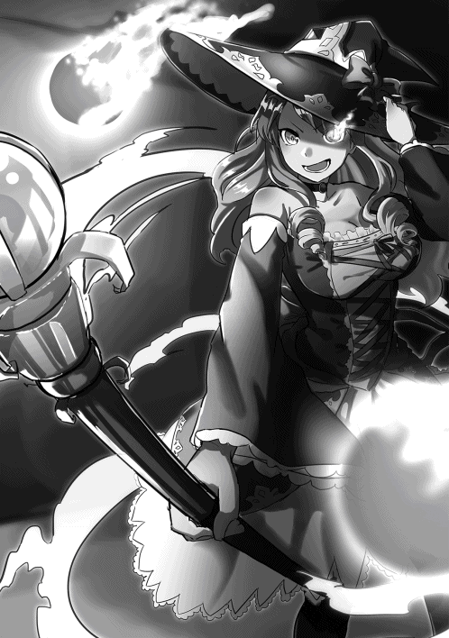
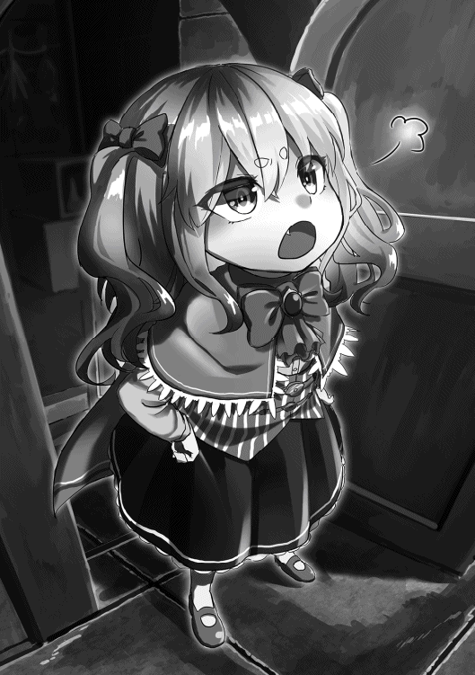

| ダンジョンはいいぞ！ | |
| 狐谷まどか | |
| TOブックス (2017) | |
とある世界の片隅で暮らす男セイジは記憶が無く、さらに魔力も体力も仕事さえも無い究極の落ちこぼれ。そんな彼はある日、知り合いの少女の勧めで冒険者を目指すことに。だが現実は甘くなく、訓練学校では荷物持ちという屈辱的な職業にさせられてしまう。それでも気の合う仲間たちとパーティーを組み、苦楽を共にしながら、セイジはダンジョンの凶悪なモンスターに立ち向かっていく！ いざ、茨の道を突き進め！ 一攫千金を夢見る男の、ダンジョン攻略ファンタジー！
目次
イラスト：もちうさ
デザイン：萩原栄一（big body）
01 僕、冒険者になります！
「ダンジョンはいいぞ！」
そんな強引な言葉で僕を冒険者の道へと引きずり込んだひとがいる。
名前はシャブリナさんという女騎士見習いだった。
「冒険者はすばらしいぞっ。血沸き肉躍る迷宮を攻略して、名誉名声と富を手に入れるんだ！」
「名誉名声はどうでもいいけど、お賃金は欲しいよね」
「!! そうだおちんぎんだ！ 何と言っても冒険者になるためには冒険者の訓練学校に入学するのが近道だ。学校は無料で入れるし、練習でダンジョンに入ればおちんぎんももらえるんだぞ！」
「お、お賃金はいいよね」
「そうだ、おちんぎん。おちんぎんは最高だぞ！」
シャブリナさんは興奮気味に僕を説得するのだ。
長い艶やかな青みがかった黒髪をおでこのところで揃えている、燃える様な情熱的な紅の眼が特徴的な少女だった。
年齢は一七歳だか一八歳だか、主に一部が育ち盛りのお年頃だ。
長身で爆乳で剣術を鍛えていた彼女が、僕にそんな事を言って押し迫って来たのだ。
「なあセイジ。貴様だって、いつまでもホームレスで施設のお世話になっているのでは体面が悪かろう」
「ホームレスとか大きな声で言わないでよ！ ひとに聞かれるだろっ」
「黙れ無銭飲食者め」
「そりゃそうだけど......」
「だから。だからな？ わたしとセイジで、ダンジョンを攻略しようではないか！」
どういうわけか記憶喪失だった僕は、片田舎にあるブンボンという街で路頭に迷っていた。
ここがどこで僕がだれで、そうしてこんな場所にいるのかもわからずにいたところを、ホームレスの保護施設で騎士団の奉仕活動をしていた彼女と出会ったんだ。
何故か僕に対していつも親切な騎士見習いのシャブリナさんである。
ホームレスが保護施設で領主さまの施しを受けられる期間は二か月だ。
いつまでも記憶喪失だからと言って甘えが許されるわけではないので、まだ施設に残っていられる期間があるうちにお賃金をもらえる職にありつかなきゃいけない。
だからシャブリナさんに勧められるままに、僕は冒険者を育成する訓練学校に入学することになった。
訓練学校で学びながらお賃金をもらえるのは魅力的だよね。
奨学金制度みたいなもんだろうか。
あれ、奨学金制度って何だろう......？
「名前と年齢と出身地を書き込めばそれでいいぞ」
「いやそうじゃなくて、あのう」
「なに、記憶喪失だから出身地がわからない？ だったらブンボンと記入しておけばいい。貴様はホームレスだから元から住所不定だし、その欄は書かなくてもいいぞ。アッハッハ」
馬鹿みたいに笑われて僕はカチンと来たけれど、言われるままに入学願書の麻紙に記入しようとする。
ここでふと思い出した事があった。
僕が何故か知っている文字と、この田舎街のみんなが使っている文字が違うのだ。
いったい僕はどこからやってきたというのだ......
「何だセイジは読み書きもできないのか」
「ごめんシャブリナさん。どういうわけか、わからないんだ......」
「セイジと言えば古い言葉で賢者という意味だそうだが、とんだ名前負けではないか。よし、わたしが代わりに記入してやろう」
「......あ、ありがとう」
「そうだ、セイジひとりでは何かと不安だろう。わ、わたしもよかったら一緒に入学してやろうかな？ 冒険者になってダンジョン攻略、一緒に頑張ろうな？ な？」
「シャブリナさん何か顔が怖いんですけど......？」
「きっ気のせいだ！」
親切なシャブリナさんが僕から羽ペンを受け取ると、スラスラと流麗な文字で代筆をしてくれる。
脳みその発達をすべておっぱいに吸い取られた様なシャブリナさんだけれど、女騎士見習いだからそれなりの学があるのかも知れないと僕は思った。
「ところでセイジの年齢は何歳なんだ」
「ええと確か、記憶の片隅に三〇歳の誕生日会をやった思い出があるよ」
「......」
「おめでとう、これで名前通り君は賢者になった、とかなんとか。誰かに言われた記憶があるんだよなぁ......」
「......なん......だと？」
僕が不思議な記憶の断片を思い返していると、シャブリナさんは入学願書に記入する羽根ペンを止めて、まるで信じられないものを見る様な顔をして驚いているじゃないか。
ぼ、僕そんなにおかしな事を言ったかな？
記憶喪失なんだから優しくしてくれてもいいんだよ......
「貴様、その顔その形で三十路のいい齢こいた大人だったのか」
「失礼だな！ たっ確かに僕はよく童顔だって言われるし華奢で背も低いけど、この前シャブリナさんの驕りで、不味いビールを一緒に飲みに行ったじゃないかっ」
「それとこれとは別の問題だ。この国では一〇歳を過ぎたら酒は飲める。しかしそうか、三十路なのか......」
何故かシャブリナは「三十路のショタ、三十路のショタ」と怪しい顔で呪文を繰り返していた。
いかにも怪しい顔をしている女騎士見習いさんに僕は不思議な気持ちになる。
「いったい僕の事を何歳だと思っていたの、シャブリナさんは？」
「......ん、てっきり、少なくともセイジは年下だと思っていたのだ。じゅ、一四歳!?」
その倍は生きてるよ！
記憶の断片が確かだったらねっ。
僕の抗議の言葉もどこ吹く風で、シャブリナさんはとても怖い顔をしてこんな言葉を口にしたんだ。
「そうか。セイジは合法ショタおじさんだったか。だがわたしはそれもイケる口だ。クックック......」
僕の名前はセイジ。
背はあまり高くないけれど、三十路になったいい大人だ。
記憶喪失なので出身地はブンボンの街という事になっている。
冒険者養成の訓練学校には、とりあえず体力には自信がないので控えめに支援職と志望クラスを書いておいた。
「冒険者の専門学校に入ったら、お賃金もらって自立できるといいなぁ......」
「おちんぎんがもらえれば、自立できるぞ！ ハァハァ、なあセイジ。小首をかしげながら、おちんぎんって言ってみてくれるか......」
「お、おちんぎん......？」
「！！！！！！！！！！！」
このとき僕は、脱ホームレスをして立派な冒険者になる事を夢見た。
三〇過ぎて記憶喪失のホームレスじゃ未来が暗すぎる。
お金が溜まったら、自分の過去の記憶を調べる旅に出るのもいいかなぁ。
まさかそのときは迷宮暮らしがあんなに大変だなんて思ってもみなかったからね。
力強く僕に冒険者になる事をオススメしてきたシャブリナさん。
ニッコリ笑って僕を迷わせる魔法の言葉を口にした。
「おちんぎんはいいな！」
02 訓練学校に入学です！
この国では訓練学校を卒業すると、誰でも冒険者になれるそうだ。
一攫千金を狙って没落貴族や農民の子倅も志願する。
一〇歳になったらこの世界では成人だからね。
記憶喪失でホームレスの僕にも優しい制度は嬉しいね！
それにしても......
「......すごい人数だね。これが全員、冒険者志願のひとたちなのかな？」
「そうだぞセイジ、みんなおちんぎんが大好きなんだ！」
色んな格好をしたひとたちが集まっていた。
いかにも戦士風の装備をしているのは、アタッカーと呼ばれる職業のひと。
灰色のトンガリ帽を被って、ローブに杖みたいなのを持っているのは魔法使いのひとかな？
それから人相の悪そうなおじさんは、盗賊みたいな軽装をしていた。
「次の方どうぞ！」
「おい呼ばれているぞセイジ、わたしたちの番だっ」
受付には厳めしい顔をしたおじさんが座っていた。
傷だらけの顔をしているけれど、それとは反対に満面の笑みを浮かべているからギャップがすごい。
「ようこそブンボン冒険者訓練学校へ！ 志願されるのはそちらの女戦士さまと、少年かな？」
「そうだ。わたしとセイジはパートナーを組んで、世界中の迷宮を攻略してまわるという夢を持っている」
ニッコリ顔の強面おじさんに、シャブリナさんは入学願書を差し出しながら説明した。
おじさんもシャブリナさんの語る夢に、ウンウン言いながら願書を受け取る。
「なるほど、シャブリナさんは騎士見習いというわけか。ブンボン騎士団の所属？」
「何事もなければ、来年には騎士に昇格する事ができるだろう」
「特技は剣術というのも納得ですな。志望職種はタンカーですか、騎士さまにはピッタリだ」
ふんふん言っていた受付のおじさん。
シャブリナさんの願書にペンを走らせながら最後にポンと印鑑を押した。
「ではあなたはタンカー役のコースに決まりました。ご入学おめでとうございます！」
「うむ。わたしが生涯をかけて、セイジのおちんぎんを守る事を誓おうッ」
次は僕の番である。
ニッコリ笑ったおじさんは、僕の願書に視線を落とすと途端に険しい表情になった。
「......ようこそブンボン冒険者訓練学校へ」
「よ、よろしくお願いします」
「年齢は三〇歳と書かれているが、サバを読むのはいかん」
「あのう、僕はこれでも成人で......」
「せいぜい一二歳といったところだろう。背伸びしてもいい事はないぞ坊主」
僕はギロリと睨まれた。
「職業はホームレスと書いてあるが、食い詰め貧民か。志願するジョブは支援職、使えないな......」
「............」
「お前の特技は何だ坊主」
「と、特にありません......」
胡乱な目を僕に向けてきた受付のおじさんは、しばらくジっと観察した後にペンを願書に走らせた。
「とりあえず荷物持ちでもやらせるしかない。お前は今日からポーターだ」
「ポーターって何ですか？」
「荷物持ちをしながら地図をマッピングしたり、飯炊きや寝床を用意したりする役割だ。それぐらいなら素人のお前でもどうにかなるだろう」
そんな説明を聞いて僕はとてもガッカリした。
そっかあ。
体力には自信がないし魔法とか無理だから支援職かなとは思ってたけど。
冒険者なのに荷物持ちってパっとしないよね......
けれど最後に。
難しい顔をしたおじさんが急に表情を緩めて僕にこう言う。
「坊主、誰だって駆け出しのうちは苦労するものだ。失うものもあるかもしれねぇ」
「は、はい......」
「だが続けていれば得られるモノもある」
「おちんぎん......ですか？」
「働きに報酬が伴うのは当然だ。富や名誉もそうだが、俺は冒険者になって嫁さんと出会った」
「お、お嫁さん」
確かに僕は三十路だし、世間的に言って奥さんがいてもおかしくないけどさ。
ホームレスじゃ生活力ないし結婚できない。
やっぱりまずはおちんぎんだ。
「坊主も冒険のパートナーが人生のパートナーになればいいな。ん？」
何故かおじさんはウィンクを飛ばしてから、シャブリナさんを見た。
するとシャブリナさんは突然顔を赤くして両手をブンブン振り回した。
「しょ、しょんな事をわたしは考えてなんかないぞ」
「まあ坊主の場合は冒険者として一人前の稼ぎが得られる様になってからだ」
「そ、そうだぞ。おちんぎんが先だ！ あかちゃんはその後だ!!」
そうして受付のおじさんは持っていたペンをカウンターに置いて。
僕に左手を差し出し、握手を求めたのだ。
おや、そう言えばおじさん左利きだったんですね？
「ブンボン冒険者訓練学校はあなたの入学を歓迎します。おめでとう！」
あれ、今気が付いた。このひと右腕がないよ？
服の袖がダランとしていたから最初はわからなかった。
けれど立ち上がると、袖の中身がない事に気が付いたのだ。
失うものもあるってもしかして右腕のことだった!?
「入学した訓練生はこっちに集まれ、適正とバランスを見て班分けをするぞ！」
そんな驚いている僕の事はそっちのけで、訓練生を指導する教官が大声を張り上げていた。
シャブリナさんに引っ張られながら、ぞろぞろと集まった訓練生の集まりに加わる。
「さっきの受付のひと、右腕が無かったよ......」
「そうだったか？ そんな事よりも班分けだ。一緒の班になれるといいな！」
「そんな事よりもって」
腕だよ腕、冒険者続けてるとああなるのかな......
「あれは訓練生を脅かすためのパフォーマンスだから騙されるな」
「そ、そうなの？」
「騎士団に入営する時も、受付が似たような事をするのだ。あの受付は狐人族の人間だから姿かたちは変幻自在だ。見てみろ」
僕は言われるままに気になって受付の方を見ると、
「あれ!? さっきのおじさんがいない......」
「代わりに狐人間がカウンターに座っているだろう」
「ほ、ホントだ」
「相手のイメージを感知して、魔法で化けて脅すんだ。腕がない様に見えたのもきっとセイジの中にある冒険者のイメージを具現化させる魔法でも使ったのだろう」
「そっかあ、じゃあ腕がないのは魔法で見間違えただけ......」
受付を見ていると、狐の顔をした人間が手を振ってくれた。
ちゃんと今度は右手でね。
世の中にはいろんなひとがいるものだ。
僕は記憶喪失だから世界の常識をすっかり忘れてしまったのかも知れない。
「貴様の身の安全は、保護者であるわたしが守り抜くと決めたからな」
「か、顔が近いよシャブリナさん」
「片腕どころか貴様のかわいらしいその顔に、傷ひとつだって付けさせるものか。これは騎士の誓いだ！」
「だから顔が近いって」
「わたしは本気だ。本気と書いてマジだからな。アッハッハ」
ずいと顔を近づけたシャブリナさんから、何だかとってもいい匂いがした。
こ、香水かな？
おちんぎんじゃないところがちょっと反応しちゃった。
03 攻撃力を測定します！
ドキドキしていると班分けがはじまっていた。
紙片を片手に、ゴリラみたいな教官が大きな声で説明をはじめていた。
「これから願書を受付した順に、現時点でお前たちがどの程度の実力なのかを確認させてもらう。では練兵場に移動したら順番に並んで、名前を呼ばれた訓練生は測定をする様に！」
ゴリラみたいな教官、ではなくてゴリラ顔の教官が手を挙げて誘導してくれる。
僕たち訓練生はゾロゾロとそれに付いていくんだけど、シャブリナさんが何故か自信満々の顔だ。
「あのゴリラ教官。なかなかの腕を持っていると見た」
「そうなの？ 試験をするのはいいけど、荷物持ちの僕は何をするのかな......」
「騎士団に入営する時には、ダミー人形に攻撃を叩きこむ試験だったな。たぶん似たようなものだろう」
「剣も握った事がないのに、大丈夫かな？」
不安な気持ちがますます膨らんでしまう。
すると大きく膨らんだ胸を張ってシャブリナさんが白い歯を見せた。
「安心しろセイジ。貴様の剣はこのわたしであり、貴様の盾はこのわたしだ！」
「それじゃ僕の試験にならないじゃないかシャブリナさん。それに攻撃を叩きこむ試験じゃないかもしれないし......」
練兵場と呼ばれる場所にやって来ると、学校によくある運動場みたいな場所だった。
あちこちで練習試合をやっているひとがいたり、ダミー人形相手に素振りをやっていたり。
広場の隅の方には射爆場みたいなのがあった。
弓使いや魔法使いが遠くから攻撃を打ち込んでいる。
「それでは試験を始める。名前を読んだら前に出て、ダミー人形に力いっぱい攻撃するように」
「「「はい！」」」
「攻撃方法はジョブ毎に異なるが、攻撃判定と命中判定を加算したポイントを基準に班分けの選考をする！」
「「「わかりました!!」」」
訓練生のみんなはノリノリで返事をしていた。
やっぱり一攫千金を狙っている冒険者候補ともなると気概が違う。
「シャブリナさんが言った通りだったね」
「ここでの実力試験の結果で、班の振り分けが決まるからな」
「そうなんだ？ だからみんな必死なのかな」
「訓練学校時代の成績が、卒業してからもずっと付いて回るから当然だろう。いい仲間と班分けで一緒になれば、卒業してからも人脈となるのだ」
へえ、そうなんだと僕が感心していたところで、名前を呼ばれた戦士っぽい新米訓練生のひとりが前に出る。
ゴリラ教官から練習用の剣を渡されて、力いっぱいダミー人形に叩きつけた。
「攻撃力30、まあそこそこだな。腰が入っていないので命中判定はゼロだ。次っ！」
ガックリと腰を落とした戦士さんは、見た目は強そうなのに腰が引けてたらしい。
そんな感じで戦士や弓使いのひとが順番にダミー人形相手に攻撃したり、命中率を競った後に、ゴリラ教官から攻撃判定を言い渡される。
みんな50とか60とか、低いひとだと20という女の子もいた。
あれより低いと、大の大人として恥ずかしいかもしれないや......
その次に名前を呼ばれたのは、トンガリ帽子をかぶった魔法使いっぽいひとだ。
「次っ、アーナフランソワーズドイヒー訓練生！」
「おほほっ、真打ち登場というわけですのね？ ではこの光と闇の魔法を統べるアーナフランソワーズドイヒーさまの実力をお見せいたしますわ！」
優雅に前へ進み出たのは縦ロールというのか、巻き毛を揺らす魔法少女だった。
お貴族さまの令嬢っぽい高価な衣服に、禍々しい黒くて大きく長い杖。
「おい、ドイヒーだってよ」
「もしかして目抜き通り沿いのパン屋の娘じゃないか？」
「厨二病をこじらせて、美味しくなあれとか言ってた娘だよな!?」
「魔法修行の旅に出たと聞いていたが、旅から帰ってきてたのか......」
ガクッ。
ズッコケそうになった魔法使いの少女は、ゴリラ教官に支えられて事なきを得る。
てっきり貴族の令嬢さまかと思ったらパン屋の元看板娘でした。
「わ、わたくしの修業の成果を見ても、同じ態度でいられるかしら？ ふふふっ見ていなさい、もう今のわたくしがただのパン屋の娘ではない事を！」
ダミー人形から少し距離を置いて、口元に微笑を浮かべた魔法使いの少女が大きな杖を構えて......
「いにしえの魔法使いは言いました。フィジカル・マジカル・アッハーン！」
不思議な呪文を口から紡ぎだした魔法使いの少女は、次の瞬間に黒くて大きくて禍々しい長い杖からビームを発射したのだ。
チュドーンと、ただの一撃でダミー人形の顔面が爆発する。
爆炎が収まると、黒焦げになったダミー人形の首がボロリと地面に落ちたのだ。
「す、すごいビームだったね。変な呪文だったけど」
「ほう、あのパン屋の娘もなかなかやるではないか......」
新米訓練生のみんなも、アーナなんとかさんの魔法攻撃に圧倒されて騒然となっている。
「攻撃力判定は２５０だ。命中判定も顔面を見事に捉えたから１００！ 合計３５０だな」
「わたくしの修業の成果をもってすれば、当然の結果ですわ。おーっほっほ、おーっほっほっほ！ けほけほっ......」
すごく自信満々に胸を揺らして笑っているアーナなんとかさん。
途中でむせてゴリラ教官に背中をさすってもらっていた。
「次、シャブリナ訓練生！ ほう、ブンボン騎士団で騎士見習いをやっているのか？」
「ああそうだ、武器は自前のものを使ってもよろしいか？」
「いいだろう長剣と盾だな。判定試験はダミー人形だぞ、盾はどうやって使うのだね」
「......こうやって、使うのさ！」
先ほどの魔法使いの少女に対抗する様に、グンと豊かな胸を突き出したジャブリナさんがゴリラ教官に返事した。
言うが早いか盾を前に突き出したシャブリナさんは、まるでダミー人形に対してタックルをかます様に駆けだすじゃないか。
一気に距離が詰まると、そのままダミー人形に体当たりする。
すると盾を翻したところに剣を鋭く横薙ぎに見舞った。
ズバっと一撃でダミー人形のボディが切り裂かれ、そのまま上半身が地面に崩れ落ちる。
「攻撃判定は盾の攻撃と剣のコンボで１６０だ。命中判定はダミー人形を切断だから文句なしに１００だ。誰かダミー人形の予備を持ってきてくれ！」
すごいよシャブリナさん！
ただの変な女騎士見習いだと思ってたけど、今のシャブリナさんは格好よかった。
見るも止まらぬ早業でコンボを決めた姿に僕はちょっと見惚れてしまったのだ。
「物理攻撃で１６０とか、あのノッポの女凄いなっ」
「さすが騎士見習いは剣の腕が違うぜ......」
「連撃していいなんて聞いてないよ？」
「どうせ素人の俺たちじゃ、コンボをしてもそんなに違いはないだろ！」
「悔しいのう悔しいのう」
みんなも強烈なコンボを決めたシャブリナさんにビックリだ。
自信満々に戻って来たシャブリナさんが誇らしく感じて、僕は手放しに褒め称える。
「シャブリナさん格好よかった！」
「くっくっく。貴様に見られていると思うからわたしは頑張れたのだ」
「シャブリナさんが本当に騎士っぽくてびっくりしたよっ」
「そうだろう、これがおちんぎんパワーだ!!」
ハイタッチしながら僕とシャブリナさんは笑顔で会話。
そうしているとまた別の人が名前を呼ばれていたのだけれど......
「次、ティクン訓練生！」
「......」
「ティクン、ティクン訓練生！ この中にティクン訓練生はいないか？」
「............」
新米訓練生を見回しながら、教官は何度もティクンというひとの名前を呼んでいた。
けれどもどこからも反応が返ってこないので、訓練生たちは互いの顔を見合わす。
「もしかしたら怖くなって逃げたのかな」
「パン屋の娘とノッポの女が大暴れだからな」
「あれを見せられたら自信喪失したのかも知れない」
「俺だって自信なくしたぜ......」
新米訓練生たちがヒソヒソ話をしている中で、何度も名前を呼ばれるたびに、ビクンビクンと背筋を引きつらせているモジモジ少女を僕は発見した。
04 チェーストー！（空振り）
「ティクン！」
ビクン！
「ティクン訓練生！」
ビクン！
反応してるよ、あのモジモジ女の子。
「ティクン訓練生はこの中にいないか!?」
ビクンビクン！
やっぱり彼女がティクンちゃんみたいだ。
年齢は一〇歳をちょっと過ぎた、大人の階段を昇りはじめた頃合いだろうか。
ショートボブの赤髪で、顔の表情までは長く切りそろえた前髪に隠れてうかがい知れなかった。
そんなモジモジ少女が恥ずかしそうに前屈みになっている姿を見ていると。
小さく手を伸ばしてようやく自己主張をした。
「君がティクン訓練生か？」
「コクコク」
「ちゃんと名前を呼ばれたら返事をする様にッ」
「ひっ」
「返事はハイかイエスか、まったくダンジョンは最高だぜ以外の言葉は認めない。お前たちも覚えておくといい！」
「「「まったくダンジョンは最高だぜ！」」」
新米訓練たちの返事に、教官はバナナを与えられたゴリラみたいな満足げな表情だった。
シャブリナさんも「最高だぜ！」に力を入れて反応していたけれど、冒険者たちのよくわからないテンションにゲンナリした気分だよ。
「さあお前も言ってみろ」
ゴリラ教官はズイとモジモジ少女に顔を近づけながら、耳に手を当てている。
教官が求めている返事を待っているポーズだね。
「......」
「............」
「......そのう」
「何だ？ 返事はどうした。ハイかイエスかダンジョンは最高だぜか、お前には選ぶ権利がある」
「お、おトイレに行ってもいいですか？ もう我慢の限界かもしれませんっ」
モジモジ少女がモジモジしながら心情を発露した。
「トイレは受付前に済ませておきなさい。ダンジョンでは事前の準備を怠ると命に係わる事もある！」
「ひっ、触らないで。触ったらジョビジョバしちゃいますッ。あっ......」
「わ、わかった早く行きなさい。トイレは受付の奥にあるから。急いで！」
モジモジ少女の肩に手を置こうとした教官まで、その言葉にビクンと反応した。
ティクンちゃんはモジモジしながら内股で駆けて行く。
「今の絶対ちょっぴり漏れたよね」
「乙女の秘密に振れるのは騎士道に反するからな。わたしは何も見てないぞ」
「あの女の子、何のジョブに指定されたのかな。僕と同じであんまり戦闘職では役に立たなさそうな見た目だけど」
「たぶんシスター服の様なものを身に着けていたから、ヒーラーだろうな。回復職というやつだ」
恥ずかしがり屋さんのヒーラーかぁ。
ああいう女の子が野郎ばかりのパーティーにいて、心も体も癒してくれるのは素敵かも知れない。
モジモジしたところも小動物っぽくて愛嬌があるよ。
この年齢になると、見ているだけで癒しがあるってのは大事なんだ。
「次、セイジ訓練生ッ」
「はっはい！」
ちょっとだらしない顔を浮かべていたかもしれない。
僕はシャブリナさんに肘で突かれ、あわてて現実に引き戻された。
急いでゴリラ教官の前まで駆け付けると、訓練用の剣を受け取ってダミー人形に向き直る。
「坊主は荷物持ちか......」
「は、はいっ」
「ポーターであっても、戦闘時にはサブアタッカーとして参加することもある。攻撃判定でいい数字を出すに越したことはないからな」
「わかりましたっ」
長剣というのかな、訓練用とはいえ両手で持つとかなりズッシリくる。
こ、こんな重たい剣をシャブリナさんや他の戦士たちは振り回していたの!?
僕だって一応はいい大人だから、そういうところは顔に出したくない。
童顔でチビだからって馬鹿にはさせないっ、大人の男の底力を見せてやる。
僕は果敢に長剣を引き上げ、颯爽と駆け出す。
重量を感じるのならば、その重量で重い一撃を叩きつけてやればいい。
そこから立て続けの連撃を......
「チェーストー！」
「攻撃判定０、７、２、１。合計10！ 命中判定は０だ、よって総合判定10 !!」
「......ハアハア、ぜぇぜぇ」
最初の一撃は遠すぎて空振りに。
急いで引き上げた剣はダミー人形の胸元を掠めて、頭上から振り下ろした一撃が人形の鼻を撫でた。
最後に息切れしたので人形に手を付いたら、それまで判定に加味された。
な、情けない......
「もう少し接近してからダミー人形を叩くといいぞ坊主。その気概は買ってやるが、荷物持ちは体力勝負だ、精進するように」
「わかりました......」
冒険者を目指す様な人間はみんな体力が有り余っていたらしい。
僕はどうやら見た目通りの非力さで、彼らほど長剣を自在に扱えなかった。
しかもゴリラ教官に「坊主」と言われ、白い歯を見せられながら、頭をガシガシと撫でられてしまった。
三十路のおっさんがゴリラのおっさんに頭をナデナデされるとか......
こんな悔しいことはない。
頭が高いよ！
「班分けの結果は昼休み中に発表する。その間に食堂で飯を食って体を休めておけ」
「「「はい！」」」
「それから、班分けのメンバーを確認したら宿舎に移動して、自己紹介も軽く済ませておけ。午後からは実際に練習用ダンジョンに潜って君たちの実力を採点する！」
「「「わかりました！」」
トイレに行ったまま帰ってこないモジモジ少女を除いて、全員の実力試験が終わった。
肩を落とした僕は、シャブリナさんに慰めてもらう。
「息巻いてたけど散々だったよ......」
「まあ初心者に剣を振り回すのは難しいからな。少し稽古を付けてやるか」
「ほ、本当なのシャブリナさん？」
「訓練学校にいる間でよければ、このわたしが手ほどきをしてやろう」
マジで役立たずの荷物持ちと思われるのは嫌だ。
騎士のシャブリナさんがやってくれるのなら、基礎ぐらいは訓練学校に在学中に身に付くかもしれない。
形さえ覚えれば、あとは自分で繰り返すだけ。
「ありがとうマジで、お礼に何でも言ってね。僕にできる事なら何でもしますから」
「ほ、本当かセイジ!? わたしは今言質を取ったからな！」
感謝の気持ちを伝えたところ、シャブリナさんはとても残念な表情で興奮していた。
鼻の下が伸びてる、美人さんが台無しだよ......
05 僕のルームメイトを紹介します！
僕たちは訓練学校の練兵場から、校舎の離れにある食堂へとやって来た。
ぞろぞろと並んで移動する新米訓練生の数は、全部で二九人だ。
これが多いのか少ないのか、今の僕にはピンと来ないけれども、
「続けていく内に何人かは訓練学校を辞める事になるだろうな」
凛々しい顔で冷静に分析したのがシャブリナさんだ。
配給用のトレーを持って給食口に並んでいると、僕を見下ろしながらそう言ったんだ。
「やっぱりみんな、訓練が厳しくて冒険者を諦めるのかな？」
「たいした苦労もせずに、ダンジョンに籠れば一攫千金が手に入ると勘違いしている馬鹿どもはそうだろう」
「事実はそんなに甘くはないんだろうね」
「もちろんだ、冒険者は特殊な技能集団だからな。度胸だけではなく、技術向上や日々の訓練を欠かさずに続けることで成長する。これは騎士の在り方にも通じるところがあると言える」
「なるほどね」
「継続は力、いや力技だ。経験を重ねる事で力と技の両方が手に入る。だから冒険者を続ける事を目標にしよう。まずは三年だ」
珍しくキリっとした顔でシャブリナさんが回答してくれたので、僕はふんふんとうなずいておいた。
確かにどんなお仕事でも、楽をして稼ぐ方法なんてないと思う。
「冒険者として生き残れる平均寿命は、三年程度と言われている」
「えっ、三年で死んじゃうの？」
「いや平均三年もすれば辞めてしまうという事らしいぞ。だがこれはあくまでも平均の話で一〇年、二〇年と続けて有名なギルドマスターに昇り詰める者もいれば、訓練学校を出る前に辞めてしまう情けない連中もいるからな」
配給待ちをする列は徐々に消化されていき、僕たちの番になった。
大きな黒パン、それにキャベツの漬物は自分でトレーに乗せる。
そこからトレーを給食口のおばさんの前に出すと......
「はいお待ちっ」
木のおたまでマッシュポテトがベチャリと入れられた。
根菜とベーコンを煮込んだスープを受け取ると、最後にデザート果物を受け取る。
「保護施設より豪華な料理だね！」
「こんなショボくさい料理で満足するんじゃない！」
「そ、そうかな。意外に美味しそうだけど......」
マッシュポテトはボリュームも色身も保護施設で見たものより豪華だし、何より温かいスープが付いているんだよ！
デザートにレモンひとつまであるなんて。
冒険者、最高じゃない！
「おばちゃん、わたしとセイジのマッシュポテトは大盛りで頼む！」
背も高く騎士見習いとして運動量の多いシャブリナさんは、大盛りを要求して給食のおばちゃんに抗議をしていた。
若いっていいなあ。
おじさんになると量はこのぐらいでちょうどいいと思うんだ。
などと思っていると、
「何ですのこの黒くて硬くて大きさばかりがご立派なパンは！ 中には石臼の粉末まで入り込んでいるではありませんかっ」
「嫌ならあんたは食べなくてもいいんだよ。次が控えてるんだから移動してくんな！」
「そんな、あんまりですわ！ ......パンが、パンが蔑ろにされていますわっ」
僕たちの後列でも似たような抗議の声が聞こえてきたんだ。
振り返ってみると、そこには金髪巻き毛の魔法少女の姿があった。
確か名前はアーナなんとかさんで、
「パン屋の娘だったな。よほど不味そうなこのパンが許せなかったのだろう」
「そうかな？ 大きいし美味しそうに見えるけど......」
「これのどこが美味しいものか、この黒パンは、ライ麦を粉末にする際に使った石臼の破片が入っている平民用のものだ。まあ貴様が食べていたのはさらに程度の低い、貧民用のカビたパンだからな......」
僕はカビたパンを毎日ありがたがって食べていたのか......
まあ記憶喪失だった僕が保護施設で食事にありつけただけでも、神様に感謝しなくちゃいけないのかな。
ちなみにパン屋のアーナなんとかさんは、抗議の声も虚しく次の順番の人に追い立てられた。
黒パンを根菜スープに付けて食べてみたけど......
やっぱり僕にはそれほど不味いものには感じなかった。
「わりと美味しいじゃん？」
「......貴様は幸せな奴だなセイジ」
「そ、そうかな」
よくわからないけどシャブリナさんに同情されてしまった。
「......うっうっ、わたしがおちんぎんを一杯稼いで、いつか貴様を幸せにしてやるからな？」
「え、そこは一緒に稼ごうじゃないの」
「そうだ、そうだぞセイジ！ パートナーだからなっ」
一七歳の少女に励まされる三十路おじさんの図である。
ちょっと惨めだ、頑張ろう......
お昼ご飯を食べ終える頃になると、ゴリラ教官が食堂にやって来た。
ドカドカと向かった先は、壁に掲げられている大きな掲示板。
そこに班分けの結果発表がペタリと張り出されたのだ。
そのままこのメンバーが寄宿舎の部屋割りにも対応しているものらしい。
「お、セイジの名前があったぞ」
「どこどこ？」
「おおっ、わたしと貴様はどうやら同じ班になれた様だ。特記事項に人生のパートナーと書いておいてよかった、受付やあのゴリラが気を利かせてくれたのかも知れないッ」
文字の読めない僕のために、シャブリナさんが貼り紙を指さして教えてくれた。
説明の後半が急に聞き取りにくくなったけど、
「なにシャブリナさん？」
「ほ、他の班員に、先ほどのパン屋の娘の名前があったぞ」
わざとなのか話題を強引に被せられて、教えてくれなかった。
酷いよシャブリナさんは......
「ふむ、あのパン屋の娘は魔法使いとしてなかなかの腕だった。近接戦闘と盾役をわたしがこなし、遠距離攻撃と支援魔法をあの娘が担当すれば、攻撃力としてはバランスが取れているな」
「あらあら、わたくしと同じ班になるのは、あなたたちでしたの？」
そんな言葉が背後から聞こえてきて振り返ると、そこには金髪縦ロールを揺らすパン屋の看板娘さんがいた。
「ええと、......アーナフランシスコザビエルさんでしたっけ？」
「アーナフランソワーズドイヒーですの！ 名前が覚えにくいのでしたら、特別にアーナさまかフランソワーズさまと愛称でお呼びくださってもよろしくってよ。おーっほっほ！」
「そうかドイヒーよろしくな」
「ドイヒーではありませんわ！ アーナですわ!!」
白い歯を見せてシャブリナさんは右手を差し出した。
けれど、激高したドイヒーさんはその手をパチンとはじき返す。
「ブンボン騎士団所属、騎士見習いのシャブリナだ。こっちはわたしの相棒セイジ」
「あら、三人だけですの？ 他の班員はいないのかしら」
「他の班はだいたい五人の様だが、うちは三人しか書かれていない」
「新米訓練生は全員で二九だし、全部で六班なら最後のひとつは四人じゃないといおかしいはずですわ」
「おや、貴様の予想通りだ。どうやら追加発表があるみたいだぞドイヒー」
ゴリラ教官がやってきて、僕たちの班分けの張り紙に加筆をはじめた。
誰か書き洩らしがあったのかと思ったら、そうだったみたいだね。
「なんて書いてあるの？」
「どうやらティクンが最後のひとりらしい。さっきの先っちょだけ漏らしたモジモジ少女だ」
ああ、回復職の格好をした赤毛パッツンの女の子。
食堂を出て寄宿舎までやって来ると。
確かに割り充てられた部屋に、モジモジ少女がいた。
「ヒィ、駄目です見ないでえっ!?」
ちょうどパンツを脱ぎかけて、下着を交換するところだったみたいですね。
モジモジ少女は、お歳に似合わずモジャモジャ少女だった。
06 役割分担は大事です！
「短剣、筆記用具、皮袋の水筒に麻紙の束とボード、それからロープとランタン......」
寄宿舎の僕たちの部屋での事。
ダンジョン攻略に使う基本的な装備一式を僕は点検していた。
ひとつずつ何が足りないのかを確認するために、支給品を安っぽい麻紙に記入していく。
「それから緊急時の救急セットと包帯だ。場合によっては回復職が動けない可能性もあるからな、後は携帯食料もおやつ代わりにもっていく」
「あらシャブリナさん、手際がよろしいですわね？」
しゃがみ込んだ僕と点検を手伝ってくれるシャブリナさんの背後から、アーナなんとかドイヒーさんの声が聞こえた。
名前が長いし覚え間違いをすると怒られるので、僕はお言葉に甘える事にした。
今度からは愛称で呼ぶのがいいよね。
ええと、確か愛称は......
「シャブリナさんは、ブンボン騎士団の騎士見習いをしているんだよドイヒーさん」
「ふふふっ。わたしは街の平和とセイジの貞操を守ると、女神様に誓いを立てたのだドイヒー」
「ドイヒーではありませんわ！」
「貴様の名前は確かアーナフランソワーズドイヒーで間違いなかったはずだが、はて。これでも親しみを込めて愛称で言ってみたのだが......」
「愛称でお呼びになるなら、せめてアーナさまとッ」
「「わかったよ（ぞ）ドイヒーさま」」
さま付けをしたら満足するのかと思ったのだけど、ドイヒーさんはますますプリプリした顔をして、絹の様な白い肌を上気させてそっぽを向いちゃった。
「もう、よろしいですわ！ 何とでも好きにお呼びになってくださいましなっ」
「見たかセイジ、あれがツンデレだぞ」
「よくわからないけど、ドイヒーさんの照れ隠しって事かな？」
きいいいっ。
ドイヒーさんは肩を怒らせて自分の装備をズタ袋の中にまとめていく。
すると部屋の隅で小さくなっていたティクンちゃんが、
「あのう、ドイヒーさま」
「何ですの!?」
「あっ、ごめんなさい。そのう......支援魔法の分担はどの様にすればいいかなと」
モジモジ少女っぷりを見せながらティクンちゃんがおずおず手を挙げてそう言った。
なるほど役割分担か。
聞けば回復職のティクンちゃんは、聖なる癒しの魔法を駆使する他にも、補助系の支援魔法を使う事ができるのだそうだ。
「わっわたしは、集中力アップと痛み耐性アップの魔法、それから攻撃力アップの支援魔法が使えます」
「支援魔法、ですの？ わたくしはいにしえより伝えられし、光と闇を統べる魔法使いですわ。攻撃特化型の魔法を専門としておりますの」
「じゃ、じゃあわたしは集中力アップと痛み耐性アップの魔法を担当しますねドイヒーさま......」
「ふんっ」
「ひっ......」
何でわたくしが！
と言わんばかりに不機嫌な顔をして、ズタ袋に大きな長い杖を通して背負うドイヒーさん。
そのまま無言で僕たちの部屋から廊下に飛び出していった。
ギイバタン。
「パン屋の娘はまるで協調性が無いな」
「支援魔法にも色々とあるんだねえ。じゃあ僕も攻撃力補助とかを受けたら少しはサブアタッカーとして役に立つかな？」
「ゼロに何をかけ合わせてもゼロにしかならないぞセイジ」
「酷い事を言うなシャブリナさんはっ」
「だからセイジは黙ってわたしの背中に隠れていればいいのだ。セイジの剣はわたしであり、セイジの盾はわたしだ。貴様の分はわたしが戦えばちょうどいい」
確かにシャブリナさんの剣技は凄かった。
並の男性の戦士が攻撃判定で80を出すのも難しかったのに、盾と剣の連撃であっさりと１６０の攻撃判定を出したからね。
女騎士は伊達じゃないわけだ。
「あ、あのう......」
「ティクンちゃんどうしたの？」
僕とシャブリナさんが振り返ると、声をかけられてティクンちゃんがビクンとした。
「わたしは戦闘中、どうしたらいいでしょうか」
「貴様の役割は回復職だからな。騎士団では、本来ならば戦闘中は攻撃参加をしてもらう場合もある」
「あっ、はい」
「しかし初顔合わせの班員同士で、場所は狭いダンジョンの中だ。無理のない範囲で攻撃参加してと言いたいところだが、無理だろうな......」
シャブリナさんが立ち上がって腕組みをすると、大きな胸が寄せて上げられ強調された。
萎縮した顔のティクンちゃんだけど、コクコクと同意していた。
「それはどういう事シャブリナさん？」
「パン屋の娘は見た通りの自信家だ。その自信に自惚れて、独断専行するタイプやも知れん」
「確かにそうだね......」
「恐らくバンバン前に出て行って、連携を取るのは難しいだろうからな。無理に前衛に人間が固まると、かえって団子になって守るものも守れなくなる」
「ちょ、頭を撫でるのやめて。恥ずかしいからもうっ」
シャブリナさんが腕組みを解くと、たわわなお胸がよく揺れた。
ティクンちゃんにクスリと笑われる。
ほらあ、絶対同年代と勘違いしているよこのモジモジ少女。
一回り以上年齢も年上なんだから、ちゃんと気遣いのできる大人っぽい事をしておこう。
「ティクンちゃん。無理したらだめだよ」
「コクコク」
「そうだ、勝手にティクンちゃんて呼んでたけど、嫌じゃないかな？」
「フルフルっ......」
「うん、それじゃあ僕の事もセイジって気軽に呼んでね」
「......セイジくん？」
僕たちも初ダンジョン攻略の準備を終えて、ドイヒーさんを追いかける事にする。
荷物持ちらしくティクンちゃんの手荷物を預かってあげて、外に出ようとしたところ、
「狭いダンジョンだったら......そうだな。わたしが前衛を担当し、半歩後ろから先制攻撃をドイヒーを担当するのが理想だろう。その場合はティクンはドイヒーとポジションチェンジをして......って、にゃにゃにゃ、にゃんでわたしが目を離しているスキに貴様たちはいい感じになっているんだ!?」
背後からブツブツと戦略分析をしていたシャブリナさんが怒り出したのである。
「シャブリナさん行くよ！」
「お、置いていかないでくれ！ なあ、わたしたちはパートナーじゃないかっ」
こうして僕たちは学校の中にある、模擬ダンジョン施設にエントリーする事になった。
大きなお屋敷みたいな石造りの立派な建物は、モンスターパレスと言うらしい。
「みなさん何をしておりましたの!? さあ。ついにこのわたくし、アーナフランソワーズドイヒーさまの魔法修行の成果を発揮する時がきましたのよ」
先にモンスターパレスに到着していたドイヒーさんはやる気満々だった。
黒くて禍々しい長い杖を振り回したドイヒーさんは、僕たちに振り返っておかしな呪文を口にする。
「いにしえの魔法使いは言いました、フィジカル・マジカル・たくましくなーぁれ！」
07 モンスターパレスです！
モンスターパレスは、堅牢な城館をダンジョンに見立てた訓練施設である。
「新米訓練生は各六班に分かれて、ダンジョン攻略のタイムアタックで競ってもらう。最深部にはボス部屋が存在し、これを倒せばクリアだ！」
ゴリラ教官の話ではモンスターパレスの各部屋に、ダミーモンスターとダミーアイテムが配置されている。
今回はダンジョン攻略の体験学習みたいなものだから、実際のモンスターが部屋の中に連れ込まれているわけじゃない。
「しかし訓練とは言え、ダミーモンスターは反撃をしてくる。攻撃判定を受けた場合はその時点でペナルティーが発生するので、心してかかるように。なおタイムアタックの順位は毎回ランキング加算され、常に食堂の掲示板に張り出される。最下位になったチームは練兵場一〇周だ！」
「「「わかりました！」」」
こんな調子で五人一組で構成された各班が、順番に訓練施設に挑んでいく。
さっそく吸い込まれていったひとつめの班だけど、開始して一〇ほど数えたところで内部から絶叫が聞こえてきた。
「ギャー!?」
「ほげぇ、くるな！ くるんじゃねぇ!!」
「くっ殺せ！ わたしを殺せっ」
その声を聞いたゴリラ教官は言いましたとさ。
「訓練だから死ぬことは滅多にない。だがベチャベチャのヌチョヌチョになる。わっはっは！」
べ、ベチャベチャのヌチョヌチョ......
いったいパレスの中では何が起きているんだろう。
滅多にないという事は、ごくごくたまに死ぬこともあるんだろうか。
ヌチョベチャ死なにそれ怖い。
僕は不安になって、シャブリナさんにすがる様な視線を向けた。
「......僕たちの班って四人組だけど、かなり不利なんじゃないのかな？」
「そんな事はありませんわ。このアーナフランソワーズドイヒーさまがひとりで三人分の働きをするのですから、他の班よりむしろ有利というものですわよ！ さあ一着を目指して一気に力尽くでっ──」
「パン屋の娘が言っている事は無視するんだ」
やる気満々のドイヒーさんとは対照的に、クールな表情のシャブリナさんが静止した。
「何ですってシャブリナさん!?」
「最下位になるのは論外だが、はじめてだからと焦って失敗したら何の意味もないからな。最初は馴染むまでゆっくりと、それから徐々に余裕が出てきたらヒートアップだ。ハァハァ」
僕の肩に手を置いて、ズイと顔を近づけてきたシャブリナさん。
けれども言葉の途中から妙に興奮した表情で言葉を締めくくった。
「シャブリナさん吐息がかかってるよっ」
「これはかけてるんだ言わせるな！」
こうして僕たちの出番がやって来るまで。
僕の隣で小さくなっていたティクンちゃんが、モンスターパレスの中から聞こえてくる絶叫の度に背中をビクンビクンさせていた。
「ひっ、セイジくん怖いですっ」
「こらモジモジ少女、ドサクサに紛れてわたしのセイジに抱き着くんじゃない！」
「あなたたち、何をしておりますの!? さあわたくしたちの出番ですわ。行きますわよアーナフランソワーズドイヒーさまと、不愉快な仲間たちが！！！」
「不愉快な仲間たちって......酷いよドイヒーさんっ」
騒がしい掛け合いもそこそこに、僕たちは四番目にモンスターパレスへと突入することになる。
盾を前面に押し立てたタンカー役のシャブリナさんが先頭に。
その斜め後ろに黒くて大きくて禍々しい長い杖を抱いた魔法使いドイヒーさん。
三番目に回復職のティクンちゃんが、魔法発動体だという魔導書を持って続く。
最後はみんなの手荷物を背負子に積んだ僕だ。
ギイイイ、バタン。
僕たちの訓練施設の突入を見届けて、ゴリラ教官が厚く硬い扉を閉じてしまう。
閉まる直前にゴリラ顔がウィンクをひとつ飛ばしてきたときはドキリとしてしまった。
どういう意図かわからないけれど「坊主、頑張れ」ぐらいに受け止めておきたい。
ちなみにそれを見たティクンちゃんは、まるで恐ろしいモノを目撃したみたいに瞬間エビ反りしてた。
怖かったね。
僕もゴリラのウィンクは怖いかな。
「ドイヒー、ランタンの灯りを近づけてくれ」
「わたくしに指図しないでくださいましな！ これではいざという時に咄嗟の魔法攻撃が出来ませんわっ」
「だったらよこせ、足元がどうもベタついているのだが......」
確かに僕の履いた安ブーツの底も、ヌルリと滑る感覚があった。
今はシャブリナさんがドイヒーさんから奪ったランタンひとつが、唯一の光源だ。
「こっちも灯りを付けようか。そうしないと後方が暗くて見えにくいからね」
「ビクン、ひゃっ、......ふぁい」
そうして自分の持っている予備のランタンに灯を付けたところ......
訓練施設の中は、豪華で堅牢な城館の外観とは打って変わって、石壁と通路があるだけのシンプルな内装だった。
石組み廊下はまるで迷路の様になっていて、右に左にと鉄扉の付いた小部屋がある。
「迷子にならない様にボードにマッピングするんだっけ。これ持っててくれる？」
「コクコク」
「ええと、あっ......」
僕はティクンちゃんにランタンを預けて筆記用具を取り出そうとしたのだけれど、いきなりなれない暗がりで手元作業をしていたので、チョークボードに書き込む石灰棒の芯を落としてしまったんだ。
そして目撃してしまった。
ベチャベチャのヌチョリと動く水たまりの様なものが、壁や足元の床を這いつくばっているのを！
「ぎゃあああああああ!!」
「落ち着け、どうしたっ」
「これ、水たまり、水たまりが動いているよ!?」
緑色の蛍光色みたいなヌルベチャの粘液みたいなのが、びよーんと触手みたいなのを伸ばしてきた。
僕はたまらず驚いて、ボードとチョークを放り出す。
「スライムか、スライムが出たぞ。こいつは物理攻撃がやりにくい！」
モンスターパレスに入って最初に聞こえてくる新米訓練生の絶叫。
それはこの緑の蛍光色をしたスライムの存在が原因だったのだ。
「おーっほっほっほ！ 物理攻撃が効かないとなれば、やはりこのわたくしアーナフランソワーズドイヒーさまの出番というわけですわねちょまって、わたくしまだ口上を何なの足元からお股に這い上がってきますわ、そこはらめですわぁ。......ひぎ、ひぎ、いにしえの魔法使いは言いましたのよっ、フィジカル・マジカル・アッハーン！」
出番が来ましたとさっそく禍々しい杖を構えたドイヒーさん。
けれどいつもの自慢気な口上を最後まで言う事はなかった。
言ってる最中に緑蛍光のスライムがにょーんと伸びてきて、ドイヒーさんの太ももに張り付いたんだ。
おかげでおかしな事を口走りながら、ドイヒーさんは必死に不思議な呪文をまくし立てた。
「馬鹿やめろ、こんな狭い空間で強力な魔法を使ったらどうなるか──」
あわててシャブリナさんが叫びをあげた。
狭い空間で強力な魔法を使えばどうなるか、そりゃ爆風が逃げ場を失って......
当然まる焦げになっちゃうよね。
青白く輝く炎がポワリと浮かび上がったかと思うと、何もかもを焼き尽くした。
ダンジョンは最高だね！
うちのパーティーメンバーも、こんなにこんがり焼けました！
08 おちんぎんパワー！
ドイヒーさんの魔法攻撃で、爆炎と土煙が周辺を支配した。
「......けほっけほっごほっ、やりましたの？」
どうかな、ゴホゴホ。
足元にいたスライムは、焦げ茶色に変色して固形物になっているけれど......
「やりすぎだ！ こんな狭い場所でこんな威力の高い魔法を考えなしに使えばどうなるか、貴様はそんな事もわからなかったのかパン屋の娘っ!!」
「な、なんですって？ だったらあなたは他に何か方法があったと言うんですの？ スライムが、スライムがわっわたくしの太ももを這い上がって来たのですよっ」
黒煙がようやく周囲に散ってお互いの顔を確認できるぐらいになると。
盾を外して煤けた顔をしたシャブリナさんが、ドイヒーさんと口論をしている姿が見えた。
「酷い目にあったねティクンちゃん。君は大丈夫？」
「こほこほ、大丈夫です......」
モジモジ少女も顔を煤けさせていたけれど、何とか五体満足で無事だったみたい。
問題はみんな服装のあちこちが焦げた様に黒ずんでいるのが、ランタンをかざしてみると良くわかった。
たぶん一番被害が酷いのは、高貴なお貴族さまの令嬢みたいな容姿をしていたドイヒーさんかな。
パン屋だけどね。
綺麗だった金髪の縦ロールも、今は縮れ毛のアフロみたいになっている。
「ここが訓練施設でよかったぞ！ 魔法威力の衝撃吸収をする素材が使われていなかったら、みんな爆死体になっていた事は間違いなしだ」
「何もしなければここでスライムに全滅させられたのではないですか！」
「駄目だ駄目だ、意味もなく魔法攻撃を行う事は禁止するからなっ」
「それではどうやって魔法を使えばよいのですっ。モンスターに遭遇したら、いちいちシャブリナさんの許可を取らなければ魔法も使えないんですの？」
「そういう事だ。せめて周りにこれから魔法を使う事を警告しなければ、またこの様な事になる！ 訓練施設の模擬ダンジョンもクリアできないなど、騎士見習いの名折れになってしまう。プンスコ！」
怒りが収まらないのか、シャブリナさんはとても恐ろしい顔をしてドイヒーさんを睨みつける。
すると関係ないモジモジ少女のティクンちゃんが、ビクビクしながら僕にしがみつく。
「ひっ、はわわっ......あっ」
「え、どうしたのティクンちゃん。またお股がジョビジョバでお湿りしちゃった？」
「違います。ひゃん、上、上を見てください！」
あわてて僕はティクンちゃんの指示した天井を見上げた。
するとどうでしょう。
厨二病をこじらせたドイヒーさんの強力な大爆発魔法で、全滅したと思っていたのに。
どべぇヌチャァと天井石の隙間から、水漏れする様にスライムが垂れてくる姿を僕とティクンちゃんは目撃したのだ。
「いやああ、来ないでぇ！」
ベチャリとその一部が分離した。
落下した緑蛍光のスライムがびょーんと触手を伸ばした瞬間。
ティクンちゃんはいきなりその場から遁走したのだ。
「あ、こら待て。勝手に班を離れて行動してはいけない。その先の小部屋はモンスターがっ」
逃げ込んだ先はすぐそこの小部屋だった。
ところが飛び込んだと思ったらすぐにも「きゃー！」と黄色い声をまき散らして、ティクンちゃんが飛び出してきた。
その後を、ウホウホと小さい悪魔みたいなモンスターが追いかけていく。
「撃て、今こそ撃ちまくれアーナフランソワーズドイヒー！ 貴様の最強をここで見せてくれ！」
「え、いいんですのね？ 撃ちますわ、撃ちますわよっ」
「ぬん！ 死ねっ死ねっ。おちんぎんパワー!!」
「いにしえの魔法使いは言いました、フィジカル・マジカル・ウッフーン！」
すかさず抜剣したシャブリナさんと魔法攻撃をしたドイヒーさん。
今度は上手くふたりがかみ合って、コンビネーションが決まったみたいだ。
まず一撃で小さい悪魔をふたり撫で斬りにしたところ、斬りこぼした残りの小人の悪魔を魔法で掃討。
「......ハアハアッ、行ってしまいましたわねティクンさん」
「しまいましたね、ではないぞ。おい、わたしたちも追いかけるぞ！」
さすが騎士見習いのシャブリナさん。
呆気に取られていた僕たちをすぐに叱咤してくれた。
ダンジョンのさらに先にある小部屋に逃げ込んだティクンちゃんを追いかける様に指示を飛ばしてくれた。
「行くよドイヒーさん」
「ひふうっ。あンお待ちになって、魔法を連続して使ったから息切れがっ」
僕はドイヒーさんの腕を取って、先頭を走るシャブリナさんに続く。
本当はひとつひとつの小部屋を警戒しながら調べて回る。
マッピングして問題が無ければ前進だ。
これを繰り返すのがダンジョンの鉄則だと、最初にゴリラ教官が説明をしていた気がする。
でも今はそんな順番が全部台無しになっていた。
「ダンジョン攻略ではこういう事も稀によくやるそうだ！ モンスタートレインと言って、不用意に小部屋に入るとモンスターを引き連れてあの様な事になるのだ。それをモンスタートレインと言うのだ。覚えておけセイジ」
「稀によくやる!? つまり日常茶飯事って事っ!?」
「だが今はそんな些末な事を気にしている場合ではないぞ。おちんぎんパワーで突破する！」
ティクンちゃんの消えた部屋にシャブリナさんが、盾を前面に押し立てながら突入だ。
ドイヒーさんも、硬くて黒くて大きくて長く禍々しい形をした杖を鈍器代わりに身構えている。
僕も短剣を抜いて、せめて無駄な抵抗をするつもりだ。
年端もいかない女の子を守れなくて、何が三十路だろうか。
「やっ、来ないで、来ないでくださいっ。これ以上近づかれたらわたし、我慢できなくなっちゃうっ」
「ティクンちゃん!?」
そこには、醜い小さな悪魔たちに囲まれた赤毛の少女が、腰を抜かしてへたれ込んでいた。
腰を抜かしたモジモジ少女の足元には、お股から湧き出でる黄金の泉が存在した。
我慢できてないじゃないか!?
「おちんぎんパワーに不可能はない！ セイジといっぱいおちんぎんプレイして幸せな家庭を築くんだ!!」
おかしな絶叫で剣を振り被ったシャブリナさんが、そのまま小さな悪魔に突撃していく。
その隣でドイヒーさんも黒くて大きくて長く禍々しい杖を振り回して、加勢に加わる。
僕はというと、不慣れな短剣を握りしめて。
「お、おちんぎんパワー！」
小さな僕の短剣が、悪魔面のモンスターの胸を貫いた。
そしてシャブリナさんの胸も、何故だかズキュンと貫いたらしい。
おちんぎんのおまじないで、シャブリナさんがパワーアップしたんだ。
09 誰かティクンちゃんを止めて！
僕の突き刺した短剣は、小さな悪魔の胸をえぐっていた。
その感触はとても不思議で柔らかく、けれど先端だけは何か硬いものにぶつかった様な気がした。
きっと骨か何かに当たったのかも知れない。
とめどなく血が悪魔の胸からこぼれ出てきて、僕はあわててそれを引き抜いた。
「うひゃああ！」
呆然とした顔の小さな悪魔は、手に持って構えていたこん棒をゴトリと地面に落とす。
すかさず横から黒くて大きくて禍々しい長い杖を手にしたドイヒーさんが、ブンとそれを叩きつけるのだ。
「セイジさんお退きになって！」
「わわ、危ないっ」
急いで飛び退いたところに、ドイヒーさんの一撃が走る。
小さな悪魔は頭ごと殴り倒されて僕の視界から消えた。
長い杖を鈍器代わりに振り回したドイヒーさんのさらに横で、縦横無尽に剣を振り回すシャブリナさんの姿が視界の端に映り込んだ。
「せいっ！ どやぁ！ 死ねっ死ねっ!!」
盾で巧みに攻撃を受け流しながら、剣を走らせて一撃ごと確実に撃破する。
シャブリナさんのそんな姿は、普段の残念な姿と違って勇ましい。
時には体をヒラリと入れ替えて相手の空振りを誘い、盾ごとぶつかって小さい悪魔を壁に叩きつけていた。
あっという間に、ティクンちゃんを囲んでいた小さな悪魔たちの一角に突破口が開く。
僕はすかさず走り出してティクンちゃんに駆け寄った。
剣を構えながらも内股でしゃがみ込んだモジモジ少女の肩に手を回した時、背筋に刺激を走らせた様に彼女はビクンっと大きく背を反らす。
「セイジ！ ここは無限に小悪魔が湧き出てくる部屋だっ」
「ご覧になってください、あの魔法陣から小さな悪魔が出現しているのですわっ」
「わたしがここを抑えている間にモジモジを連れて外に出ろ。ドイヒー、貴様が廊下まで誘導してくれ」
「お任せくださいましなっ」
魔法使いのはずのドイヒーさんは、グリンと黒くて硬くて大きくて禍々しい長い杖を振り回して残りの小さな悪魔たちをけん制した。
そのスキに僕はティクンちゃんの脇に腕を回して、無理やり小部屋の外に飛び出す。
「こちらは大丈夫ですわ！」
「わかった。死ねっこれでもか！ よし離脱するッ」
「いきますわよッ。いにしえの魔法使いは言いました、ここで死ぬべき定めと。フィジカル・マジカル・ル・ばっくにゅうぅ！」
不思議な呪文を口にしたドイヒーさんの横を、シャブリナさんが駆け抜けた。
無限に湧き出て来るという小部屋に仕掛けられていた魔法陣。
そこから新たに発生しようとしてた小さな悪魔たちめがけて、紅蓮の炎が無数に噴射されたのだ。

「扉を閉めるぞ、セイジ引っ張れ！」
「わかったよッ!!」
シャブリナさんの合図と同時に、僕は杖を構えていたドイヒーさんの腕を取って廊下に引っ張り出す。
同時にガシャンと扉を閉めるシャブリナさんによって、小悪魔（かわいくない方）無限湧き部屋の脱出劇は終了した。
「ハアハアッ、ゼエゼエッ。すごく激しかったね......」
「そ、そうだな。フゥフゥ」
「すごく短時間でいっきに戦闘を繰り返したから、僕、息切れしちゃったや。ハアハア」
「ふひゅう、誰でも最初は不慣れなものですわ、経験するうちに何でもないものになるはず......」
それでいったいここはどこだろう。
先を進みながら、僕はキョロキョロと周囲を見回した。
ティクンちゃんはお股が濡れてモジモジしている。
けれどそこは見ない様にしてあげる事が大人のマナーかな。
「ところであそこに階段が見えておりますわね。この上にボスの部屋があるという事ですの？」
地面に転がっていたランタンを拾い上げたドイヒーさんが、それを掲げて周囲を見回す。
「あっこら、だから勝手に先々進むんじゃない！」
「マッピング、やる前に大騒ぎになっちゃったね」
「......あのう、しょうがないです。覚えている範囲で地図を、書き込んでおきましょう」
ボードはどこかに落としてしまったので、予備の麻紙にメモを取る。
ティクンちゃんがお股を気にしながらランタンを掲げてくれた。
「どうしてそうやって独断専行するんだ貴様は、班のメンバーと連携をとらないか」
「いちいち指図をされなくても、わたくしはみなさんをお待ちになっているでしょう!!」
相変わらず顔を突き合わせると口論しているシャブリナさんとドイヒーさん。
階段を昇りきったところで、ドンとばかり通路の壁にドイヒーさんが手を付いた。
「盾役のあなたこそ先頭に立つべきなのに、遅いからですわっ」
その瞬間に「ウィーンガシャン」という何かの装置が起動する音がした。
もしかすると、また何かおかしなものに触れたせいで、モンスターが出てくるとかそういう事になるんじゃ......
そして僕の予想が残念ながら的中した。
「おい待て、この通路の先の扉が自動で開いたぞ。む、何かが出て来る。おい、あれは何だ。ドイヒー説明しろッ」
「何ですの何も見え......でかっ、ちょ、大きな悪魔ですわ、黒くて禍々しくて牛みたいな顔を付けた筋肉質な人間が、こちらに、こちらに、ひいいっ来ないでえええええっ」
ドイヒーさんが何も考えずに妙なボタンを押したらしく、奥にある部屋の扉が起動したんだ！
何でこんなに連続して、次々とモンスターが飛び出してくるかなあっ。
「ミノタウロスだ！ あれは、ミノタウロスだぞ!!」
ぬうんと顔を突き出した野牛顔のモンスターは、さび付いた大剣を持っていた。
たぶん僕のか細い短剣で受け止めたら、もろとも粉砕されるに違いない。
「どうして訓練施設の隠し部屋程度に、ボス級の黒くて禍々しくて牛みたいな顔を付けた筋肉質なミノタウロスがおりますの！」
「じゃあきっと、ドイヒーさんがボス部屋のボタンを何かのはずみで押したんだよ！ 酷いよドイヒーさんっ」
「わたしの体力ではあんな馬鹿力のモンスターは押さえきれないぞ。おいモジモジ、支援魔法をたのむ、おい、おい聞いてるかモジモジ!?」
迫りくるミノタウロスに僕たちは身構えた。
けれどもモジモジ少女は、
「......駄目だよシャブリナさん、ティクンちゃんは白眼剥いてジョビジョバしてるよぉ」
すでに回復職のティクンちゃんが戦力外になってた。
ほとんど最初に支援の補助魔法をかけてくれた後に、ティクンちゃんは何もしていない。
「くそっ、ドイヒー貴様の攻撃魔法が頼りだ！」
「無理ですわよ、こちらも先ほどの戦闘で魔力切れを起こしておりますのッ」
「な、何だって!? それじゃこのモンスターパレスをクリア出来ないじゃないか。こいつを何とか、ぬわぁ！」
ボスは僕たちを待ってはくれなかった。
さび付いた大剣がぐいんとシャブリナさんめがけて振り下ろされる。
緩慢な動きだから盾を使って威力をいなして、シャブリナさんが飛びのいた。
「ぐわぁ、敵は待ってはくれない。セイジ、セイジだけでも逃げるんだ！」
「そんな事できるわけないよ。気絶したティクンちゃんはどうするんだよっ」
ドイヒーさんも度重なる戦闘で魔法切れ。
ちょっとしたチュートリアルな訓練施設でのダンジョン体験のはずが、歯車がぜんぜんかみ合わないせいで、もはや絶体絶命の状態に僕たちはなっていたんだ。
みんなどうやってボス部屋までクリアできたの？
というか新米訓練生の中にクリアできたひとって本当にいるの!?
「ティクンちゃん、ティクンちゃん目を覚まして。気絶している場合じゃないよ、わぁ、もう駄目だ！」
僕たちはこのまま全滅してしまうかもしれない。
モジモジ少女の肩をガクガクやって必死に目を覚まさせようとしたところ、
「......ハッ、いや、ひやん。駄目です、近寄らないで。近寄らないでえええええぇ!!」
ティクンちゃんはビクンと一度体をしならせたところで覚醒した。
そのまま僕を突き飛ばす様に立ち上がると、どういうわけかミノタウロスに向かって突撃する。
「誰かティクンちゃんを止めて！」
10 ティクン、ビクン、アタック！
気が動転したティクンちゃんが取った行動はおかしなものだった。
錆びた大剣を大きく片手で持ち上げるミノタウロス。
それを前にして服の中からガラスの試験管みたいなものを取り出したティクンちゃんは、コルクのキャップを外してグビリと飲み干した。
試験管の中身は蛍光色の紫みたいな、毒々しいものだった。
お薬か何かかな？
するとビクンビクンと体を何度も振るわせて、ティクンちゃんは変な言葉を口走る。
「め、女神様のご加護がありますように！」
加護は無かった......
ほとんど一連の動作をあっという間にやってのけたティクンちゃん。
そうして陣形の最後尾からドイヒーさんやシャブリナさんの間をすり抜けて、前面に踊りだす。
そのまま頭を抱える様に叫び声を上げながら、ミノタウロスの元へと突撃していったのだ。
ゴツンと頭からぶつかると、そのままポテリと転がって気絶してしまった。
同時に何故かミノタウロスが、錆びた大剣を放り出す。いったい何が起きたんだ!?
「シャブリナさん、今ですわっ」
「!?」
「ミノタウロスが悶絶しておりますわよ。股間を押さえている今こそ、首を飛ばすチャンス！」
「わかった!! 死ねっ」
後方にいた僕には何が起きたのかわからなかったけれど、どうやらティクンちゃんは頭からミノタウロスの急所に頭突きをしたんだ。
だから悶絶したミノタウロスが股を押さえて苦悶して、身をかがめた瞬間。
シャブリナさんは大きく盾を後方に振りぬいた勢いを利用して、長剣をヒュンと走らせた。
一刀両断というのはこの事なのかも知れない。
首根に剣を叩きつけながら、押し斬る様にシャブリナさんはミノタウロスの首を飛ばした。
「ハアハア、フウフウっ。どうだ、今度こそやったか......？」
「首が飛んでまだボスが生きているのでしたら、それはもう訓練施設のモンスターなんかじゃありませんわよ」
「膝を付いたまま倒れたね......」
そして次の瞬間。
モンスターパレスの中をゴーンゴーンという鐘の音が支配した。
どうやらこれで、ボス討伐の完了というお知らせみたいだ。
「ティクンちゃんも気を失っているだけで、目立った怪我はないみたいだよ」
僕も後方を振り返りながら警戒しつつ、倒れたティクンちゃんの元に駆け寄った。
本当は回復職のひとがこういう事をしなくちゃいけないんだけど、当の回復職本人であるティクンちゃんが眼をグルグルさせて気絶しているから、どうにもできない。
「ボス討伐も終了したのですし、急いで彼女を外に運び出しますわよ」
「ほとんど戦闘で役に立たなかったし、僕が背負うよ。んしょ、あっやっぱり濡れてる」
「そういう事は気が付いても、知らないふりをして差し上げるのが男の子ですわ！」
「ご、ごめん......」
背負うのを、煤けたお貴族令嬢みたいな格好をしているドイヒーさんに手伝ってもらう。
それから僕がもともと担いでいた背負子は、シャブリナさんが肩担ぎにして。
そうして戦闘中にまき散らしていった所持品を回収しながら通路を戻ったところで、
「よし、忘れ物は無いな？」
「大丈夫だよ」
「問題ありませんわ」
「またおかしな出来事に巻き込まれないうちに撤収だ」
ところでふたりとも、
「何でティクンちゃんを誰も止めてくれなかったの!?」
「だって止める時間もなかったじゃないか、しかも自爆してしまったし」
「わたくしは何が起きたのかもさっぱりわかりませんでしたわ......」
モンスターパレスの外に出てみると、太陽がとても眩しかった。
ついでにゴリラ教官の美しい歯並びから反射される輝きも、眼に刺さる様に痛い。
心身ともにボロボロになった僕たちを見て、教官も驚いているんだね。
「よし、四班は無事に帰還完了か。順位は今のところ二着だが装備は酷い状態だな」
「あの教官。この子が気を失って倒れたので、手当をしてあげたいんですけど.........」
おずおずと僕がゴリラ教官に願い入れをしたところ、
「そうだな、先に気絶している班員を救護室に連れて行ってやれ。それが終わったらマッピングデータを報告書と一緒に、受付に提出する様に。受付はわかるか？ 入学願書を出した場所だ」
「ありがとうございます！」
実際のところ、新米訓練生でモンスターパレスに突入したのは六組だ。
その中で五体満足で順調にボスを倒して帰還したのはたった二組しかなかったらしいね。
みんな最初のスライムで大混乱になった。
その後にやっぱり小部屋の小悪魔無限湧きで詰んだり、ミノタウロスで酷い目にあったり......
「他の班はどうやってボスを倒したんだろうね」
「回復職が倒れたのは予想外だった。ティクンはビクビクしすぎだな。誰かが勝手に独断専行をしなければ、わたしたちの班は順当に役割分担をして攻略できたはずなんだがな？」
「な、何ですの。あからさまにこちらを見て......」
ドイヒーさんの抗議の言葉にシャブリナさんが大きくため息をついた。
「ドイヒーさんは最初から飛ばしすぎだったしねえ」
「わわ、わたくしは魔法使いとして攻撃を担当したまでですわ！ 圧倒的な力で」
確かに、ドイヒーさんは強力な魔法使いで敵を圧倒する一面はあったよね。
場所をわきまえなかったり後先考えずにだったり。
拗ねた表情で口を膨らませたドイヒーさんは、年相応にかわいらしかった。
「問題は山積みだけど、ひとまずクリア出来たからよしとしようよ。シャブリナさん」
「そうだな。ボスはおちんぎんパワーの前に哀れな醜態を晒したという事だ。アッハッハ！」
そんな僕たちを見やって、シャブリナさんがニッコリして笑ってみせた。
ところで救護室にティクンちゃんを連れて行き、着付け薬で覚醒させた後。
大事ないことがわかって僕たちは食堂に向かった。
ダンジョン報告書をまとめて、マッピングデータと一緒に受付に提出する準備だ。
「地図情報ってほとんど記憶に頼って書いたけど、これでいいかな？」
「適当ですわねぇ。細かい注釈はわたくしが書くので、貸してごらんなさいな」
「ダンジョン報告書は、どの部屋でどういう敵がいたかを書き記すらしいな。手引書にそう書いてあるので、今回はわたしが仮に書いておこう。モジモジ少女も見ておいて、次は貴様にやってもらうからな」
「コクコク」
こうやってみんなでテーブルを囲んで報告書のまとめをやっていたところ。
食堂の入口から、首を痛そうに押さえながらも前かがみになったミノタウロスが登場したのである。
何故か清潔な服装をしていて、冒険者みたいに腰に剣も吊るしているじゃないか。
さっきは半裸の錆びた大剣を持っていたはずなのに！
しかもシャブリナさんが首を刎ねたはずなのに、生きているってどういう事なの!?
「あっ、貴様はボスモンスター！」
「いったい、何でこんなところにミノタウロスがおりますの!?」
「ひいい、来ないで、来ないでっ。また漏れちゃいますっ」
僕たちは混乱したけれども、実はボス役をしていたミノタウロスの彼も教官だったのだ。
別室の魔法陣からモンスターに扮して僕たちの相手をしていたそうで、あのミノタウロスのボスは、このミノタウロスの教官！
ちなみに魔法陣の幻影であったとしても、演じた教官はダメージを受けたみたいだね......
「お前たち、男のデリケートな場所は大切に扱ってくれ！ 子供が産まれなくなったらどうするんだっ」
11 パンツ履いてないからお漏らしじゃないもんっ！
冒険者訓練学校の朝はとても早いんだ。
太陽が水平線から顔を出す時刻になると、ブンボンの街に朝を告げる教会堂の鐘の音が響く。
すると、訓練生たちは鐘の音が聞こえると同時に寝台から飛び起きるのだ。
まもなく早朝の点呼がはじまる。
「おはよう新米訓練生諸君、やっぱり冒険者は最高だな！ 何をしているお前たち、いつまで布団にしがみついているんだっ」
寄宿舎の廊下を反響する怒号が響いて、僕も朝一番から飛び起きた。
ゴリラ教官がひとつひとつの部屋に顔を突っ込んで、まだ寝ぼけている訓練生たちをどやしつけているのだ。
あわてて毛布を跳ね飛ばして、服を脱ぎ散らかしながら着替える。
それぞれの寝間着は、部屋にひとつある洗濯籠に放り込んでからみんなで廊下に整列だ。
「シャブリナさんはさすが騎士見習いだけあって、慣れているのですわね......」
「当然だ。わたしは毎日、誰よりも早起きして身だしなみを整える事にしている。年頃の女性として当然のエチケットだし、ブンボン騎士団に入営して習慣化したのだ」
「......すごいですわね。わたくしはパン屋で朝の仕込みをしていた時も、毎日がとても辛かったのですわ。魔力切れを起こすと朝までグッスリ。ああン、あの頃の生活には戻りたくないものですわぁ」
寝ぼけ顔のドイヒーさんが、廊下で隣に整列したシャブリナさんに声をかけていた。
確かにパン屋さんって陽も昇らないうちから仕込みとかがありそうで、大変だと思う。
そっかあ、魔力切れを起こすと眠りが深くなるんだね。
「そうだな、貴様は死んだ様な顔をして寝ていた。魔法使いも大変なものだ」
「ちょあなた、わたくしの寝顔をご覧になられたのですか!? そういう趣味の悪い事はお止めになってくださらないかしらっ！」
「酷い顔をしていたぞ。気持ちよさそうに口をだらしなく開けて、よだれなども垂れていたからな。ちょっと世の殿方に見られたら幻滅される事だろう。アッハッハ！」
何が面白いのだろうか、シャブリナさんは嬉しそうに白い歯を見せた。
廊下の先ではゴリラ教官が寝坊した新米訓練生をどやしつけているのが見えているのに、シャブリナさんはたいした余裕だ。
「そこを行くとセイジはな、とてもきゃわいらしい顔をしているからたまらない。布団がはだけて放り出された足は最高だ。すね毛なんてものはまるで無く、スリスリしたらスベスベだった」
「あなた何を言っていますの!?」
「寝顔もまるで天使のそれだ。きっとセイジは前世、天使きゅんだったに違いないぞ。幸せそうに寝ている頬っぺたをぷにぷにしたら、こっちまで幸せになる！」
「ちょちょちょっと、シャブリナさん僕が寝ている間にそんな事をしていたの!? やめてよね！」
聞いていれば、どうやら寝顔観察は僕までやられていたらしい！
僕の抗議の言葉はアッサリと無視されて、ズイと顔を近づけてきたシャブリナさんがニヤリとした。
かっ顔が近いよ。僕のお口臭くないかな......ドキドキ。
「それからセイジ、溜まっているんだな。おちんぎんが貯まったら、おちんぎんを放出するというわけか」
「うるさいよっ！」
たまらず僕は声を荒げてしまった。
そこに僕たちの前までゴリラ教官がやって来て、胡乱な視線で部屋のメンバーを睥睨する。
「おはよう新米訓練生諸君。今日も冒険者は最高だな？」
「「「おはようございます教官どの！ やっぱり冒険者は最高だぜ！！！」」」
教官の言葉に復唱して、僕たちはぴいちくぱあちく雛鳥の様に合唱した。
でも声を発したのは三人だ。
僕とシャブリナさんとドイヒーさん。
あれ？ ティクンちゃんの声が聞こえないや。
振り返ってみると、
「ビクンっ」
「......どうしたティクン訓練生、声が聞こえなかったようだがっ？」
「ひいっ、だめぇわたしに触らないで。せっかく今朝はお漏らししなくて済んだのに、あっ......」
とたんにティクンちゃんはビクンビクンと体を揺らす。
彼女のお股の泉から、美少女聖水が湧き出す瞬間を僕は目撃してしまった。
「......見ないで、セイジくんわたしを見ないでえっ!!」
残念ながら手遅れだったみたいだ。
ジョビジョバしたティクンちゃんは、頬を赤らめイヤイヤをしながら両手で顔を覆った。
僕があわてて視線を外したけれど、バツの悪い顔をしていたのはゴリラ教官もだったらしい。
助けてくれという視線を僕に送ってくるけど、僕だって教官と同性だからどうしていいかわからないよ！
「意見具申ッ！ 教官どの、ティクンがビクンとしたので解散許可を願いますっ」
「ゆ、許す。急いでトイレに案内しろ、廊下の掃除もお前たちでやってくれていいからなっ」
「了解であります。それと、明日はもっと優しくタッチしてあげてください」
機転を利かせたシャブリナさんの言葉でその場は解散になった。
ゴリラ教官も逃げる様にその場から立ち去って次の部屋の点呼に向かったけれど、声は明らかに小さくなっていた。
最高だぜのフレーズも、心なしか最高じゃなさそうだ。
ドイヒーさんに慰められながらティクンちゃんは自室に戻り、残された僕とシャブリナさんが廊下にできた黄金の泉をお掃除しなくちゃいけない。
「ルームメイトだからと言って、今は入ってはいけませんわよっ。特にセイジさんは男の子ですからね？」
「わかってるよっ」
ようじょのお着替えなんかおじさんは覗かないよ！
そんな事をしたらお巡りさんに通報されてしまいますっ、って頭の中で何かが......。
僕は記憶喪失なので、何を言っているのか僕自身もよくわからなかった。
新米訓練生たちの部屋割りでは、男も女もごった煮で共同生活をしている。
だから着替えの時なんかはわりと平気でみんな脱ぎだすんだけれど、お漏らしの時はまた別の感情があるみたいだね。
「ごめんね、こっちは僕たちで片付けておくから。ティクンちゃんはゆっくり着替えておいで」
「......もん」
するとティクンちゃんは、パッツンの前髪でうかがい知れない表情のまま何かをボソリと口にした。
僕たちは顔を見合わせた。
「ん？」
「............もんっ」
「ティクン。貴様、今何と言ったんだ」
誰にもよく聞こえなかったらしくて、シャブリナさんが不思議そうに聞き返したのだ。
「ぱ、パンツ履いてないからお漏らしじゃないもんっ！ お着替えが間に合わなかったから、パンツ履いてないんですっ。だからお漏らしじゃないんだもんっ!!」
ギリギリセーフを本人は主張した。
12 訓練学校の朝です！
点呼が終われば練兵場に集合して柔軟体操がある。
僕たちは廊下のお掃除を終わらせて、ションボリしたティクンちゃんと外へ急いだ。
練兵場にはすでに三々五々と冒険者訓練生たちが集まっている。
「よし、では体操をはじめる。俺に続いて体を動かすように！ いち、にい......」
整列した僕たちはゴリラ教官の動きに合わせて、手を持ち上げたり屈伸したり。
体を捻ったところですぐ横を見れば、シャブリナさんが豊かなお胸を遠心力で振り回していた。
すごい揺れてるよ！
「どうしたセイジ、前かがみじゃないか......」
「な、何でもないよ」
「体をしっかりとほぐしておかないと、後で大怪我をしてしまうぞ。冒険者は体が資本だからなっ」
親切なのはいいんだけど、シャブリナさんにはドキドキしてしまう。
困ったな、背の高いシャブリナさんが膝に手を付いて顔を寄せると、同時にたわわなお胸が寄って谷間が出来る。
僕は邪念を打ち払うために、全力で腕をブンブン振り回した。
「見ていてやるからやってみろ！」
「ハアッハアッ」
「そうだもう少し、そのイキだ。頑張れっ、頑張れっ！」
「うんっ、でもちょっと恥ずかしいよッ」
朝からちょっと準備体操をするだけなのに、何だかとっても疲れた気分だ。
軽く準備をしたら、思い思いにふたりひと組のペアを作って体をほぐし合う。
「みんなふたりひと組になれ！ 体格の近い者同士でペアになるんだっ」
腕組みしたゴリラ教官の言葉で、みんな班員同士で固まってペア探しだ。
よその班は五人一組だからその場合は別の班のひとと組んだりするけど、ウチは四人編成の班だからその点は楽だね。
「シャブリナさんやドイヒーさんは背が高いからなぁ」
「......あのう、セイジくん」
僕の貫頭衣の袖を引っ張ったのはティクンちゃんだった。
体格の近い人間同士で組む様に言われたんだけどさ。
大人の僕と、少女に毛の生えた様な可憐な女の子がほとんど身長が変わらないというのも、とても悲しい。
「一緒に柔軟体操しよっか？」
「コクコク」
「じゃあ先に僕がやってもらうよ。駄目かな？」
「フルフル」
ゴリラ教官の指示に従って僕は練兵場の地面に座った。
ティクンちゃんが背後に回ると、教官の号令に続いてティクンちゃんが背中を押してくれる。
「いち、にい、さん、しい......。そこ、もっと激しくやれ！」
教官は広場のペアに叱咤を飛ばしながら移動して、鋭い視線を新米訓練生たちに向けていた。
僕も必死になって足を延ばして前屈をしたけれど、つま先に指が届かない。
んしょ、んしょと小さな手のひらでティクンちゃんが精一杯押してくれるのだけれど、
「セイジくん......すごく硬いです......」
「ハァハァ、それ以上やったら我慢の限界だよっ」
「もう少し我慢してください。あと少し、あと少しだからっ」
先っちょに、つま先の先っちょにあと少しで指が届くのに届かない。
あまり体を動かすのが得意じゃない僕は、体の方も随分とナマっていたみたいだ。
必死になってようやく手を伸ばしたところで、つま先を掴むことが出来た。
「やった、ちゃんとイケた」
「うん。頑張ったねセイジくん......」
こんな簡単な柔軟すら悪戦苦闘するなんて。
パーティーでの役割は荷物持ちだから体力は必要なんだけれど、こんな調子じゃダンジョンでは足手まとい間違いなしだ。
訓練学校を出ても毎日柔軟して体力づくりをすると僕は心に誓った。
「じゃあ今度はティクンちゃんの番だよ。そこに座って」
「うん、優しくしてねセイジくん......」
「じゃあいくよ。ゆっくりするから、痛かったら言ってねっ」
「痛っ、大丈夫だからそのまま続けて」
僕もたいがいカチコチだったがティクンちゃんも似た者同士だ。
女の子は体が柔らかいとどこかで聞いた事があった気がするけど。
ティクンちゃんだけ特別なのかな。
隣で柔軟体操をしているシャブリナさんは、股を開いた状態からぺったんと、体を前に押し倒していたのが見える。
ドイヒーさんが押してあげているけれど、押すたびにシャブリナさんの大きすぎるお胸が押しつぶされているのが眼に飛び込んできた。
「す、すごいね」
「体も凄いですが、お胸もすごいです......」
呆然とシャブリナさんの柔軟を見ていたら、ドイヒーさんに睨まれてしまった。
ゴリラ教官もその言葉で僕たちの方に注目したもんだから、急いで柔軟に戻ったんだけども。
「まったく、そちらは何をチンタラやっておりますの！」
「あっごめんつい、ボンヤリしちゃって」
「そんなまどろっこしい事では、いつまでたっても終わりませんのよっ。もっと激しくおやりなさいなっ」
「やん、痛いっそんなに激しくしないでぇ！」
見ていられなかったのだろうか。
介助無しでも体が柔らかいシャブリナさんの事は放っておいて、ドイヒーさんが強引にティクンちゃんの背中を押した。
その度にヒクンビクンと反抗しようとしたけれど、パン屋の看板娘の力は伊達じゃなかった。
「抵抗しても無駄ですわっ。もしダンジョンの中で通気口みたいな細い場所を通り抜ける時、体が硬くていう事を聞かなければ大変ですわよっ」
「た、確かにそうだけど。ティクンちゃん痛がってるし！」
「ひん、ビクンビクンっ」
強制的にビクンビクンさせられたティクンちゃんは、無理をすれば体がぺったりと前に押し倒された。
満足気に鼻をフンスと鳴らしてみせたドイヒーさんは、
「やれば出来るではありませんのっ」
「ドイヒーさん酷いですぅ」
こうして僕たちは疲労困憊になりがながら柔軟体操を終えた。
まだこの後には練兵場をみんなで掛け声を上げながら、ランニング一〇周が待っている。
「ダンジョンの中では冒険者ギルド単位で攻略に取り組む」
「「「はい、教官どのっ！」」」
僕たちはゴリラ教官を前に元気よく返事をする。
「中でもパーティーは冒険者の最小単位だ！ パーティーは家族、パーティーは兄弟。お前たちは家族を見捨てる軟弱ものかっ？」
「............」
「この中に軟弱者はいない様だ。やっぱり冒険者は最高だなっ！」
「「「まったく冒険者は最高だぜっ！！！」」」
満足気に腕組みを解いてウンウンうなずいていたゴリラ教官である。
僕たちは教官の先導に従って、練兵場をぐるりと走りはじめた。
「よし。ではランニングの最中に仲間が脱落したら、班のメンバーが助け合って一〇周を乗り切る様に。それいくぞっ！」
教官は最初のうちは慣らしのように駆けだす。
時々、意地悪をする様に加速してみせたり、今度はゆっくり走ったりして僕たちを翻弄した。
途中から訓練歌まで歌いだしたから大変だ。
僕たちは大声を張り叫びながらそれに続いた。
「迷宮暮らしはその日暮らしだぜ！
真っ暗闇の洞穴で、お宝さがしてさ迷い歩く！
モンスターを倒した数は知れず！
街で見かけたかわいこちゃんが、隣のオークに寝取られた！」
こんな感じで徹底的に体をいじめ抜くのも新米訓練生の日常だった。
いじめ抜いた体を癒してくれるのは回復職の役割でもあるからね。
ティクンちゃんが女神様に祈りをささげた後、僕たち班のメンバーひとりひとりに聖なる癒しの魔法をかけてくれた。
「ハァハァ、助かりますわティクンさん。あンもう少しだけ、わたくしに癒しを......」
「わたしはこれっぽっちも疲れていないから大丈夫だ。まだ二回戦をやれと言われてもいけるぞッ」
「ティクンちゃんは意外に元気だね、そっか自分に癒しの魔法をかけながら走ってたんだ？」
やっと朝の基礎訓練すべてのメニューを終えたところで、僕たちは朝ご飯にありついた。
体を動かした後のご飯は美味しいね！
一部、パンを見て納得がいかないと文句を口にしているひとがいたけれども。
「きゃああ！ 何ですのこの硬くてボソボソして不純物だらけの黒パンはっ」
13 訓練学校の座学です！
「学者たちの最新の研究によれば、ダンジョンとはひとつの大きな生き物であるという考察がなされている。最深部に存在するダンジョンの核を破壊した場合、迷宮活動を停止してしまうからな」
訓練学校でのカリキュラムは午前中が座学に充てられている。
二九人の訓練生が収まる教室に集まると、黒板を背にした教官が冒険者の基本的な心得を教えてくれるんだ。
「このダンジョンの核がどうやら作用して、モンスターが迷宮の中からあふれ出してくる。連中は近郊の街や村で悪さをするから、これを退治する役割が俺たち冒険者だ。倒したモンスターの数や種類にあわせて報酬が支払われ、あるいはダンジョンの中にはモンスターたちが残したお宝が存在している事もある」
黒板には僕のわからない文字で、カツカツと石灰棒を走らせながら板書がされていく。
簡単な図を書いて矢印で引っ張ったりしているから、きっと今話した内容の事に違いない。
僕は書かれている文字がわからない癖に、何故か知っている別の文字でとりあえず麻紙にメモを取ることにした。
「あらまあ、セイジさんは魔法文字をご存じなのですわね？」
すると板書を書き写している僕の手元を覗いてくるドイヒーさんだ。
「さあ、それが僕もよくわからないんだ。気が付けば普段使いの文字がわからなくなったのに、これはちゃんと書けるんだよね......」
「......お見せになってくださるかしら？ デタラメを書いているというわけでもありませんわね」
麻紙のメモ用紙に視線を落としながらドイヒーさんがしきりに感嘆していた。
「上位古代文字と下位古代文字の両方をお使いになるとは博識ですわねぇ。もしかしてセイジさんはお名前の通り、記憶を失う前は賢者だったんですの？」
「わたしが知る限り、セイジはブンボンの教会堂裏で物乞いをしていた、いたいけな少年だ。聞けば本当は三〇過ぎのおじさんだと言うが、見た目がいたいけな少年なのでわたしの守備範囲ドストライクだ」
「まあご冗談を。どこからどう見ても一〇歳をちょっと過ぎたばかりのお坊ちゃまじゃありませんこと。わたくしの実家で働いている奉公人と、見た目も年齢も違いありませんわよ」
「そうだろう。きっとセイジの記憶違いなんだろうけど、まあ本人が大人の男を自任して背伸びしているのは可愛らしいからな。しばらく好きにさせればいいだろう。くっくっく、これからの成長が楽しみだ」
ドイヒーさんはその隣に座っているシャブリナさんに、声をかけてヒソヒソやっていた。
けれども静まり返って教官の声だけが響く教室ではまる聞こえだよっ。
「ところでダンジョンには主に三種類のタイプがある。ひとつは入学当日に模擬訓練で使ったモンスターパレスの様な地上施設型のものだ。かつては人間たちによって利用されていたそれが、時間の経過とともにモンスターの巣窟と化したパターンだな。意図せずダンジョン化したものと、意図してダンジョン化させたものがあるが、いずれの場合も地上施設型のダンジョンは総じて規模が小さい」
へぇなるほどね！
モンスターパレスみたいなダンジョンは地上施設型って言うのか。
規模が小さいかわりに、今も王国の全土であちこち新しいダンジョンが見つかっているんだってさ。
どちらかというと初心者の冒険者たちが挑戦するのに相応しいと教えてくれた。
賢くなった僕は冒険者に一歩近づいた。
「それからふたつめは、地下遺跡型のダンジョンだ。これも人間によって造営された、より古い時代の遺構が迷宮化したもので地下遺跡のパターンが多いのでそう呼ばれる。主に前時代の王侯貴族やいにしえの文明人たちが暮らした都市などがダンジョンとなっている。これはほとんどの場合が自然発生的にダンジョンとなったもので、規模もモンスターの数も多く、しぶとい」
ちょっと想像がつかないけれども。
王様のお墓が時代の経過とともに魔物の巣窟になったみたいな感じだろうか？
お墓と言えば偉いひとのご遺体と一緒に高価な埋葬品が埋められているなんて事もある。
冒険者たちはダンジョン化したその遺跡のモンスター退治をするかわりに、偉いひとの墓荒らしをして金品財宝を手に入れる権利を与えられるんだってね。
墓荒らしは悪い事かと思ったけれど、冒険者には当たり前の事らしい。
「そしてみっつめが、増殖型のダンジョンだ。こいつがもっとも厄介で、もっとも危険視されている。自然洞窟の中に存在している場合もあるし、鉱山跡地などがダンジョン化してできたものもある。見た目は遺跡型の場合もあるから厄介だが、ダンジョンが成長し迷宮が複雑化するので、早急な迷宮活動の停止が求められる」
増殖型ダンジョンは危険が一杯。
僕はキッチリとメモをした後に、下線を引いてチェックした。
「わたしも騎士団に入営した年、一度だけ非常呼集がかかって応援に向かったことがある。増殖型ダンジョンの穴から溢れ出した白いベトベトしたスライムを討伐して、体中が液体まみれになった。あれはちょっとした凌辱気分が味わえた......」
「そんなに酷いんですの？」
「スライムは粉末の駆除薬を使って退治するのが一番なのだが、あれも数に限りがあるからな」
僕たちはモンスターパレスの模擬訓練でスライム相手に酷い目にあったからね。
ついついその時の事を思い出して、みんなでビクンビクンしてしまう。
冒険者訓練学校にいればスライム相手に物理攻撃をする有効な方法を学べるかもしれないよ！
そんな事を考えていると、挙手をしてドイヒーさんが質問をする。
「教官どの、スライムはどのタイプのダンジョンに多くいますの!?」
「スライムはどこにでも存在するモンスターだ。地上施設型に地下遺跡型、それに増殖型だけでなく、下水溝のトンネルや現在も採掘がおこなわれている鉱山にもいる。わが冒険者訓練学校では訓練のために養殖されているぐらいだからなっ」
なんという事でしょう。
モンスターパレスにいたスライムは、訓練学校で養殖されている純正培養のスライムでした。
授業はこんな感じでつつがなく進行すると、お昼休みがやって来る。
みんなでゾロゾロと食堂に向かって給食口に長蛇の列だ。
「な、何ですのこれは!?」
「見りゃわかるだろうさ。ウナギのゼリー寄せだよっ」
ひとり一個のお鉢の中を覗き込むと......
まるでスライムみたいにプルプルしたゼリー状の中心に、ぶつ切りにされた何かの塊があった。
きっとこれがぶつ切りにされたウナギの胴体なんだろうけど、どう見てもスライムの細胞核みたいにしか見えないよっ。
「わたくし、これを食べるぐらいなら黒くて硬くてカスまみれのパンを口にする方がましですわ」
「あんた、うちの給食に文句ばっかり言ってるんじゃないよ！ 気に入らないなら食わしゃしないよ!?」
とうとう給食のおばちゃんが激怒したので、ドイヒーさんは遁走した。
ちなみに。意外にも怖いもの見たさで口にしてみた僕の感想は、
「しょっぱくて、ちょっとタンパク質な感じだね。不思議な味かもしれない」
「わたしは結構好きだぞ。自分のおちんぎんで得られたものならもっと美味しいんだろうがな！」
「おいしいれふ。ドイヒーさん、そのう。いらないのならわたしが食べてもいいですか？」
ティクンちゃんには好評だったみたい。
プルプルで白濁でドロリとしたものを口に運びながら、もごもごゴックン。
僕は別の何かを連想した。
14 訓練学校の実技です！
午後からの授業は実技の時間が待っている。
僕たちは練兵場に集まると、木剣を使って素振りや約束稽古の練習に励む事になった。
素振りをする時、最初は長剣サイズの大きな木剣だった。
それが今は僕には体的に大きすぎるからと、途中から短剣を持たされてしまった......
何だか子ども扱いされている様で釈然としないものがあるよ......
「まったく、どうして魔法使いのわたくしまでこんな事をしなくてはなりませんの!?」
僕の隣では、同じ様に不満の色を顔に浮かべたドイヒーさんがいた。
力いっぱいブンブンと長い剣を振っている姿は、僕より遥かに様になっているから悔しい。
「それは貴様の様な人間がいるからだろうな」
「何ですって！」
「自覚がないのか？ まったく呆れたものだな......」
「どど、どういう意味ですの？」
「初日のダンジョン体験の時から、魔法攻撃を連発して魔力切れを起こしていたのはどこの誰だったかなドイヒー。ん？」
「きいいいっ」
シャブリナさんの指摘に恨めし気な顔をして、振り抜く木剣に力が入る。
そんな感じでみんなで数十回の素振りを繰り返したところで、休憩を挟む。
その時を見計らってゴリラ教官が大声を張り上げた。
「いいか、冒険者は心に武器を持て。支援職であっても余裕があれば戦闘には参加するし、たとえ魔法使いであっても魔法が常に使える状況にあるとは限らない」
僕もティクンちゃんも支援職の立場だけれど、真剣にその言葉に傾注する。
回復職のティクンちゃんは普段は魔法の発動体に魔導書みたいなものを持っているけれど、ちゃんと護身用の短剣は身に着けているしね。
「魔法使いの場合は特に魔力切れを起こしている絶体絶命のピンチもあるし、魔法を使うのが不適切な環境というのも考えられる。戦士であっても、様々な武器を使いこなせるにこしたことはない。どの様な状況でも不屈の闘志を持ち、心の武器を折らないことが大事だ！」
「「「わかりました！」」」
まるでドイヒーさんの心を見透かした様な教官の言葉だ。
「また近接戦闘の技を習得すれば、いざという時に魔法職や回復職、支援職の人間も緊急回避する事が身に付く。やって損のない訓練だという事を忘れない様に。どうだ、冒険者は最高だろ！ んっ!?」
「「「やっぱり冒険者は最高だぜ！」」」
何だかんだで教官はこのセリフを言わせるために、うまく訓練生たちを誘導しているねっ。
そんなこんなで、不満顔のドイヒーさんもブスりとしたまま黙々と素振りを打ち込んで、ちゃんと約束稽古でも近接戦闘の練習に励んでいた。
「僕もせめて自分の身を守れる程度のスキルは身に付けないとな」
「コクコクっ」
「ティクンちゃんも一緒に頑張ろう。いくよ！」
「あのう、はいっ」
とりあえず体格の近いティクンちゃんとそう話し合って、約束稽古に取り組んだ。
あらかじめ決められた約束の攻撃手段を、相手が受けたり避けたりする練習だ。
素人の僕たちはあまり素早くそれをする事が出来ないけれども、馴れてたひとだともの凄いスピードで攻守を入れ替えながらこなしていく。
「ハアハア、いくよっ」
「ひゃ、駄目です駄目ぇ」
こんな感じでしばらく相手を変えながら剣の刺し込みや回避の動きを勉強していると。
ゴリラ教官がシャブリナさんを捕まえて、長剣と盾を使った本格的な戦闘の実演をしてくれる事になった。
興味津々の僕たち訓練生は、自然と教官とシャブリナさんの前に車座になって集まる。
「あのノッポの姉ちゃんって、女子供ばかりの班のリーダーだったか？」
「何でもブンボン騎士団の所属らしいぜ。すでにモンスターと戦った経験もあるとか」
「すごいなおい。あと胸もすごいぜ......」
ベテランの教官を前にしても臆する事がないシャブリナさんは、自慢の胸を張ってニヤリとしていた。
「シャブリナ訓練生はブンボン騎士団の所属だったな。容赦なく攻撃をしていくがいいか？」
「もちろんだ。わたしは騎士団でも対人戦闘ではそうそう負けた事が無いんでな、教官どの相手でも一歩も引くつもりはないぞ！」
「面白いぜ。教官相手に戦いを挑んだ事を後悔させてやるっ」
ゴリラ教官はそんな売り言葉に買い言葉を飛ばしながら剣を引き抜く。
いちおう本物の剣ではなくて訓練用の刃引きだけれど......
さっきまで僕たちが素振りや約束稽古で使っていた木剣じゃなくて、鉄の長剣だ。
「大丈夫かなシャブリナさん。確かに経験もあるし強いけど、相手は教官だよ？」
「コクコク」
「面白い事になってきましたわね。対人戦闘のスキルならば騎士見習いのシャブリナさんの方が上、経験と筋力ならばゴリラ教官の方が上ですわ」
「フンフン」
僕たちは班のメンバーと集まってヒソヒソ話をする。
同じ班のパーティーメンバーだから当然シャブリナさんには勝ってもらいたいけれど、実際のところはどうなるかわからなかった。
ミノタウロス教官の扮したミノタウロスのボスを相手にしたとき、シャブリナさんは苦戦していた。
「けどあれは、狭い通路での戦闘で思う様に攻守を出来なかったのも原因ですわね」
「......というと？」
「長剣は振り回して使う武器ですので、シャブリナさんは戦いにくそうにしておられましたわ。あれがボス部屋での戦闘だったならば、また違ったかもしれませんわ」
「それ、ドイヒーさんが原因で苦戦したんじゃ......」
「コクコク」
「そ、それはそれ、これはこれですわっ」
そっぽを向いたドイヒーさん。彼女はちょっぴりむくれた顔で言い訳をした。
何となくドイヒーさんはシャブリナさんをライバル視しているみたいだ。
けれどもその口ぶりとは裏腹に、本当はシャブリナさんに勝って欲しいって思ってるんだよね？
「いつもリーダーぶってわたくしたちに指図ばかりしていますから、今日という今日は教官どのに鼻っぱしをへし折られればよろしいんですのよ！」
素直じゃないドイヒーさんは、フフンと大きく鼻を鳴らす。
そんな事を言いながら大きく盾を構えたシャブリナさんに眼差しを向けていた。
15 教官ＶＳ訓練生です！
「訓練生のお前から先制攻撃を許可する。遠慮せず、どこからでもかかってこい！」
「フン、それでは教官どののお言葉に甘えて、イかせてもらうッ」
シャブリナさんは女の子としてはかなりの長身だ。
だいたい男性の平均身長とほとんど変わらないし、僕から比べると頭ひとつ高い事は間違いない。
そこから繰り出される撃剣は、騎士見習いだけはあって男顔負けのパワフルなものだった。
「ぐお、やるじゃないか！」
「まだまだ序の口だッ」
力強く振りかぶったシャブリナさんの一撃は、ゴリラ教官の剣がギリギリのところで受け流す。
もし普通に弾き上げようとしたら、圧し斬られたんじゃないかってぐらいだ。
そのままシャブリナさんは間合いを詰めながら剣を右に左にと打ち込んで、ゴリラ教官の余裕を奪っていく。
防戦一方の教官の顔に焦りは見えなかったけれど、しごく真面目な顔で対処しているみたいだった。
「ぬうん！ 死ね、死ねっ」
「こちらからも行くぞ。おら、おらおら！」
「うわっ、このっ」
今度はスルリと体位を入れ替えて、ゴリラ教官が反撃に転じた。
密着した状態での撃剣は、まずシャブリナさんの盾で押し上げられた様だ。
けれど、そこで簡単に終わらないのが教官だ。
体術というのだろうか。
蹴りを使った攻撃でシャブリナさんを驚かせ、その隙に二の手、三の手を繰り出していく。
驚きはしたものの、シャブリナさんは足技も見事に盾やバックステップで回避した。
そこに間合いができて、教官が疾駆しするのだ。
「わたしはこんなおちんぎんでは屈しないっ！」
「意味がわからねえぞッ」
はじめシャブリナさんの正面から大きく斬り込む様に接近した。
ところが直前になってゴリラ教官は「ウホっ」とほくそ笑んで足が大地を叩き蹴る。
次の瞬間には側面に回り込んですり抜けざまの一撃を見舞ったのだ。
「むっ、フェイントか!?」
驚いた顔をしたシャブリナさんは、ほんのわずかだけ身を引いて剣をギリギリのところで避ける。
彼女は盾を前面に押し立てて受け身をとろうとしたので、その一瞬だけ視界が遮断されたんだね。
シャブリナさんの運動着の袖が斬り飛ばされる。
その表情が一層険しいものになった。
そしてガシャンとお互いに剣を叩きつける様に鍔迫り合いとなる。
「シャブリナさん、思ったより苦戦してる!?」
「今の状況じゃわかりませんわね」
「最初は優勢だったと思ったんだけど、ちょっと不安になって来たよ」
「思ったよりと言うより、やはり経験の差で翻弄され続けているように感じますわ。まだ教官どのが本気を出しているとは思えませんもの......」
手に汗握るとはこの事だろう。
僕たちはしきりに「頑張れ、頑張れ！」と鍔迫り合いをするシャブリナさんに応援の言葉をかける。
けれどもその言葉は、きっと届いてないだろう。
シャブリナさんは必死の形相で、盾で支えた剣を押し上げる。
その時にはゴリラ教官の拳がシャブリナさんの顔面にぶち当たろうとしていた。
危ない！
そう思った時にはギリギリで彼女が首を捻ってそれを回避する。
ギリギリじゃなかった。
パンチが頬を掠めたみたいだ！
「ひゃう......あのう、回復魔法をかけたら駄目でしょうか？」
「それじゃ反則になってしまいますわよっ」
そのまま体をぶつける様に密着して、シャブリナさんが足払いをかけたのが見えた。
シャブリナさんはシャブリナさんで体術の訓練をブンボン騎士団で受けていたらしいね。
けれども足をかけられ倒れかけていたゴリラ教官も、上手い具合にシャブリナさんの腕を握って一緒に倒れ込もうとする。
そのままふたりは掴みあって、ゴロゴロと練兵場のグラウンドを転がりまわった。
「おい、どうなるんだこれっ」
「武器はどっちも手放していないぞ。まだやる気だッ」
「止めなくていいのか？ どっちも本気になってるぞこれは......」
車座になったみんなのどよめきや息を呑む声が入り混じって、その場はますます緊張する。
僕たちも身を乗り出しながら事の成り行きを見守る。
最後には盾を放りだしたシャブリナさんがマウントポジションを取って、逆手に構えた剣を振り下ろさんと持ち上げたところだった。
「くらえおちんぎんパワー！」
ところが、
「うぐっ。ま、まいった......」
その言葉を口にしたのは意外にもシャブリナさんだ。
見ればゴリラ教官の手のひらがシャブリナさんの鳩尾あたりに充てられていて、シャブリナさんはその体を激しく痙攣させていたんだ。
言葉の次の瞬間にはそのままシャブリナさんの体を吹き飛ばしてしまう。
僕たちには一瞬何が起きたのかわからなかったけれど、これで勝負は決まったらしい。
「シャブリナさん！」
「魔法ですわ。教官どのは魔法をお使いになられたのですわね!?」
倒れたシャブリナさんがピクリとも動かないのを見て、僕たちはいてもたってもいられずに彼女の側に駆け出した。
「ティクンさん、今こそ回復魔法の出番ですわよ。早くっ！」
「ひゃい、まってくだしゃ......くださいッ」
「シャブリナさんしっかり。シャブリナさん......」
たまらず僕はシャブリナさんの手を握った。
その手は長身の彼女の見た目に反してとても細く、剣術の稽古でできたまめがいくつも潰れた痕があった。
ギュっと握りしめると、心なしか握り返された様な気がする。
「僕はいつでもシャブリナさんの側にいるよっ......」
聖なる癒しの魔法をシャブリナさんにかけるため、ティクンちゃんはわたわたしながら両手をかざして手元を輝かせた。
ヒールの魔法を実際に使っているところを直視したのは僕もはじめてだった。
効果が視覚的に見えるのはわかりやすいよ。
苦痛に歪んだ様な顔をしていたシャブリナさんが、何度かビクンビクンと体を痙攣させたかと思うと、その表情は少しだけ柔らかなものになった。
僕たちもそれを見てようやく安堵の表情を互いに見せる。
すると大きく荒い息をしていたゴリラ教官がムクリと起き上がって、片膝を付く。
「ティクン訓練生、そっちが終わったら俺にも回復魔法をかけてくれないか......」
ボロボロのゴリラ教官が、息を整えながらそう言った。
教官もくんずほぐれつの死闘を演じて、体のあちこちに打ち身や擦り傷みたいなものもあった。
よく見ればシャブリナさんの刃引きの長剣が、教官の生身の体を掠めていたのもわかる。
薄っすら皮が切れていた場所もあって痛々しい。
シャブリナさん、あとちょっとだったんだ......
「教官どのは最後の瞬間に、咄嗟の魔法を使った様に見えたのですけれども。あれは何だったのですの？」
「で、電撃の魔法だ。俺はほとんど魔法を使うことができないが、雷属性の魔法だけは少しだけ適性があったのだ」
「それでシャブリナさんがビクンビクンと体を痙攣させていたのですわね......」
シャブリナさんほどではないけれど、母性的なお胸を抱き寄せながら腕組みをしてみせたドイヒーさん。
彼女は戦闘の最後の展開を振り返りながら考察していたらしい。
「......まさか訓練生にここまで追いつめられるとはな」
「そ、それほどまでに教官どのは追い詰められましたの？」
「恥ずかしながらそうだアーナフランソワーズドイヒー訓練生」
「まあ、互角に戦っている様に見えたのは本当でしたのねっ」
「冒険者という生き物はだいたい手の内の切り札を、いざという時のために隠し持っているモノなのだ。それを訓練生相手に使う羽目になったのは......」
教官としては実はギリギリの戦いでちょっと悔しかったのかも知れないね。
でもよかった。
シャブリナさんの顔を改めてみると、まるで天使の様に穏やかな表情をしている。
「そのう。セイジくん......」
「ど、どうしたのティクンちゃん？」
「シャブリナさんの様子がおかしいです。ちゃんと回復魔法で体力の上限値までヒールしたんですっ、それなのに......」
あわあわしたティクンちゃんが、シャブリナさんの体に触れながらそんな報告をした。
聖なる癒しの魔法は、体に触れているとより効果があるみたいだ。
何度も体を触りながら「えいっえいっ」ってやってるのに、反応がない。
「どういう事かなこれは......」
「わかりませんわ。脈は問題なく落ち着いているのですわよね？」
「ふぁい、問題ないですぅ」
僕は強くシャブリナさんの手を握りしめた。
周りの訓練生たちもがやがやと集まって来て、目を覚まさないシャブリナさんを心配してくれた。
握ると、心なしか握り返してくれる。
両手を添えると、よりシャブリナさんの反応があったような気がした。
「脈がちょっと、乱れてますぅ」
「しゃ、シャブリナさんしっかり！」
「むふぅむふぅ......」
確かにちょっと息が荒い。
ギュっと握るとフンスと鼻から息が抜けるのだ。
するとドイヒーさんが眉間にしわを寄せながらシャブリナさんの顔に近づいた。
「......」
「......おかしいですわね」
「............」
「シャブリナさん、もしかしてすでに眼を覚ましているのでは？」
「......お、おはよう諸君ッ」
どうやらシャブリナさんは寝たふりをしていたみたいだ。
心配して損しちゃったよっ。
「......どうやら気を失っていた様だ」
「しらじらしいですわっ！」
「わ、わたしはただ、セイジがおててでギュっと握ってくれる事に幸せを感じるんだ。だから、だから」
「もう回復しているのなら起きなさい！ いつまで死んだふりをしていたら気が済むんですのっ。わたくしたちは本気で心配しておりましたのよ？」
「貴様の心配などいらん。だがセイジが心の底から心配してくれていたのはわかるぞ」
顔が怖いよシャブリナさん。
あと鼻息を吹き付けないで......
でもよかった、怪我もなく無事だったみたいで。
僕とティクンちゃんは顔を見合わせて苦笑しながらも喜んだ。
シャブリナさんはゴリラ教官との戦いには負けてしまったけれど、訓練生として健闘したからね。
たぶんあの咄嗟の電撃魔法がなければ、きっとシャブリナさんが勝利していたと確信している。
「だが冒険者が負けた時は次が無いという事をわたしは自覚した」
「うん、そうだね」
「教官どのが言う通り、心に武器を持つという事を理解したぞセイジ。教官どのは最後まで諦めを捨てずに心に武器を持ち続けたからな」
「わたくしたちも、あの瞬間までシャブリナさんの勝利を確信していました」
体を起こしながら振り返って、シャブリナさんがそんな戦いの感想を口にした。
「確かにダンジョン攻略に失敗すればおちんぎんは手に入らない。生き残ってこそ次のおちんぎんを手に入れられるのだ。わたしは真のおちんぎんパワーを手に入れたぞ！」
そう、騎士見習いシャブリナは生まれ変わったのだ！
馬鹿みたいにそんな事を言うシャブリナさんはすっかり元気みたいだ。
みんなも心配してシャブリナさんの周りに集まっていたけど解散だ。
ところでボロボロのゴリラ教官の事を忘れていたけど──
「てぃ、ティクン訓練生。俺の体力も回復してくれないかな......？」
「ひいっ触らないでッ。触ったら漏れますぅ」
16 放課後は夕飯の買い出しです！
「今夜はセイジが好きなものを何でも作ってやるから言ってみろ。ん？」
冒険者と言えば野外生活、野外生活と言えば自炊だ。
ダンジョン攻略のパーティーが編成されると、長い遠征の旅になる。
冒険者たちはアタック中のダンジョン内外で自炊生活をするのだ。
だから冒険者訓練学校でも夜の食事は、自分たち新米訓練生が用意しなくちゃいけない。
「この前食べた野兎のシチューはとっても美味しかったけど、また体の暖まるものが食べたいな」
「そうか、セイジは体が暖まるものが食べたいのだな。わかった任せておけ、わたしが稼いだおちんぎんをフンパツして、いいものを作ってやろう！」
「いいよそんなの、訓練学校で支給される食材で作ってくれればっ」
夜は食堂が閉鎖される代わりに、それとは別の場所にある寄宿舎の台所が自由に使える。
冒険者訓練学校では様々な食材を支給してくれるけれど、それで足りない材料があった場合はブンボンの街に出て各自で購入する事になる。
だから僕たちも夕方を告げる教会堂の鐘がなると。
自分たちの夕飯に足りない食材を求めてブンボンの繁華街へとやって来たんだ。
「お惣菜を買って帰れば楽に済ませられるんだけど、そういうわけにはいかないの？」
「何を馬鹿な事を言っているんだ貴様は。食事のバランスは大事だぞ、煮豆や油で揚げた肉の塊ばかりを食べていては体に悪いからな。野菜に魚、肉と穀類をバランス良く摂取するのが健康のためだ！」
「そうだけどさ。訓練でヘトヘトだからたまには楽をしたいじゃない？」
シャブリナさんたちと雑談しながら賑やかな夕方の繁華を歩くのは楽しかった。
地元のパン屋の看板娘だったドイヒーさんを先頭に、僕たちは野菜や果物を並べた市場の通りを歩く。
まるでお貴族さまの令嬢みたいに歩くドイヒーさんを見ると、みんな怪訝な顔をしてそれを避ける。
だから僕とシャブリナさんはその後に続けば、ゆっくりと食材を物色する事ができるんだ。
「......あのう。セイジくんはお肉が好きなんですか？」
足を止めて、店先の軒につられたお肉を見ていると。
僕の後ろに隠れる様にしてついてきたティクンちゃんが質問した。
隠れた前髪の隙間から上目遣いを向けてくるのが、とてもかわいいね。
「うん好きだよ。むかしの記憶は曖昧だけれど、何か特別な日には牛のお肉を焼いてみんなで食べた気がするよ」
「そのう、わたしも好きです」
「へえ、意外だなあ。それから他に好きなものと言えば、お魚とお米で作った団子みたいな料理も、何か特別な日に食べていた気がするよ」
それこそ記憶があいまいなので、どういった調理方法をしていたのか覚えていない。
確か生魚とライスボールで作るんだけど、生の料理を口にする習慣なんて世の中にはないから、きっと何かの勘違いだと思う。
「ふむ。セイジは魚と肉が好きなんだな、覚えておこう。将来ふたりで幸せな家庭を築いたとき役に立つ事間違いなしだ！」
「シャブリナさん何か言った？」
「にゃにゃ、にゃんでもにゃいじょ！」
不思議な顔をしたシャブリナさんが全力否定をしたので、僕とティクンちゃんはたまらず顔を見合わせて苦笑した。
「しょ、しょうだ」
「「？」」
「せっかくだからセイジの食べたいという魚のライスボールを作ってやるからな！」
よし任せろ！ と鼻息を荒くしたシャブリナさんだ。
肉屋でスープに使うベーコンを購入すると、隣の並びにある魚屋さんの方にやって来て物色しはじめた。
どうやら僕の記憶の断片から、むかしよく食べた魚のライスボールを再現してくれるらしい。
「僕、食べたことはあっても作ったことはないんだけど大丈夫？」
「任せておけ、ライスボールで包んで揚げるならやはり白身の方が美味いだろう。おばちゃんその魚を一尾くれ！」
「あいよう、マスを一尾だね。ビネガーでしめてあるから料理の時は気を付けてね」
「後はライスを買いに行こう、向こうの野菜を売っている通りだ！」
僕の手を引っ張って野菜売場に連れていかれる。
あわててティクンちゃんが追いかけてくるけれど、すごい人混みなので迷子にならないか心配だった。
よかった。どうやら付いてきてくれたみたいだ。
野菜の盛られたザルのひとつをさして、シャブリナさんがこれこれの数をくれと店主と交渉している。
何だか僕の食べた記憶の中のライスボールと、シャブリナさんが作ろうとしているものに齟齬がある様な気がする。
必要分のライスを選んだ後、いくつかのハーブと玉ねぎを購入したところで夕飯の買い出しは終了した。
「よし、残りの材料は訓練学校の支給品で賄えるからな」
「あのう、それならわたしがサラダとスープを作る事にします......」
「じゃあ僕は何をすればいい？」
「セイジは黙って夕飯が出来るのを待っているといいぞ」
「コクコク」
僕だって野菜の皮剥きぐらいはできるんだけど......
何故か邪魔者扱いをされたみたいで釈然としない気分だ。すると、
「何を言うか。そのぐらいの事が手際よく出来なくては大人の女とは言えない」
「コクコク」
「お嫁さんになれば、旦那のおちんぎんで生きていくお嫁さんは、料理を作る毎日だ。わ、わたしは将来お嫁さんになるのが夢だからな！ 料理など造作もない事だぞっ」
大きな声で弁舌をぶったシャブリナさんが、その後にチラチラと僕たちの方を見てくる。
見てくる。見てくる。とても見てくる。
「............ひッ」
「？」
「わ、わたしはモジモジのジョビジョバなんかには負けないぞ！」
ジロジロ見てくるシャブリナさんの事が怖くなったのだろうか。
ティクンちゃんが僕の背中に隠れた。
シャブリナさんは背が高いんだから、身を乗り出して睨みつけたりなんかしたら誰でもびっくりしてしまうよ。
ところでいつの間にか姿を消していたドイヒーさんだけど。
彼女は人混みの中をかき分けながら、とても大きな麻袋をふたつ担いで僕たちのところに戻って来た。
高貴な身の上に見える様な服装なのに、ゼエゼエやりながら麻袋を持っている姿がミスマッチだ。
「ど、どうしたのドイヒーさん！」
「酷いですわよみなさん!? わたくしだけにこんな重たいモノを持たせるだなんてっ」
「中身は何が入っているのだドイヒー」
「こっ小麦ですのよ。サラサラと混じりっ気の無い、純度一〇〇パーセントの白い粉ですわ！」
重そうな麻袋のひとつをヒョイと受け取ったシャブリナさんは、さすが騎士団所属だ。
息ひとつ乱さず、顔も平気な表情だ。
じゃなくて、荷物持ちジョブの僕が感心している場合ではないので残りのひとつを受け取ったけれど、
「重っ。これすごく重いよ」
僕は潰れそうになりながら、担ぎ直す。
ドイヒーさんですら何とかふたつ持っていたのに、僕はいったいどれだけ貧弱なんだという話だ。
手助けしてくれそうだったティクンちゃんには、大丈夫だと言い張っておいた。
「だから助けが必要だったのですわ！ 実家から持ってきたのですが、これでみなさんに毎晩美味しいパンを食べていただくことが出来ますわよ？ おーっほっほっほ！」
「どれペロリ。ふむ、確かにサラサラで混じりっ気なしだ。きっとお貴族さまの食べている様な幸せになれる小麦粉だ」
「ふかふかのふわふわですわ。きっと天にも昇れる幸せの気持ちになれますわよ」
肩に担ぎ直すためにシャブリナさんが身を揺すると、一緒に豊かなふかふかお胸が激しく揺れた。
隣で自慢気にお話をしているドイヒーさんも、まるで対抗する様に柔らかそうなお胸を天に突き上げる。
「これで今夜の夕飯は完璧だな。アッハッハ、アッハッハッハ！」
「そうですわね。天にも昇るパンを食べて昇天するがよろしいですわ。おーっほっほっほっほ！」
夕飯が楽しみだねとティクンちゃんに声をかけると、彼女はモジモジしながらこう言った。
「ひっ、ふぁい。そうですねっ」
「あれ、どうしたのティクンちゃん。何だか体が震えているけれど......」
「ビクンっ、セイジくん触らないで！ 触ったら漏れちゃう。あっ......」
たぶん今ちょっとジョビジョバしたと思う。
17 みんなで食卓を囲みます！
寄宿舎の台所は賑やかだ。
作業台ではドイヒーさんが不思議な呪文を唱えながら、パン生地を熱心に捏ねていた。
リズムに合わせて軽やかに、ふかふかの丸いお尻をフリフリ。
僕はしばし見惚れていたけれどきっと不思議な呪文通りに、ふかふかのお尻みたいなパンが焼けるに違いない。
「フィジカル・マジカル・とっても美味しくなぁ〜れ♪」
根菜の皮を剥いたり野菜を洗ったりして、ティクンちゃんが小さな寸胴鍋を持ってきてスープを作りはじめる。
根菜はお鍋に放り込まれて、その上にザルをかけて温野菜を蒸しはじめた。
ちょっと手付きはおぼつかなかったけれど、訓練学校に来る前もやっていたみたいだね。
「ひゃん、お湯が飛び散りました。セイジくん大丈夫でしたかっ!?」
そしてシャブリナさんはフンフンと上機嫌にフライパンを振っている。
みじん切りにしたニンジンや玉ねぎ、ハーブの中に、ティクンちゃんが作りかけていたスープを投入して最後にライスを入れる。
炒め終わったところで冷めるのを待って、切り分けた白身魚を炒めたライスで包み始めていた。
「料理は愛情だからなセイジ。この味は、どれだけわたしがセイジに愛情を注いでいるのかを試されているというわけだ。きっとこれを食べたセイジはわたしの溢れ出す愛情に感涙するに違いないぞ。アッハッハ、アッハッハッハ！」
最後に丸めたご飯を、ドイヒーさんが持ち込んだ小麦粉と玉子の入ったボールに漬け込んで、油でカラリと揚げていく。
オーブンの前で不思議なダンスを踊っていたドイヒーさんは、魔法でパンを一気に焼き上げたみたいだった。
「まあ素敵。とっても美味しく出来上がりましたわっ♪」
なるほど魔法にはこういう使い方もあったんだね。
ドイヒーさんはきっと将来、立派なパン屋さんの跡取り娘になるに違いないと僕たち班のみんなは思った。
それでは、できたて揚げたての料理を自室に運び込んで、
「「「「いただきま〜す」」」」
待ちに待った夕飯のお時間だ。
普段食べている硬い黒パンの場合は、スープやシチューに付けて柔らかくして食べるのが普通だけれど
「はむっ。とってもやわらはいれふッ」
「本当だな。これは王侯貴族の食卓に並んでいてもおかしくないレベルの、尻の肉みたいにふかふかだぞドイヒー。まるで貴様の尻の肉みたいにふかふかだドイヒー」
「な、何度もお尻のお肉を強調しないでくださいましなっ！ 気にしておりますのよッ」
ドイヒーさんは自分の丸いお尻の事を気にしているらしい。
僕も切り分けられたパンをひとつつまんで口にしたのだけれど......
ほのかに甘く感じる味覚と、ふわりと舌に張り付くような舌触り。
それに噛みしめると簡単にちぎれる事に、大きな衝撃を覚えたんだ。
「美味しい！ こんなに美味しいパンを食べたのはいつ以来かな!?」
「そうだろうそうだろう。貴様がこれまで食べていたのは貧民の施しに与えられるカビたパンだからな。混じりっ気なしの一〇〇パーセント白い粉で作られたパンは最高だろうっ」
「うん、とっても美味しいよ。ドイヒーさんありがとう、きっといいパン屋さんになれるよ！」
少しだけ興奮気味に僕がそう答えると、金色の縦ロールをクリクリ弄っていた彼女は赤面した。
「べ、別にわたくしはパン屋の跡取り娘になるつもりはありませんのよっ。お婿さんだってまだおりませんし。それにですわ、わたくしは冒険者になりたくて魔法使いになりましたのよ！ それにこの程度の出来栄えはパン屋の娘なら当然の事ですわっ」
ツンとそっぽを向いたドイヒーさんは、ティクンちゃんの作ったスープ入りのマグカップを口に運ぶ。
そうしてあわてて「あっ熱いですわッ」と小声を漏らしたのだから、これは照れ隠しだ。
「はむっ。そうですよう、冒険者になって素敵なお婿さんが見つかるといいれふめっ」
「ティクンちゃん。女の子が食べながら喋ったら駄目だよ」
「ふぁい。はむはむゴクン......」
さて次は白身魚のライスボール揚げだ。
シャブリナさんが愛情をたっぷり注いだというこのライスボールは、正直なところ僕の想像していたものと随分違っていたけれども......
サクっと揚げられた衣の上から、これもシャブリナさん特性のトマトソースがかけられている。
フォークを差し入れるとカリカリと音を立てて僕の食欲をそそった。
「遠慮なく、わたしを食べてくれセイジ。わたしだと思って存分に味わってくれセイジ。さあ、さあ！」
「シャブリナさん顔が近いよ。食べにくいから......」
「す、すまない。食べ終わったらぜひとも感想を教えてくれるとありがたいっ」
一瞬身を乗り出したシャブリナさんを制止して、僕はフォークとナイフで切り分けてひと口食べてみる。
オリーブオイルの匂いにますます食欲が膨らんで、口にすると白身魚の柔らかさと衣のサクサク感がとても絶妙だった。
「ど、どうだ......？」
「わあ、ふんわりサクサクでいいね！」
「そ、そうか。やった！」
すぐにでも次のひと口を食べたくなってしまう食べごたえ。
やっぱりお米は最高だね！
「本当ですわ。これもわたくしの持ち込んだ小麦粉のおかげですわね、とっても美味しく揚げられていますわっ」
「もぐもぐ......もご、美味しいから直ぐになくなってしまいました......」
「シャブリナさんは美人で強くて頼りになって、その上料理もできるなんて完璧だねっ」
「きっとお嫁さんにしたい冒険者ナンバーワンになれますわよ。おーっほっほっほ！」
「そのうシャブリナさん。食べないのならわたしに頂けますか？」
最後にみんなして手放しでシャブリナさんを称賛していたところ、
「しょ、しょれではデザートの時間だな。あっちでわたしとふたりきりになって、デザートを食べよう。むしろメインディッシュかもしれない。そう、セイジのソーセイジをご褒美に食べさせてくれてもいいぞ！」
「意味がわかりませんわっ！ さあ早く片づけをしてしまいませんと、消灯時間が迫ってまいりますのよ」
興奮したシャブリナさんがおかしなことを口走ったけれど、ちょっと気味が悪かったのでお断りした。
寂しそうな顔をしていたシャブリナさんには悪い事をしたけれど、消灯までの自由時間は限りがあるからねっ。
お皿洗いや片づけを済ませたら、お風呂の用意をする。
お風呂は大きなたらいを持ってお湯汲みに行き、班の部屋に持ち帰ってみんなで洗いっこするんだ。
シャブリナさんはブンボン騎士団で当たり前だったので、部屋の中でまる裸になっても平気だった。
「冒険者は迷宮の中で男も女も過ごす事になるからな、他人に肌を見られても気にするだけ無駄だ！」
ドイヒーさんは初日こそ気恥ずかしそうにしていた。
けれど今ではツルツルのお股を見られる以外は気にならなくなったみたいだね。
「こっここを見てはいけませんわ。ここだけは乙女の秘密の花園なのですわっ！」
恥ずかしがり屋さんのティクンちゃんは、やっぱりモジャモジャ少女だった。
寝食を共に過ごしてもまだモジモジしながら服を脱ぐ。
「ひゃう。せ、セイジくん灯りを消してくださぃ......」
そんな三者三様な反応をするルームメイトだけれども。
僕が服を脱ぐと、とたんに興味津々に体を観察してくるのだ。
えっ、冒険者はみんなで共同生活をするのが普通だから、異性に見られるのも当たり前なんでしょ？
おじさんの体をマジマジと見ても楽しくないでしょうに......
石鹸を付けてへちまのタワシで体を洗っていると、班のみんながヒソヒソ話しているのが聞こえてくる。
何をそんなに熱心に話しているのかと聞き耳を立ててみると、
「や、やっぱりセイジはお子さまだな」
「そうですわねぇ。大人を名乗るのにはまだ少し先の事ですわ」
「そのう。セイジくんは、恥ずかしがり屋さんなんですねっ」
お、お子さまって言うな！
どうやら僕のお股を観察して品評しているらしい。
僕はとても悲しい気分になって、石鹸でお股をゴシゴシした。
「アッハッハ、ドイヒーのお股はツルツルだからな。貴様もまだお子さまだぞ？」
「きいいいいいいっ。その無駄に大きな胸の突起を引っ張ってやろうかしらっ」
「......あのう、わたしのを半分いりますか？」
「モジャモジャさんはお黙りなさいなっ！ わたくしだって、そのうち生えてきますわよっ」

消灯後、僕はベッドで泣いた。
いつか立派な冒険者になったら、おちんぎんを一杯稼いで見返してやるんだ！
18 セイジ、いきます！
狭い迷宮の中を走る通路で、効果的に戦うためには頭を使わなくちゃいけない。
せっかく仲間がいるのに、ひとが独りようやく通り抜けられる様な場所で戦うのは愚の骨頂だ。
だからダンジョンの構造をいかに上手く利用して、少しでも優位に戦える場所を確認する必要がある。
僕たちの班でそれを判断するのが、パーティーの先頭に立っているシャブリナさんの役割だった。
「む。この先は通路が分岐になっている様だ......」
大きな盾を前面に押し立てて、いつでもモンスターが奇襲をしてきてもいい様に身構えながらシャブリナさんがそう言った。
後ろでマッピングをしていた僕は、ボードから視線を上げて前方に注視する。
ダンジョン内での隊列は次の通り。
シャブリナさんを先頭にドイヒーさんが続き、ティクンちゃんの後ろに僕が配置されている。
ランタンを持ったドイヒーさんが、通路の壁に体を張りつけながら、分岐路の向こう側の様子をうかがった。
「どうですの、気配は感じられますの？」
「ここからではわからないが、モンスターがこの先に配置されている可能性はあるからな」
「わたくしも、何となくいる気がいたしますわ......」
ヘイト管理と呼ばれる、モンスターの注意を一身に引き受けるのがシャブリナさんに与えられたタンカーという職種のお仕事だ。
だから背後を振り返って僕たちにうなずいてみせたシャブリナさんはこう言う。
「念のためにわたしが飛び出して様子を見る。もしもモンスターがいた場合、距離が離れている時はドイヒーに先制攻撃を譲る」
「わかりましたわ。わたくしの火炎の魔法を撃ち込んで差し上げますのよ」
「近い場合は丁字路に相手を誘い込んで、挟み撃ちにするのがいいだろう」
「そうですわね、上手くすれば一気に倒すことが出来ますわ」
通路の地形効果を利用して、上手く挟み撃ちに持っていくらしい。
前のふたりが確認を終えたところでシャブリナさんが振り返ったのだ。
挟み撃ちにするなら、僕も出番を覚悟した方がいいかもしれない。
「セイジ、貴様も攻撃参加の準備をしてくれ」
「り、了解だよ。ティクンちゃんこれ持っててくれる？」
「ひゃ、ふぁい。わかりましたッ」
素早く僕たちに指示を飛ばしながら、シャブリナさんは大きな盾を引き上げつつも長剣を構えた。
状況によっては盾を使わずに長剣一本でモンスターに挑む事もあるけれど、今は守りを重視すると判断したみたいだね。
僕もティクンちゃんに筆記道具をあずかってもらい、背負子を下ろして短剣を抜いた。
よし、覚悟を決めるぞ。
短剣は冒険者訓練学校で支給された安っぽいそれで、切れ味もイマイチだ。
けれども無いよりマシな事だけは間違いないし、僕だってパーティーで役に立てるという実感が持てる。
グリップをぎゅっと握りしめながら、アイコンタクトを送るシャブリナさんに対して大きく頷き返す。
よし、行くぞと呟いたシャブリナさんが、分岐路の向こう側に飛び出していった。
そしてすぐに長剣を構えたシャブリナさんが叫んだのである。
「いたぞ！ 相手はダミーモンスターが一体だ、距離があるッ」
「わたくしの出番ですのね！ 行きますわよ、......フィジカル・マジカル・アッハーン!!」
素早く分岐路の先を譲ったシャブリナさんが身を引く。
入れ替わりにドイヒーさんが黒くて大きくて禍々しい長い杖を突き立てた。
ひと呼吸だけ置いて眼をすぼめてみせたドイヒーさんだけど、長い杖の先端がきらめいたかと思うとビームが発射された。
ドカンと大きな衝撃が分岐路の向こう側で発生する。
シャブリナさんがドイヒーさんを引き下がらせて、盾を構えたところに黒煙が迫ったのだ。
「やったか？」
「命中しましたわよッ」
「来るぞ、足音が聞こえる。ドイヒーもっと後退しろ！」
次の瞬間に分岐路の向こう側から大きなダミーモンスターが武器を振りかぶる姿が飛び込んでくる。
骨だ、動物の骨をこん棒代わりにしている豚面のモンスターだった。
通路の向こう側に陣取ったシャブリナさんとドイヒーさんに気を取られて、豚面モンスターは僕に背中を見せた。
「ぬうっ。オークの攻撃などにわたしは屈しない！」
「シャブリナさん、まともに攻撃を盾で受けては持ちませんわよっ」
「おちんぎんだ、わたしにもっとおちんぎんパワーを!!」
背後から攻撃を受けたからだろうか、巨躯の豚面モンスターの背中は大きくただれていた。
ドイヒーさんの威力を絞った火炎魔法が命中したからだ。
「引き付けてくださいなっ。わたくしの近接魔法でトドメを刺しますわよ!?」
「できるのかそんな事が。死ねっ、ぬうんっ、また大爆発しないだろうな」
「何度も同じ失敗をするほどお馬鹿さんではありませんのよ、教官どのがやったあれを！」
そして今の僕にはドイヒーさんとティクンちゃんにかけてもらった補助魔法の効果がある。
生身の僕は無力かも知れないが、今なら攻撃も少しだけ通るはずっ。
ただれたその背中に、僕の小さくて細くて頼りない短剣を突き刺してやるんだ！
「僕もイくよティクンちゃん」
「ふぁ、ふぁい！ 思いっきりイッてくださいッ」
握りしめた短剣を胸に構えて、一瞬だけ背後に庇ったティクンちゃんに視線を送りながら僕は駆け出した。
補助魔法が与えてくれる高揚感と興奮と、そうして不思議と軽やかな体が僕を勇気づけるのだ。
いっけええええッ。
「チェーストーお？」
体ごとぶつかる様に剣を刺し込んだと思った僕だけど、結果だけを言えばそうはならなかった。
巨大な背中が突如消失して、僕の一撃は空振りしたのだ。
「はれ？ あれ？ あれれっ？」
宙を切り裂き転がりそうになった僕を、シャブリナさんが抱きとめてくれた。
突然消えてしまった豚面モンスターを探し求めるが、どこにも見当たらないのだ。
まさか僕の一撃で倒れた!?
と一瞬だけ嬉しい気持ちになったけれど、そんな感触は手に伝わってこなかったはずだ。
「危ないぞセイジ、どうしたわたしにいきなり抱き着いて。こ、この続きは夜にしようなッ」
「い、いやオークが当然消えたものだから。続きは遠慮しておくよ」
「そっそうか残念だ......」
すると僕の視線に、黒くて大きくて禍々しい長い杖を突き出していたドイヒーさんの自信満々の顔が飛び込んできたのだ。
「おーっほっほっほ！ みなさんご覧になりまして？ このアーナフランソワーズドイヒーの電撃魔法が、ダミーモンスターを撃退しましたのよ！」
どうやら豚面モンスターにトドメをさしたのはドイヒーさんの一撃だったらしい。
いつもの爆発するやつじゃなかったのは、電撃魔法を使ったからなのか。
ガッカリ半分、ホッとした気持ち半分。
「く、無念だ。わたしの一撃がもう少し早く決まれば、トドメをかっさらってセイジにいいところを見せられたのになっ」
そんな事を口走る背の高いシャブリナさんに抱きしめられると、僕の顔は自然と彼女のたわわな胸に沈んだ。
女の子の汗と香水のない交ぜになった甘い体臭が狂わしい。
これ以上はおちんぎんが発生すんじゃないかと僕は心配になったぐらいだ。
「う〜んセイジ。セイジは汗をかいてもいい匂いがするぞッ」
「く、苦しいよシャブリナさん。顔が近いし息が出来ないモゴっ」
「しゃぶりつきたい。しゃぶりついてもいいか？」
「だっ駄目ですセイジくんを解放してあげてくださいっ」
駆け寄ったティクンちゃんに助けられて僕は解放された。
ありがとう助かったよティクンちゃん。
その時、プリプリと怒った顔のドイヒーさんが酷い癇癪をまき散らしたんだ。
「ちょ、ちょっと聞いておりますの!? アーナフランソワーズドイヒーさまをどうして無視なさるのですかっ！ わたくしの事もちょっとは褒めてえええッ」
という実戦に即した訓練が、その日練兵場の隅に作られた仮設迷宮で行われた。
ダンジョンはパネルを組み合わせて小部屋と通路を配置して、あちこちにダミーモンスターと罠が配置される。
小部屋のいくつかにはダミーのお宝も配置されていて、これを持ち帰るのも訓練の一環だった。
ピッピッピー！
パネルの上面は吹き抜けになっていて、監視台の上からミノタウロス教官がタイムオーバーのお知らせをしてくれた。
「よーし、第四班はこれで状況終了だ」
19 おちんぎんが欲しいの！
監視台から降りてきたミノタウロス教官は、右手に砂時計を持っていた。
パネルダンジョンは、訓練のたびに毎回ルートを組み替える。
そうして砂時計の砂が落ちきるまでの時間制限内に、どれだけのモンスターと小部屋に配置されたお宝を集めてくるかを各班で競うのだ。
「お前たちの班は、モンスター三匹討伐とお宝ふたつ獲得だな。宝箱の回収にかかった時間は短かったが、戦闘時間が相変わらず長い。もっと効率的に戦闘を行わないとこれ以上の短縮は難しいかもしれんなあ」
手に持ったボードに結果を書き込んでいく教官は、フンスと鼻を鳴らして気難しい顔をした。
「正面を担当しているのはシャブリナ訓練生だったな」
「わたしだ。今回は慎重にパーティーで進む様に心がけたので、時間がかかってしまったかもしれない......」
「先々に注意を払いながら進むのは間違いではない。モンスターのヘイト管理も上手くこなしていたと思うぞ」
それはよかったとシャブリナさんは手放しに喜んだ。
次にドイヒーさんに視線を送った教官はこんな事を言う。
「今回は魔力切れを起こさずに攻撃参加ができた様だな」
「おーっほっほっほ！ このアーナフランソワーズドイヒーさまにかかれば、何度も同じ失敗は繰り返しませんのよっ」
「ドイヒー訓練生は魔力の総数を増やす事ができれば、攻撃の参加機会も増えるだろう。鍛える様に」
きいいいっとドイヒーさんは悔しそうな顔をした。
今度は僕の番である。
何を言われるかわからないので覚悟を決めると、
「坊主もよく頑張ったな、勇気を出したのは一歩前進だ！」
「は、はい。え？」
他にアドバイスはないんですか!?
非力な荷物持ちには期待されていないのか、あっさりと終わってしまい僕は拍子抜けした。
次に野牛の教官が視線を向けたのは、モジモジ少女のティクンちゃんだ。
「ええと、ティクン訓練生だったな。そんなに怖がらなくてもいいぞ」
「ひゃ、ふぁい！」
「きみは戦闘中、毎回手持無沙汰にしている様だが、」
「......コクコク」
「戦闘時間の短縮を狙う場合は、きみも攻撃参加をした方がいいだろう。ただし剣を持って戦うのはあまりお勧めしない」
「......？」
「ティクン訓練生や坊主みたいに非力だと、短剣を使っての攻撃はイマイチだからな。相手に合わせて武器を変える工夫も必要だ」
僕の小さくて短くて奥まで届かない攻撃は非力で、テクニックもイマイチと言われてしまった。
とても悲しい気分になった僕はシュンとした。
「その点、鈍器はいいぞ。鈍器は遠心力で振り回せば、非力な女子供でも効果的に相手へ致命傷を与えられる。まだ体の小さいティクン訓練生にはピッタリだ」
「どんき......」
「たくましくて硬い鎧を着たモンスター相手にも、使い方によっては蓄積ダメージを与える事ができる。素人が剣を振り回すのは難しいが、鈍器で足の小指を叩き潰せば、モンスターだって痛いにきまってるだろう？」
教官本人はニッコリ笑ったつもりなのだろうけど、ミノタウロスが口元を広げると恐ろしいものがあった。
たまらずティクンちゃんはビクンと背筋を戦慄させて、咄嗟に僕にしがみついた。
ティクンちゃんに怖がられて悲しくなったのだろう。
教官はあわてて話をまとめにかかった。
「そ、そういう事だから、戦闘時間の短縮を図るのがお前たちの班の課題だ。そのためには攻撃の手段とチャンスを増やす事が大切だ。鈍器はいいぞ、わかったな!?」
「「「わかりました！」」」
鈍器はいいぞ、か。
確かに僕は非力だから、遠心力で振り回せる武器は魅力的かも知れない。
「そのう、鈍器はどこに行けば手に入りますか......？」
おずおずとそんな質問をティクンちゃんがしたところ。
大きな胸を抱きしめる様に腕組みしたシャブリナさんが反応した。
「武器屋に行けば色々なモノがあるだろうな。確か訓練学校の購買部にも、安物ならあったかも知れない」
「こうばいぶ......」
「騎士団でも厚い装甲に守られた敵の騎士を倒すときに、鈍器を使う事がある。馬上から使うモノやら、取り回しのいい片手のモノもある。モジモジの体格に合わせるなら、片手のモノがいいだろう」
「フンフン」
戦闘のプロらしく解説を加えながらそんな提案をすると、ティクンちゃんは大きくうなずいてみせた。
「わたしもセイジくんを守ってあげたいから......」
「え、僕を守るの!? むしろ僕が大人の男としてみんなを守ってあげたいぐらいなのに」
「何を言っておりますのセイジさんは。セイジさんは荷物持ちなのだから、大人であるわたくしたちお姉さんが、むしろ守ってさしあげる方なのですわよっ」
「コクコク。セイジくん、年下だから」
ドイヒーさんに続いて、ティクンちゃんにまで年下扱いされた!?
確かにモジモジ少女はお股が大人顔負けのモジャモジャだけど......
「でもほら、荷物持ちだって攻撃参加した方が戦闘時間の短縮になるんでしょ!? ウチはタダでさえ班のメンバーが少ないから、僕も鈍器を買おうかな？」
「教官どののアドバイスもあるし、一度鈍器を見に武器屋にでも足を運んでみるか？」
そんな次第で僕たちは街の冒険者御用達という武器屋さんに向かった。
武器屋さんといっても様々なお店があるらしい。
通りがかりに覗いたお店なら、槍や槍の先に斧の付いたハルバートみたいな長柄の武器ばかりを揃えた専門店だった。
その隣は弓矢をいろいろ取り揃えていて、隣は何でも手に入る総合店といった具合だ。
僕たちがやって来たのはそのうちの鈍器専門店で《鈍器豊亭》という名前だった。
「......すごい、鈍器がいっぱいです」
「こっちは鉄球みたいなのにイボイボがついていますわよセイジさん。あら肩叩きに丁度いいですわ」
「セイジこいつを見てくれ、どう思う？ んんッ!?」
「すごく大きいね......」
僕とティクンちゃんは顔を見合わせて、鈍器で明るい未来を脳裏に描いた。
体格や筋力の事を考えると、僕は刃渡りの短い剣を使うのがやっとだ。
けれども、切れ味の悪い短剣よりも役に立つのなら、目の前に陳列されている鈍器たちはとても魅力的に感じた。
問題は、僕はホームレスの保護施設でお世話になっていた様な人間だという事。
おちんぎんをもらわないうちから高価な買い物をするのは難しかった。
「早くおちんぎん欲しいなあ」
「おちんぎん、欲しいです......」
「わたしが貴様たちに金を貸してやってもいいが、条件がある。どうだわたしとけけケッコ──」
陳列棚からメイスをひとつ取り出して手に握っていると、シャブリナさんが顔を真っ赤にして何かを言いかけた。
だけどそれは最後まで言わせちゃいけない。
「それじゃ僕はいつまでたっても自立できないからいいよ」
「コクコク」
「おちんぎんもらうまで我慢するからさ」
「そのう、おちんぎん我慢します」
もうすぐ実際のダンジョンに入っておちんぎんの発生する訓練をする事になる。
そうすれば直ぐにも自分のおちんぎんで、この鈍器が手に入るんだ。
「し、しかしだなセイジ。訓練は毎日あるものだし、慣れるのは早い方がいいだろう？」
「そうだけど、先立つものがないからなあ」
「フンフン」
「おちんぎんがあれば解決するのに、おちんぎんが無い。嗚呼、わたしは嘆かわしいぞ何たることだっ！」
シャブリナさんは大袈裟すぎるよ。
おちんぎんをちょっとだけ辛抱すればいいのにね。
僕とティクンちゃんは顔を見合わせて苦笑した。
すると金髪縦ロールを揺らしながら、ポンと手を叩いたドイヒーさんがこんな提案をしたのである。
「......でしたら、アルバイトでおちんぎんを稼げばいいのですわ！」
20 アルバイト探しです！
「何だ、坊主たちはアルバイトがしたいのか？」
翌日になって僕たちが受付に顔を出すと、片腕のないおじさんがそんな事を言った。
遠くで見ていると狐耳の獣人なのに、すぐ側まで来ると幻惑の魔法で見た目が変わる。
その事にちょっと驚きつつも僕はうなずいてみせると、その場を代表してドイヒーさんがズイと受付に身を乗り出したのである。
「そうですのよ！ ここに来れば訓練生でも受ける事ができるアルバイトを紹介してくださると、ゴリラ教官が授業中に仰っておりましたのっ」
「誰がアルバイトを受けるんだ。魔法使いの姉ちゃんと騎士見習いどのかな？」
「このおふたりですわ！」
ババンと振り返って笑みを浮かべるドイヒーさんだ。
僕とティクンちゃんは気押されながらも前に出る。
「ぼ、僕とティクンちゃんでもできるアルバイトの斡旋はありますか？」
「コクコク......」
「確かに、訓練生向けに斡旋しているアルバイトがあるっちゃあるが......」
「あるんですのね!? それをわたくしたちに斡旋してくださらないかしらっ」
「あんまりオススメはしてねぇんだけどなぁ」
おじさんは困った様な顔をして立ち上がると、背後を振り返った。
意気揚々としているドイヒーさんはともかくとして、残りの僕たちは互いに顔を見合わせた。
何となく、ロクでもないアルバイトの斡旋しか存在しない気がしたんだ。
「よし、ちょっと待ってろ。確かこの辺りにいくつかあったはずだ......」
書類棚が置かれていて、おじさんは壺にささった巻物をいくつか取り出した。
しばらくアレでもないコレでもないと探した後に、数本の巻物を手にして受付に戻ってくる。
「あったあった、あったにはあった」
「さっそくお見せくださらないかしら!?」
「先に断っておくが、ここが冒険者訓練学校だという事を忘れないでくれよ？」
「......当然ですわね、さて拝見いたしますわ」
ドイヒーさんは自信満々にニッコリ笑って、巻物のひとつを開いてみせた。
中には横書きでビッシリと読めない文字が書かれている。
そうするとシャブリナさんが後ろから身を乗り出してきて、巻物の文字を覗き込もうとする。
「仕事の内容はダンジョンの図面作成業務か、どれどれ......」
するとどうでしょう。
僕の頭に柔らかな感触が押し付けられてくるではないか。
あわてて移動したのに追いかけてくるからたまらない。
「ふむ、それほど危険な内容ではないので、わたしのきゃわいいセイジでも受ける事ができるな。むしろポーターには適任だ。くっくっく」
「シャブリナさん当たってるッ」
「そういうところもセイジはきゃわいいな。んふふんッ」
かわいいなじゃないよ！
今度はドイヒーさんは別の巻物に手を伸ばした。
自然と彼女と密着する態勢になったので、首筋にふっとドイヒーさんの吐息がかかる。
逃げちゃ駄目だ。逃げたら今度はシャブリナさんに押しつぶされるっ。
「こちらの依頼書はダンジョン攻略のメインルート以外の制圧に参加するひとを募集、とありますわね」
「せ、戦闘任務の依頼なんだね。ちょっとヤバくない......？」
「未経験者歓迎と書いておりますので、わたくしたちにもピッタリですわ！」
本当かな......
密着したドイヒーさんが興奮気味に鼻を鳴らすたび、その鼻息が巻物を握った僕の手のひらを撫でた。
女の子とこんなに急接近すると、鼻をくすぐる甘い匂いを直に感じてしまう。
その正体が香水なのか年頃の女の子の色香なのか、こんなに女の子と密着した事がない僕には判断がつかなかったのだ。
「あのう、もうひとつあるのです。冒険者ギルドの掃除屋さん募集......」
「お、それいいね。僕はこれがいいや。トイレ掃除とか食堂の掃除でしょ？ 危ない事をしなくてもできるというのが──」
「駄目だ駄目だ、そんなまどろっこしい事をしてては大きなおちんぎんにならないぞ！」
「そうですわ！ せっかくなのでダンジョン攻略でおちんぎんを初体験しておきませんと、もったいないですのよっ」
ティクンちゃんが広げた巻物を覗き込んだところで、背後から僕の頭に大きなお胸が乗っかった。
シャブリナさんとドイヒーさんが声を荒げると、ビクンビクンとティクンちゃんが背筋を硬直させて僕にしがみつく。
「しかしアルバイトに参加するのは、坊主とお嬢ちゃんだろう。ふたりはまだ若すぎるし、戦闘職ではないのだからやめておいた方がいいんじゃねえか......」
「そ、そうだね。掃除か地図作成にしとこうかティクンちゃん？」
「ッコクコクコク」
さすがに鈍器を買うおちんぎんを得るために、不慣れな戦闘に出かけるのはおかしい。
そんな風に、危険なアルバイトに気持ちが傾いていたシャブリナさんとドイヒーさんを宥めすかせた。
僕たちは何とか普通に見えるアルバイトを選ぶ事にしたんだ。
「これで大怪我でもして冒険者になれなかったら、それこそ将来がパアになってしまうからな。坊主の判断は正しいぞ。冒険者には冷静な判断力も必要だ」
「むう。わたしがいればセイジを守ってやれるのだからダンジョン攻略でおちんぎん初体験もいいと思ったんだがな......」
「まあ仕方がないですわね。セイジさんとモジャモジャさんには、こちらの方がお似合いではありますけれども」
ティクンちゃんもいるので、マッピングではなく掃除の方を受付のおじさんにお願いした。
これならモジモジ少女がアルバイト中にジョビジョバしなくて安全だ。
「で、どこのギルドだ？」
「そのう、ビーストエンドと書かれています......」
「ビーストエンドか、......有名な冒険者ギルドだな。聞いた事がある」
巻物を手に取って中身を眺めていたシャブリナさんが、そんな言葉を漏らす。
有名な冒険者ギルドなら身元もしっかりしているし、おかしな事もないんじゃないかな？
「まあ俺はオススメしないからな。冒険者ギルドはどこも人手不足だから、何があっても責任持てんぞ？」
受付のおじさんはそう言ったけれど、そんな大げさな。
でも掃除屋さんの募集なんだからギルドの事務所掃除とかトイレ掃除とかでしょ？
「......掃除ごときで何か問題などあるものか。ほっ保護者であるこのわたしが責任をもって、セイジを守ってやるからな。もしも何かあった時は、わたしが生涯貴様を養うと誓おう」
「不吉なことを言うものではありませんのよ、シャブリナさんっ」
まあ頑張れやとおじさんに送り出された僕たちだけれど、さっそく課業終了後に向かう事にした。
そうして募集要項に書かれた冒険者ギルド《ビーストエンド》のアジト所在地にやって来ると。
場所はブンボンの街外れ、大きな倉庫を改装して事務所にした建物だった。
立派な建物を見上げながら僕たちは、こんなギルドに所属できる未来をちょっとだけ想像した。
「僕たちも冒険者になれば、こういうギルドに所属する事になるのかな」
「まあ当然そうなりますわねえ。フリーで活躍する冒険者もおりますけれども、最初はみんなギルドに所属して腕を磨き名を上げるのですわ。いずれ私たちも、おーっほっほっほ！」
「すごく、大きくて立派です。でも中は狭いかもしれないです......」
シャブリナさんが事務所に向かって一歩前進する。
僕たちも続いて扉の前に集まった。よしいこうみんな！
「最初は緊張するだろうが、わたしが付いているぞセイジ。せっかく付いてきたのだから、わたしも掃除おちんぎんをタップリもらって幸せになるとするかっ！」
期待と不安を胸に扉の前に立ったシャブリナさん。
コンコンとノックをしてみるけれど、返事はまるでない。
何度か繰り返したところで不審に思ったシャブリナさんが、扉に耳を当てた。
「返事がないって事はみんな留守なのかな？」
「待て、中から騒ぐ声が聞こえる。人間は中にいる様だがこちらに気付いていないらしい」
顔を見合わせた僕たちは、意を決してドアノブに手をかけることにした。
こちらに気付いていないのなら入室して声をかけるしかない。
アルバイト面接のマナーとしては正しいのかわからないけれど、これはしょうがないよ。
失礼します、と言いかけたシャブリナさん。
僕たちも開いた扉の隙間から、気になってアジトの内部を覗き込んでみると？
「万策尽きたあああああああっ！」
そんな絶叫が、ギルド内部から飛び出してきたのである。
21 冒険者ギルドのアジトです！
そこはまるで戦場だった。
倉庫を改装された事務棟の中を、せわしなく冒険者？ のみなさんたちが動き回っていた。
大きな黒板が壁に掲げられていて、手元の資料を基に何かを書き込んでいるひとがいる。
ダンジョンマップだろうか？
次々に加筆されていく黒板を見ていると、どうやら攻略の進捗状況が記されているみたいだ。
他にも書類の束を運んでいたひとが疲れ切った顔をしていて、ズッコケそうになった。
連鎖的に不味そうにお茶か何かを呑んでいたひとにぶつかって騒ぎも起きる。
「どうするんですか、あと三日でボス部屋まで到達しなかったら、各階層のボスが復活してしまうんですよ！」
「わかってるわよそんな事は。だからどうしたらいいか考えてるじゃないっ」
「ボス部屋に向かうのか、ボス部屋を諦めて他の部屋を手当たり次第に攻略するのか、決めないと不味いんです！」
「そうだけど、もう少しの戦力で行けそうなんでしょボス階層？ やってみようよ攻略、ねえパンチョ......」
「決断の時なんですよインギンオブレイさん！ あなたギルマスなんでしょう？ ギルドメンバー食べさせていくっていう使命があるんですよ!!」
扉の中を覗き込んでいた僕たちは唖然としてしまった。
目の前で妙齢のお姉さんと、何やら熊面の獣人さんが口論しているらしい。
まるで僕たちの事なんかそっちのけで、激論はますます白熱していく。
「そうして、またダルマの塔の時みたいに《黄昏の筋肉》に初踏破の記録をかっさらわれるんですか？ あの時みたいにレアアイテムは何も得られず、記録も作れず、何もかも失ってしまうんだ!!」
「そんなのあたしだって嫌よ！ あたしはアイテムも初踏破の記録もどっちも欲しいのおおお〜!!」
腰をクネクネさせたお姉さんは、頭をかきむしる様にして絶叫した。
「もう万策尽きてしまったんだから、どちらか一方の実を取りましょう。ねえインギンオブレイさん、レアアイテムだけでも回収成功したら、今回のアタックチームの食い扶持だけは確保できるんです」
「でもお。まだ万策尽きたわけじゃないわっ」
「まったく、人手がいないでしょう、これ以上の冒険者は今の僕たちのギルドには所属していないんですよっ」
「パーティーを雇ったら何とかなるわよパンチョ！」
「そんな都合のいい人材がどこにいるんですかぁ。だからね？ 思い切って戦力をボス階層に投入できないなら、残りの小部屋すべてをしらみつぶしに──」
こんな次第でクネクネお姉さんを説得しようとする熊獣人さんを目の当たりにして。
僕たちはお互いに顔を見合わせた。
「出直した方がいいのかな、ドイヒーさん」
「そうですわね。完全に取り込み中で、わたくしたちが訪ねてきた事にも気付いていない様子ですわっ」
「コクコク......」
「むむっ。ここはひとつおちんぎんパワーで乗り切るぞ、頼もう！」
ヒソヒソ話をしていたところで、意を決したシャブリナさんが叫びを上げた。
まるでバイトの面接に来たというよりも挑戦状でも叩きつけるみたいな口上である。
でもそのおかげで、騒がしかったアジトの中は静かになって、
「誰よあんたたち。パンチョの知り合い？」
「いいえ、でも見たところ冒険者みたいな格好だね。どこの助っ人さんかな？ フリーランス？」
顔を見合わせたクネクネさんと熊獣人さん。
その手にアルバイト斡旋の羊皮紙を握りしめていたシャブリナさんが、ずいと一歩前に出て自己紹介をする。
「わたしの名前はシャブリナだ。冒険者訓練学校の紹介で、掃除屋のアルバイトを引き受けにやって来たのだが──」
「きみ、大きいね。身長いくつ？ 騎士みたいな格好をしているけれど、ははァん騎士見習いか。わかるよ！ ブンボン系女子？」
「ぶっブンボン騎士団所属だ」
熊獣人のひとが意外に甲高い声でシャブリナさんの言葉を遮った。
そのままグルリと観察する様に回りながら、次々に質問と感想を口にしたんだ。
フンフンうなずきながら納得したところで今度はドイヒーさんに、
「きみはええと、魔法使いのお嬢さんだね？」
「おーっほっほっほ、光と闇の魔法を統べる偉大なる魔法使いアーナフランソワーズドイヒーとはわたくしの事ですの！」
「アーナフランソワーズ......？ ああ、街角のパン屋さんの看板娘さんじゃないか！ 出勤前にいつも買っていたんだよ。美味しいね、きみのところのパンは!!」
「そ、それはお褒めにあずかり光栄ですのよ。で、でもわたくし、今はパン屋じゃなくて魔法使いですわっ」
「いいね！」
ドイヒーさんの肩をガクガクと揺さぶった熊獣人さんは、サムズアップをして次に視線を送った。
出鼻をくじかれて調子が出ないドイヒーさんから、今度はティクンちゃんである。
「その格好！ きみは回復職のお嬢さんだね？ そうだね、ね？」
「ヒッ、これ以上近づかないで触らないで駄目ですダメー。今触られたら、あっ......」
「ごめんよう、驚かせちゃったかなあ？ でも大丈夫、見ただけでおじさんはわかるんだ。回復魔法が使えるんだね、ほら今コッソリと精神高揚の印呪を結んだでしょ？ わかるよおっ」
今絶対にジョビっとジョバしたよね!?
いつもの調子でモジャモジャのお股を濡らしたんじゃないかと驚いた僕とシャブリナさんは、あわててティクンちゃんを後ろに下がらせた。
「ところできみは、うーん誰？」
「冒険者訓練学校のセイジですっ。ええと、荷物持ちをしています！」
「そっかあ、彼女たちの小間使いだねッ」
酷いよその言い草は！
まあ荷物持ちだけだしダンジョンではあまり役立ってないから、小間使い同然だけど......
呆然としていた僕の事なんか無視して、幸せそうにクルリと回転した熊獣人さん。
そうして疲れた顔のクネクネお姉さんにこう言った。
「インギンオブレイさん、いましたよ人材！」
「......人材、どこによ？」
「やっと冒険者訓練学校に出していた求人を見て、アルバイトが来たんですよ!!」
「まさかこの子たち!?」
「そうです、ダンジョンの未攻略部屋を掃除してくれるパーティーがっ」
掃除ってダンジョンの部屋掃除!?
振り返った熊獣人が僕たちを見回して何か言おうとしたところ、
「そ、それよりおトイレ貸してくださいっ」
モジモジ少女がプルプルしながらそう言ったのだ。
やっぱり漏れたってはっきりわかんだね。
22 僕は魔法言語が使えます！
ピンク色の長い髪をしたお姉さんは、僕たち新米冒険者を睥睨した。
ツンとした表情をしているけれど、視線はどことなしかネバ付く様にジットリと。
そうしてシャブリナさん、ドイヒーさんときてティクンちゃんを見たところでため息をついたのである。
「はあン。まったくこの子たちは冒険者学校の新米ちゃんなのでしょう？」
「その通りです、ギルドマスターどの」
ジト眼を向けてきたお姉さんに、僕たちを代表してシャブリナさんが返事をした。
ギルドマスター、とシャブリナさんは言ったけど。
そうなるとピンク色の長い髪を目の前でかき上げているお姉さんは、冒険者ギルドの一番偉いひとという事になる。
とても色気のある美人さんなんだけど、よくよく見ると不健康に眼の下にはクマがあった。
「あのねえパンチョ。今あたしたちはギルド結成以来の名誉をかけて、初ダンジョン攻略達成のために全力を注いでいるところなのよぉ！」
「もうすぐタイムアウトで《黄昏の筋肉》たちに記録を奪われてしまいそうですけどねっ」
「わかってるわよそんな事は！ だからってこんな幼気な新米ちゃんたちに攻略参加をさせるわけにはいかないでしょう？ あたしたちが欲しいのはベテランのフリーの!!」
「そんな事を言ってる場合じゃないでしょう!?」
そうして僕たちが呆気に取られている中で、熊獣人が諭すのだ。
「もう、今回は踏破記録の事は我慢しましょうよ。主力メンバーを中層階の未踏破部屋に振り分けて、若手や雇い入れたアルバイトのみなさんに、低層階の小部屋を」
「あたしはこのギルドでダンジョン初クリアの栄誉を手に入れたいの〜〜〜っ」
「万策が尽きる前に、名を捨てて実を取る作戦でいきましょうよ！」
聞き分けの無い嫌々をするお姉さんはいったい何歳ぐらいだろうか。
僕よりは少しだけ若い気がするから、二〇代後半な気がする。
「わ、わたくしたちは小部屋の掃除を任されるとか言っておりますわよ......」
「ふむ、掃除屋というのはギルドのアジトを掃除するのかと思ったら、ダンジョン内の未処理な小部屋を掃討する仕事だった様だな」
「何でそんなに冷静でいられるのシャブリナさんは!? 僕たちまだ訓練学校も卒業してない初心者だよっ」
「あ、あのうおトイレ貸して......」
さあさあこちらへと熊獣人さんに誘われて、散らかった応接セットみたいな場所に案内された。
不満そうに付いてくるクネクネお姉さんがチラチラと僕の方を見て来るのは、いったいどういうわけだろう。
「トイレはアジトの外にある小屋だから。あ、扉のたてつけが悪いから、気を付けてねっ。じゃあ適当に座って。飲み物は......おおい、誰かお茶を持ってきてくれる？ 自分でやれって!?」
忙しく動き回っているアジト内部のみなさんは、熊獣人さんの声に不満そうに反応していた。
「じゃあ自己紹介ね。このひとが《ビーストエンド》のギルドマスターをしているインギンオブレイさんだよ。ジョブは盗賊。それで僕が支援チームのリーダーをしているパンチョ。熊面だからって怖くないからね」
「フンっ」
ツンとしてみせるピンクお姉さんがインギンオブレイさんで、熊獣人さんがパンチョさんか。
自己紹介もそこそこに、ドイヒーさんが差し出した訓練学校の紹介状を受け取りながらパンチョさんが続ける。
「ところで、きみたちいつから来られる？ 見ての通り僕たちはかなり人手不足でね、可能なら今からすぐにでも参加してほしいぐらいなんだよ」
「今すぐ!? 流石にそれは無理ですわ。わたくしたちは訓練生ですし、授業が終わってからなら......」
「困ったなあ、インギンオブレイさん何とかなりませんかね？」
「何であたしに振るのよ!?」
「貴重な人材だし、インギンオブレイさんなら訓練学校にツテがあるでしょ？」
インギンさんはぷんすかしながら懐を探って、キセルの様なものを取り出した。
吸い口を唇でつまみながら、指先に魔法か何かで火を灯しながら、チラチラとこちらを見つつ質問だ。
「フウ。......あなたたちの教官は誰かしら？」
「僕たちの担当をしているのはゴリラ教官とミノタウロス教官です」
「フウ。ゴリとミノね。あのふたりは、あたしが前にいたギルドで世話していたのよ。引退したがってた時も訓練学校に就職の口利きしたのもあたしだわ」
そうなの!?
ベテランっぽいふたりの教官を世話していたという事は、この妙齢のお姉さんかなりの年齢!?
「もしかすると僕より年上かもね」
「アッハッハ、セイジより年上なのは間違いないな」
驚いて小声でシャブリナさんに言ってみたけれど相手にされなかった。
「いいわ。あなたたちを採用するから、ゴリとミノのところには実習教育という事でフルタイムのアルバイトが出来る様にねじ込んでおくから」
「じゃあさっそくこれからダンジョンに入ってもらおうか。必要な装備はこっちで用意するから、きみたちはいつもの武器と防具を持参していたらそれでいいよッ」
「「「今から（ですの）!?」」」
三人が驚いた時にはすでにインギンさんが何かの紙片に羽根ペンを走らせていて、忙しく動き回っていた男のひとに書付を手渡す。
「これを急いで訓練学校まで届けてちょうだい。訓練生は預かった、返してほしければ協力しろって伝えるのよ。いい？」
「へい姐さん」
男のひとはペコペコしながらアジトから飛んで出て行ったけれど、気が付かないうちにもうダンジョンに潜る事で決定だ。
「ど、どうしようシャブリナさん。話がどんどん勝手に進んでるけど......」
「安心しろセイジ、わたしがいる限りセイジには指一本モンスターなんかに触れさせない」
「まあ、はじめてはどこかで捨てるものですし、訓練生で一番に実戦トレーニングに出られたと思えば、得した気分になりわすわ。おーっほっほっほ！」
「そうだなドイヒー。どうせ訓練学校でも、そのうちダンジョンに潜る事は決まっていたんだから、予定が少し前倒しになったと思えば何ともないぞ」
ふたりとも最初に驚きはしたけれど、もう受け入れるつもりでいるらしい。
僕はというと、どうするべきだろうかと考える。
「たぎるな！ 一攫千金のおちんぎんパワーが炸裂するっ」
「おーっほっほっほ！ わたくしの光と闇の魔法がモンスターを小部屋ごと爆ぜてみせますわ」
荷物持ちなのにいつまでもパーティーのお荷物扱いされるのは嫌だ。
自分だってダンジョンで役に立つという証明をしてみたいし、現役の冒険者たちを見て何かを盗もうと思った。
「おおティクンか。お漏らしはしなくて済んだか」
「コクコク」
「嘘ですわ、本当はちょっとチビっときたのでしょう？」
「フルフルフル！」
伊達に三十路まで生きてきたわけじゃないから、何か僕にもできるはずだ。
何かできる事、僕は必死に考えた。
支援職に回される程度に攻撃参加では期待されていない。
じゃあ他に何かできる事を考えよう。
「急な話だが、これからダンジョン攻略のアルバイトに、フルタイムで入る事になったからな。アッハッハ」
「そのう、学校は......？」
「ギルドマスターどのが何とかしてくださるそうですわよ。何でもゴリラ教官もミノタウロス教官も、ギルドマスターどののむかしの部下だそうですの」
三〇歳まで生きた人間だから、他のメンバーよりも大人だからね。
人生経験なら役に立てる？ 記憶喪失だから無理か......
待て待て、そうだ。
ドイヒーさんは確か僕が書いた文字を見て、魔法文字だと言っていた気がする。
僕の読み書きできない普段使いの文字とは違う別の言葉。
「あ、おかえりティクンちゃん。これからダンジョンだそうだけど大丈夫？」
「セイジくんがいいって言うなら、わたしはやります」
「じゃあ決定だな！」
「ですわね!!」
無理をする必要はないと言おうとしたけど、ティクンちゃんまで同意してしまった。
なら、僕も覚悟を決めて思いついたことを口にしようと身を乗り出す。
「......あの、キルドマスターさん」
「はあン何かしら？ 気さくにインギンか、ギルマスと呼んでくれていいわよ？」
「ぼ、僕。魔法文字？ というのが使えるんですけれど、何かのお役に立つ事はできないですかね。上位古代文字と下位古代文字が使えるって事だけど」
半信半疑な視線をこちらに向けながら、キセルを吹かすインギンさん。
「フウ。お坊ちゃん、まだ子供でしょう？」
「大人です！」
すると隣のシャブリナさんとドイヒーさんが僕の言葉に同意してくれる。
「あの不思議な文字は魔法言語だったのか？」
「そうですわシャブリナさん、確かにセイジさんは魔法文字を使う事ができますのよ。信じてもらうには書いてみせればよろしいのでは？」
「そうだね。インギンオブレイさん、紙とペンを貸してもらえますか？」
熊獣人パンチョさんが、素早く麻紙と羽根ペンを用意してくれた。
テーブルの上にそれを置きながら、僕はつばを飲み込む。
「何を書いたらいいですか？」
「じゃあここに、これから僕が口にした言葉を書いてくれるかな。疑うわけじゃないけど、ひとつ覚えの文字を書かれる場合もあるだろうからね。それをインギンオブレイさんが確認する」
うんとうなずき返してみせると、シャブリナさんもドイヒーさんも興味津々の顔をした。
そうして僕の側に近づいたパンチョさんが、耳元でこう囁いたのだ。
「インギンオブレイさんの前のカレシは、ダンジョンに潜っている間に浮気した。これが三回目」
「こ、これを書くのですか!?」
「書いてごらん。それとも書けない？」
「大丈夫です書けます。書けますけど、怒られても知らないですよッ」
麻紙の上に僕は別の意味で緊張しながら、パンチョさんに言われた言葉を書き付けた。
当然インギンオブレイさんは真っ赤な顔をして激高したんだ。
「何ですって!?」
「正解ですかねインギンオブレイさん？」
「誰にこの話を聞いたのよ、言いなさい。ゴリ？ それともミノ!?」
く、苦しい首を絞めないでインギンさん！
僕はただパンチョさんに言われた通りを書いただけなんですっ。
この僕の知っている文字は魔法言語だったらしい。
23 先っちょだけだからっ！
「おちんぎんがパワーアップ!?」
冒険者ギルドのアジト近くにあるというダンジョンに向かう道すがら。
パンチョさんに僕たちの役割について説明を受けたところ、シャブリナさんが素っ頓狂な声を上げて言葉を返したのだ。
「そうだねえ、セイジくんは上位古代文字も下位古代文字も問題なく使える事がわかったからね。これは追加褒賞を払わないといけないって国法で定められているんだ。どうせおちんぎんがアップするなら、それじゃメイン攻略ルート周辺の未発見部屋を調査するパーティーに加わってもらおうかと思って」
「えっメイン攻略ルートって、僕たちダンジョンに潜るのもはじめての経験ですよ!?」
「あン。そこは安心しなさいな坊や、誰でも最初ははじめてなのよ？」
先頭をクネクネと歩いていたインギンさんが、ピンクの髪をかき上げながら振り返ってそう言った。
フフっと微笑を浮かべながら言葉を続ける。
「あたしもはじめての時は凄く痛い思いをしたものだけれど、馴れればそれが気持ちよくなって、最後は快感だと思える様になるから安心しなさいな。あなたたちが入るのは最深部の先っちょだけだからっ」
「先っちょだけってすって？ ダンジョンの最深部までは深々と入っておりますわっ」
「コクコク」
「何だかとても卑猥な言葉に聞こえて来るのは気のせいだろうか、なあセイジ？ そうは思わんか。連想しなかったか。ん？」
「それをシャブリナさんが言う事に僕は疑問を感じざるを得ないよっ。それでインギンさんも、やっぱり初めての時は失敗したり怪我をしたりしたのですか？」
僕に向かってとても下劣な妄想を浮かべたシャブリナさんの残念な発言をたしなめた。
シャブリナさんはショタに侮蔑されるたまらんっ！ とか言っているので無視をする事にした。
そうして恐る恐るインギンさんに質問をぶつけたのだ。
「あたしもね。三〇年前に冒険者になりたてだった頃は、坊やと同じポーターからスタートしたのよ。だからダンジョン攻略の時は身を守る術が無くて、つい好奇心で馬鹿な失敗をしでかした事もあったわ。ふふっ」
「僕と同じ荷物持ちだったんですか？ 今のジョブは盗賊ですよね!?」
「そうね。荷物持ちだけで一生を終えるなんて、せっかくの迷宮暮らしをしててもつまらないじゃない」
確かにそれはそうだ。
力強く長剣を振り回し大きな盾で仲間を守るシャブリナさんは文字通りかっこいい。
黒くて大きくて禍々しい長い杖から圧倒的な光と闇の魔法を撃ち出すドイヒーさんは勇ましい。
ティクンちゃんはビクンビクンしているジョビジョバのモジモジ少女だけど......
「それはつまり、ただの荷物持ちでもそこから少しずつ経験を重ねれば、ジョブチェンジする方法があるって事ですか？」
「そうだようセイジくん。僕も最初は荷物持ちからスタートして、今じゃギルドのサポートチームでリーダーをやっているんだ。むしろポーターという職業は全体を見渡せる役割に付いているから、将来的にはパーティーリーダーやギルドマスターに出世する事だってある」
長く続けていればね。そんな事をパンチョさんが口にした。
「ちなみに荷物持ちからジョブチェンジする場合は、盗賊や公証人になるひとが多いね。盗賊は地図や古文書を解読したり、迷宮内の罠を解除したりする。お宝アイテムの鑑定をするのも彼らだ」
「そうなのですね、わたくし魔法使いの事しか知りませんでしたので初耳ですわ」
「それから公証人というのは公式文書の発行を担当したりするよ。ダンジョンは存在する土地の領主さまの持ち物だから、独占的にダンジョン攻略に当たる権利を得るための申請書類を発行したりするよ。セイジくんは公文書にも使われる魔法文字を使えるから、盗賊にも公証人にも向いているかも知れない。ちなみに僕のジョブは公証人だよ」
「フンフン」
どちらのジョブもパーティーのリーダーに向いている職業なんだそうだ。
でもリーダーなんてそんな事を想いもしなかった僕だけど、そういう未来もあるのか。
「きみたちのパーティーでも、戦士がリーダーをする以外の選択肢もあるって事だね」
そっか。
僕たちの班ではいつも先頭に立って斬り込んでいくシャブリナさんがリーダーみたいな感覚があったけれど、後ろから全体を見渡す事のできるポジションがリーダーという考え方もあるのか。
インギンさんやパンチョさんみたいになれる未来が、僕にもあるって事だ。
パンチョさんの言葉を受けてドイヒーさんが意見を口にする。
「確かに真っ先に斬り込んでいくシャブリナさんがリーダーでは、シャブリナさんが怪我をした時に誰がパーティーの指揮をするのか問題がありますわ」
「わたしは誰がリーダーでも構わないがな、セイジの命令ならいくらでも聞く用意があるぞ。そうだセイジ、わたしにけけけけ結婚しろと命令し──」
「そのう、シャブリナさんは時々危険な妄想をするので、セイジくんの方がリーダーに向いているかも知れないです......」
何かおかしな命令をしろと要求してきたシャブリナさんを、ティクンちゃんがモジモジしながら遮った。
すると不満顔をしたシャブリナさんが「モジモジめ！」と言ったものだから、ドイヒーさんがそれを見て笑い出す。
「まあリーダーには適正がある事は間違いないけれど、セイジくんも冒険者訓練学校にいる間にポジションチェンジの経験はしておいた方がいいかもしれない。ダンジョンの中は何があるかわからないから、色んなフォーメーションで戦えると有利だよ」
親切な熊獣人のパンチョさんに言葉をかけてもらっていると、すぐにもダンジョンの入り口があるという場所に到着だ。
まさかブンボンの市街地にダンジョンが存在しているなんて僕はまるで知らなかった。
畑が広がっている穀倉地帯の中にぽつりと林がそこにあって、木々の隙間から古ぼけた大きな石造りのお屋敷が見えたのだ。
「さて到着よ。地下遺跡型の迷宮だからこれまで知られていなかったんだけど、最近発見されてうちのギルドが占有権をブンボン領主から購入したってわけ」
振り返って僕たちを睥睨するインギンさんである。
すると隣で熊獣人さんが口を挟む。
「もうすぐその占有権の期限が切れるんだけどね」
「パンチョは余計な事を言わなくていいの！」
地下遺跡型ダンジョンの入り口は古城の内部にあるらしい。
林の中にはいくつものテントが張られていて、ひっきりなしに古城の中から冒険者たちが出入りしているのが見えた。
テントで唸っているのかいびきなのかもわからない声が聞こえてくるところを見ると、交代制でずっと攻略が続けられているのかも知れないね。
「装備は最低限の武器以外はないんだよね？ 攻略用の具足一式はあっちで受け取ってちょうだい。消耗品は経費で落とすから心配しなくていいよ」
「装備が揃ったら、最深部付近まであたしが案内するわ。上位古代文字の解読が進んでいなくて、扉の解除ができない部屋があるのよ。ナホール、あたしの装備を持ってきてちょうだい！」
口々に言うパンチョさんとインギンさん。
そうしているとギルドマスター専用装備というのが、猿顔のおじさんが「おまちど！」と言いながら運んできた。
手伝ってもらいながらインギンさんが着込む姿を見ると。
さっきまでのおおよそダンジョンには不向きな簡易ドレスみたいな姿から、盗賊っぽい革装備の凛々しい姿に様変わりだ。
「女盗賊インギンオブレイさまに見惚れたかしら？ 将来はあたしみたいな女冒険者になりなさいなっ」
「いやまったく。わたしはショタにしか興味がないのでな」
「わたくしも魔法以外はどうでもよろしくってよ。おーっほっほっほ！」
「あのう、ダンジョン最深部に先っちょだけ入る前に、おトイレいってきてもいいですか......？」
「きいいっ悔しい！ いいもん、アッカンベー」
戦場の陣地を思わせる様なベースキャンプを見渡しながら。
僕たちは唾を飲み込んで高揚と不安を高めていった。
「......いよいよわたしたちのおちんぎんパワーを試す時が来た。そう思うと胸が高鳴るッ」
「この光と闇の魔法使いアーナフランソワーズドイヒーさまの魔法が、今こそ冴えますわよ！」
「あのう、おトイレ......」
いざダンジョンに突入だ！
24 はじめてのダンジョン！
崩れかけた苔むす古城の外観に僕は息を呑んだ。
いつの時代の建物かドイヒーさんたちが話しているのを聞いたのか、入り口で見張りをしていた冒険者が親切に教えてくれる。
「前王国時代の遺構だ。むかしからここに古城があった事は知られていたが、内部にダンジョンが見つかったのは最近だな。足元が濡れているから気をつけろよお貴族の魔女っ娘ちゃん」
「おーっほっほっほ！ 聞きましたかシャブリナさん、わたくし貴族令嬢だそうですわよ!?」
「そうだなドイヒー、だがお前はパン屋の娘だ」
「それは言わない約束ですわっ！」
最深部の先っちょまで誘導してくれるのは、ギルドマスターのインギンさん本人だ。
女盗賊の装備を身につけた瞬間に、インギンさんの表情は戦闘モードに切り替わったらしい。キリリとした眼光には鋭さだけじゃなく絶対的な自信も感じる。
彼女はランタンを片手に見張りの冒険者たちへ目配せをしながら城内に入った。
それに続くパンチョさんが代わりに冒険者へ質問をする。
「現在の攻略前線はどこまで進んでるの？」
「第五階層の手前辺りだぜ」
「あんまり進んでないじゃないか。時間がないのにね」
「扉の仕掛け解除に手間取ってる、どこも魔法文字が読める人間が足りなくて攻略が進めねぇんだ。パンチョさん何とかしてくれよ、後方支援の責任者だろ？」
「仕掛け解除の切り札を連れて来たよ、だからそこは安心していいから」
「ほう？ こいつらか」
強面の冒険者さんが僕ら一行にギロリと視線を向けた。
シャブリナさんは自信満々に白い歯を見せて、ドイヒーさんは高笑いをした。
ティクンちゃんは上目遣いにモジモジしながら挨拶をして、最後に僕だ。
「こ、こんにちは......」
「女子供ばかりじゃねえか。だがそっちのふたりは騎士に魔法使いか、そっちはともかくガキふたりは何の役に立つんだ？」
「その坊やが解読をしてくれるの。彼、そう見えても賢者の卵なのよ」
「賢者!? このガキが賢者ぁ？」
振り返ったインギンさんの言葉に、強面さんはとても驚いた。
「ちなみにその坊や、見た目に反して三〇歳だそうだから言葉遣いには気を付けてねっ」
「嘘だろおい......嘘だろ？」
僕はペコペコと返しながらその場をスルリと通り抜けて、古城の中央へと移動していく。
「あのう、セイジくん賢者だったんですね」
「僕も三〇歳になった時に、おめでとうこれで賢者だって言われた記憶はあるけど......」
「魔法文字を読み書きできるのだから、少なくとも将来は賢者のジョブに就く可能性がありますわよ。現代の言語形態とは違いますので、魔法使いでも詳しくはありませんの」
「合法ショタ賢者とか最高だな！ いずれわたしの独占所有物になるわけだ。くっくっく......」
ホールの様になった場所に大きな入口がポッカリと空けられていた。
頭上には荷物の搬入出に使われる滑車が設置されて、周辺で屈強な男たちが新しく武器や装備を下している姿も確認できた。
周辺では武器の手入れをするベテランっぽい冒険者や、蝋燭を片手に地図を確認しているひとたちの姿もある。
ホールの柱にもたれかかって寝ているヒゲ面のおじさんを見つけると、インギンさんとパンチョさんが近づいた。
「起きなさい、これからあたしが中に入るわよ」
「ふごっ、おおギルマス。だめだ第五階層のパズルが解除できねぇ」
「だからあたしが来たんじゃないの。解読できる賢者を連れてきたから安心しなさいな」
背中を探ったインギンさんが、革袋をヒゲ面のおじさんに投げてよこす。
おじさんはムクリと起き上がると革袋の栓を抜いて僕らの前で中身を口に運んだ。
中身はぶどう酒か何かが入っているのだろう。
少し口元からこぼれたそれをぬぐいながら、地図を広げた指揮台まで移動して僕らもそれの後に続いた。
「パンチョとお前でアルバイトくんたちをしっかり護衛してちょうだい」
「了解だ。お前たち、いくぞ！」
おおうっと野太い声が飛び交って、図面を見比べて書付を受け取ったインギンさんがうなずいてみせた。
いよいよダンジョン内部だ。
ポッカリと大きく空けられた内部にロープを使って降下する僕たちの後に、最後の最後でロープも使わずにインギンさんがヒラリと着地した。
さすが荷物持ちからギルドマスターまで上り詰めた女盗賊さんだ。
内部は完全に石造りの狭い印象だった。
足元は地下水がどこからから流れていて、石の床はぬるりとしていた。
入口付近こそ松明や蝋燭などで明るくされていたけれど、その先は一気に暗くなる。
先頭のインギンさんもランタンを持ち、それ以外にもシャブリナさんと僕、それからパンチョさんも同様に手元明かりを持っていた。
「第一階層のメインルートはほぼ制圧完了しているから、モンスター溜まりになっている場所もないわ。足早に行くわよ」
「「「はいっ」」」
インギンさんは言うが早いか姿勢を低くしながら駆け出す。
あわててついていく途中、滑りそうになったティクンちゃんの腕を取って支えてあげながら、何事もなく次の階層に降りる場所に到着した。
階段の入り口には、作業をしている冒険者さんたち。
僕と同じ荷物持ちだろうか、野営セットみたいなのと戦利品か何かを担いだガタイの大きなおじさんたちと挨拶をしながら入れ違った。
「第二階層でジョンのヤツが無限湧きの部屋を発見した」
「それでどうなったんだい？」
「セリーヌとアンドレが中に入って掃討中だ。イボンヌも加勢しているから一時的に第三階層のルート維持が出来ていない」
「だそうですよ、インギンオブレイさん！」
背後からパンチョさんと冒険者さんのやり取りが聞こえて、階段を降りながらインギンさんが手だけで返事をした。
歩くとよく響き、声も遠くまで通る。
「ダンジョンには何人ぐらい潜っているんですか？」
「うちのギルドだけで四〇人が常にダンジョン内部で攻略中だよ。基本は三交代制でまわしているけど、せっぱつまってくると二交代制に切り替えるんだ。それからフリーの応援も加えると、全部で七〇人ぐらいの関係者が潜っている事になるかな」
「へえ、すごい人数なんですね」
「このダンジョンはビーストエンドがメイン攻略をしている場所であるからね。所属している人間総出で当たるのも当然さ。普段はよそのギルドの応援ばかりやっているから、今回は張り切っちゃってね」
さっ、無駄口はおしまい。
と、ランタンの光で浮かび上がった顔にニヤリとしたものを浮かべたパンチョさん。
熊面なので相変わらず怖かった。
「無駄に会話をしないのは、周囲の状況を把握しやすくするためか」
「よく響くから、喋っていると大切な音響情報を聞き逃す可能性もありますものね」
小声で会話するシャブリナさんとドイヒーさんの背中を追いかけて第二階層の迷路のような通路を進む。
途中でガチンと金属のぶつかり合う音が、とある部屋の近くで聞こえた。
どうやらセリーヌさんとかアンドレさんとかいう冒険者が処理にあたっている、どこかのモンスター部屋の戦闘音らしい。
「やってるわね」
「主要ルートは安全確保していますけど、まだこの辺りも手が回っていない脇道がありますからね」
「そろそろ第三階層よ、モンスターと遭遇する覚悟をしてちょうだいな」
次の階層に降りる階段のところで全員にそう説明したインギンさん。
ここに来て腰に差した煌めくナイフを彼女ははじめて引き抜いた。
ブレードがピンク色に輝く金属で、まるでインギンさんの髪色に合わせたかの様な作りだ。
シャブリナさんも盾を背中に担ぎながら長剣を引き抜いた。
次の階層に降りた時には、どこにも松明や蝋燭が設置されていなくて、不気味さはますます深まったように感じた。
「せ、セイジくん。怖いです......」
「大丈夫だよシャブリナさんもドイヒーさんもいるし、ベテランのみなさんもいるから」
「コクコク」
僕の袖を引っ張りながら、薄暗い中で不安を訴えてくるティクンちゃんかわいい。
ダンジョンに潜る前にちゃんとトイレに行っておいてよかったね。
ここでは下着の交換をする時間もないかもしれないから。
そうして。
第三階層を前進しはじめてほんの十数歩のところで、異変は起きた。
前の階層の様に腰を落としながら足早に前進していたインギンさんが、不意に足を止めて棒立ちの様になったんだ。
通路と通路を繋ぐ広間の様になっている場所だ。
インギンさんの動きに合わせる様に警戒を取るシャブリナさん。
同様にパンチョさんやヒゲ面さんも周囲に意識を配りながら武器を手に持った。
「な、何ですの。いきなり立ち止まって？」
「シッ。気配を感じないのか貴様はっ」
ドイヒーさんに小声で叱咤するシャブリナさんは、僕たちを庇う様な配置に体を移動させた。
そうした次の瞬間だ。
突然、暗がりの中から勢いよく飛び出してきたモンスターの姿があった。
豚面のアイツだ。
数は三体で狭い通路を押し合いへし合いしながら駆け込んでくるのが見える。
誰が反応するのかと思えば、パンチョさんだった。
「よいしょ〜！」
パンチョさんはただの支援職じゃないらしく、構え方もゴリラ教官みたいに強そうに感じた。
手に持ってるのは大型のハンマーみたいな武器なんだけど、そいつを大きく振りかぶって接近する豚面のあいつの顔面を一撃で叩き飛ばす。
そのまま勢いよくグルンと振り回すのかと思うと、腕をたたんで逆方向に振り込んだ。
見事に二体目の脇腹に一撃を見舞って、あっという間に制圧だ。
三匹目がボロい剣を振り回して接近してきた時には危機一髪かと思ったけれど、
「わ、あと一匹いるよっ」
「相変わらずパンチョはどん臭いわね」
いつの間にか動き出していたインギンさんのえぐる様なナイフの一撃が、豚面のアイツの首に差し込まれていた。
ボタボタボタっとドロリとした血を垂らした豚面のアイツは、それだけで死んだ。
「インギンさん。す、すごいね現役冒険者の動きって......」
「ですわね、手も足も出ませんでしたわ」
「わたしも剣を構えたはいいが、駆け出す余裕がなかったぞ」
「コクコク、ちょっとだけ漏れそうになりました......」
僕たちが当たり前に驚いていたところ、ポイと豚面のアイツを放置したインギンさんは笑って、
「何言ってるのアナタたちは、あたしはもう一線には出ていないギルマスよ？ 前線に出ている連中は支援職でももっと凄いんだからっ」
「!?」
支援職でも戦闘力が凄い。そう教えてくれたんだ。
みんなも衝撃を受けていたけど僕も衝撃だ。
支援職も極めればこれぐらいできなきゃ嘘だってこと？
というか盗賊はジョブとして戦闘職なのか支援職なのかわからないけど、そもそも賢者というのは何職？
でも。
気が付けば僕はどうしようもなくワクワクした気分になっていた。
これが冒険の醍醐味なんだろうか。男ならこういうの子供のころからワクワクしたよね？
「安っぽいドロップアイテムですね」
「まあ豚面ならそんなもんでしょ？ さっさと先に行くわよ時間がもったいないから」
「ほらセイジくん、アイテム回収は荷物持ちの仕事だよ。おいで」
「は、はい！」
ちょっと豚面のアイツから死体漁りをするのはワクワクと正反対だったけれど......
25 見学してもいいですか？
第三階層を無事に抜けると、次は冒険者たちが何人も任務をこなしている第四階層だ。
所々でがなり合う様な会話が響き、どこかでは部屋の扉に仕掛けられた罠を解除する人間たちもいる。
女性の戦士さんが、荒い息をしながら血で染まった腹部を治療されている姿も見えた。
そして休憩をとる戦闘職たちの横を通り抜けて、
「さっきの階層よりも逆にここの階層は安心よ。ウチのギルドでも一線級の猛者たちが詰めている場所だから、下手なモンスターが飛び出してきても瞬殺されるから」
「で、でも誰かお腹をやられているひとがいましたけど......」
「回復職も優秀なのが常駐しているから、手当は十分に間に合うわ。首チョンパされなければね？」
インギンさんが妖艶な微笑を浮かべて手の指先で僕の首を撫でた。
たったそれだけの事なのに本当に殺意めいたものを感じてしまったから、思わず後ずさりだ。
すると怒ったような顔をして、シャブリナさんが抗議した。
「インギンオブレイさん、セイジをからかうのはやめてくれないかっ」
「ふふふっ。そうね、坊やには刺激が強すぎたかしら」
「そうだセイジを刺激していいのは、このわたしだけだと決まっているからな！」
「あらお熱いこと」
馬鹿みたいな会話をしながらも、インギンさんの視線は通路の正面と未開放の部屋を交互に見比べながら前進している。
未開放の部屋があちこちまだ残っているんだろう。
やっぱり魔法言語の解読できる人間が足りていないんだ。
そこでふと気になる事を口にした。
「あの、インギンさんも魔法文字を解読できるんですよね？ さっきは内容を見て怒っていたけれど」
「あたしが理解できるのは下位古代文字までよ、上位になると紋様が複雑すぎるし数も多いでしょ？ 音が同じなのに意味が違うものもあるから意味不明だわね」
だからアナタには期待しているわよ。そんな事を言う。
じゃあさっきの文章が読めたのも、下位古代文字からの推測だったのかな......
「カレシと三回という文字は読めたわ。だからパンチョが浮気の事を耳打ちしたんだって理解できたの。ふふっ......」
「そ、そうなんですか」
「前後の文字がわかれば、読めない上位文字があっても推測する事はできるもの。ね、パンチョ？」
おみそれしました、と背後からパンチョさんが熊面をしわくちゃにして謝罪した。
きっとあの顔は本当に反省しているものじゃない。
そんな解読の話をしていたちょうどその近くの事だ。
通りがかった部屋の前でも、気難しい顔をした白髪のおじいさんが百科事典みたいな大きな書物を必死でめくりながら、魔法文字を解読しているらしい。
「あれが解読作業ですか、パンチョさん？」
「そうだよ。うちにも所属している賢者はいるけど、大半がよそからの応援だね。彼はウチのギルドを立ち上げる時にお世話になったひとなんだ」
「へえ、ちょっとだけ見学してもいいですか」
「いいけど、あまり時間はないよ。インギンオブレイさんは待たされるのが大嫌いな人だからっ」
パンチョさんは快諾してくれたけれど、その言葉が聞こえたのかインギンさんは不機嫌な顔だった。
あまり時間を取らせないようにしなくっちゃ。
僕は作業を邪魔しない様におじいさんが広げた麻紙を覗き込んでみたけれど、そこには普段使いの文字が並んでいるばかりでさっぱりわからない。
別の紙面には、あまり上手じゃない魔法文字の書き写しが見えた。
これはたぶん部屋の前に書かれている石板を筆写したものなんだろうと僕は即座に理解した。
記録用のものだろうか？
「セイジはここに書かれている内容がわかるのか？」
「うーん、文字がいくつか判読できないけれど、下位古代文字はだいたいわかるね」
「さすがだな、それでこそわたしのセイジだッ。どうだろうインギンオブレイさん、わたしのセイジは？ おちんぎん通り立派なものだろう!?」
「ええそうね、立派なおちんぎんだわ」
「もっと立派なおちんぎんでも、わたしたちは一向にかまわんぞっ」
シャブリナさんがインギンさんにおちんぎん交渉をはじめていたけど無視だ。
眼の前の筆写に改めて視線を落としてみると、
「すいません、ちょっとだけ見させてくださいね」
「なんじゃ坊主は、わしの仕事の邪魔をせんでほしいのじゃが......」
「この坊やはあたしが連れてきた賢者の卵よ。少しの間自由にさせてあげなさいな」
「解読者の補充か、本当に坊主に読めるのかのう」
迷惑そのものの顔をしたおじいさんに、インギンさんが背後からひと声かけてくれた。
おかげで渋い顔をしたおじいさんは少し脇に寄って、僕に石板と筆写した紙が見える様に場所を譲ってくれる。
それでも解読途中を書き記した麻紙だけは手放さないところを見ると、僕の見学がおじいさんのプライドを傷付けたのかも知れない。
年端もいかぬ坊主に何がわかるとこぼすのが聞こえて、むっとシャブリナさんとドイヒーさんが睨んだのがわかった。
少し嬉しかったけど、今は渡された筆写を受け取って間に割り込んだ。
揉めたりするより、自分でいいとこ見せたい。
「警告？ この部屋の内部には毒〇スの〇〇〇〇が〇〇されています。解〇の方法は......」
僕が口に出して読むと、周囲の視線が集まるのがわかった。
隣におじいさんが来てムっとした顔を近付けてくるじゃないか。
間違ってないはずだよね、そうだよね!?
26 セーフ、セーフですじゃ！
「何じゃ坊主、辞書なしでも魔法文字が読めるのか」
「うーんわからない文字がいくつかありますね。この辺りの文字は知らないなぁ」
「フン。下位の古代文字ならわしじゃなくてもギルマスだって多少はわかるってもんだ。やっぱり坊主は訓練生の坊主じゃな......」
「そ、そんな......」
酷い言い訳だ！
だってこのおじいさん、上位古代文字のよくわからなかった場所を適当に書いて誤魔化しているじゃないか！
筆写したモノじゃよくわからないから、石板そのものを確認しようと僕は身を乗り出した。
「ぬう、ギルマスどの。もうよろしいじゃろうか。わしは今、頭の中がこんがらがっておるので、これ以上邪魔をせぬ様にしてもらいたいのじゃが......」
「わたしのセイジはオッペケペーの耄碌じいさんとはわけが違う！ こんな原始人の文字などおちんぎんパワーの前にはチョチョイのチョイだ！」
「そうですわ！ そうですわよねセイジさん？」
「コクコクッ」
話がややこしくなるから、みんなは黙ってて！
とは言え、おじいさんには申し訳ないけれどこれ僕わかっちゃうな......。
石板のプレートには次の通り書かれていた。
「警告！ この部屋の内部には毒ガス発生機があります。解除する方法はまず扉の施錠を正しく設定し、扉を解放後は入って左の安全装置を起動させましょう。赤赤黄黄青の順番にボタンを押すと毒ガス発生機の安全装置が起動します。毒ガスは用法容量をよく守り、換気された部屋で正しく使いましょう」
プレートの説明文はとても親切に書かれていた。
「こら坊主、適当な事を言うんじゃないっ。あ、待て勝手に扉の仕掛けを解除しようとするんじゃない！」
白髪おじいさんの言葉を無視して、僕は施錠を解除した。
だって魔法文字でご丁寧に「左右のボタンを同時に三回押し込んでください。ちょっと固めです」って書いてあったんだ。
ガチャンという扉の鍵が開かれる音がして、ふたたびやめないかと騒ぐおじいさんを僕は無視した。
「ぼ、坊主は何てことをしたのだ！ 上位古代文字で毒と書かれていたのが見えっ、ふが──」
「おじいさんは少し静かにしていてね。それこそ大事なことを見逃すと不味いでしょ？」
僕の背後でパンチョさんに静止されたおじいさんの、ふごふご言う声が聞こえた。
「シャブリナさん、ドイヒーさん。ちょっと手伝って」
「よしきたセイジ。どうすればいい？」
「扉を押して開けるから、そしたら中に入って僕が毒ガスの安全装置を起動させるよ。ふたりは中までは入らないでね」
「わかりましたのよ。ではゆっくり押しますわよ、せえの！」
やっぱり毒があるんじゃないか！ 僕が冷静に対処していたからか、そんなおじいさんの声を耳にしながらも、腕組みをして成り行きを見守っていたインギンさんとヒゲ面のおじさんに感謝だ。
ギイイと、そのまま扉が開いたところで。
僕は隙間からランタンを差し込んで、安全装置のボタンらしきものを見つけた。
ぼんやりと赤く周辺が光っているのは警告状態なのだろうか？
念のために中に顔を入れてきたインギンさんとシャブリナさんも、室内の様子をうかがっている。
「あれが毒ガス発生装置かしら......」
「たぶん、不用意に触ったら発生する様になっているんじゃないですか？」
「じゃあここはお宝が配置されている部屋ね。アイテムを手に取ると罠が起動するパターンで、上の階層じゃ何人か毒ガスにやられたから」
やっぱり文字を解読できずに、あるいは誤訳をして発動させてしまったのかも。
「処置が早かったから助かったんだけど、ひとりは診療所送りになったぜ」
「それはまた不幸な冒険者もいたものだな。しかしこれからはセイジがいるから安心だ」
「まだもっと難しい仕掛けもあるはずだからわからんぞ」
ヒゲ面おじさんとシャブリナさんの会話が、無駄に僕のハードルを上げてくる。
「セイジくん。頑張れ、頑張れ......」
「う、うん大丈夫だよ」
「わたしが肩に手を置いているからな。何かあればすぐに部屋の外に引っ張り出してやる」
「ありがとう......」
安全装置を改めて確認。
赤青黄のボタンが確かにあるので、これを押す。
さすがに押すときは凄く緊張したけれど、ティクンちゃんの応援と、シャブリナさんの手の温もりがある。
よしやるぞ！
「ええと、赤赤黄黄青......」
プシュウと部屋の中央から音がした時には肝が冷えたけれども。
どうやら安全装置のぼんやり赤みがかっていた光が、青いそれに変化した。
「おおっ、表の石板の文字が変わったぞ。この文字はわしも読めるぞ、安全だ、安全。セーフ！ セーフですじゃ!!」
白髪のおじいさんが表でどうやらプレートの文字が変化したのを確認したらしい。
どっと安堵のため息がその場を支配して、僕たちはようやく冷や汗をぬぐった。
おじいさんも対訳辞書を片手に頑張って解読していたみたいだけど、僕にはそれがスルスルと読めてしまった。
役に立つというこの感覚、ホームレスの保護施設から出てきて冒険者になろうと決めてからはじめての感触だ。
「やりましたわねセイジさん！」
「さすがセイジくんですっ」
「き、貴様のおちんぎんパワーを、このわたしに、たったっぷり注ぎ込んでくれてもいいんだぞ！ セイジ、セイジのおちんぎんパワーでわたしを満たしてくれっッ」
仲間に迎えられた時、それはとても心地よく達成感に包まれた。
扉の外に出て、シャブリナさんのたわわな胸に抱きしめられた時は死ぬかと思ったけれど！
「辞書もなしに読めるなんて、大賢者並みの文字知識じゃないのこの坊や。ゴリとミノに言って、この子はウチのギルドに就職させる様にするわよ。よそのギルドに渡してなるものですかっ」
「あんまり後ろ暗い方法はやめてくださいよインギンオブレイさん......」
班のみんなに揉みくちゃにされて言葉は聞き取れなかったけども、ギルドマスターのインギンさんやサポートチームのリーダーをするパンチョさんも喜んでくれたみたいだ。
27 ここがダンジョンの最前線です！
ついに訪れた第五階層は、雰囲気そのものが違っていた。
緊張した顔の冒険者が、階段を降りてすぐの小部屋で警備に当たっていたぐらいだ。
階層そのものに血生臭い匂いが漂ってる。
その小部屋で丸まる様に休息をとっていた冒険者たちも、僕たちが姿を現した途端に警戒の表情で武器に手を伸ばしたぐらいだからね。
「お、何だギルマスか。脅かさないで下さいよ......」
全身甲冑姿の銀髪青年が、引き寄せた剣をふたたび壁に立てかけながらそんな事を言う。
立ち上がるのも億劫という様に「大丈夫だ」と寝ぼけた仲間たちに声をかけながら、彼はこちらに視線を向けたのだ。
疲労の影がその顔に色濃く出ているね。
「悪いわね、ちょっとした前線視察ってところよ。調子はどう？」
「あと何日でしたっけ、ダンジョンに籠りきりだと時間の感覚もなくなって......」
「そうね三日ってところかしら。行けそうなら、ルート保守パーティー以外の全戦力を第五階層に集めて、ボス部屋まで突破したいところなのだけれども」
インギンさんが銀髪青年を覗き込む様にしゃがむと、青年はバツの悪い顔をした。
「三日か、正直厳しいな。さっきもメインルート周辺のヤバそうな部屋を掃除しようと思ったら、定期的におかしなモンスターが湧き出て来る細工の部屋に当たっちゃって。解読する人間もうちのパーティーにはいないし、いても解読している最中にモンスターが湧いてくるからどうにもならない」
お手上げですと両手を広げて銀髪青年は力ない笑いを口にした。
すると死体の様に丸まっていたパーティーメンバーたちが、次々に口だけで陳情をはじめる。
「第五階層はホントに迷路みたいになってて、手が付けられないのよね」
「ヒーラーが俺しかいないんで、回復が追い付かないんだよ。援軍の募集かけてるんだろ？ そろそろ第五階層の他の面子も交代させないと、どこかで下手うって大怪我するか最悪死人が出る」
「そも、第四階層はまだルートが安定してないんですかね......」
はじめに不満を口にしたのは女戦士さんだ。
それからベテランっぽい中年男性が、地面にうずくまった状態で顔だけこちらに向けてヒーラー不足を訴えた。
最後に魔法使いっぽい痩せたお兄さんが震えながら訴えた。
「お嬢ちゃんは回復職だったわよね、ちょっとみんなに聖なる癒しをかけてあげてちょうだい？」
「ヒンッ、わかったのです」
肩を叩かれたティクンちゃんは、ビクビクしながらも動かない最前線パーティーに近寄った。
さっそく魔導書を脇で挟みながら、手元をキラリと発光させて回復だ。
「応援パーティーか、ありがたい。女戦士と勇者を先に回復してやってくれ、それから魔法使いだ。俺の事は最後でいい」
「コクコク」
ティンクちゃんがベテランの中年回復職さんに指示を受けつつ回復をしている間、僕たちは総出で横たわったみんなを抱き起こしたりする。
代わりにヒゲ面おじさんが部屋の前に出て警戒にあたりながら、インギンさんと銀髪青年が会話を続けた。
「喜びなさい、各部屋の仕掛け解除ができる坊やを連れて来たわよ。彼なら戦闘中に隙を付いてギミックを解除する事も可能だから、これからますます攻略が捗るわねえっ！」
「戦闘しながら解読するなんて滅茶苦茶な、死人が出たらどうするんですか。死んだら死んじゃうんですよ......」
「大丈夫、死にそうになったら回復すればまだいけるわ。疲労がポンと飛ぶポーションも用意させるからね。正念場よ、この三日でどれだけボス部屋に近づけるか」
「地獄に向かって行進するつもりですか......」
絶句した銀髪青年に妖艶な微笑を浮かべたインギンさんは、こう言葉を紡いだのだ。
「あなたも勇者なら最高の栄誉を手に入れたいと思わない？ ダンジョンの初踏破を成し遂げて、ブンボンの若い街娘たちの熱い視線を一身に浴びるの。領主からも褒賞が出され、あなたは真の勇者となるのよ!!」
「......俺が、真の勇者。街娘の熱い視線を一身に。やりましょうギルマス、真の勇者に俺はなる！」
ムクリ、起きました。
ティクンちゃんの聖なる癒しでみるみる血色の良くなった銀髪青年は、立ち上がると拳をグっと握ってキラキラの視線をインギンさんに向けるのだった。
「あのひと勇者って呼ばれていたけど、勇者って何なのシャブリナさん」
僕がシャブリナさんにそんな質問をすると、
「銀髪の男が勇者だな」
「それは見ればわかるけど......」
「ご存じなかったんですの？ 勇者とはダンジョン攻略の現場を率いるメインパーティーのリーダーに与えられる称号ですわ。攻略に成功すれば英雄として称えられるのですわ」
キラキラとした視線でドイヒーさんが熱く語ってくれた。
へえ、じゃあこの第一線で戦っていたメンバーが、冒険者ギルド《ビーストエンド》の勇者パーティーって事になるのか。
「これで算段ができたわね」
「本当にボス攻略諦めないんですか、インギンオブレイさん？」
「当然よ。最後にはアジトで待機している支援パーティーの連中も全員ボス部屋にかき集めて、絶対突破を狙うわよ。あたしは晴れてこのダンジョンを初踏破したギルドのマスターになるのよ!!」
パンチョさんの危惧をよそに、インギンさんの決意は硬い。
「顔はなかなかの男前だが、幼さが足りないな。三〇点だ」
「そうですわね。イケメンですけれども、もう少しキザっぽい仕草があった方がわたくし好みかも」
「そのう、鼻毛が出ていたのでちょっと減点かもです......」
もしもシャブリナさんがダンジョン攻略のメインパーティーを率いるなら、勇者騎士パーティーだな。
それがドイヒーさんなら勇者パン屋の看板娘パーティーか。
ふたりとも強いから女勇者の看板がとても様になっている気がするな。
ティクンちゃんならモジモジ勇者パーティーになるのかな？
班のみんなを見てそんな馬鹿な連想をしたところで、銀髪青年の勇者さんが激怒した。
「こっちはダンジョンに籠りっきりで、鼻毛の処理まで余裕がないんだよ！」
「ひっ、ごめんなさいッ」
ティクンちゃんの余計な一言で銀髪青年が激高した。
きっと回復魔法をかけるために近づいたとき、鼻毛が気になったんだよね。
ビクンビクンと背中を引きつらせた彼女は、僕の背中に逃げ込んで謝罪しながらたぶんジョビジョバした。
しょうがないよね。
「せっかくの勇者も鼻毛が出ていては台無しだ。やっぱりわたしのセイジが世界一だな。アッハッハ！」
「うるさいよっ」
28 よろしく勇者シコールスキイさん！
僕たちにとっての本当の迷宮暮らしがはじまった。
四六時中をこの薄暗い空気の淀んだ通路と小部屋の中で生活するのだ。
「各階層のキャンプは、だいたい階層の入口のセーフティーゾーンに設置されるんだ」
「つまりここがそのセーフティーゾーンという事だな勇者どの？」
背負子の荷物を降ろして、僕が寝袋や毛布を整理していると。
隣でシャブリナさんと勇者さんが事前確認をやっていた。
「そういう事になるかな、安全に休める場所と食事ができる空間だと思ってくれたらいい。トイレは、そこにある糞壺の中にしてもらうぐらいしかできないので我慢してね。あと食事は絶望的に不味いから」
「わたしはこれでもブンボン騎士団に所属する騎士見習いだから、その所は問題ない。セイジは元がホームレスだし、ティクンは糞壺など不必要だ垂れ流しだからな。アッハッハ！」
「ひゃうん、おトイレがあるならそこでしたいですぅ」
バシバシとシャブリナさんに肩を叩かれて、ティクンちゃんはビクンビクンと体をしならせていた。
酷い言われようだった。
最初のうちは触れられるだけでお股を湿らせていたティクンちゃんだ。
けれども班のメンバーが触れるのには耐性が付いたのか、今は辛うじてお股をキュっと我慢できているみたい。
「地面が湿っているのがいただけませんわね。寝袋に収まるとしても、水気に触れて体を冷やすと体力を奪われてしまいますわよ」
「どうしようか。濡れていない地面は場所が限られているし、全員が横になるスペースが確保できないんじゃないかな」
「そうですわねぇ。階層入口付近の小部屋に、安全が確保できる場所があればよろしいのですけれども......」
毛布と寝袋のセットを受け取りながら、僕のお手伝いをしていたドイヒーさんが悩ましげなポーズを取る。
するとそんな僕たちに警告の言葉を勇者さんが投げかけてくれた。
「そいつはやめておくことだ少年たち。安全を確保できた部屋でも何か罠の見落としがあるかもしれない」
「そ、そういうものなんですか？」
「ああそうだぜ。ベテランの言葉は聞いておくもんだ。休憩は交代で取るものだし、全員がまとめてこの入口付近に固まる事はめったにないからな」
聞けば各階層にあるキャンプというのは、必ず階層入口に設けられるのが不文律なんだとか。
ダンジョンのあちこちに仕掛けられているという罠やギミックを解除するためには、魔法文字の解読作業が必要だ。
新しく発見されたダンジョンの場合は、ダンジョンの攻略マップそのものが同時並行で作成される。
だから細かな部屋のギミックや解読も全ては把握できないし、それらはダンジョン踏破後の後続にゆだねられることになる。
「部屋の入口に注意書きがあったりするだろう、魔法文字の？ 解読できる人間の数が足りないから、いったん筆写したモノをアジトに持ち帰って、賢者どもがそれを調べ尽くすまでは危険が一杯というわけだ」
「あ、それなんですけど。リアルタイムでプレートの内容がわかっちゃう場合はどうなんですか？」
「なん、だと......」
驚いた顔をする銀髪青年の勇者さんだ。
僕にとっては何気なくできてしまう事だけれども、それが信じられないみたいだね。
「おーっほっほっほ！ わたくしどものセイジさんは、辞典なしに文字を解読する事ができますのよ？ それだけでなく、自在に文字を書く事もできるんですの。何といっても賢者の卵は伊達じゃないですわ！」
まるで自分の事の様にドイヒーさんが勝ち誇ってそう言った。
隣にいる僕の方が恐縮してしまう。
「......す、すごいね少年。名前は何というのかな？」
「セイジです。これでも三十路は超えてるおじさんなんですよ」
「若い！ 僕より断然年上なのに若い」
「わたくしどものセイジさんの妄言は無視するとよいですわっ」
妄言じゃないよ！
文句をひとつ言ってやろうと思ったけれど、それより先に背後からヌっと人影が近づいて、
「わたくしどもじゃない、わたしのセイジだ。いつから貴様のセイジになったと言うのだ!?」
「同じ訓練学校の仲間なんだからわたくしどもの、で問題ないはずですわ。そもそもシャブリナさん、あなたはセイジさんの何だっていうんですの!?」
「保護者だ、わたしはセイジの保護者だからなっ」
「おーっほっほっほ！ 手を握った事もありませんのに恋人気取りですの？ おへそでお紅茶が湧きますのよッ」
「しょ、しょんなことはない、わたしはセイジと将来を約束した仲だ！」
呆れたいつもの口論がシャブリナさんとドイヒーさんの間ではじまってしまった。
僕は相手にするのも馬鹿らしいので、右往左往していたティクンちゃんに「はい、これティクンちゃんの分だからね」と毛布と寝袋を差し出した。
そこで銀髪青年の勇者さんが苦笑を浮かべて話しかけてくれる。
「きみのところも色々と大変みたいだね、セイジくん。いや、セイジさんの方がいいかな？」
「年齢の事は気にしないでくださいっ。見ての通り小っちゃいおっさんだから......」
「自己紹介がまだだった、俺はシコールスキイだ。親しい仲間はシコルとかシコリィと呼んでくれている。きみも気楽にそう呼んでくれたらいい」
勇者シコールスキイさんと僕は固い握手をした。
憧れの冒険者暮らしの中で、第一線で活躍する勇者さまだ。確かにイケメンで、その、鼻毛さえなければ街の若い女の子も振り返るかもしれない。
僕の力で勇者パーティーのみんなと最高の栄誉を分かち合いたいねっ！
こうしてはじまった僕らの最深部突破作戦。
先頭を勇者シコルさんが率いるパーティーが突破を図り、即座にシャブリナさんやドイヒーさんに守られた僕らが追従する。
「無限にモンスターの湧く仕掛けの罠がある部屋だ！ 壁面の右側に石板がある。そこに何か書いてあるはずだッ」
「いくぞセイジ、わたしが守っている間に内容をメモしつつギミックを解除してくれ！」
「了解だよ。ティクンちゃん筆記道具を!!」
「コクコクッ」
小部屋ひとつの攻略にかかる時間は砂時計が落ちきるまで。
一刻の時を刻むうちにやりきる事ができるのは、どれだけ勇者パーティーが強力なのかというのがわかる。
「ドイヒーは援護射撃の準備をしてくれ、モンスターの種類がわからんからな。いざという時は痩せ魔法使いの指示に従ってくれると助かる」
「お任せくださいましな！ この光と闇の魔法を統べるアーナフランソワーズドイヒーさまの真骨頂をお見せいたしますわっ。おーっほっほっほっほ!!」
「魔法大爆発はやめてよねドイヒーさん!?」
セーフティーゾーンの置かれた階層キャンプ付近を一気に掃討してしまうと、勇者パーティーとともに最前線で戦っていた仲間とすれ違った。
こっちには下位文字なら解読できる荷物持ちさんが参加しているらしく、メインルートの安全を阻害する部屋をしらみつぶしにしていたみたいだ。
やっぱり荷物持ちは縁の下の力持ち、ポーターというジョブも捨てたもんじゃないと僕は確信した。
「どうだ勇者。インギンさんは諦める覚悟ができたのか」
「いいやギルマスは全戦力を第五階層に集めると宣言したよ。俺も勇者だ、やると決めた以上はボスの顔を拝むまでは倒れられないぜッ」
「マジかよ。解読できる賢者も数が足りないのに......」
「その点は安心だ。俺たちにはセイジさんがいるからねっ」
「女子供の援軍パーティーか」
「それとこれ、ギルマスからの差し入れな。飲めばポンと疲労が回復する特別なポーションらしいぞ！」
インギンさんは最深部の第五階層を一気に突破させるために、古城の地上階にあるベースキャンプから、今が踏ん張りどころとばかり、援軍をかき集めに走っている。
僕たちが最深部に到着してどれだけの時間が経過したか、だんだんわからなくなってきたけれど。
それでも、疲労がマシに感じられるのは、この特別なポーションのおかげだった。
「このポーション、ヤバいやつじゃないよね？」
「大丈夫だ。わたしがまず毒見をしてやるから、それで安全なら貴様に口移しで飲ませてやってもいいぞ。しょれがいい！ セイジこっちに来なさい!!」
「ちょ、何で口移し？ しかも何で押し倒してくるの!?」
「口移しなら万が一遅発性の中毒症状が発生しても、すぐに吸い出してやる事ができるぞ。なあに、怖いのは最初だけだ。わたしもはじめてだから、一緒に初チッスを捨てようじゃないか」
そんな場違いな発言をしながらポーションを手に近寄ってくるシャブリナさん。
目的が変わってるよ！
特別なお高いポーションは疲れている時に飲むんでしょ、僕はまだ必要ないから誰かシャブリナさんを止めて。
胸が、僕の顔に胸が迫る。唇ですらない！
「何をやっておりますのシャブリナさん、次の部屋に向かいますわよ。モンスターが出たそうですから！」
「むっ。残念ながら続きはまた後で、ふたりきりのときになっ」
た、助かった。
ウィンクをひとつ飛ばしてみせた美人顔が台無しなシャブリナさんは、心底残念そうに押し倒した僕を立ち上がらせてくれたけれども......
「ぽ、ポーションを飲むときは、そのう。わたしが口移しでッ。いざという時は毒消し魔法が使えるからぁ......」
シャブリナさんの毒に当てられたのか、ティクンちゃんまでおかしくなっていた。
29 受付はこちらで済ませてください！
ダンジョン内部のモンスターはいったい何処から湧いてくるのだろう。
地面からムクムクと出現するというわけではないはずだけど、その姿を実際に見た事はない。
だから、周囲警戒を常にしていなくちゃいけないんだけども。
「最もこの階層で厄介なモンスターはスライムだな......」
シコールスキイさんは長剣を構えながら通路を前進しつつそんな言葉を僕たちに言ったのだ。
「スライムと言えばロクな思い出がないな。何処かのパン屋の娘が暴走して、大変な目にあったのを覚えているぞ」
「うっ。そ、その話は言わないお約束ですのよっ。あの時は力の加減がわからなかったのですわ」
「あー本当に大変だった、なあティクン。わたしたちは貴様のおかげで大変なお思いをした。スライムはやだなぁ！」
「きいいいいっ悔しいですわっ」
「ビクンビクン」
これ見よがしにシャブリナさんが、モンスターパレスの思い出を語った。
ドイヒーさんは悔しそうにビクンビクンしていたけれど、一番ビクンビクンしていたのはティクンちゃんかもしれない。
彼女はそればかりか、ミノタウロス教官を相手にも酷い思い出があったからね......
「けど、最深部の階層でもスライムはいるんですね？」
「そうなんだよセイジさん。ヤツらはどこにだって潜んでいる。天井や壁の隙間からズリズリっと這い出してきて、隙を見つければ俺たちに襲いかかって来るんだ」
「そうよね、アイツらはさほど強くはないんだけれど、通路と通路の隙間をすり抜けられるから、なかなか居場所を把握できないのよ賢者の坊や。しかも突然びろーんと触手を伸ばしてくるでしょう？」
「う、うん......」
びろーんという仕草をしてみせた女戦士さんが、おどけてそう言った。
しかも物理攻撃の態勢があるとかで、一撃で倒すのが難しい。
シャブリナさんに以前教えてもらった話によれば、粉末状のモンスター駆除剤というのを散布するとアッサリ溶けて死ぬらしいんだけど、
「駆除剤はどうしても後回しになりがちですからね。坊主のところの魔法使いと俺でなんとかしなくちゃいけないんですよね......」
「まあ物理攻撃でも、どうにか倒せないことはないので手数で今は何とかなっているがな。これが別のモンスターとセットで遭遇した場合が最悪だ」
勇者パーティーの痩せすぎ魔法使いさんと、ベテランの中年回復職さんが事情を説明してくれた。
別の強力なモンスターと戦っている時に、突然あちこちの天井の隙間からスライムがびろーんとしてきたかと思うと、ゾっとするね。
スライムはそのネバネバのプルンプルンの姿で、触手みたいなのを伸ばしてくるんだ。
これが体にまとわりつくと行動を阻害する。
単体だったら落ち着いて対処すれば、訓練学校の実技の授業で僕でも倒せたけど、
「これが上位モンスター相手だと、命の危険に晒されるというわけだセイジ。仲間との連携が大切だからな、絶対に貴様はわたしの盾よりも前に出てはだめだぞ？」
「た、頼りにしているよシャブリナさん」
「むしろわたしたちが頼りにしているのは、貴様の知識の方だぞ。魔法文字を諳んじられるというのは素晴らしい才能だ。やはりわたしのセイジだ、最高かよ!?」
途中まですごく頼もしい美人の表情で僕を見ていたのに、最後の最後で鼻の下が伸びて残念だ。
でも僕はシャブリナさんのそういうところも含めて嬉しいし、ちょっとかわいらしいなと思った。
この第五階層の全体像をまだ把握しきれていなかったけれども、現在は全体の三分の一はどうなっているのか把握できているはずだ。
僕が手に持ったボードを覗き込んでいると、ヒゲ面のおじさんが横に来てじっくりと図面の空白場所を観察している。
残りだいたい三分の二がいずれ埋まらなくちゃいけない。
予定ではあと二日程度でボス部屋の前に到着しないといけないはずなんだっけ。
「坊主、この先の空間が怪しいな。過去の経験からすると、この辺りに階層の最初の門番みたいなモンスターが配置されているはずだ」
「階層の門番、ですの？」
「ああ、みんなも聞いてくれ。この先に中ボスクラスの敵がいる部屋があってもおかしくない。地下迷宮タイプのダンジョンではよくあるパターンだ」
ドイヒーさんも一緒になって覗き込んだところで、ヒゲ面のおじさんが説明した。
みんなの注目が集まったところで、経験豊富な勇者パーティーのみなさんもうなずいてみせる。
「中ボスクラスと言っても、ボスじゃないからな」
「ボスと何が違うんだ、勇者どの？」
「ああ、こいつらはボスじゃないから部屋に縛られるギミックがあるわけじゃなくて、その部屋をいったん解放すると勝手に動き回るんだ」
勇者さんはシャブリナさんにそう説明し、言葉を続ける。
「つまり解放したら最後、その場で倒しきれない場合は追いかけてくる事になる。失敗して逃走する事になるとどこまでもね」
「場合によってはひとつ前の階層まで引き連れて逃げるハメになるのか。モンスタートレインだな」
「そういう事だ。ところでシャブリナさんも冒険者の経験は長いのか？」
「いや、わたしはまだ冒険者ではなくて訓練生だからな。だから何もかもが初体験、冒険者としておちんぎんがもらえるのもこれがはじめてなんだ」
だからわたしはただの耳年増、付け焼刃の知識にしか過ぎないぞ。
そんな返事をしながら前進を再開したところで、ヒゲ面のおじさんが言っていたみたいな部屋を発見できたんだ。
少しだけ天井の高いフロアで、そこだけが薄気味悪いダンジョンの装飾と違って立派な扉だ。
中にボスクラスのモンスターが眠っていると言えば信じられる。
例によって扉の横には石板があり、こう書かれていた。
「警備員室。当施設のオーナーに御用の方は、まずこちらのフロントで受付を済ませてください。アポイントメントのないお客様は、こちらの受付が面接を行います。面接終了後は大変お手間をおかけしますが、オーナーの呼び出しボタンを押してください......？」
なんだこれ。
僕の読み上げた言葉にシャブリナさんとティクンさんが顔を突き合わせ、勇者パーティーのみんなも驚いていた。
「......ダンジョンの警備員モンスターか」
「そいつを倒すとボスが召喚されるというギミックはどこかで経験したことがあるぞ」
「確か去年の応援で参加したダンジョンで、ほら」
「ああっ思い出しました！ あれはやりにくかったなあ......」
そんな勇者パーティーの会話を耳にして、シャブリナさんがしかめ面で質問する。
「ちなみにこのガーディアンモンスターというのは、かつてダンジョンのボスに挑んだ冒険者たちだと聞いたことがある。そうなのか勇者どの......？」
30 すごく、大きいです！
この扉を一度でも解放すれば、そこで待機しているガーディアンが目覚める。
いったん動き出せば地獄の底までダンジョンの訪問者を接待してくれるという恐ろしい相手なのがガーディアンだけれども。
「まあ、一般的にはガーディアンはボスに取り込まれてしまった冒険者の成れの果て、というのは正解だね。ただし、」
「......ただし？」
「このダンジョンはこれまで未発見で、俺たちが初踏破をかけてダンジョンアタックをしている最中だ」
そうしてみると、ここにいるガーディアンモンスターが何者たるのか、誰にもわからないというのが勇者シコールスキイさんの回答だった。
ふむう、と苦虫を噛み潰した様な顔でシャブリナさんが返事をする。
そのまま僕の肩を抱き寄せる様にしてこう言うのだ。
「わたしの穢れなきセイジに、冒険者の成れの果てと戦わせるのは忍びないな。ひととひとの戦いをする、それは騎士の務めだ。おちんぎんのためとは言えセイジは知るべきではない」
「しゃ、シャブリナさん」
「しかしそうではなく、本当に前人未踏のダンジョンだったのだから別のモンスターという可能性があるのか。よしセイジ、もし相手が冒険者の成れの果てであれば、これは騎士であるわたしが相手を倒してみせよう。貴様はここで黙って眼をつむっていればいいからな？」
ん？ と小首をかしげながら僕を抱きしめてくれた。
そんな事をされたら、僕はその豊かなおっぱいに挟まれて窒息してしまいますっ。
ああ、シャブリナさんの香水かな。とっても股間がむずむずする......
「馬鹿な事を言ってはいけませんわ。セイジさんは部屋の仕掛けを解除するために最前線におりますのよっ。同時に突入して、いざおかしなギミックがあれば、解読と指示を出していただきませんと！」
「いやしかし、わたしの穢れなきセイジがだな......」
「しかしもへちまもありませんのよ！ シャブリナさんはセイジさんの事になるとすぐにオッペケペーになるんですから。ぷんぷんっ」
シャブリナさんの妙な優しさに反論したドイヒーさんは、僕をその場で引き剥がして抱きとめた。
うぷっ、ドイヒーさんに抱き寄せられると、ちょうど首筋あたりに僕の頭がやってくるので、ぷんと怒って噴き出した甘い吐息が、首筋にかかってたまらない。
「にゃ、にゃにをするのだドイヒーは！ 穢れなきわたしのセイジを返せ！」
「返しませんわ。さあ勇者さん、さっさとこの部屋の扉を開いて戦いをはじめてくださいましなッ」
「駄目だ駄目だ、わたしのセイジだけでもここから逃がすべきだ」
「わたくしたちの趣旨が変わってきておりますわよ！ おちんぎん、おちんぎんを稼いで硬くて立派でゴツゴツした鈍器を購入するのでしょうに!?」
僕はふたりの女性メンバーに引っ張り合いっこをされた。
あげくに放り出されると、そのままシャブリナさんとドイヒーさんが、胸を突き合わせて睨み合いになるではないか。
放り出された僕はティクンちゃんに抱き留められて、
「あのう、セイジくんが心に傷を負った時は、わたしの胸の中で聖なる癒しをしてあげるの......」
そんな大胆発言をモジモジしながら言われてしまった。
いや、ティクンちゃんの気持ちは嬉しいけれど、ようじょの胸で癒されるとか犯罪だから。
セイジおじさん、捕まっちゃうよ！
「ねぇ勇者、痴話喧嘩の事は放っておいて、あたしたちだけでいくわよ」
「ま、セイジさんの解読だと、そこの石板にもギミック注意の警告は無かったみたいだからな......」
「いつでも突入可能ですよ。魔法の準備をしておかないと」
「回復職の俺もまだまだ余裕があるから、俺も戦闘参加しておくとするか。アッチが役に立たなさそうだからな」
ほら、みんなもう扉を開けようって話になってるよ。
いつまできみたちは揉め事をしているんだ。
揉め、ごと......
「ぐぬぬぬ。わたくしとした事が、圧力に押し負けてしまいそうですわねっ」
「フフン。貴様のその中途半端な胸では、このわたしの豊かでたわわで圧倒的な存在の前には、かぼちゃとなすびぐらいの差があるな。アッハッハ！」
「そ、その干しブドウみたいな突起物をコリコリ擦り付けて来るのをやめてくださらないっ!?」
「にゃにゃにゃんだと!? 貴様が陥没しているからって意味がわからんぞっ。それにわたしはピンクだ！ このツルツルっ」
「ボーボー!!」
ふたりはおっぱいを擦り付けながら、何かよくわからない勝負をしていた。
戦闘前の緊張感が吹っ飛んでしまうよっ！
とうとう見ていられなくなったヒゲ面のおじさんがため息をついて、こう続けた。
「坊主、嬢ちゃん。そろそろいいか？ 戦闘開始だぞ......」
「大きければいいってもんじゃありませんのよ。形ならわたくしだって、......はあン、お待ちになって！」
「セイジ、セイジわたしを置いていかないでくれ。貴様を癒してあげられるのはこのシャブリナおっぱいだけだからなッ。聞いているのかセイジ、待ってくれ」
呆れられたみなさんの後を追いかけて、僕たちは内部に向かった。
ビクンとさせながらもティクンちゃんが僕の貫頭衣の袖を握っているのがわかる。
僕も緊張していないと言えば嘘になるけれど、大人だからそこは守ってあげたい。
背負子の荷物は部屋の入口に立てかけて、僕自身もいつでも斬り込める様に短剣を抜いた。
安い切れ味の悪そうな訓練学校の支給品だけど、ダンジョンを攻略すれば、おちんぎんがもらえる。
そしてメイスを買えば、もっと仲間の役に立てる......
「いくぞ、みっつ数えたら突入だ」
「了解だわ、あたしは右に展開するから、勇者は左ね」
「僕は中央から魔法攻撃を先制する。ドイヒー嬢ちゃんは魔法攻撃が有効だと判断したら加わってくれ。魔法攻撃は全員が展開したら開始だ」
「さん、にい、いち......いくぞ!!」
中年回復職さんの数える数字がカウントスリーに達したところで、男手がそろって肩から扉にぶつかった。
参加したのは勇者、回復職さん、そして僕とヒゲ面おじさん。
ドカンと勢いよくタックルをかけたところで、ギイイイイと不気味な金属音をきしませながら......
そこには、巨人がいた。
ちょっと痩せ気味だけれども筋肉質な、大人の男性の倍は身長がありそうな巨人の男だった。
巨人がパンツ一丁で腕組みをしてこちらを睥睨していたんだ。
シャブリナさんは長身でモデル体型の美人さんだ。
けど、彼女を見て巨人と思う人間はいるはずがないから。そんないつもノッポの姉ちゃんと陰で言われているシャブリナさんをして、こう漏らした。
「で、でかい」
「あっあれは何ですの!?」
「ヒンッ、怖いですぅ」
みんな戸惑っているけれど、それは僕も勇者シコールスキイさんもだ。
「セイジさんは賢者の卵だったな。あいつを見てくれ、どう思う？」
「すごく......大きいです......」
勇者さんの質問に僕はただそうとだけ答えた。
31 ガーディアン討伐戦です！
暗がりの中、腕組みをした巨人が僕たちを見下ろしている。
沈殿した空気と何かの腐敗した様な悪臭がガーディアンの部屋を支配していて、僕たちは驚きと恐怖、そして戸惑いの中で唖然とそれを見上げていたところ、
「巨人の顔が、羊だ......」
そうなのだ。呟いたのはシャブリナさんだった。
盾を前面に押し出しながら剣を引き構え、絞り出す様にそんな言葉を漏らした彼女の言葉通り、巨人の顔は羊面だった。
何かの拘束に捕らわれたみたいにじっとしていた僕らを他所に、羊面の巨人は、腕組みを解き地面に突き刺さっていた巨大な槍を引き抜き、緩慢な動きで頭上に引き上げていく。
記憶のどこかに、羊とモンスターの関連性は無かっただろうかと思案する僕。
「違った、悪魔は羊じゃなくて山羊だったかな？」
「馬鹿、いつまでぼけーっっとしているのだセイジは!!」
僕を正気に引き戻してくれたのはシャブリナさんだった。
バックステップで引き下がりながら、ぼんやりしていた僕の腕を引っ張る。
「散開しろ！ 支援職の攻撃参加は様子見だ、予定通り勇者と女戦士は左右から交互にッ」
「わかっているわよ。勇者、あたしが先に行くわ」
「任せるぞ、タイミングを合わせて！」
気が付けば勇者パーティーのみなさんたちは戦闘モードに移行していて、叫ぶ中年回復職さんに呼応して近接戦闘職のふたりが左右に展開する。
そうこうしているうちに、痩せすぎの魔法使いとドイヒーさんも中央で魔法攻撃の準備だ。
「ドイヒー嬢ちゃん。どてっ腹に打ち込むぞ！ 得意な魔法は!?」
「光と闇の魔法ですわ。いにしえの魔法使いは言いました、フィジカル・マジカル・あかるくな〜れ」
宣言通り強力な発光魔法を、この広いガーディアンの部屋にドイヒーさんが打ち上げた。
「すごいじゃないかドイヒー嬢ちゃん」
「ふふん。わたくしの繰り出す光の魔法にかかれば、夜の夜中でも月明かりよりも明るくしてさしあげますわっ」
一瞬にして室内は、まるで太陽の顔を出した真昼みたいに明るくなる。
大きく振りかぶって槍の一撃を見舞おうとしていた羊の巨人ですら、一瞬だけ眩しそうに眼を細めたのがわかった。
その隙を見逃さない様に女戦士さんが、剣を振りかぶりながら羊の巨人を攻撃する。
狙いは脚部だ。これだけ大きければ膝のあたりを斬り抜けるのも容易な様に僕は感じた。
けれども、
「グルルオオオンっ」
言葉にならない雄叫びを上げた羊の巨人は、先ほどまでの緩慢な動きとは裏腹に急激に速度を増す。
繰り出した女戦士さんの剣と、巨人の槍が僕らを一掃する様に振り回されるのとがほぼ同時だったのだ。
「危ないビギナカロリーナ！ 逃げろッ」
「チイッ。浅かったわ！」
攻撃に巻き込まれまいと全員が後方に四散しつつ、中年回復職さんは仲間の女戦士さんに叫んでいた。
勇者シコールスキイさんはというと、その点さすが勇者パーティーのリーダーだった。
みんなが蜘蛛の子を散らす様に逃げまどう最中に、羊の巨人の背後へと回り込んでいく。
そして低い姿勢から女戦士さんがやった様に足元を狙った一撃を繰り返す。
今度は上手くいく様に見えた瞬間に、大槍の石突で迎撃しようとする羊の巨人だ。
「ウルルルルリンパ！」
剣が巨人の脚を斬り抜ける終末段階で、勇者さんはアッサリとそれを放棄した。
そうしなければ自分がその石突で叩き潰されたのだから。
地面のタイルにぶち当たった石突は、その場をガツンと耕して粉砕したのだ。
「今だ！ ドイヒー嬢ちゃん魔法攻撃を行うぞッ。」
「わかりましたわッ。いにしえの魔法使いは言いました。わたくしの魔力を持って物理の原則を成せ、フィジカル・マジカル・エクスプロージョン!!」
「僕は君の中にぶち撒けたい、僕が君に僕の全てを。受け入れてくれ、フィジカル・マジカル・エクスタシー!!」
そして僕はドイヒーさんたち魔法使いのへんてこな呪文を耳にした時。
身を挺して女戦士さんと勇者さんがこの大きな隙を作りだしたのだと知った。
「魔法使いに完全に背中を見せるのは凡愚の策だ。巨人はしょせん栄養を巨体に取られた知恵足らずというわけか。アッハッハ、......危ないセイジ、わたしの盾の陰に隠れろ！」
「わかった、ティクンちゃんも下がって、シャブリナさんは大丈夫？」
「案ずるな、わが身に変えてもセイジを守るのがわたしの誓いだ！」
ふたりの魔法使いが繰り出したそれは強力だ。
ドイヒーさんの黒くて大きくて禍々しい長い杖の周辺から紅蓮の炎が燃え盛ると、無数のビームになって射出された。
いつもよりも紅々としていたから、ドイヒーさんの全力かもしれない。
痩せすぎのひとは、両手に手毬の様な火球を浮かべて、交互に発射した。
まずドイヒービームが羊の巨人へたてつづけに炸裂したのを目撃した。
着弾したのは筋張った骨の浮いた背骨辺りで、連続直撃の瞬間に前のめりになったのが見える。
爆炎が広がるよりも早く、痩せすぎさんの一発目が同じ場所に吸い込まれ、爆炎の中で羊の巨人が振り返ったところにもう一発が飲み込まれていった。
「アバババババアハカンサイジンッ！」
何か言葉にならない叫びと、片膝をつく姿を残して羊の巨人は煙に巻かれたのだった。
煙は室内全域を支配し、敵も味方も様子をうかがい知れなくした。
震える手で短剣を握りしめながら、それが鎮まるのを待ちつつ警戒する。
「コホッコホッ、何も見えませんわ！ これでは当たったのか効いているのかも知れないっ」
「焦るなドイヒー嬢ちゃん。お互い距離を置いて、次の瞬間を......」
「勇者、次に晴れたら同時攻撃ね」
「連撃ではなく、どちらかで確実にか。わかったぜ！ 聞いたか他のみんな、油断するなッ」
咳き込む声と荒い息、そして甲冑の擦れる音で緊張感は頂点に達した。
そして煙をかき分けてぬっと突き出してきたものを目撃した。
羊の巨人が持った巨大な大槍だ。
ドイヒーさんの打ち上げた発光魔法で、煙の中でもぼんやりと槍の穂先が見える。
その大槍がどこを貫こうとしていたのか知って、僕は驚愕した。
僕自身だ。このままでは僕が殺される方向に槍が伸びてくる。
そしてそれを守ろうとしたのがシャブリナさんだ。
もともと僕とティクンちゃんを守る様な立ち位置で、シャブリナさんが盾を構えていたのだけれど。
攻撃の進路に割り込む様にしてシャブリナさんが飛び出して来たんだ。
ガギンッ！
「くッ、ぐわあっ」
それを盾で勢いを受け流そうとしたシャブリナさんだったけれど、ただの一撃で体を持っていかれる様に吹き飛んだ。
盾を放り出して、部屋の壁に叩きつけられる様に。
「ギャン！」
「シャブリナさん」
「っつ、来るな、来るなセイジ......貴様は逃げろ」
叩きつけられた彼女に気を遣う暇はなかった。
次に狙われたのは僕だ。
振り回される槍の穂で、今度こそ容赦なく僕を殴りつけようとして来る。
緩慢から急激な加速。
けれどこれはすんでのところで奇跡的に逃れる事ができた。
頭上をギリギリで走り抜ける槍に僕は肝を冷やしまくる。
チビりそうだ。
そこを勇者さんたちが狙いすませて斬りかかっていったのだけれども。
「セイジくん逃げろ！ 逃げるんだ！」
「勇者、今は攻撃する事に集中しなさいよっ」
「おのれええええっ」
ガシャンと激しく勇者さんの剣が弾き上げられるのを見た。
そして女戦士さんの一撃が羊の巨人の太ももを斬り抜け、紅蓮の炎ドイヒービームが飛び出す。
「今ですわ。いにしえの魔法使いは言いました。フィジカル・マジカル・アッハ〜ンイイワァ！」
かつてない爆炎によってダンジョン全体が大きく揺れたみたいだった。
まるで地震の様な衝撃。これがドイヒーさんの最後の一擲だったのかもしれない。
崩れ落ちて痩せすぎさんに支えられている彼女の姿が、煙に包まれながら見えたんだ。
「グロロロロロロン」
今度こそ倒せたんじゃないか、そんな風に思ったけれど。
ふたたび爆発が起き、この部屋を支配する煙が消えていく中で、あべこべに浮かび上がるその姿が。
僕を、ドロリとした意思の読めない視線で射抜いていたのだ。
「ダイトゥデイ、デスカ？」
お前が死ぬのは今日だ。
意味不明な羊の巨人の言葉の中で、これだけはわかった。
ティクンちゃんが震えながら僕の貫頭衣を強く握りしめている。
「セイジ、逃げろ、セイジ......」
シャブリナさんのうめき声が聞こえるけれど、もうどうにもならないのか。
そしてせめてティクンちゃんを庇う様に抱き留めた時、彼女の内股が沸き上がる泉になっているのを知った。
正直、僕もそうなりそうだ。
「死ぬのはお前だ！」
けれど羊の巨人はそこで両ひざを付いて倒れた。
勇者さんが、羊の巨人の首を斬り飛ばしたからだった。
32 トドメのおちんぎんソード！
激しい戦闘が終わってしまうと、そこには疲労困憊の僕たちがいた。
荒い息、舞い散る埃と魔法の残した黒煙。
「まるでダンジョンボス並みの戦闘力だったな。あれはやばかった」
「でもあたしたちは生きているじゃない勇者」
「けど先が思いやられるぞ。ギルマスはギルド員全部かき集めてボス戦をするつもりでいるが、中ボスとはわけが違うからな、ダンジョンボスは......」
「誰か魔法が無限に使えそうになるポーションください。魔力切れでクラクラですよ」
勇者パーティーたちの声が視界不明瞭の中で聞こえた。
僕たちはというと。
班のメンバーは落ち着きをみせる土煙の中でシャブリナさんの姿を探す。
確か戦闘中に声がした方向はあっちだ。
彼女は僕を庇う様にして前に飛び出し、盾ごと弾き飛ばされたんだ。
「まいったな、立ち上がる事ができない」
壁面に鎧ごとめり込む様に叩きつけられていたシャブリナさんの姿を発見した時は、とても痛ましい気分になった。
「ぶ、無事なの？ 喋れるみたいだけど痛いところはない？」
「......痛いところか。そうだな、胸がとても痛い。癒してくれるかセイジ？」
「ぼ、僕がやるよりティクンちゃんに。聖なる癒しの魔法をっ」
「コクコクっ」
心配した僕とティクンちゃんをよそに、真顔でシャブリナさんが返事をする。
「いや、女に揉まれて悦に入る趣味はないので結構だ！」
ムクリ、起きました！
そんな言葉を口にしたシャブリナさんは、直前までの痛々しい演出を無視する様に僕の手を引っ張りながら立ち上がり、パンパンと丸いお尻を叩いて埃を落としてるじゃないか。
「まったく。時と場合をわきまえるって事を知りませんの!? 首筋を損傷して動けないと思ってしまったじゃありませんかっ」
「何だドイヒー、貴様も、わたしの事を気遣ってくれるのか。ん？」
「べべべ別にあなたの事なんか心配しても、いい事なんて何もありませんものねっ。勘違いしないでくださらないかしら!?」
「すまんな。だが死ぬかと思ったのは事実だ」
「ふんっ」
やっぱり僕たちは仲間だ。
勇者シコールスキイさんが言っていた様に、ボスなんじゃないかと思うぐらい羊の巨人を目の前にした時は絶望感があった。
いや、本当のボスに遭遇したのはこれがはじめてなんだけれど。
それでも。
ベテランの勇者さんたちでも、ダンジョンを統べるボスだとあれを前にして説明されたら、納得する様な口ぶりだった。
とても規格外のモンスターだったんだろう。
「それでも勇者パーティーの全員が怪我ひとつなく戦い抜いたからな。彼らがギルドのトップエースとして伊達に勇者パーティーに所属されているわけではない、って事だぞセイジ」
「うん。見ていたけれどすごい動きで斬り込んでいってたもんね。勇者さんも、あの女戦士さんも」
「おーっほっほっほ！ その勇者さんのパーティーとともに唯一戦力になっていたのがわたくしですわ？ セイジさん、見直してくださったかしら？ おほ、おほほ、おーっほっほっほ！」
僕とシャブリナさんの会話の途中から、黒くて大きくて禍々しい長い杖をドンと突き立てて、ドイヒーさんが自慢話をはじめた。
確かに彼女が戦いの役に立っていたのは事実だけれど、今はそれどころじゃないと班のメンバーは思っていたらしく。
「ボスの事が気になるなセイジ」
「フンフンっ」
「ちょ、お待ちになってくださらない？ わたくしを、わたくしを褒めて!?」
ドイヒーさんは頑張ったよ。
僕はあなたが格好良かったと思った。だから僕は認めるよ、素晴らしい魔法使いだって。
「うっううっ、セイジさん。くすん。ありがとう、ございますわ......」
そうして無事をみんなで確認した僕たちは、大の字になって倒れた羊の巨人の側に恐る恐る勇者パーティーのみなさんとともに集まりはじめる。
「死んでいるわよね？」
「首を飛ばして生きているなんて、そりゃもうデュラハンだ」
首実験をしていた女戦士さんと勇者シコールスキイさんのところに、シャブリナさんが進み出た。
羊の巨人は白目を剥いた状態で残念無念の顔をしていた。
もちろんピクリとも動かないので死んでいるはずなのだけれど、シャブリナさんもしゃがみこんで羊の巨人をじかに触ったりしている。
「うむ。まだ生暖かい肌ざわりだな。さっきまで生きていた証だ。こいつ目やにがたまっているぞ、顔ぐらい洗えないのかモンスターは。しかも口が臭い。なっとらん！」
「突っ込むところはそこじゃないですわ！ ちゃんと死んでいるのですわよね？」
「わからん、生暖かいから生きているやもしれんぞ。ほら、モジモジ。貴様は回復職だから生死の判定は専門じゃないのか。触って確かめてみるか。ん？」
「ひん、近づけないでください。シャブリナさんの意地悪さんっ......」
「アッハッハ！」
生きていたらどうするつもりなんだろう。
不衛生な口臭をまき散らしている事を考えたら、いきなり牙をむいて噛みつかれると、破傷風になっちゃうかもしれないよっ。
なんて思っていると、僕はヒゲ面のおじさんに声をかけられた。
「坊主、こっちへきてくれ。ここに何か魔法文字が書かれている！」
「わかりました。すぐいきますっ」
ガーディアンの成れの果ても気になるけれど、僕の務めは魔法文字の解読だ。
ここで役に立たないと、ガーディアン戦で足手まといだったのを取り返せない。
僕は僕の役割を、なんて思っていたけれど、
「何て書いてあるんだ」
「ちょっと待ってください」
ええと、どれどれ......
ガーディアン部屋の隅にある台座みたいな場所に、何かの装置とプレートがあった。
「......面接終了後、受付手続きが終わるとランプが点灯します。その場合はお手数ですがオーナー呼び出しボタンを押してください」
「ランプは付いてないぞ坊主？」
「ですね。あ、待ってください。その下に受付上の注意というのが書かれてます！」
台座のプレートを改めてみると、その下に警告文が含まれている。
他の部屋でも見た使用上の注意みたいなやつだ！
「フロントの受付に訪れた後もこちらのランプが点灯していない場合は、次の可能性が考えられます。正規の面接を受けていない場合。受付手続きに不備がある場合。または当施設のオーナーが不在である場合──」
戦闘終了後、ガーディアンが死んでいない可能性があります。
そんな風に締めくくられていたのだ。
という事は、羊の巨人はまだ死んでいない!?
まさかそんな......
恐る恐る僕とヒゲ面のおじさんが顔を見合わせて背後を振り返ると......
「念のために胸をもうひと突きしておこう」
「な、何を勝手な事をしておりますの、シャブリナさん!!」
「死ね！ 死ね！ おちんぎんソード！ どうだ参ったかアッハッハ」
自分の長剣を拾い上げたシャブリナさんが、何を思ったのかそんな行動に出たのだ。
ズブ、ブスブス、と長剣が深々と羊の巨人の胸に吸い込まれる。
同時にビクンビクンと小さく巨人の体が痙攣して、僕たちの前にある台座のランプが点灯した。
ピコーン！
「「!?」」
羊の巨人はこうして本当に息絶えたんだ。
トドメを刺したからシャブリナさん、おちんぎんいっぱいもらえるかな？
33 最前線のキャンプです！
この迷宮に潜っている冒険者ギルド《ビーストエンド》のメンバーたちが、続々とガーディアンの部屋へと集まりはじめていた。
どこにこれだけの人数がいたのかと思うほど、最前線キャンプとなったここがごった返している。
「作戦の骨子を説明するわ。すでに賢者の坊やによって、ボス部屋の扉を解錠するギミックは発動済み。ただし第五階層の全体像はまだ半分までしかマッピングできていないのよね。そこで、ある程度アタリを付けた方向に向かって各部屋をしらみ潰しに探索する必要があるわけ！」
クネクネと体をさせながら冒険者たちの前に進み出たギルドマスターのインギンさん。
そのままクルリと身を翻して作戦をみんなに説明しはじめた。
ギルドの主力として第五階層でも問題なく戦う事ができる面子は全部で五パーティーらしいね。
ビーストエンド所属が四チームで、応援のために駆けつけた別ギルドから一チーム。もちろんこの中に勇者シコールスキイさんのパーティーも含まれている。
さらにこの主力パーティーを支援するためのパーティーも参加している。
こっちは僕らのアルバイトパーティーや、白髪のおじいさんのいたパーティーも加わって、道中に存在する罠の発見や解析が担当。
そのさらに後方である、ここガーディアンの部屋には食事と休憩を提供する支援チームまでが加わっているのだから、今やガーディアンの部屋はアジトの出張所みたいなありさまだ。
「万策尽きたー！」
支援チームのリーダーであるパンチョさんが絶叫を挙げていた。
「せっかくここまで到達できたのに、どうしてこのダンジョンは魔法文字があちこちに書きまくられているんだ!? これじゃあと一日しかない期限のうちに、各階層の中ボスが復活してしまう。そうなったら、そうなったら......」
「そうなった時のために、前線キャンプまで食料資材一式を送ったんじゃないか。落ち着けよパンチョさん。リーダーの不安は部下に伝播するぜ？」
「もうおしまいだ。きっとまた憎っくき《黄昏の筋肉》たちに、ダンジョン初踏破の記録を奪われてしまうんだ......」
万策尽きた〜というフレーズを再び連呼しているパンチョさんと、それを眺めるヒゲ面おじさん。
あれがもしかしたら熊獣人さんの口癖なのかもね。
ところでヒゲ面おじさんはソロでずっとパーティーに付いて回っているみたいだけど、未だに何のジョブのひとなのか僕は知らない。
「俺か？ 紹介をしていなかったな。俺はギルド専属のコック、ジューシーライバックだ」
「こ、コック!?」
コックなのに武器を持って最前線まで帯同するなんて。本当にコックなんですかね!?
「むかしはギルマスと一緒にダンジョンの最前線を潜っていたんだがね、今は引退して最前線で飯を提供するのが仕事さ。何しろ携帯食料は破滅的に不味いからな。栄養はあるんだが」
だそうである。
よく見たらヒゲ面おじさんが愛用している短剣だと思っていたものは、包丁でした。
さて、冒険者たちに説明を続けるインギンさんを他所に、僕たちは僕たちで別の作業がある。
「ここはモンスターが入ってこないのがいいな。いや理論上は可能だが、前後の出入り口が狭いから上手く処理すれば問題なく危険を排除できる」
「確かに扉の手前に警備の冒険者を立てておけば、引き込んで攻撃してもよし、打って出るもよし、ですわ。けれども最前線の攻略チームから外されるのは、わたくしとしても不本意極まりないのですけれど......」
すでにガーディアン部屋のすぐ先を探索していたチームがいる。
そのひとたちが持ち帰った石板の写しを、解読したりする作業があるのだ。
僕は白髪のおじいさんと今のところそれにかかりきりになっていたけど、手持無沙汰のシャブリナさんとドイヒーさんは、主力パーティーの方を見ながら恨めしそうにしていた。
「だが、貴様がいくら圧倒的な火力の魔法を駆使すると言っても、使えるのはせいぜいが二、三発だろう。そうなれば足手まといになるというものだぞ。わたしも昨夜の羊の巨人と戦って、前線でセイジを守り切るにはまるで力が足りないと自覚した」
「ぐぬぬ。それは、そうですけれども。けれどもティクンさん、モジャモジャさんは前線に同行できるのだから納得がいかないというものですわ！」
「いや、回復職は冒険者にとって貴重な癒しだからな。それにモジモジやセイジを守るために、前線そのものに出る事はわたしたちもできるではないか。それだけでも訓練学校を卒業し、冒険者として独り立ちした暁には──」
「何ですの？」
「意味がある事だ。な、セイジ？」
そんな言葉を、羊皮紙の巻物と睨めっこしていた僕にシャブリナさんが投げかけてきた。
むにゅ。むにゅにゅ。
お、重い......
普通に話しかければいいものの、シャブリナさんはわざわざしゃがみこんで、大きくてたわわで豊かな恵みの胸を、僕の背中に押し付けてくるんだ。
重量感をもってそれを受け止めたところ、興奮気味のシャブリナさんの、
「どうだセイジ、目途は立ちそうか？ ハァハァ」
「お、おちんぎん以外のところが勃ちそうだよ。やめてよシャブリナさん......」
「なるほど、そっちの目途はいつでも勃っているというわけか。楽しみだ」
からかわれた僕は真っ赤になって、石板の写しと地図の見比べをする。
「た、たぶんこのプレートに書かれている紋様は、魔法文字じゃないと思います！」
「どういう事じゃセイジ少年。おぬしも知らない魔法文字がある、という事はありえないのかの？」
「その可能性もあるんですけど。その紋様に添えて書かれている文字の事を考えると、」
このまま真っ直ぐ。この先を右折。突き当りまで進む。
そういう文章とセットで書かれているし、見た感じが僕には矢印をかっこよく象意化したものに見えたんだ。
「つまり、ボス部屋に続く標識で間違いないです！」
「やはりそうか。この先右、とか、突き当りまで、とかそういう内容で統一されているというわけじゃな」
「そうです賢者さん。僕は普段使いの言葉が読み書きできませんので、この内容を麻紙に書き写して、主力攻略組に参加している各パーティーに配れば、時間短縮になると思いますよっ」
「よしではさっそく取りかかるとするかの。おぬしらも手伝うんじゃ！」
あちこちから解読を担当する魔法文字に詳しいひとたちを動員して、作業開始だ。
そのうちの最初にできた一枚を持って、作戦の説明をやっていたインギンさんのところに僕らは駆け寄る。
「インギンさん、これ」
「何かしら坊や？ いくら坊やの頼みでも、賢者の卵である宝石よりも貴重な坊やを、最前線に送り出すわけにはいかないわよ。ああン、あたしをそんな眼で見ないでっ、女騎士ちゃんが怖い顔で睨んでくるんだもの......」
「そうじゃないです。これ、ボス部屋に続く標識を翻訳したものなので、これに従って進めばボス部屋に到着する事ができると思いますよ」
「本当なの!?」
僕の差し出した翻訳の麻紙を、インギンさんは食い入る様に読みふけった。
彼女はギルマスとして博識だから下位古代文字ならばある程度把握しているはずだ。
何となく元の魔法文字の意味も理解できて、これが本物だと確信できたみたい。
「聞いたわね、あんたたち？ これを各パーティーに配布するから、何としても今回はあたしたちの手でボス部屋に向かうわよ！」
「「「へい、インギンオブレイさん！」」」
高価そうで切れ味抜群なナイフをインギンさんが天井に突き上げてみせると、勇者さんたち主力の冒険者が一緒になってそれに続いた。
34 セールスお断りです！
冒険者ギルド《ビーストエンド》に残された時間は残りわずかだ。
標識を目印に怒涛の勢いで攻略のラストスパートをかける各パーティーには、砂時計が支給された。
リーダーたちが集まって一斉に時計合わせをする。
この砂が落ちきった時に、各階層を支配している中ボスたちがダンジョンのギミックによって自動復活してしまうわけである。
「セイジ、部屋に細工がないか確認して次の部屋に移動するぞッ」
「わかったよ。ティクンちゃんとドイヒーさんは下がってください。シャブリナさんは何かあった時に......って、うわっ骸骨のモンスターだ！」
僕らは未確認の部屋をひとつひとつ確認して回る。
ボス部屋に続く主攻略組の往来の妨げにならない様に、安全を確保するのだ。
中には一見敵のいない部屋に見えて、踏み込んだ途端にモンスターが発生する場所も存在したからね。
「ひっスライム、こっちはスライムです。はじめて見る色ですセイジくんっ」
「憎っきスライムが三体ですわね？ ここはわたくしが確実に！」
咄嗟に飛びのいた僕と入れ違いに、シャブリナさんが骸骨戦士の攻撃を盾で受け流し、一撃で粉砕する。
そこへドイヒーさんの魔法が黒くて大きくて禍々しい長い杖を突きだした。
「いにしえの魔法使いは言いました、ここで死ぬ定めと。フィジカル・マジカル・アッハ〜ン♪」
おかしな呪文で紅蓮魔法を噴出すると、あっという間に三体のスライムがまとめて焼却されてしまった。
はじめてスライムと遭遇した時とは違って、今回は危なげなく冷静に落ち着いて。
「ふう、ざっとこんなもんですのよっ！」
「慣れって怖いものだね......」
「わたくしがそれだけ優秀だと、証明されたわけですのね。おーっほっほっほ！」
小さな戦闘はあちこちで繰り広げられていたけれど、まだボス部屋は発見されていない。
あれだけ凄まじいガーディアン、羊の巨人との戦いを経験したのだから、みんなそれなりに覚悟していたのにだ。
だから時折すれ違う主攻略メンバーの勇者さんたちと出くわした時も、彼らの焦燥感が僕らにも伝わって来た。
「あなたたちの調べた限り、ここが標識の示した場所なのよね？ 本当にそうなの？ 何にもないじゃないのよ！」
「そうなんですよギルマス、標識に従えばこの辺りにボス部屋が存在しているはずなのに。どこにもそれが存在しないんだ。どこかに見落としが無かったのか、もう一度ガーディアンの部屋から順を追って......」
「それでは時間がいくらあっても足りないわ！ まさか標識の指示そのものが偽装だったという事は考えられないかしら？」
「それは無いんじゃないかのう。わしが知る限り、懇切丁寧に魔法文字で書かれていたこのダンジョンの警告は、全て間違いがなかったはずじゃし......」
道中でばったり遭遇した勇者さんと白髪のおじいさん、それからギルマスのインギンさんが顔を突き合わせて、残り少ない砂時計の砂を見比べながらミーティングを繰り返していた。
そしてパンチョさんは相変わらずだ。
「万策尽きたああああああっ!!」
ダンジョンには様々なタイプの仕掛けが備わっているものだ。
この迷宮ではラスボスを倒さない限り、一定時間が経過すると各階層の中ボスが復活する様になっているから、
「今ならまだ間に合いますよインギンオブレイさん。引き返しましょうよ、引き返せば、まだ命だけは助かります！」
「この期に及んで何を馬鹿な事を言っているのパンチョ、ボス部屋は眼の前。逆にここで引き返せば永遠に世間さまからビーストエンドは笑い続けられるわ！ ダルマの塔と同じ、いやそれ以上に......」
そんなのあたしは絶対に嫌よ！ インギンさんは弱気なパンチョさんに叱咤しつつ、絶叫していた。
タイムオーバーになる前にボスを倒す。
「それができなければ地上との連絡が遮断されて、僕たちは迷宮の最深部で孤立してしまう事になるよね」
「ですから、その前に少なくともボス部屋に到達して、後はボス戦に挑むだけの状態にしておかなくちゃいけないわけですわ」
「羊の巨人の事を考えれば、ダンジョンのボスがどれだけ強いのか想像もつかない。わたしではまるで歯が立たなかったからな」
「そのう。ボスは攻撃に特化したタイプと、魔法に特化したタイプとか、偽装に特化したタイプがいるそうですね。書物で読んだことがありますぅ......」
初心者の僕たちは想像をするだけで恐ろしかった。
もしかして安易にアルバイトなんてやるべきじゃなかったのでは......
首からぶら下げた砂時計の砂は、とめどなく残酷に落ち続けている。
焦燥感と緊張感が否応なく高まっていく中で、そうして僕たちはボス部屋を発見したんだ。
「発見したぞ！ 石板の警告文が書かれている場所が妙に低かったから気づかなかったんだ、賢者のじいさんかセイジさん、誰でもいいから解読をしてくれっ」
「よしきたぞい。坊主、出番じゃぞッ」
解読役の白髪のおじいさんは、完全に僕に丸投げをする気満々で調子よく返事をした。
通路を班のみんなと駆けてその場所に近寄ると、さっそくランタンを掲げで魔法文字の確認に取りかかる。
「最終面接の会場はこちらになります。当施設のオーナーは素敵な冒険者の挑戦をお待ちしておりますね♪ ノックは三回でお願いします。寝ているときもあるので、何度かお願いします」
「おおお。確かにお待ちしてます、はわしでも読めるぞいっ」
おじいさんも同意してくれたので間違いなしだ。
振り返って緊張感を高めていく主攻略メンバーに確認を取った。
剣を構えて、突入をする準備。
「しかし、やけに低い扉だよね。これ子供用サイズかな？」
「全員突入時には姿勢を低くして入る必要があるぞ勇者......」
「よし魔法使い、あなたが正面に構えて戦士たちは左右に配置よ。まずはあたしが扉を開くから、勇者たちが突入で」
「了解です！ よし支援魔法用意してくれ」
次々と戦いの準備を整えていきながら、最後の決戦にいざ！
「ではまずノックをするぞ。いいな、いくぞっ!?」
「よしやってちょうだいな！」
コンコンコン。
勇者シコールスキーさんが、石板の説明書き通りにノックを三回した。
この手順に何か意味があるのか誰にもわからなかった。
けれどこのダンジョンではこれまでもこんな感じだったし、誰も不思議には思っていなかった。
「............」
「......何も起きないけど、これでいいよな？」
「もう一度やってみなさいよシコールスキイっ」
コンコンコン。
何度か試せと書いてあったので、もう一度勇者さんが繰り返す。
するとくぐもった幼い女の子の声が、扉の向こうから聞こえてくる。
「誰じゃ！ セールスなら間に合っておりますのじゃ」
僕たちはたまらず顔を見合わせた。
これってボスモンスターの声かな......そういう事だよね？
35 ダンジョンのようじょ！
僕らの注目が小さな扉に集まる中で。
ギイイとそれが開け放たれると、中から不機嫌そのものの銀髪ロリようじょが顔を出した。
フリフリのドレスを着ていて、胡乱げな表情を僕らに向けるのだ。
「何じゃお前たちは」
「............」
「余は実験中で忙しいのじゃ。羊のヤツはいったい何をしておるのじゃ、しばらく集中したいから面会お断りと命令してたのに......」
何だと言われても、僕たちはこのダンジョンのボスを訪ねてやってきたわけです。
そんな風に咄嗟に言葉にできる人間などいるはずもなく、いつでも斬りかかれる様にと剣を構えていた勇者シコールスキイさんは剣を引き下げて戸惑っているじゃないか。
「何じゃと申しておるのが聞こえんのか。余はとても忙しいのだから、用がないなら帰ってどうぞ。シッシ！」
頬を膨らませてプンスカしていたフリフリようじょは、とうとうしびれを切らして扉を閉めてしまいそうになる。
すると、あわててインギンさんが閉じかけの扉に足を挟んでそれを阻止した。
「ご、ごめんなさいね。あなたはこのダンジョンに住んでいるのかしら？」
「そんな事は見ればわかるじゃろう、最近引っ越してきたばかりの新しい住人じゃからなっ。エッヘン」
小さな女の子が胸をそらしてエッヘンをしてみせる。
これがシャブリナさんなら天を衝く勢いで胸が強調されるのだけれど、何もない断崖絶壁で自己主張してもまるで威圧感はなかった。
「新しいという事は、以前は別の場所に？」
「そうなのじゃ。ブンボンの街で露店を出していたのじゃが、手付かずでお手頃そうなダンジョンを発見したので、デベソを丸出しで寝ていた羊面のボスモンスターをお薬で洗脳してダンジョンを乗っ取ったのじゃ。アハハハハハ」

「「「......」」」
「今では番人として使役しておるのじゃ。どうじゃお前たち、羊の番人には会わなかったかの？ サボっておる様なら折檻をせねばなるまい。ああしてこうして、お尻ペンペンじゃ。ちなみにボス部屋は改造して余のアトリエにしたぞ。アハハハハハ」
という事はあの羊の巨人をこのようじょが、独りで倒してしまったという事なのか!? そんな誰かの漏らした驚きに「いかにもその通りじゃ」と高笑いしてようじょが応えてみせる。
「余の名はおりこうさん錬金術師、ローリガンシャルロッテじゃ。お薬のご用命はいつでもどうぞ、媚薬も取り扱っておるのでな。これからはこのアトリエで研究開発をし、ブンボンの街にお薬を卸すのじゃ。アハアハ、アハハハハハ！」
「つまりボスではないのね？」
「見ての通りのようじょじゃ。これがモンスターに見えるかの。ん？」
ますます当惑する冒険者のみなさんは、お互いに顔を見合わせて「どうするよおい」と小声で言い合い始める。
「か、仮にもわたしはブンボン騎士団の所属だぞっ。くそ生意気な顔をしているとは言え、年端もいかぬようじょに刃を向けるなどあってはならん事だ。しかもボスじゃないのだから、こういう場合はどうすればいい」
「それはわたくしも同意しますわ。魔族のわりには耳が尖がっておりませんし、どこからどう見ても血色のいいようじょ。でも街で露店をやっていたとか、洗脳してボスを使役したと言っておりましたわ」
「そのう、幼いのにダンジョンを乗っ取るなんて凄いと思いますっ。いつかわたしもセイジくんの心を乗っ取って。ゴクン......」
三者三様の意見を班の仲間たちが口にした。
僕にしたところで本当にこの眼の前の女の子がダンジョンのボスモンスターだったとしても、小さくて細くて弱々しい短剣を突き付けて戦えるかと言えば気持ちが拒絶してしまう。
そして間違いなくこのロリ何とかガンシャちゃんはボスですらない。
「あの、あたしたちはここのダンジョンを攻略に来たのね？ ボスを倒して英雄になりたいわけ。お嬢ちゃんには申し訳ないんだけれど、ボスじゃないなら出て行ってくださらないかしら？」
「......何じゃ、お前たちは冒険者だったのか」
「そうよ、それこそ見ればわかるでしょう!? あたしはここのダンジョン占有の時間枠をブンボン領主さまに高いお金を払って買い取っているの！」
「......今さら余にここから出て行けと？ 嫌じゃ、せっかくアトリエを作ったのじゃ、帰ってどうぞ！」
「出ていくのはあなたの方よ、それともダンジョンの利用権の代金、きっちり金貨三〇枚を払ってくれるのかしら!?」
「そんなものはない！ あったら街で店を構えておるわっ......」
「シコールスキイ、勝手にダンジョンに不法侵入したこの小娘を摘み出しなさい。大人を舐めるんじゃないわよっ」
待て、話せばわかるのじゃ！ そんな絶叫をまき散らしながら逃げ出そうとしたようじょを、勇者パーティーのみなさんが取り押さえた。
みんな英雄と称えられるために無理をして頑張って来たのだから殺気立っている。
だから暴れるようじょにも容赦はなかった。
「その手を放すのじゃ、暴力はいけないのじゃ。許してごめんなさい痛い事しないでぇ」
「お嬢さん、大人しくしていれば痛い事はないからね？ 自分で作ったお薬でアヘ顔洗脳されたくないでしょう？」
「......それだけは嫌じゃ。許してたもれ」
思い返せばボスの風格を持った羊の巨人はやっぱりボスで間違いなかったのだ。
銀髪ロリようじょにお昼寝中か何かにお薬で洗脳されて、ガーディアン部屋に追い出されてしまったのだろう。
「本当のボスは既に倒していて、ボス部屋にはようじょが勝手に住み着いていたわけでしょう。こういう場合どうなるんですかねえインギンオブレイさん？」
「どうもこうもないわよ！ 本来のボスをしっかり倒しているのも事実だし、それで足りないならこの小娘を突き出せば領主さまも文句を言わないでしょうっ。討伐証明するためにアトリエとやらを家宅捜索しなさい！」
ちなみにこのダンジョンのあちらこちらに設置されていた警告の石板。
あれは羊の巨人がいつか来るだろう冒険者のために、親切に何百年もかけて設置したものらしい。
いかつい見かけによらず、サービス精神旺盛な元ボスは、待てど暮らせど現れない冒険者に待ちくたびれて、寝ているところを哀れにもようじょに洗脳されちゃったわけだ。
「それであなたは、いったいどうやってダンジョンの最深部まで降りてこれたのかしら？」
「余はおりこうさんの天才ようじょじゃからな。モンスターの匂いがするお薬を自分に振りかけてモンスターになりすまし、ダンジョンに侵入したのじゃ。これさえあればスライムともお友達じゃ、アハハハハハ」
「聞いたわね、そのお薬とやらも回収してきなさい。次のダンジョンで使うわよ！」
「駄目じゃそれは余の新開発した商売道具なのじゃ、せめて開発資金だけでも払ってくださいっ」
こうして僕たちのはじめてのダンジョン攻略は、拍子抜けする様な幕引きとなった。
しかしこんな顛末でも、踏破完了は踏破完了だ。
冒険者のみんなは緊張の糸が切れて笑顔を取り戻し、お互いにやったやったと喜んでいる。
「はいみなさん聞いてください、ダンジョン攻略はギルドに帰還するまでが冒険です。みんな気を引き締めて金銀財宝を持ち帰りましょう！ これでいいですね、インギンオブレイさん!?」
「そうね、帰ったら祝杯をあげましょう。それから領主さまに報告して、あたしたちは晴れて英雄よ！」
「「「おおおっ！！！」」」
手付かずのお宝アイテムも、ようじょによってアトリエに改造された部屋の奥にあったみたいだ。
これで採算的にも大助かりだと、パンチョさんたち支援チームのみなさんがニコニコしていた。
「おのれ憎き冒険者どもめ。何れ余が開発する予定の万能ポーションが完成した暁には、ぜひ購入させてくださいとひれ伏す日が来るとも知らずに。欲しいと言ってもべらぼうに高値で売り付けてやるのじゃ。今に見ているがいいのじゃ......」
ロリ顔にはまるで似合わない悪い顔をして、銀髪ロリようじょがそう言った。
言葉だけを聞いていればダンジョンのボスと間違っちゃうぐらいだ。
「まあ。あれより恐ろしいボスが出てこなくてよかったじゃないかセイジ」
「そうですわね。これで無事に、硬くてゴツゴツして立派な鈍器を購入する事ができますわよ」
「そうだね。おちんぎんももらえるし、訓練学校のみんなよりひと足早くダンジョンも経験できたしね」
「あのう。このアトリエにはおトイレはあるのでしょうか......」
緊張の糸が切れてお股の蛇口が緩くなったのかも知れない。
ティクンちゃんがモジモジしながら、す巻きにされて連れられて行くようじょにそんな質問をした。
「便所はあっちじゃ。新開発のお尻洗い装置が付いているから驚くんじゃないぞ、後で使用した感想を聞かせてくれ。アハハハハ」
捕まってもなお能天気な笑い声を飛ばす銀髪ロリようじょはたくましいかぎりだ。
僕も立派な冒険者を目指して、そういうところは見習いたいものだなと思った。
36 祝杯です！
ブンボン郊外の地下ダンジョンから帰還した僕たちは、あくる日インギンさんの呼び出しを受けた。
繰り出した先はブンボンの繁華街、いつも夕方になると買い物にやって来る場所だ。
けれど今日は市場の方向にではなく、少しだけ奥まった場所にある酒場や食堂の並んでいるエリアに向かう。
何しろ今日は冒険者ギルド《ビーストエンド》のダンジョン攻略初踏破を祝った打ち上げがあるんだからね！
そして何より僕たちが楽しみにしていたもの。それは、
「いよいよお待ちかねの、おちんぎんタイムだな！」
目抜き通りを闊歩するシャブリナさんが、興奮気味に僕の肩に手を回してそんな事を言う。
そうすると僕の顔のすぐ横で、たわわなお胸がばるんばるんと揺れる。
時折、その暴力的な巨乳が僕の頬に触れるものだから、おちんぎん以外のところが反応しそうになった。
祝宴に出席するからと、独りだけおめかしを決め込んだシャブリナさんは、ドレス風の格好だから余計にお胸の感触がヤバかった。
「そ、そうだね。ちゃんとおちんぎん分の働きが出来ているのならいいんだけど......」
「もちろんセイジさんは、自信をお持ちになってもよろしいんですのよ？ 何といっても魔法文字の解読で大活躍だったではありませんかっ」
「そのう。セイジくんがいないとダンジョンの踏破はできなかったかもしれないのです......」
反対側から僕の腕を取るドイヒーさんも、実り多き胸を押し付けてくるからたまらない。
こちらも普段は気取った風を装っているけれど、今日ばかりは興奮を隠せないという感じだね。
ティクンちゃんも内股を擦り合わせる様にモジモジしていたけれど、その原因はソワソワしているからで間違いない。
「いやそんな僕なんて、みんながいたからダンジョンに入れたんだしねっ」
「そうだぞ。わたしと貴様は相棒だからな、いやもはや一心同体と言っても過言ではないッ」
「わたくしたちのチームプレーも、なかなかのものですからねっ」
「フンフン、コクコク！」
やっぱり、おちんぎんはみんな大好きなんだ！
何と言ってもはじめての迷宮暮らしで手に入れたアルバイト代だから、喜びもひとしおだ。
それに僕にしてみれば、ホームレスの保護施設でお世話になっていた事を考えれば、報酬をもらえる立場になったのは立派な成長だ。
なんて事を密かに胸に秘めながら、パイ圧と甘い吐息に翻弄されつつ人込みを抜けると。
ビーストエンドのギルドメンバーが集まる大きな酒場へと到着した。
「こっちだよこっち、セイジさん！」
酒場の入り口には案内役をやっているのだろうか、勇者シコールスキイさんが大手を振って出迎えてくれた。
隣には大口を引きつらせて、本人はニッコリ笑っているつもりのパンチョさんの姿もある。
「いやあ、わざわざ来てくれてありがとうねえ。今日はどれだけ呑んで食べてもギルド持ちだから、支払いの事は気にせずに楽しんでくれるといいよ〜」
「「「はい！」」」
「最初の乾杯の前に、インギンオブレイさんと僕がそれぞれのパーティーに報酬を持って回るからね。お楽しみにね♪」
「「「やっぱり冒険者は最高だぜ！」」」
ついつい僕ら班の仲間たちは、訓練学校のノリで元気良く返事をしてしまった。
ティクンちゃんまで背中をビクンビクンさせながら「だぜ！」を一緒になって言っている。
そんな姿がとても微笑ましい。かわいい。
「さ、きみたちシャブリナパーティーの席はあっちのテーブルだよ。食事はコース料理だけれど、飲み物は自由に頼んでいいから」
「「「ありがとうございます！」」」
パンチョさんに案内されるがままに着席する。
さっそくご機嫌なドイヒーさんが、ドリンクのメニュー表を片手にふんふんと思案に暮れる。
「やはり冒険者と言えばポーションで祝杯をあげるものだと聞いておりますわっ」
「ポーションで乾杯!?」
「ポーションストレート、ポーションの水割り、ポーションのポーション割り、ハーフアンドハーフ。わたくし冒険者になったら、いつかやってみたいと思っておりましたの！」
金髪縦ロールを揺らしながら、ドイヒーさんがおかしな事を言い出した。
乾杯と言えばお酒でするものだと僕の中には先入観があった。
けれど冒険者はそんな事をしないだって？
ポーションをストレートで呑むのはともかくとして、ポーションのポーション割りに至っては意味不明だ。最後のハーフアンドハーフは何で割るの!?
「ハーフアンドハーフはお酒とポーションで割るヤツだ。ガツンと来るからいいなっ」
「あのう、教会堂ではみんなポーションのお湯割りを呑んでいます。疲労がポンと飛ぶポーションは、女神様の奇跡なんですぅ」
知らなかったそんなの......
記憶喪失の僕はどうやら世間知らず過ぎたらしい。
みんなにとってそれが常識だったんだね。
「やはりここは魔力がパワーアップした様な気分になるポーションをストレートでお願いしますわ。攻撃魔法特化型のわたくしにピッタリですのよ、おーっほっほっほ！」
「あのう、じゃあわたしはお漏らししなくなるポーションを水割りで......」
「そんなものはない！ よしセイジ、今夜はまだまだまはじまったばかりだ。疲労がポンと回復するポーションストレートで頼もうではないかっ」
「ぼ、僕はハーフアンドハーフでお願いします......」
こうしてテーブルを囲みながらガヤガヤとしつつ、ドリンクの注文を店員さんに済ませる。
カウンターの方をチラリと見やると、どこかで見たような銀髪ロリようじょがせっせとシェイカーを振っている姿が飛び込んでくるじゃないか。
「へいおまち！ おりこうさん錬金術師の特性レシピ、ようじょとハチミツのハーフアンドハーフじゃ。アハハハハハ」
しまった僕が頼んだやつじゃないのそれ。
いったい何がブレンドされているポーションなのか疑ってしまうけれど、味見をしている銀髪ロリようじょは「うまい！」と言っていたからきっと大丈夫だ。
そうに違いない......
こうしてドリンクが各テーブルに運ばれていく合間に、パンチョさんを伴ったインギンさんが僕らのところにも顔を出す。
「これが約束の報酬だよ。きみたちのパーティーは魔法文字の解読手当も付くから、ひとり頭八枚で銀貨三二枚！ 今回は特別に色を付けておいたからねっ」
「今度アルバイトを探す時は訓練学校の受付じゃなく、直接あたしのところに来なさい。そして卒業する時はぜひうちにくるのよ！」
「あ、ありがとうございます」
「おおっ、おちんぎん袋がズッシリと重いぞセイジ。これがおちんぎんの重みだ、やっぱりおちんぎんはいいな」
「本当ですわねっ！」
「コクコク」
確かにシャブリナさんから皮袋を受け取ってみると、銀貨のギッシリ詰まったそれはとても重量感があった。
支払明細を受け取ったドイヒーさんも、ティクンちゃんと顔を合わせてその数字に驚いている。
ホームレスの保護施設で養われていた僕からすれば、銅貨の投げ銭にしか縁がなかったものだから、実際に銀貨を握りしめてみると嬉しさがこみあげてくるのだ。
「それではみなさん、お手元に酒杯は行き届いたかな？ これよりわが冒険者ギルド《ビーストエンド》のギルドマスターからご挨拶があります。ではインギンオブレイさん、どうぞ！」
喧騒の中。
パンチョさんが手を叩きながらみんなの注目を集めると、続きはインギンさんにバトンタッチだ。
あたし、こういうのあんまり得意じゃないのよね。などと小声で口にしながらも、インギンさんは悪い気がしていないみたいだ。
「まあ手短にいきましょう？ ダンジョン攻略、お疲れさまでした！ みんな、朝まで呑むわよぉ。それじゃあ恒例の掛け声でいくわよ......乾杯!!」
インギンさんが酒杯を掲げると、みんなもそれに倣って後に続く。
そして決め台詞は冒険者訓練学校でお馴染みだった掛け声だ。
「「「冒険者は最高だぜ！！！」」」
七色に変色する不思議なポーションのお味は、口にしてみるとそれほど悪いものじゃなかった。
きっとこれがおちんぎんの味わいだな。
今度は訓練学校を卒業して、その時もまたこのメンバーで一緒に！
37 衝撃で爆発反応する下着です！
ある日訓練学校での課業を終えた午後の事。
僕らに割り当てられた寄宿舎の部屋に、ドイヒーさんが息を切らしながら飛び込んできたのだ。
「シャブリナさん、購買部に新しい下着が入荷したそうですわよ！」
「なに、それは本当かドイヒー!?」
「ええ、もちろん本当の事ですのよ。普通の下着でありながら、予備の防具として鎧の補助や、色の種類にあわせて効能があるとか小耳には挟みましたの。攻撃力強化や防御耐性アップなど、色に合わせて選びたい放題ですわッ」
「それは冒険者にとって願ってもない下着だが、問題はデザインだ」
「ぜひ行って確かめなくてはなりませんわね。ちなみに一定の耐久値に達したら、爆発して衝撃を周囲に吹き飛ばす優れモノなのだそうですわ！」
「面白い、良いデザインのものがあるうちに買い占めなければならない。さあ善は急げ！」
「フンフン」
普段は顔を突き合せれば口論になるシャブリナさんとドイヒーさんが、今日に限っては意気投合して、そそくさと購買部に向けて部屋を飛び出していく。
「下着が爆発するって、危なくないのかな。ねえ......って、あれ。ティクンちゃん？」
部屋の隅で聖なる経典を読んでいたはずのモジモジ少女に振り替えると、いつの間にかティクンちゃんの姿が消えていた。
おかしいな。さっきまで寝台の上で静かに読書していたはずなのに......
不思議に思って開け放たれた部屋の扉から外に顔を出すと。
「あのう、セイジくん。わたしも頑張って買い占めるのっ」
シャブリナさんとドイヒーさんを追いかけるモジモジ少女の姿が見えたのだ。
訓練学校の寄宿生活をしている間は、支給された備品を身に着けることが義務付けられている。
この学校には没落貴族の子女から平民貧民までいろんな階級の人間が集まっているからね。
してみると、仲間意識をしっかりと意識するために、共同生活をしている間は同じものを着用するんだ。けれど例外があるとすれば、購買部で販売されている装備や道具だ。
今日ドイヒーさんが見つけてきた新商品の下着も許される範囲だから眼の色を変えたんだ。
年頃の女の子にしてみれば、味気ないドロワーズかひもパンのどちらかを強制的に選ばないといけない訓練学校の支給品が許せなかったのかもね。
寄宿舎の部屋に取り残された僕は、大人しくみんなが帰って来るのを、洗濯物をたたみながら待つ事にした。
いつまで経っても帰ってこないので、今度は部屋の掃除をはじめた時の事だった。
突然ババンと部屋の扉が開け放たれると、意気揚々と彼女たちが帰還したのだ。
「セイジ、見てくれ！ 実にけしからんデザインの下着を手に入れたぞッ」
「大収穫ですわセイジさん。わたくし、魔法攻撃力アップと魔力増幅の下着ゲットですの！」
「そのう、わたしはお漏らし耐性アップの下着を......買いましたッ」
シャブリナさんは同じ形状の色合いが違う布切れを両手に抱いて入って来た。
続くドイヒーさんの表情も上機嫌なのが見ただけでわかるぐらいキラキラしている。
ティクンちゃんはモジモジしていた。おしっこを我慢しているんじゃなくて、これは何だか気恥ずかしいという具合だね。
こういうところはしばらく共同生活をしていてわかってきた事だった。
「さっそく試着しよう。購買部ではさすがに試着するというわけにはいかなかったからなッ」
そんな宣言を唐突にしたシャブリナさんは、鎧を脱ぎ散らかして生まれたままの姿になった。
ドイヒーさんもティクンちゃんも、三十路おじさんの僕の前で平気でまる裸になるから困ったものである。僕の息子が過剰反応しない様に、必死で我慢しなくてはいけない。
「どうだセイジ、実にけしからんだろうッ？」
そうして姿見の前でグルリと回転してみせたシャブリナさんは、胸の先端とお股の間を面積の少ない布切れで隠しているだけの姿だったのだ......
「マイクロビキニだこれ!?」
「ご名答だセイジ、この商品の名前はマイクロビキニアーマーというらしいぞ。実に機能的ではないか。アッハッハ」
「どうですのセイジさん、わたくしの美ボディにムラムラとするのではありませんこと？」
「おパンツから、お毛々がはみ出してしまいますぅ」
さすがに刺激が強すぎるッ。
目のやり場に困るを通り越して、むしろまる裸の方が嫌らしく見えないから不思議だ。
モジャモジャ少女のティクンちゃんに至っては、大人顔負けの淫靡さがお股の辺りから漂っているじゃないか。
「どうやらセイジの反応を見ていると、デザインについても申し分ないみたいだな」
「その上この下着は鎧を兼ねていますので、この下着は爆発して衝撃を外に飛ばす優れものですわ」
「お漏らしした瞬間に爆発したらどうしましょう......」
そんなお漏らしで爆発反応するマイクロビキニ下着とか、危険すぎるじゃないか！
これ以上いけないッ。
色々と突っ込みどころのある下着に僕は絶句した。
近頃たっぷり溜まってる僕の方が、むしろちょっとの刺激で爆発するよ！
38 大人になりたいお年頃です！
冒険者訓練生の身でありながら、僕らがダンジョン攻略に参加して初踏破に貢献したことは、いち早く訓練学校で話題でもちきりになっていた。
課業の休憩時間になると、どの班のメンバーからも声をかけて来るのだ。
「本物のダンジョンってどんな感じだった？ やっぱスライムやばかった!?」
「お前ら地下遺跡型ダンジョンに潜ったらしいな。訓練生の癖に生意気だぜおいッ」
「うらやまけしからん、実にけしからん！」
「やっぱり冒険者は最高だな。報酬たんまりもらったんだろ、奢れよなッ」
終始こんな調子で、賞賛の言葉でいっぱいだ。
肯定的な意見が大半を占めていたけれども、中にはそうじゃない人間だっている。
お昼休みの時間、トレーを持って給食窓口に並んでいたときの事だ。
「おいここ空いてるぜ、お前ら早く来いよなっ」
僕の前でどのお惣菜を選ぼうかと、トングを持ってニコニコしていたモジモジ少女のティクンちゃん。
その彼女の前に強引に割って入って来た少年がひとりいた。
「あっ。そのう、ごめんなさい......」
「どけよくそチビ、そんなところに突っ立ってたら邪魔でしょうがねえんだよ！」
「ひいっ、すいませんっ」
肩からぶつかる様にしてもさも当然の如く振舞って、ティクンちゃんの持ったトングを奪い取ると、さっさとトレーの上にソーセージを幾つも盛り付けていく。
「フン、ちんたらしているのが悪いんだ」
「......ううっ」
「文句があるなら言い返してみろよ。たまたま冒険者ギルドでアルバイトしたからって、お前なんかどうせ本当は役立たずのお荷物だったんだろ、くそチビ！ オレ様にはちゃんとわかってるんだよっ」
名前は確かビッツ、そうビッツくんだ。
年齢も確か一二歳ぐらいで、悪童みたいな顔をして素行もあまりよろしくない少年だった。
何でも貧民街の出身で、置き引きやコソ泥の真似事をしながらこれまで生きてきたらしい。
同じ貧民でも、ホームレスになった僕とたくましく生き抜いてきた彼とでは大いに違う。
だが、ティクンちゃんを突き飛ばして、割り込みまでされた事を見過ごすわけにはいかない。
いい齢の大人として注意してやることが冒険者仲間としての務めだ！
などと意気込んだものの......
僕が一歩前に出るよりに、後ろに並んでいたシャブリナさんが恐ろしい形相で無言のまま進み出た。
「うお、いでででで。何をしやがるデカぱいノッポ！」
「............」
「やめろ頭が割れる死ぬ、それ以上やめろちきしょうめッ」
シャブリナさんは怒りからか、眉をひそめながら美人の顔に血管を浮かばせていた。
少年が大好きだと祝賀会で語っていた気がするけれど、ビッツくんは好みじゃないらしい。
ビッツくんのこめかみをシャブリナさんの手がメキメキと締め上げているのだ。
「口の利き方を知らない様だから、教育してやる。貴様は今、列の割り込みをしたのではないか。ん？」
「そこのお漏らしくそチビがちんたらしているのが悪いんだろ。隙間があれば入ってもいいだろっ」
「では貴様は隙間があれば、埋めるのが正しいというのだな？」
「そうだぜ、穴があれば埋めるか入れるかするだろう。お前だった入れられるのは大好きだろ？ 違うか淫乱おっぱい！」
嗚呼、言ってはいけないことを口にしましたわね。そんな小さな呟きは、僕の背後に近づいたドイヒーさんのものだった。
いよいよ怒り心頭のシャブリナさんは、そのまま「ふんっ」と力みながらビッツくんを片手で持ち上げてしまった。
「タスケテ、セイジさん。オレたち兄弟だろ!?」
「貴様とセイジがいつ兄弟になったんだ、言え、言うんだ悪ガキ！」
「ごめんなさい、ごめんなさいシャブリナさん。もう補導しないでっ......」
とうとう宙をブラブラしていたビッツくんは泣きわめきながら懇願して謝罪を口にした。
地面に降ろされたビッツくんはその場に倒れ込み、生まれたての小鹿の様に必死に立とうとしてまた腰砕けになってしまった。
よく見れば少年のお股に水たまりが出来ている。
「あのう、我慢できない時はおトイレに行く方がいいと思います......」
「う、うるせえ。オレは今無性にジョビジョバしたかったんだ。解放感たまんないぜ。わあああああぁ」
訓練生たちの注目が集まる中、ジョビジョバの第一人者ティクンちゃんにそんな指摘をされたものだからたまらない。
ビッツくんは大泣きしながら意味不明の事を口走り、その後生まれたての小鹿スタイルで遁走していった。
「まったく。あの悪ガキは貧民街に居た時と何も変わっていないではないかっ」
「あら、シャブリナさんは以前からあの子をご存じだったのですか？」
「わたしは騎士見習いとして治安維持任務に当たっていたからな。当然、警ら担当区域の巡回中に、ひとのものをちょろまかすあのビッツを、何度も逮捕した事があるぞ」
「まあ、そうだったんですの？ それにしてもビッツさんは残念でなりませんわね。いったい誰がお漏らしの後始末をすると思っているのかしら......」
僕とティクンちゃんは顔を見合わせて、ちょっぴりの安堵と事の顛末に驚いてしまった。
と、思ったのは僕だけだったらしい。
「あのう、ビッツくんの言っている事。わたし少しだけわかる気がします」
「それは穴があったら入れられたいとか、何とか、そういうこと？」
「えっと、解放感がたまらないほうです......あっ」
そっち!?
モジモジしながらそんな言葉を口にしたティクンちゃんは、言葉の最後にハっとして目を伏せてしまった。
え、このタイミングでもしかしてピンチになったの？
「ち、違いますぅ。わたしおかしなことを口にしたものだからっ」
その後逃げだしたビッツくんは、教官に通報したシャブリナさんのおかげで拘束されて、お漏らしの後始末を命じられてしまった。
悪は滅びる運命なのだセイジ。などと呑気にシャブリナさんは笑っていたけれど、絶対に逆恨みされたんじゃないかと僕は思うわけで。
課業後の夕食タイムを終えて、お風呂のお湯を受け取りに給湯室に向かったところ。
案の定、僕はビッツくんの待ち伏せを受けたのである。
「おいセイジさん。顔を貸しておくれよ、ちょっと話があるぜ......」
「わっ、ビッツくん」
給湯室の陰から顔を出したビッツくんが、不景気そのものの顔で僕を睨みつけていたのだ。
もしかしてこれは学校や子供社会で問題になっている、いじめというやつでは......
そんな想像が僕の脳裏をよぎったけれど、ビッツくんの表情は妙に思い詰めていた。
あれ、いじめとかそういう系じゃないのかな......？
「セイジさん。セイジさんの手でオレを大人にしてくれっ」
「!?」
ええと、僕はそういう趣味はないです。
誰か選べと言えば、せめてシャブリナさんかドイヒーさんを希望したいです......
そういう意味じゃなくて？
39 貧民のヒーローです！
思いつめた表情をした悪ガキ少年ビッツくんの言葉を聞いた僕は、はじめ彼が何を言っているのか理解する事ができなかった。
「なあ兄弟。同じ貧民街出身の兄弟だと思って、オレに協力しておくれよ」
「......」
「オレは大人の階段をのぼりたいんだ。あんなくそチビのお漏らしなんかじゃなく、ましてやノッポ女なんかじゃねえ。オレこそセイジさんに相応しいはずだ」
「............」
給湯室の暗がりの中でビッツくんは僕の手を取ってそんな事を言う。
お、大人の階段だなんて。
僕はまだはじめても経験していないのに、悪戯好きで何にでも興味があるお年頃のビッツくんに捧げてしまうなんてそんなの嫌だっ。
けれどここで彼の手を振り払って逃げるよりも早く、ぐっとその身を寄せてきたビッツくんは壁際へ僕を追い詰める。
「なあ、セイジさん。いいだろう？」
「だ、駄目だよそういう事は」
「順番か、そうだよな。まずは順番だ。いきなりだなんて言わないから、そうだなまず手始めに......」
「そうじゃなくてっ。僕は男だよ!?」
「そうだぜ、セイジさんは男の中の男だ。だからオレは恥を忍んでお願いしようと思ったんだ」
駄目だ、ビッツくんは震える声音で僕を逃がさない様に手を付きながら迫って来た。
このまま僕の貞操は悪ガキ少年に奪われてしまうのか。
助けてシャブリナさん！ せめてはじめては女の子が良かった......
などと妙な恐怖と緊張で眼をつむってしまったところ、
「何しろセイジさんは、賢者としてダンジョン初踏破に貢献したんだろう？ それもブンボンでは最近名を上げている冒険者ギルド《ビーストエンド》に協力して。すごい事じゃないか！ あんなノッポ女やモジモジやパン屋の娘なんかより、オレがダンジョンに潜っていた方がセイジさんの役に立てたはずだ！」
「？」
「セイジさんはオレたち貧民街のヒーローだぜ？ だからさ、オレをビーストエンドの偉いひとに紹介してもらいたいんだ！」
あ、そっちでしたか。
僕がお尻の辺りを気にしていたら、意外な方向から自分が絶賛されてむず痒い気分になった。
で、ですよね。
「オレはさ、あんな染みっ垂れた貧民街から早く独り立ちしたいんだ。息をするのも大変なあそこじゃ、悪事をするかゴミ拾いでもしていなきゃ生活できない。オレたちには手に職がないからな......」
「その気持ちわかるよ」
「けどよ、セイジさんは違ったんだろ？ ホームレスをやりながら勉強を続けて、魔法文字っていう難しい読み書きを勉強したって聞いたぜ」
オレなんて自分の名前も書けないんだ。そんな風に自嘲気味に言葉を口にした彼は、ため息混じりの鼻息をフンと漏らす。
その鼻息が僕の首筋に吹きかかって、妙な艶めかしさを感じてしまったからたまらない。
「冒険者訓練学校に入らなきゃ、もういっそ体を売って、金稼ぎするしかねえかなと思ったところだぜ」
「それはいけない。その、自分を大切にしなきゃ」
「甘っちょろいなセイジさんは、けどありがとよ。オレみたいな出るところも出てなくて色気も無いヤツより、セイジさんだってノッポ女やパン屋の娘の方がいいよなぁ......」
......あれ？
黙ってビッツくんの言葉を聞いている僕の中に、ふたたび疑問と齟齬が広がっていく。
「だから、オレみたいな痩せっぽちが売春するのは諦めたんだ。その点、冒険者はいいな！ 確かに冒険者が長く続けられる商売になるかどうか、それは本人の才能と努力次第。けれど性病で死んでしまう可能性が圧倒的に高い娼婦になるより、一獲千金の可能性がある」
そんな風にウットリと僕に語って聞かせてくれるビッツくんは、少年の様な顔をしていながら表情が少女みたいだった。
頬を少し染めて言葉遣いは荒いけれども、ショートヘアの横髪を耳にかける仕草は女の子っぽかったし、何より僕のおちんぎん以外のところがビッツくんに反応している！
「上手くすれば引退して、冒険者ギルドの運営として長くその道に関わることもできる。勇者や英雄になれる事は、やっぱり何の希望もない貧民街の人間には憧れだしよっぽど現実的な選択肢だぜ。セイジさんみたいになッ」
「............」
「あ、わりぃセイジさん。オレってば、他の班のメンバーなのにセイジさんに無理なお願いばっかりして。お礼は何だってするからよ！ そのかしビーストエンドの偉いひとにオレを紹介してくれないかな、荷物持ちでもダンジョン掃除でも、何でもしますから！」
壁ドンから僕を解放してくれたビッツくんが、頬を染めながらそんな風に言ったんだ。
だから僕は妙なドキドキを覚えながら、こんな風に切り出した。
「あ、明日さ」
「おう」
「班のみんなと一緒に、鈍器を買いに街の武器屋さんに出かける予定があるんだけれど。その時にビーストエンドの勇者パーティーのひとに案内してもらう予定になってるんだ」
「おおおっ」
「その時に紹介してあげてもいいかな......」
「ホントか!?」
飛び上がる様に喜んだビッツくんは僕に抱き着く。
そうして抱きつかれてわかったんだ。
ビッツくんの痩せた体に見えたその胸に、ちょっとだけ膨らみの様なものが存在している事が。
こう見えてビッツくんは、声変わりをする前の少年に見えて、女の子だったのだと。
「その代わり、ビッツくんはさっき何だってしますからって言ったよね？」
急に気弱な表情を浮かべたビッツくんは、挙動不審に何度かおかしな顔をした後にこう返事をした。
「お、オレも貧民街出身の女だ。一度言った事をひっくり返す事はない。さあ何でも要求しておくれよ！」
「じゃあ、僕の班の仲間にあんな風に接する事は今後やめてよね」
「......えっ、ああそっちかよ。チッ、体を求められるのかと早とちりしちまったぜ。アハハ」
急に素っ頓狂な返事を飛ばした後に、妙な安堵を浮かべるビッツくん。
「わかった。本当はセイジさんみたいなひとには、同じ貧民街出身のオレの方が相応しいとか思って、気に入らなかったんだ。けど、班は違うけどセイジさんが言うならそうするぜ......」
お風呂のお湯を張った大きなたらいを運びながら、僕は手伝ってくれる彼女を凝視する。
ビッツくんの中でいったい僕はどんな人物像になっているんだろう？
食い詰め貧民のホームレスで、たまたまどういうわけか魔法文字がわかるだけの荷物持ちなのにね。
しかし貧民のヒーローとか言われるのは、意外にも悪い気がしなかった。
いいね！
40 折れたりしないし硬さには定評があります！
「セイジ！ これはいったいどういう事だ、どうして悪ガキがこの場に一緒にいるのだッ」
「そうですわっ。セイジさんは女性の趣味があまりよろしくなくってよ！」
「......そのう。セイジくんはワルがお好きなんですね、ワルにはちょっと憧れますッ」
三者三様の反応を受けたのは、あくる日の訓練が終わった放課後の事だった。
明らかに苛立ちを我慢している表情なのは、女騎士見習いのシャブリナさんである。
それから微妙に呆れ顔をしているのがパン屋の娘ドイヒーさん。
妙な連想を働かせているティクンちゃんは、ワルという言葉を口にするたびにビクンビクンとおかしな感動を体で表していた。
「ほら、ビッツくん。みんなの前で謝罪するって約束でしょ？」
「......お、おう。みなさん、先日はお昼ご飯の食事列を邪魔して本当にごめんなさいっ。貧民街では何でも早い者勝ちなので、ついそのノリで列に割り込んでしまいました」
他意はありませんごめんなさい。改めて深々とおじぎをしてみせたビッツくんは、やっぱりどこからどう見ても悪ガキ少年そのものだ。
それが、胸のあたりにささやかな膨らみを持っているのを知っているのは、僕だけの事だ。
いやまてよ？
今さっきドイヒーさんは女性の趣味が悪いみたいな発言をしていた気がする。
とすると、みんなもしかしてビッツくんがビッツちゃんだって事を知っていたの......？
「こ、これでいいかセイジさん。オレはしっかり謝ったからなっ。約束のビーストエンドの勇者さんパーティーのひとに、紹介してくれるんだろうなっ!?」
「わかったよ。そういうわけだからみんな、ビギナカロリーナさんのところにビッツくんを連れて行く事にするよ。彼......彼女は将来、迷宮暮らしをして貧民街のみんなに仕送りをしたいんだってさ。だから少しでも早く立派な冒険者になるために、実戦経験を積みたいんだって」
「お、おいセイジさん......」
本当のところ、貧民生活が嫌で抜け出したいがために、少しでも名の売れている冒険者ギルドに顔つなぎをしたいと願っているのがビッツくんの思惑だ。
貧民の仲間たちに仕送りをしたいなんて事は彼女自身ひと言も口にしていなかったけれど、それぐらい言っておけば班のみんなも殊勝な心掛けのビッツくんに気を許すかもしれない。
などと思っていたら、さっそくそれに反応したのは、ビッツくんに罵倒されていた張本人のティクンちゃんだった。
「ビッツくんは、いいひとだったんですね。でもその必死さが、空回りしていたんですね......！」
「うるせえぞ！」
「ひっ」
そんなこんなで放課後の外出である。
本日の要件は、以前から予定していた鈍器を購入するためのお出かけだ。
予算はダンジョン踏破に参加したので潤沢に受け取っているから、安い代物を無理して買う必要もない。
そうなってくると予算に余裕があればあるほど選択肢が広がるので、そういう事は専門家に相談するのが一番いいだろうという事になったのだ。
「あら、みなさんお揃いじゃない。でもあれ？ 知らない子がいるみたいだけど......」
「は、はじめまして。セイジさんと同じ訓練学校の生徒をしているビッツですっ」
「あら、顔なんか染めちゃってかわいらしい。セイジくんの彼女なのかしらね。うふふ」
その専門家というのが、勇者シコールスキイさんの率いるパーティーで戦士役をやっていたビギナカロリーナさんだった。
本人は長剣から戦斧やメイスの様な鈍器と、様々な武器を状況に応じて使いこなす事のできる、ベテラン女戦士さんだった。
「この悪ガキがセイジの彼女だなんて、とんでもない！ セイジの隣に立つ事が許されるのはわたしだけだと決まっているっ」
「シャブリナちゃんもウカウカしていられないわねぇ」
「ビギナカロリーナさんっ、セイジに聞こえる声でそういう事を言ってくれるなッ」
年齢については聞いてはいけない事だと思って質問はしていない。
けれど僕よりはずっと若いのは確かで、二〇歳そこそこってところかな？
それにしても、やっぱりビッツくんが女の子だって、みんな見ただけでわかっちゃうの!?
女性はそういう判断が鋭いのかも知れない。
「じゃあさっそくみんなで武器選びをしましょうか。ビッツちゃんも、装備を更新したいと思ってるの？」
「はいッ。可能ならばいい武器が欲しいですが、予算との関係もあります！ ところでこのナイフをどう思いますか......」
「どれどれ、見せてごらんなさい」
ビッツくんは軽装の戦士、つまりアタッカーに類別される職種だ。
確か斥候役を意味するスカウト職で、身軽な装備を武器にパーティーの先々で警戒するのがお仕事だね。
してみると、彼女の使っている何の変哲もないナイフは、独りで迷宮の先頭を進む事もあるジョブを考えればいかにも頼りないモノの様な気がしたのだ。
「ふうん、よく手入れが行き届いているわね。普段使いのナイフとしては十分に使えるわ」
「ありがとうございます！ やったぜセイジさん」
「でも、」
ナイフを受け取ってシゲシゲと表裏を観察していた女戦士さんは、申し訳なさそうな顔をしてビッツくんにそれを返すのだ。
「強力なモンスターを相手にしたらすぐダメになるわね。スライムにはそもそも物理攻撃が効果ないし、ガーゴイルみたいなのが相手だと一瞬で刃こぼれする？」
「そ、そんな。オレの大切な武器が役に立たないだなんてっ」
「だから予備の武器は大切なの。いざダンジョンアタック中に武器を欠損してしまった時に、ひとつしかなければ命にかかわるでしょう？」
さ、中に入るわよ。そんな風に笑った女戦士さんは、颯爽と武器屋の集まっている路地へと乗り込んでいった。
まずは最初の目的である鈍器専門店《鈍器豊亭》だ。
「そのう。この前見ていたのは、硬くてゴツゴツしているこのメイスだったのです」
「ふうん見せてごらんなさい。あら、結構大きさがあるのね、ティクンちゃんは体が小さいから、手に持って収まるこっちのメイスの方がいいかもしれないわ。魔導書もいつも手にしているのでしょう？」
「ぼ、僕はどれがいいですかね？」
「セイジさんにはこれがいいかしらねえ。男の子だし腕力で振り回していくのなら、メイスと双璧をなすこの星球鈍器はどうかしら？」
すごくイボイボしています......
棚から軽そうに手に取った女戦士さんは、ニッコリ笑って僕にそれを差し出した。
「いいでしょうこのイボイボ。これが相手の肌に食い込んで、強烈な刺激を与えてくれるのよ」
「うわっ、けっこう重量があるんですね」
「硬くて丈夫で、何度でも戦える」
モーニングスターと呼ぶ打撃系鈍器で間違いない。
ティクンちゃんの片腕でも容易に振り回せそうなそれと違って、僕のはズッシリと重みがあった。
「刃物とは違って、刃こぼれしたり折れたりしないのもいいですわねえ。わたくしも硬さに定評がある鈍器は好きですわ」
「わ、わたしもそっちのモーニングスターがいいかも、です......」
ドイヒーさんやティクンちゃんも、僕の手に持ったモーニーングスターに色々と感想を並べてくれる。
「重量があるだけ、威力が増すのも鈍器の特徴だな。こいつで顔面を思い切り叩きつければ、ヘルメットを被った騎士でも一撃でノックアウトだ」
「ヘルメットごと殴られたら、卒倒してしまいそうだね」
「どうだセイジ、内側から込み上げてくるいきり勃った治まる事を知らない感情が、こいつで相手を力尽くでどうにかしたいと言わないか！ わたしは興奮するぞ、むしろセイジに、されたいかな!?」
興奮気味のシャブリナさんは、モーニングスターを持った僕に近づいて残念な顔をした。
これさえなければ美人の彼女は、鼻の下を伸ばしてフンスと僕を見下ろしてくるのだ。
「店員に言って、試しに立ち木を叩かせてもらえばいいわよ。シャブリナさん、指導してあげななさいな」
そんな女戦士ビギナカロリーナさんの提案に、一も二も無く大興奮のシャブリナさんである。
肩をガシっと掴まれて、狭い店舗の奥にあるという試し場に拉致られていくのだった。
「も、もう。手取り足取りそうさせてもらうとしよう。よしセイジ、ふたりっきりで、な？ な？」
「わっわたしもそのう、メイスを試しに使ってみようと思いますぅ」
「せっかくなので、わたくしも硬くてツヤツヤして赤黒いステッキを試してみたいですわね。これなら杖が使えない狭い場所でも、おーっほっほっほ！」
みんなでゾロゾロと移動を開始するので、取り残されたビッツくんがあわてて追いかけてくる。
「お、オレ様を置いていかないでおくれよっ。この鈍器、そうだオレもセイジさんと同じものが欲しいぞッ」
41 はじめての鈍器体験です！
手に馴染むかどうかは武器選びの基本らしい。
ビギナカロリーナさんの選んでくれたそれぞれの鈍器を《鈍器豊亭》の奥にある試し場の立ち木相手にビシバシとやってみる。
「えいっ、えいっ。ひゃん!?」
「馬鹿者ッ。憎いアイツを殴り倒すぐらいのつもりで、この様にして武器を振るうのだ。死ね、死ねッ！」
どうだ参ったかと言わんばかり、メイスに振り回されていたティクンちゃんの背後から動きを補正するシャブリナさんだ。
さすが騎士見習いのシャブリナさん、指導がとても的確だ。
問題は、ちょっと過激なかけ声がセットになっている事だろうか。
「えいっ、どうですか？」
「ふむ、もっと力強くだ。まだまだっ」
一方のドイヒーさんは硬くてツヤツヤして赤黒いステッキを試し場に持ってきている。
魔法使いに属するひとは魔法の発動体を手にしないと上手く魔法が使えないらしい。
だからこのステッキも魔法発動体を兼ねた鈍器というわけだ。
「金属の棒きれの様に見えますけれども、先端のこぶが打撃武器を兼ねているのですわ」
「なんかトンカチみたいな形状をしているもんね。これをどうやって使うの？」
持ち手のところが金槌みたいな形状をしているので、きっとこの部分で殴られたらとても痛いはず。
そんな風に思っていると、ベテラン女戦士のビギナカロリーナさんがそれを受け取った。
「貸してご覧なさい、このステッキはこう！ 叩いて使う他にもこんな風に扱うのよ。ビッツちゃんだったかしら、あなたそこに立ってみなさい」
「......こうですか？ あの、女戦士さん。オレは立ち木じゃないんだから痛いのは勘弁しておくれよ......ほげぇ！」
立ち木のひとつを容赦なく先端の持ち手でバシリと叩いてみせた後に、今度はドギマギしているビッツくんを立たせた。
そのままニッコリ笑ってみせると、次の瞬間に持ち手の部分をビッツくんの脚に引っかける。
したたかにビッツくんは転げて尻もちをついた。
「おーっほっほっほ！ 尻もちをついて、いいざまですわねビッツさん」
「どう？ 色々な使い方があるでしょう。じゃあ次はドイヒーちゃんにかけてあげるわ。こういうのは自分で経験してみたら、どうして転がるのかわかるってものよ」
「え、ちょ、お待ちくださいな。わたくしスカートを履いておりますのではしたない真似は......アギャー！」
有無を言わさない様に悪い顔で笑っていたドイヒーさんの脚へ、神速のかけ技をしてみせる女戦士さんである。
見事にスッテンコロリンしながらチラリとスカートの中身、マイクロビキニみたいな下着を披露してくれた。
見ちゃだめだ見ちゃだめだ。
「セイジさんはああいうおパンツが好きなのか？」
「い、いやどっちかというと白のレースが入ったかわいいのがが好きかな」
「ふむふむ......」
手を貸してあげながらビッツくんを引き起こしてあげると、ホットパンツのお尻をパンパンンと叩きつつ彼女が思案気な顔をしていた。
いったい僕は仮にも女の子を相手に、何をわけのわからない事を言っているんだ。
明らかにセクハラだよ！
「さ、あなたもこれを予備の武器にするのなら、しっかり訓練しておきなさいね」
「まっまだこれを買うと決めたわけでは......」
「刃物を扱うよりもこっちの方が使い勝手がいいんだから、これにしておきなさいな！」
「わ、わかりましたわっ......」
そんな感じでビギナカロリーナさんは、ドイヒーさんの個別指導に熱を入れはじめた。
さて自分の鈍器を両手でニギニギしていた僕も、立ち木を相手に試し使いをしてみようと思う。
「セイジ、重い武器を振り回す時には、軸足をしっかりと重心移動してやる事が大切だぞ」
「あ、シャブリナさん。教えてくれるの？」
「もちろん貴様はわたしの相棒だから、手取り足取り教えてやるのは当然だろう。相棒だからな、ハァハァ」
シャブリナさんは会話の後半で鼻息を荒くしながら僕の背後に回ると、大きな胸を押し付けて両手を前に回してくるじゃないか。
そのまま無意味にお胸をゆさゆさと上下させたり吐息を耳元に吹きかけたりするものだからたまらない。
「こ、これじゃモーニングスターを振り回せないよ」
「そうか。じゃあやっぱりわたしと一緒に振るってみるのがいいな」
話がまるで通じない。
シャブリナさんはそんな変態顔を僕に見せつけながらも、武器を構えて持ち上げてみた瞬間だけは真剣そのものの表情になった。
「こう構えて、こう。一度一緒にやってみせる。セイッ！」
ブンっ。
大きく腕を振ると鈍器の先端が飛んでいきそうな不思議な感覚になった。
腕が伸びたというのだろうか。勢いが増して立ち木にしっかりとぶつかったのだ。
「剣とは違って、わずかに接触するだけでも威力が発揮される。ついでに鈍器は振り回すと遠くへ飛んでいく様な感覚に見舞われるだろう」
「確かに、飛んでいく感覚はあったよ」
「それでいい。だから足運びはしっかりと、飛んでいく方向に体がもっていかれない様に意識するんだ」
今度はひとりでやってみる事にする。
名残惜しそうな顔をしたシャブリナさんだけれど、いったん離れて僕の動きを観察していた。
「やあっ！ おおおっ」
はじめは右手から振り込んだので、僕ひとりのときは左側から今度は振る。
体ごともっていかれそうになる感覚を必死にこらえると、意外にベストな感触で立ち木の腹をバシリと叩く事ができた。
面白くなったので、えい、やあと何度も振り回せば、ちょっとした戦士の気分が味わえるのである。
「どうだセイジ、鈍器は扱いがとても簡単だろう！」
「本当だね、でも僕はおじさんだから明日になったら腕が筋肉痛になりそうだよ」
「そんなヤワな事では結婚して家事をする様になったら、いい主夫が務まらないではないかッ。わたしが養ってやると言っても騎士団の遠征もある。掃除に洗濯、料理はわたしの担当だとしても、お布団を干したりすることもあるからなッ。待てよ、夜の営みにも体力が必要だと言うから、やはり貴様をこの際徹底的に鍛える必要があるか......」
豊かな胸を持ち上げる様に腕組みし、シャブリナさんはエッチな顔で考え込んでいた。
この顔はおちんぎん以外の事を考えているに違いない。
「さあ、素敵な新婚生活を迎えるためにも、体を鍛えようなセイジっ」
「そそそ、そうだね......」
「そうしてやがて、あかちゃんをその腕でいつか抱き上げる日もくる。アッハッハ」
シャブリナさんが高笑いをすると上下にゆさゆさとおっぱいが揺れる。
その隣でドイヒーさんがステッキを振り回して悪戦苦闘しているし、ティクンちゃんが驚いてビクンビクンと背筋を戦慄させていた。
鈍器ひとつを買うのに、どうしてこんなに騒がしいんだろうね？
「セイジさん、オレはこの片手斧にしようと思うぜ。なあ聞いておくれよ！」
立派な冒険者になるって大変だね。
42 今日から後期課程の訓練です！
「セイジよ。貴様はなぜ訓練学校では午前中に実技の授業が行われないかわかるか。ん？」
朝一番の点呼を終えて寄宿舎に戻って来た時の事だ。
授業のために身支度を整えるべく、おもむろに服を脱ぎだしたシャブリナさんがそんな質問をした。
「......どうしてって。うーん、そりゃ午前中に激しく体を動かしたら午後まで体力が持たないからね」
「なるほど、そういう考え方もあるか。ふむ」
「ヘトヘトに疲れて講義の時間に寝てしまう生徒が続出するんじゃないかな」
部屋着代わりのキャミソールを脱ぎ捨てると、大きくてたわわな胸がこれでもかと激しく暴れて眼を奪われた。
近頃、冒険者の間で流行っているという下着を兼ねた防具、マイクロビキニアーマーというのがとてもエッチで僕を際どい気分にさせる。
見ちゃだめだ、見ちゃだめだ！
「けれどもシャブリナさん、規則正しい訓練ばかりをやっていましても、体がそれに慣れてしまうのではないんですの？ あえてルーチンを崩して様々な状況に対応できる体力づくりをした方が、冒険者として即応力が身に付くと思いますのに」
そんな私見を口に挟んだのは、シャブリナさんと反対側でタイツをいそいそと履いているドイヒーさんである。
タイツを履き終えてふうと背筋を伸ばせば、形のよいお胸がぷるんと天を突きあげる。
パン屋の看板娘だからじゃないだろうけど、シャブリナさんよりちょっぴり控えめなお胸はまるで丸パンをふたつ乗せた様な美しい形をしていた。
いいね！
「そういうやり方も、訓練学校の後期課程ではやるそうだな」
「今日からは後期課程という事でしたわね。基礎訓練が終わって終了検定に受かると、いよいよ本格的なダンジョン実地訓練が始まるとか。わたくしの活躍をクラスメイトに見せつける日も近いという事ですわ。おーっほっほっほ！」
「その点、わたしたちはすでにダンジョン攻略の経験があるからな、その点は他の訓練生よりは心に余裕がある」
体力づくりと基礎的な座学を終えれば、ドイヒーさん曰くいよいよ実技中心の訓練になる。
後期課程や終了検定後は実際にダンジョン経験がカリキュラムに組まれていたり、あるいはそれぞれのジョブに分かれて専門的な座学も身に着けるらしい。
そんなこれからの授業風景を想像したのか、シスター服に袖を通していたティクンちゃんがビクンと背筋をしならせた後に振り返った。
「あのう、セイジくん？」
「どうしたのティクンちゃん」
「選択授業になると、わたしたちは別々の訓練を受ける事になるのでしょうか？」
そういう事になるね。
僕のジョブは荷物持ちだから、支援職の選択授業だ。
シャブリナさんはタンカー職だから前衛アタッカーの選択科目だし、ドイヒーさんは魔法使いとして後衛アタッカーの授業選択だろう。
「みんな別々に授業受けるんですね」
「ああ。確かにそうなるのか」
「ちょっと、寂しいです......」
もちろんティクンちゃんは、また別の回復職の授業に参加しなければいけないから、結果的にメンバー全員がバラバラになるのだ。
シスター服の下だけ履いていないモジャモジャ少女が上目遣いにそう言って、ようやくその事に気が付いた。
「しまった！ これではわたしとセイジが生き別れになってしまうではないか！」
「当然そうなりますわね。これでしばらくあなたの口うるさい嫌味を耳にしなくて済むと思えば、清々いたしますわっ」
「ぐぬぬ。しかしこれも、将来を誓い合ったわたしとセイジのこれからのためだ。セイジよ、貴様はわたしがいなくても、立派な大人になるんだぞッ」
ひとりで激しい感情を発露したシャブリナさんが、ズボンを履き替えようとしてた僕にいきなり飛びついてくるものだから、もつれ合う様にして寝台に押し倒されてしまう。
「ぶはっシャブリナさん苦しい。息が出来ないよ......」
「大丈夫だぞセイジ、息が詰まったらマウストゥマウスで人工呼吸をしてやるからな。チッスミー！」
「落ち着きなさいなシャブリナさん！ 授業に遅れますわよ!?」
暴れるシャブリナさんを、ドイヒーさんが叱責する。
手に入れたばかりの硬くて赤黒い魔法のアイアンステッキの持ち手を、器用にシャブリナさんの首根っこに引っかけようとしたのだ。
「馬鹿め、にわか仕込みの体術に屈するわたしではないッ」
「ヒャアア、何をなさいますの!?」
けれどドイヒーさんの攻撃は失敗し、あべこべにシャブリナさんが腕を掴んで寝台に引きずり倒すではないか。
僕たちは団子になっておしくら饅頭だ。
一番下になっていた僕なんかは、爆乳と美乳に揉み潰される様な結果になって窒息しかけた。
「み、みんなずるいですっ。そのう、わたしも......えい！」
そんなシャブリナさんとドイヒーさんに触発されたのだろうか。
お胸とお胸、お肌とお肌の摩擦でおちんぎんに似た何かが元気になりはじめた丁度その頃、下半身丸出しのモジャモジャ少女が寝台にダイブしてきたのだ！
「ギャフン！」
「せ、セイジが潰れた蛙みたいな悲鳴を上げたぞッ」
「こういう時はマウストゥマウスですわね!?」
「そのう、わたし回復魔法が出来ます!!」
あ、ふとももにジョリっとした感触が伝わったけれども、これはモジャモジャかな？
そうじゃないです！ 早くどいて！
早く助けてくれないと僕の意識が遠のいてしまう!!
43 それは素敵な再会です！
ふと教室移動をしていた時に僕は気が付いた。
もしかすると冒険者訓練学校に入ってから、はじめて班のみんなと別行動を取っているかも知れないと。
普段ならば寝起きも寄宿舎で班毎にまとまってしているし、授業も食事も、
「お風呂まで僕たちは一緒だったからね......」
年頃の女の子たちと裸を見せ合って洗いっこしている。
シャブリナさんのたわわなお胸がどれだけ大きいか僕は眼の前で目撃した事がある。
背中をヘチマのタワシでゴシゴシするたびに、暴力的に激しくそれは揺れた。
裸のままで下着を洗っている時も、ゴシゴシするたびに左右に暴れるんだ。
ドイヒーさんはいつも何故かお尻から洗いはじめる不思議なひとだ。
安産型なお尻の大きさはシャブリナさんにも引けを取らないプリンプリンだ。僕も大好きだ。
髪の毛を洗う時はシャンプーハットを付けているのは班員だけの秘密らしい。
ティクンちゃんはいつもお股から洗いはじめるけれど、それより僕をマジマジ見て来るんだ。
そんなに貧相なおじさんの体を毛の生えた少女に凝視されると、おじさんなんだかおちんぎんをあげないといけない気になるよ......
こうして並べてみると、何やら犯罪めいた響きがそこにあるけれども......
僕は三十路のおじさんだから分別ぐらいはあるよ。
本当だよ！
「でも見るなって方が無理だよね。チラチラ見ちゃうのは仕方がない事なんだ」
僕は自分自身に言い聞かせる。絶対に手を出して官憲のお縄にならない事を心に誓った。
見た目は子供みたいに言われる僕だけど、大人の良識はあるよ！
「ここが支援職の教室かぁ」
僕は訓練学校の校舎の突き当りまでやって来て、中を覗き込んでみた。
すでに授業開始を待つために集まっていた熱心な訓練生の姿もチラホラと見受けられる。
黒板には何かの文字が大きく書かれていたけれど、たぶん支援職の教室とか書いてあるんだろうな。
「隣、いいかな？」
「おういいぜ。お前は確かノッポの姉ちゃんの班だったか」
「セイジだよ、よろしくね」
とりあえずヒゲモジャのおじさんの隣が空いていたので着席した。
確かこのヒゲおじさんは、戦士の格好をして入学時の攻撃力測定をしていたはず。
けれども支援職にいるという事はどういうんだろう。
「ああ、それなら俺は年齢も年齢だし戦闘職は向いてないと言われたのよ」
「ええと、それはご愁傷さま？」
「それよりも年の功ってやつで、その知恵を生かして支援職をやった方がいいと教官どのにアドバイスをもらったわけだ。適材適所、それが冒険者の在り様だ。むしろ誉だな！」
そう説明してくれたのはあのゴリラ教官らしいけれども。
聞いていれば上手い具合にこのヒゲおじさんは言いくるめられた様にしか、僕は感じなかった。
大きくせり出したお腹は、確かに戦闘には向いていなさそうだ。
「よく言うぜ、その腹はいったいぜんたい妊娠何か月なんだよ。ん？」
すると背後からそんな言葉が投げかけられる。
ふたりして振り返ると、そこにはビッツくんが髪をかき上げながら僕たちをニヤニヤしつつ見比べてるじゃないか。
「あ。あれビッツくん!? どうしてここに......」
「セイジさん。オレのジョブであるスカウト職ってのは、戦闘から支援まであらゆるスキルを持ったマルチなアタッカーなんだぜ。それよりデブリシャス、手前ぇは出産でもしてもう少し痩せた方がいいんじゃねえか？」
「ガッハッハ、残念ながら俺は姑獲鳥だから、何年たっても子供は産まれないのよ！」
ポンとお腹を叩いて快活に笑ったおじさんである。
ネタにできる程度にはおじさんはお腹も懐も大きな人物らしいや。
「そ、そうですか。凄いですね......」
「まあ坊主も三十路を超えれば腹が出てくるってもんだ。それまではせいぜい今のボディを堪能するんだな！」
「セイジさんがそんな姿になるわきゃねえだろ！ 何てったって貧民街のヒーローだからな、貧乏人すぎて太るという選択肢はないんだぜ。ハハン！」
ビッツくんが庇う様に僕の肩に手を回しながらそう言ってくれた。
貧乏だから太るはずがないという論はとても寂しい......
「貧乏人だって、年を取ればデブるやつもいるんだ。俺がそうだから保証するぞ坊主？」
「ぼ、僕もすでに三十路だから、そろそろお腹がポッコリ......」
悲しい顔をして僕がお腹を撫でていたら、ちょうど授業開始のタイミングがやってきたらしい。
パンパンと手を叩きながらいつものゴリラ教官が入って来たのかと思ったら。
違った。
「何？ アンタたち揃いも揃ってシケた面ばかりしちゃって。授業開始だから全員起立ッ！」
それはちょっと女教師風の格好をしたインギンオブレイさんだったのである。
女教師インギンさんは言いました。
「あたしの名前はインギンオブレイよ。今日はアンタたちを相手に支援職の何たるかを講義してあげるから、よろしくねっ」
「こ、こちらのインギン姐さん......じゃなくてインギンオブレイ先生は、冒険者ギルド《ビーストエンド》のギルドマスターをしているお方だ」
まるで召使の様にインギンさんの後を付いて入って来たゴリラ教官だ。
その彼が冷や汗をかきながらそんな説明を飛ばしたところで、教室の中が騒然となった。
「い、今ビーストエンドって言ったべ!?」
「あれか、この前ダンジョン初踏破を成し遂げた英雄パーティーのところだぞ」
「それってセイジさんが大活躍したところだろ!? 何だあの色っぺぇ女性、セイジさんの知り合いなのか羨ましいぜ」
「そんなひとが何でこんなところに......」
みんなもインギンさんがツンとした表情で癖っ毛をいじりながら教壇に立つと、感嘆の声を漏らしたのである。
そしてそのインギンさんが色気たっぷりに、僕に目掛けてウィンクひとつ飛ばしたのだ。
坊や先日ぶりね、と。
「さてと、アンタたちにはさっそくやってもらいたい事があるわ」
「はい、教官どの！」
「みんな教室を出て練兵場に向かってちょうだい！」
女教師風の格好をしたインギンさんがパンパンとふたたび手を叩いて、僕らに指示を飛ばす。
何が起きるんだろうとドキドキしながら、ビッツくんや先ほどの太鼓腹おじさんとともに顔を見合わせつつ指示に従った。
「支援職の授業は座学メインだと思ってたんだけどなあ」
「オレは文字が読めないから、座学より実技の方がいいぜ。それにしてもビーストエンドのギルマスと顔を合わせられるなんて最高だな。セイジさん、後で紹介しておくれよなっ」
「いいけど、いきなりダンジョンの最深部に放り込まれるかもしれないよ......？」
「むしろ願ったり叶ったりだぜ！」
そんな私語を繰り返しながら廊下を歩いていたら、ポカリとビッツくんが頭をはたかれた。
「あいでぇ、誰だオレ様の頭をしばきあげたのはっ」
「ご、ゴリラ教官!?」
「馬鹿もン。インギン姐さん......じゃなかった、インギン先生に見つかったら私刑に処されるぞ」
そう言えばゴリラ教官とインギンさんは、ふたりが以前所属していたギルド時代からの顔見知りだったはず。
後輩でいつも面倒を見ていたとインギンさんも言っていたし、この態度を見ればそれも頷ける。
「セイジ訓練生は知っていると思うが、姐さんは恐ろしいひとだからな」
「そうですか？ おちんぎんも弾んでくれたし、面倒見のいいひとだと思うけど......」
「いったい何を騙されたらセイジ訓練生はそんな事を口にするんだ!?」
信じられないものを見る様に僕の顔を覗き込んだゴリラ教官だ。
けれどもそんな姿が見つかってしまった教官は、背後からやってきたインギンさんにビクリと背筋をしならせて振り返るのだ。
その姿がまるでティクンちゃんみたいだったから、僕はたまらず笑いそうになった。
きっとしわくちゃの顔をしていたから、ビッツくんが不審な表情をこちらに向けたと思う。
「いったい誰が恐ろしい女だって言うのかしらねえ？」
「違うんです姐さん、インギンオブレイ教官は一見コワモテな表情だけど、クルービューティーなレディーだと話しておりました！」
「ふうん。そうなの坊やたち？」
あわてて僕とビッツくんと太鼓腹おじさんは直立不動の姿勢をとって、コクコクと何度も首を縦に振った。
すかさずゴリラ教官が冷や汗をぬぐいながらこう言った。
「インギンオブレイ教官は最高だぜ！ 復唱ッ」
「「「最高だぜ！」」」
44 テントを張ります！
僕は土を掘り起こしていた。
具体的に言うと、練兵場の端っこでショベルを持って土を掘り起こす。
そしてそれを別のひとが持っている麻袋に詰める。
簡単で、単純な作業を繰り返していたんだ。
「オレたちゃ泥んこ遊びをするために冒険者になったんじゃねえ！」
麻袋にタップリの土を詰め終わったところでそれを縛り上げながら、ビッツくんが大きな不満を口にしたのである。口にしながらも、それを担ぎ上げる。
もう何度となく繰り返している作業だけれど、インギンさんに支持された場所に僕たちはそれを運ばなくちゃいけない。
「おらサボってたらあの砂時計が落ちきって、最初からやり直しになるだろうっ」
「わかってるぜ。けどよう、この作業と支援職の授業に何の繋がりがあるんだ」
「それがわかれば誰も苦労はしないんだよ。サボってるのが見つかったら、インギンさまにお仕置きされるぞ」
「ヒッ」
太鼓腹のヒゲモジャおじさんにどやされて、ビッツくんはフラフラしながら麻袋を運んだ。
「しかしゴリラ教官が言った通り、鬼みたいに厳しいひとだなビーストエンドのギルマスはっ」
「デブリシャスさんこそ、それを聞かれたらあの鞭でしばきあげられますよ......」
「坊主はいいじゃねえかよ。俺たちゃみんな土運びをさせられてるが、お前ぇは土を入れるだけ。優遇されてんじゃねえのか？」
「僕は指示された事を黙々とやっているだけですから！」
土を掘り起こすのだって大変なんだよ!?
華奢で小柄だから、大仕事なんだっ。
遠くで支援職クラスの訓練生を監視しているインギンさんが見えた。
手には教官用の鞭とかいうのを手に持っていて、ビシバシと練兵場の地面を耕し僕らを脅かしてみせる。
その扱いは正確で、まるで奴隷を使役する女主人みたいに見えるから不思議だ。
女教師の設定はもうなくなったんだろうか......
「教官どの、質問です！」
「ビッツ訓練生。質問を許可するわ」
作業の途中でどこからかそんな声が聞こえた。
誰かと思えばビッツくんだ。大きく挙手をして、インギンさんに勇気を振り絞ったのだ。
「こ、この重労働に何の意味があるのでしょうかッ」
「いい質問ね。ダンジョンの中には様々な罠が設置されている場合があるわ」
「......」
「麻袋に土を詰めて土嚢を作る作業は、例えば、洪水が起きる罠の仕掛けられているダンジョンで有効よっ」
「どう必要になるのかオレにはわからねぇです教官どの！」
「もし洪水が起きる部屋の扉を引き当てた時、急いで土嚢を用意して水漏れを防ぐ。そういう作業の指示をするのが支援職の役割というわけね」
「............」
「その他にも通路を歩くだけで罠が作動し、矢が飛び出してくる廊下の仕掛けなんかも存在するわね。そういう場合は土嚢を使ってバリゲードを設置し、安全地帯を確保するなんてこともあるわっ」
な、なるほど。
いざという時に麻袋に土を詰めて土嚢を作る手順を知らなければ、そういう応急処置ができないかも知れないね。
「......本当ですかゴリラ教官どの？」
「い、インギン先生が言っている事は本当だ。優れた冒険者とはオールマイティじゃなきゃいけないからな、ビッツ訓練生も励む様にっ」
「は、はい。教官どの！」
教官にそう諭されたビッツくんは、背筋を伸ばしていそいそと土嚢袋を運び出した。
見るからに少年然としたビッツくん（女）だけれども、肉体労働をしているうちにますます少年みたいな骨肉になりそうだね。
よかったね？
さて土いっぱいの麻袋を運ぶ作業が終わった後は、それを使ってバリゲードの組み方を勉強した。
ただ積み上げればいいというわけではないらしい。
厚みはどれぐらいにすればいいか、レンガ組みの様に上段は下段とズレるようにとか。
そういう事をインギンさんに指示されながら午前中が終わりかけると、今度は野営のやり方を教えてもらう事になる。
「支援職のジョブ持ちである冒険者諸君は、料理を担当する事も多いわっ。アタッカーなんかの戦闘職が疲れて休憩をする際は、アナタたちがそれをしっかりサポートするのよ！」
「「「はい、インギン教官どのっ!!」」」
ダンジョン内部で野営をする時は、基本的に屋内だ。
けれど実際にダンジョンに向かう道中や、ダンジョン入口に設営されるベースキャンプの場合は、たいてい天幕などを持ち込んでテントを張ることになる。
「それらを準備し実際に運営するのも支援職の仕事だからな。インギンオブレイ先生の言葉をしっかり守る様に」
「「「わかりました、教官どの！」」」
やりにくそうにしているゴリラ教官の言葉で、僕らは一斉にテント設営を開始した。
杭を打ち付けて骨組みを立て、そこに天幕を張る作業は大仕事だ。
僕みたいな小さいおじさんには大変なので、途中でビッツくんを肩車して高い場所の作業をやってもらった。
「おいセイジさん、あんまフラフラするなよな」
「で、でもお尻をムズムズ動かされるとバランスを取るのが」
「わっわざとやってんじゃねえ。お股のすわりが悪いから苦戦しているんだよっ。ちょ、何で前かがみになるんだ、ジットしてろよな！」
ホットパンツ姿のビッツくんが動くと、お尻や太ももの感触が首や頬を刺激した。
男の子みたいな格好だけど意外に太ももは柔らかくって、僕はたまらず前かがみになっちゃうのだ。
こうして立派なテントを張り終える頃には、僕のお股もテントを張ってしまっていた。
「ば、馬鹿っ。オレみたいな女に何興奮しているんだセイジさん!? でも嬉しいぜっ......」
「ごめんよビッツきゅん。って、今何て言った？」
「何でもねぇ！」
45 ダンジョン飯はいいぞ！
午前中に行われるの支援職クラスの総仕上げは、お昼ご飯の用意をする事だ。
いつもなら食堂で給食口に並んでパンや料理を配給されるからね。
だけれど、実際のキャンプみたいに僕らが集まって料理をするんだ。
「寄宿舎じゃ、坊主の部屋では誰が料理番をしているんだぜ？」
「メインディッシュはシャブリナさんが、パンはドイヒーさんが担当で、ティクンちゃんはサラダとかスープですかね」
「ノッポの姉ちゃんは意外に料理ができるのか」
「騎士団では当番制で料理をするらしいですよ。それにシャブリナさんの作る料理は、すごく本格的なんです」
僕とビッツくんがそんな会話をしていると、ニヤニヤした顔の太鼓腹おじさんが口を挟む。
「なるほど坊主はいい嫁さんを捕まえたな！」
僕とシャブリナさんは相棒だけど、人生の相棒になったわけじゃないから......
強いし頼りになるし、料理も出来て世話焼きで素敵な美人だと思うよ。
本人は女の子の割りに背の高すぎる事をちょっと気にしているけれど、冒険者としてなら役に立つと思う。
それに力持ちなのも、騎士や冒険者なら悪い事じゃない。
「一方、クソガキの方はまるで駄目だな......」
「うるせぇ！ スカウトなんだから料理スキルはオマケなんだよ！」
「そこを行くと坊主もなかなか上手だな」
「ひとり暮らしをしていたのかな、最低限なら料理はできる気がするんだ」
「セイジさんずっこい。オレのために将来は毎日スープを作ってくれよなっ!!」
包丁で芋の皮を剥いていたビッツくんは、大きな声で不平を漏らした。
いびつで不揃いな切り口だけれど、彼女も必死なんだからあんまり言っちゃかわいそうだ。
必死の形相で汗を垂らしている彼女も、案外かわいらしく見えた。
いいね！
しかし、僕らが支援職として一連のスキルを身に着けるのはわかる。
ダンジョン踏破のために踏み込んでいる間、パーティーのメンバーは基本的にあまり評判の良くない携帯食料を口にしながら戦うからだ。
休憩交代のためにベースキャンプに引き上げてきた時ぐらい、美味しいご飯を食べてもらいたいからね。
僕らは支援職だから、戦闘職のみなさんに元気を付けてもらうのもお仕事だ。
いつもシャブリナさんやドイヒーさんに美味しい料理やパンを作ってもらっているから、その恩返しってわけさ。
けれども。
そのためのトレーニング中の今、どうして女教師風なインギンさんがニコニコ顔で巡回しているんだろうね？
「別にこのくらいの訓練なら、訓練学校のゴリラ教官だけでできると思うんだけど......」
「いいじゃねえかセイジさんよう。オレたちの事を見て、これはと思う冒険者をスカウトしてもらえるチャンスだぜ！」
「ば、馬鹿。喋りながら包丁を振り回す奴があるか！」
「痛でぇ！」
僕の疑問にビッツくんが応えてくれたところで、背後からゴリラ教官がビッツくんの耳を引っ張った。
可哀想なぐらいシュンとした彼女は、大人しく縮こまってしまった。
「ここだけの話だが、インギン姐さんは青田刈りのためにここに顔を出しているんだ」
「あおたがり......？」
「そう、青田刈りだ。今はどこの冒険者ギルドも人手不足だからな。賃金が安い、仕事が辛い、ダンジョンは危険だと、最近は冒険者になりたがるやつがいないのさ。手当たり次第、ひとあつめだ」
「「「............」」」
僕たちのチーム三人は互いに顔を見合わせた。
冒険者は最高だぜ！ と僕らに言わせているゴリラ教官だけれど、最初に聞いていた話とずいぶんと状況が違う本音がボロリと出てきたもんだ。
「......冒険者は最低だな」
「も、もちろん辛いのは最初の内だけだ。ダンジョンアタック中は何日も風呂に入らないから臭いし痒いし、たまに大怪我をする事もあるが、それでも慣れれば痒いのなんてどうって事はない」
「オレこれでも女子なんで、臭いのと汚いのはパスなんですけどぉ」
「あのパッと見は美人のインギン姐さんだって、若い時は何日も風呂に入らない事はあったから、問題ない！」
そういう問題なんだろうかと、ふたたび僕らが顔を見合わせた。
「しかし成功すれば英雄だ。勇者パーティーに選ばれれば並の冒険者の五倍は賃金をもらえるし、」
「おちんぎん五倍！」
「ダンジョンに入っている間は特別ボーナスもつくからな」
「ボーナスおちんぎん!?」
「そうだ、特別な賃金が追加される。まあセイジ訓練生は賢者の卵らしいから、他の連中と違って冒険者になれば特別手当がつくからな。ビッグなおちんぎんってわけだ」
「ビッグなおちんぎん！！！」
だから冒険者が最低なんてことはないぞ。
などとゴリラ教官に頭をわしわしやられたもんだから、僕の髪の毛はくしゃくしゃになってしまった。
「ま、ビーストエンドは比較的新参の冒険者ギルドだから、アタッカークラスの授業やヒーラークラスの授業には割り込めなかったという事情もある」
「それと、坊主さえスカウトできれば、ノッポの女やパン屋の看板娘に、ジョビジョバ少女もセットでついてくるからお買い得というわけですね、教官どの」
「その通りだデブリシャス訓練生。しかも今ならビッツ訓練生もついて来そうだからな」
「？」
ちょっと下品な笑いを浮かべたゴリラ教官と太鼓腹おじさんが、顔を見合わせて嬉しそうにしていた。
「べ、別にオレはセイジさんを利用して成り上がってやろうと思ってるだけなんだからなっ」
「......ビッツくんは僕を利用しようとしているの？」
「してない、そんな事をするつもりもない。それは言葉のあやだから、本気にしないでおくれよセイジさん。なあオレたち兄弟だろ!?」
あわてたビッツくんの反応を見て、ますますおじさんたちは大笑いした。
「アンタたちは料理の邪魔だからアッチにいってておくれよ！ セイジさん手伝ってくれっ」
「わかった。鍋のふたを開ければいい？」
ちょうど煮立った寸胴鍋に、ビッツくんが野菜を放り込んだ。
やがて時間が経つとお鍋の中は、彼女の赤い顔と同じ様な色味が具材から出てきて、ボルシチが美味しくできあがった。
ちなみに午前中、他のクラスにわかれたみんなが何をやっていたかというと。
シャブリナさんたちは巨大モンスターのペットを使って、狭い場所での近接戦闘を行う訓練。
ドイヒーさんたち遠距離アタッカーのみんなは、魔法や弓の連続射撃をする訓練。
それからティクンちゃんたちは、ブンボンの街の診療所に出かけて医療技術の研鑽に励んでいたみたいだ。
クタクタになった三人は正午を迎える頃に、練兵場に戻って来たのだ。
「セイジ、貴様の作った料理はどれだ!?」
「きゃああああ、何ですのイビツでゴツゴツして石ころみたいな塊は、これがパンだなんてわたくし認めませんのよ!?」
「あのう、お食事の前におトイレに行って来てもいいですか......？」
いつもの顔ぶれを見た僕は、ほんの半日ぶりにも関わらずちょっと嬉しくなっちゃった。
「お帰りみんな、美味しい料理ができたからゆっくり食べてね！」
46 不審者があらわれた！
僕たちの作ったボルシチは意外にもみんなに好評だった。
別のメンバーが作ったパンの評判はイマイチだったけれど、食べてみたところそれほど酷くはなかった。
みんなが食事でニコニコ顔になるのは何よりだね！
「美味い、美味いぞセイジ！ セイジの味がするッ。これがセイジのセイジ液......」
「まったくこんな不出来なパン、ボルシチに漬けこまなければ食べられたものじゃ......美味しい！ 美味しいですわセイジさん！ ボルシチに漬けたら路傍の石みたいに不細工でボソボソのパンも美味しく感じてしまうほど、このボルシチは美味しいですわ！」
「あのう、おかわりをお願いしますッ」
三者三様の感想を班のメンバーが返してくれると、何故かビッツくんが誇った様な顔をしてエッヘンと腰に手を当てた。
すっきりしたボーイッシュなお胸の先端がツンと天を衝く。
ロッククライミングが捗りそうだなあ......などと思っていると、
「むかし偉いひとが言っていた。料理とは、作った者の性格が味わいになると。つまりこのボルシチはとても優しい味で、セイジ液とでも呼ぶべき優しいセイジの味わいがここに詰まっているのだ」
「でしたら、このパンを焼いたひとたちは心無い連中に違いありませんわ。どうやったらこんな石ころみたいなパンを作れるのか気が知れませんのっ！ 無価値で無意味で論外ですわ」
「セイジくんの液、略してセイ液。そのう、何だかとってもエッチな響きですぅ......あッ」
略さなくていいよ!?
食事が終わるとあわただしく班のみんなは、それぞれの授業へと戻って行く。
シャブリナさんはペットモンスターとの閉所戦闘訓練に、ドイヒーさんは魔法の持久訓練、そしてティクンちゃんは医療奉仕活動にいってらっしゃい。
残った僕たちは料理の後片付けをすると、午後からはキャンプの安全を確保するためのセキュリティ講座があるそうだ。
「冒険者学校の敷地内にいるのにキャンプするってのも、不思議な気分だね」
「次にキャンプする時は、どこか本物のダンジョンでって事になるからな。迷宮がオレを呼んでいるぜ！」
「あの世に呼ばれない様に慎重にいかないとな。特にビッツはおっちょこちょいだから、あんまりハメ外すなよ？」
「うるせぇ！ オレは成り上がるまで死なないッ」
みんなでモンスターの接近を知らせる、ロープを使った簡単な安全器具を作った。
「これは身近に手に入るもので、作成する事ができる警報装置の一種よ！ ロープをキャンプ周辺に張り巡らし、鳴子と呼ばれる木や金属の板をぶら下げておく。何かがロープに触れて侵入した場合、この板が外れたりぶつかり合ったりして、音を鳴らすのよね」
教官役のインギンさんが僕たちを見回しながら説明してくれる。
とても簡単なつくりで原始的なものなのだそうだけれど、何しろ冒険者道具の基本セットにあるもので作れるところが最大の利点だ。
さっそく自分たちの立てたキャンプの周辺に鳴子の警戒装置を張り巡らす。
パターンとしては、ロープに触れる事で板が接触して音を立てるタイプのものと、それから吊るしている板が落ちてけたたましい音を立てるタイプのもの。
前者は簡単なレクチャーで出来たんだけど、後者はちょっとコツがいるらしく、インギンさんやゴリラ教官が見守ってくれながら指導してくれた。
「はあン、そうじゃないわセイジくん。もっと大胆に奥まで紐を通してっ。こうよ！」
「こ、こうですか？ わかりません」
「ンもう、貸してみなさい。ほらここまで奥に入れてから、それからゆっくり引き抜くの。入れるときは大胆に、ね？」
「奥まで大胆に、ですね......」
インギンさんと一緒になって僕が設置したのは、鳴子の警報装置の中ではちょっとだけ本格的なものだ。
鈴状の玉をぶら下げていて、これがロープに触れると簡単に落下する。
地面に落ちればそれこそけたたましい音が鳴るので、かなりの効果が見込めるものなんだとか。
「そうそれでよし、じゃあ吊るしてみなさい」
「わ、わかりました......」
「じゃあ試しに作動するか確認ね」
ガチャンガチャン！
ちょんとロープに触れた程度では鈴玉が落ちる事は無かった。
けれどその指を離した瞬間に、けたたましい音とともにガシャン、ジャラジャラと耳障りな響きが周囲にこだまする。
「この警報装置は、硬いものの下に落ちるとかなり遠くまで響きそうだなあ......」
「いいところに眼を付けたわねセイジくん。これはタイルや石畳状のダンジョンで使うと、かなり遠くまで音が響くのは間違いないわ」
「風が吹いてボロンする事は無いでしょうか？」
「そうね。使いどころが難しいけれど、これはモンスター相手に使う以外だと、ダンジョン攻略の戦利品を管理するための後方キャンプで使ったりするのよ。例えば消灯前に、テントの入口に張り巡らしておくとかね」
ああなるほど！
確かにダンジョンアタック中の冒険者ギルドは、ベースキャンプへ手に入れた様々なお宝を運び込むもんね。
警戒しなくちゃいけないのはモンスターだけじゃなくて、それを盗もうとする泥棒さんに対してもなのか。
「こっちは知恵の回る相手に使う用だわ。地面が柔らかい時は、下に鉄板とか岩を置いておけば盛大に音が鳴るわよ？」
そんな風にインギンさんが妖艶にウィンクひとつ飛ばしてきたので僕はドキリとした。
「今夜はこのままお前たちの張ったキャンプで野営をしてもらう事になるわ。さっそく覚えたての鳴子の警報装置を設置して、快適で安全な後方をサービスするのも支援職の大切な役割よ。いいわねっ!?」
「「「はい、教官どの！」」」
疲れきった班の仲間が帰って来ると、昼間と同じ様に暖かい料理を作って迎え入れた。
僕も荷物持ちとして、ダンジョン攻略で疲れた仲間たちをキャンプで迎え入れる役割があるからね。
今度はみんなで海鮮類のお鍋をつついてお腹を満たすと、ちょっと早いけれど疲れからか消灯になった。
「む、何だ貴様は別のテントなのか？」
「僕たち支援職は支援職同士で固まって就寝なんだ。練習を兼ねて、支援職は個人テントを立てたし、そっちで寝るんだけどね」
「支援職のみなさんも大変ですわねぇ」
「お、お漏らししてもバレないから、独り用テントは羨ましいかもです......」
普段ならば同じ部屋で就寝するんだけれど、今日は班の他のメンバーもそれぞれのコース別のテントでお休みだ。
「ちょっと新鮮でちょっと寂しい気分です」
「卒業して同じギルドに就職すれば嫌でも毎日の様に顔を合わせるのですわティクンさん」
「コクコク、そうですねぇ」
たまには独りきりの夜も悪くないよね。
せっかくだから独りで楽しめる事を今夜はやろうかな？
「ふむう。そうかセイジは独り寂しくか......」
みんなお疲れ様。
おやすみなさいの挨拶をして、それぞれのテントに散っていく。
今夜は警報装置があるから安心して寝てね。
スヤァ......
............
......
ガチャン、ジャラジャラジャラ！
「うわあああ、何だこの音は!? クソッ」
「侵入者だ、侵入者が野営地に出たぞ！」
「ち、違う。わたしはただっ。そんなつもりでは......セイジ、セイジはどこにいる!?」
その夜、僕のテントに不審者があらわた！
47 犯人はゴリラみたいなノッポです！
昼間の労働で疲れたからか、僕は個人用テントの中に丸まってグッスリと眠っていた。
どれぐらいの時間がたったのかわからないけれど、次に意識が覚醒したのはけたたましい警報装置の金属音が鳴り響いた瞬間だった。
「だ、誰っ!?」
咄嗟に被っていたポンチョを放り出して、枕元に置いてあったモーニングスターに手を伸ばす。
女戦士ビギナカロリーナさんに選んでもらったこの鈍器は、シチュエーションを選ばずに使える武器という事だったけど。
不審人物を相手にも効力を発揮するのかな......
ガサゴソと個人用テントの前で騒ぎが起きていて、しまいには口論まではじまっている。
僕は鈍器をぐっと手に取ると、いつ襲われてもいい様に片膝をついて攻撃態勢を取ったのだけれど、
「侵入者だ、侵入者が野営地に出たぞ！」
「ち、違う。わたしはただっ。そんなつもりでは......セイジ、セイジはどこにいる!?」
激しく争う音が布切れ一枚向こう側で聞こえてくる。
どうやら複数の人間が駆けつけてきたらしくて、次にこんな言葉が聞こえてきたではないか。
「不審者を捕まえろ、こいつは支援職の野営に忍び込んで来た鼠だッ」
「ええいッ。わたしはまだ手を出していないのに、こんなところで捕まるわけにはいかないのだ！」
「うおおお、抵抗する気か。こいつデカいし強いぞ。助けてくれっ!?」
バキッボコっと何やら暴力に訴える音が複数折り重なって聞こえてきた直後に「いでええ」とか「許してくれー」とか悲鳴が響き渡った。
いよいよ僕は恐ろしくなって、しっかりと鈍器を握りしめている事を確認してテントの隙間から外を観察したのだけれど......
「さらばだセイジ。今夜のところはこのぐらいにしておいてやろう。だが続きはまた今度、な......」
去り際の不審者の姿を暗闇に見上げれば、月夜に照らされた豊か過ぎる胸がぽっかりと浮かび上がっていた。
この不審人物、シャブリナさんだ!?
「ちょ、シャブリナさん。これはどういう事なの!?」
遅すぎた僕の問いかけは、シャブリナさんの背中には届かなかった様だった。
青味がかった黒髪はそのまま暗闇に溶け込んで、ドイヒーさんやティクンちゃんたちの眠っているだろうキャンプの奥に消えていったんだ。
当然、その夜のキャンプは蟻の巣をつついた様な大騒ぎになってしまった。
交代で不寝番も起きていたはずなのに、見張りは何をしていたのだという話にもなっている。
暗がりの死角を作らない様にどんどんたき火に薪をくべて、支援職の中からスカウトのジョブ持ちのみんなが集まって、足跡や痕跡を調査する。
「まったく見張りがうたた寝をしていただと!? よりにもよってインギン姐さ......インギンオブレイ先生が特別講師で参加している時にこんな不始末を......」
「起きてしまったものはしょうがないわよ。犯人はセイジくんの寝込みを狙って襲ってきたのよね？ 何か奪われたものは無いかしら、セイジくん？」
個人用テントの中の手荷物を確認しても、何も失ったモノは無かった。
何しろシャブリナさんが僕のテントの入口に手をかけたタイミングで、ガシャンとけたたましい音が鳴る警報装置が作動したんだ。
「な、何も失いませんでしたインギンさん」
だからそのタイミングで僕は咄嗟に飛び起きたし、不寝番に就いていたみんなもあわてて駆け付けた。
その見張りの冒険者たちは、不審人物に強烈なラリアットをかまされたらしく、ひっくり返って昏倒したそうだけれども。
「犯人は凄まじい怪力のゴリラみたいなヤツだった。暗がりで確認はできなかったが、上背もかなりある。繰り言の様にセイジ、セイジと呟いていたな」
「ゴリラみたいな変態ね。ゴリ、まさかお前セイジくんに懸想したんじゃないでしょうね!?」
「と、とんでもない。ちょっと女の子みたいでかわいい顔だなって一瞬だけ思った事はありますけど、俺はこれでも教官だから生徒には手を出さねえっ！」
ふうん、ならいいけれど。
インギンさんは本気なのか冗談なのかそう返事をした。
まあシャブリナさんが犯人だと僕は知っているので、ゴリラ教官の事は疑っていません。
必死でニコニコしながらこちらに釈明してくるゴリラ教官だけど、ちょっと待って。
い、いま女の子みたいでかわいい顔だなって言いました!?
「ここは冒険者学校の敷地内で外部からの侵入はあり得ない、犯人は徹底して探し出して俺の名誉のためにも尋問にかけるぞ。お前たち、冒険者の意地にかけてやりとげろ！」
「「「はい、教官どの！」」」
そうしてスカウト職のみんなが足跡を追っていき、僕が目撃証言を口にするよりも早くにアッサリ犯人は特定された。
「お、おトイレに行こうと思ったらシャブリナさんの姿が見当たりませんでしたッ」
「貴様、裏切るのか!?」
「シャブリナさんならやりかねませんわ。いつも一緒にいるセイジさんが今夜はいないので眠れないと申し上げておりましたし」
「ま、待ってくれ話し合おう！」
ついでに僕が目撃証言を添えれば、犯人としてシャブリナさんは怒り狂ったゴリラ教官に捕縛された。自分が懸想をした犯人にされかけたのだから、当然だよね......
「怖い思いをされましたわねセイジさん。脳みそに送るはずの栄養まで胸にとられた暴力女に、あわや男の子の貞操を奪われそうになったんですもの」
「そのう。わたしは抜け駆けは駄目だと言ったんです、みんなで幸せになりましょうって......」
ドイヒーさんやティクインちゃんは慰めてくれたけれど、僕は怖いよりも驚きの方が大きかった。
「言い訳があるなら聞いてやるぜノッポ女」
「違うんだセイジ聞いてくれ。わたしはただ、美しい月夜をふたりきりで眺めながら、ちょっと抱きしめてその後に気持ちよくしてやろうと思っただけなんだ。嘘じゃない、本当だぞ！」
「聞いているのはセイジさんじゃねえ、オレだよ！ こら暴れるな、キリキリ歩けっ」
こんな夜中にシャブリナさんは、僕といったい何をしようとしていたの!?
それについてはビッツくんが連行していく途中でシャブリナさんが白状してくれる。
「セイジが独りきりでいる今夜がチャンスだと思った。おちんぎんを払えばセイジは喜ぶと思ったんだ。ムラムラしてやったが、今は反省している......」
おちんぎんを払えばって、それじゃ援助交際じゃないか!?
こんなシャブリナさんが起こした顛末から一夜が明けて。
僕たちは寝不足の顔を並べて、朝の柔軟体操のために練兵場に整列した。
その前に、特別講師のインギンさんからありがたい訓示が行われるのだ。
「昨夜は思いがけずベースキャンプにおけるセキュリティ講習の集大成ができてよかったと思うわ。お前たちもこれから本物のダンジョンに潜るにあたって、不測の事態がいつ起きるともわからないのよ」
「「「はい、教官どの！」」」
まるであれが訓練の一部だった様に、突然ニッコリ顔をして演説の続きをするじゃないか。
「だから休憩のために後方に下がってキャンプで体を休めている時も、決して油断せず警戒を怠らない様にする。それでこそ最高の冒険者に必要な心構えというものよ！」
「「「やっぱり冒険者は最高だぜ！！！」」」
僕たちにそんな教訓を残してくれたシャブリナさんも、ロープでぐるぐる巻きにされた格好のままで最高だぜを一緒に連呼していた。
「今回は大失敗に終わってしまったが、やがて第二第三のチャンスが訪れるだろう。その時を心待ちにしていろよセイジッ」
このひとまるで懲りてないよ!?
48 スライム叩いて300回！
僕はモンスターを倒すという事が、こんなに難しい事だとは思ってもみなかった。
「スライム叩き三〇〇回、はじめっ」
数日間にわたる練兵場でのキャンプ生活が終わったところで、僕ら支援職コースのみんなは次の専門訓練に励む事になったのだけれど......
まさか支援職のジョブチームだけでモンスターと戦う事を命じられるだなんて！
雑魚モンスターのスライム叩きだけでこの有様だからね......
「支援職だからと言って甘えた考えを持つんじゃない。お前たちは冒険者だろう!? 冒険者であればダンジョンに潜り、いついかなる時もモンスターと戦う可能性がある事をわすれるな!!」
「「「はい、教官殿!!」」」
そんな教官の号令が飛ばされる中で、僕らは不慣れな武器を振り回しながら眼の前の養殖スライムを相手に基礎戦闘訓練に励むんだ。
「どうした！ そんなへっぴり腰じゃ無抵抗のスライムすら倒せないぞっ。もっと前に体ごとぶつかれッ」
ミノタウロス教官は野太い声で僕らを叱咤する。
特に僕みたいな荷物持ちの支援職にとっては戦闘訓練は苦手そのものだった。
一緒のチームに入れられているふたつ隣の太鼓腹のおじさんも、戦闘職には不向きだからとポーターに回されたひとなので、僕と同じで剣を振り回してもへっぴり腰だった。
「えい、おりゃ！ どうだ参ったか！」
その点、スカウトのビッツくんはとても動きが機敏だった。
もともと彼女は運動神経がいいんだろう。街では褒められた事じゃないけれど、スリやコソ泥の様な事をやっていたらしいし、貧民街では喧嘩騒ぎもいっぱい経験していたのかも知れない。
迷宮内部の偵察任務や、罠の有無を確認したり時にはパーティーの先導役として不意の偶発戦闘も担当するのがスカウトのお仕事だからね。
今も無抵抗にブヨンブヨン揺れている無色透明のスライムを相手に、ナイフを抜き差しして喜んでいた。
一方その向こう側の太鼓腹おじさんは、早くも息を切らしてゼエゼエやっていたし。
僕は僕で汗をびっしょりかきながら、馬鹿のひとつ覚えみたいにモーニングスターをブヨブヨめがけて叩きつけては、弾き飛ばされていた。
「だめだぁ、何度やっても打撃が貫通しないッ」
「セイジさんは鈍器を振り回しているというより、鈍器に振り回されているからぁ。でもそういう必死なところはかわいいし好きだぜ」
「か、かわいい!? やめてよ僕これでもいい歳した大人なんだからっ」
戦っているところがカッコイイと言われるなら僕だって悪い気はしないけれど。
イケメン少女のビッツくんにかわいいとか言われると、何だかボーイズでラブな事を疑似体験しているみたいで、お尻がもぞもぞした。
「よし、状況終了！ 今のお前たちがどの程度の実力なのかは、これでおおまかに確認する事ができた。全員その場に横一列にならべッ」
僕らのややもすれば情けない戦闘訓練を見ていたミノタウロス教官は、隣に立っていたゴリラ教官と何事かを協議したうえで集合命令をかけた。
今のスライムをただ攻撃し続けるのは、個々の戦闘力がどんなものかを図るためのものだったらしいね。
「一部に例外の人間もいるが、基本的にお前たちは後方のバックアップがパーティーでの担当だから、あまりいい動きをしていたとは言えないな......」
ミノ教官に指摘されるまでも無く、僕らは心の中で落胆した。
「しかし時と場合によっては、後方のベースキャンプ周辺で未発見の隠し部屋からモンスターが湧き出るという可能性はある。レイドボスと呼ばれるものがそうだ」
「れいど、ぼす......？」
無意識に僕が反芻したところでゴリラ教官がその言葉を拾って説明してくれる。
「普段は何らかのギミックによって閉鎖されている隠し部屋が、特定の条件を満たした場合に解放されて、そこに眠っているボスモンスターが飛び出してくるという場合がある」
各階層の深部に陣取っているのがエリアボスと呼ばれるタイプ。
反対に突然出現するタイプのがレイドボスというわけである。
「場合によっては隠し部屋ではなくダンジョン通路の隠し装置が発動する事もあり、これは事前に発見して完全に安全を確保するのが難しい場合がある」
「したがって後方のキャンプと言えども常に安全であるというのは幻想だ。ポーターだろうが盗賊だろうが、冒険者を続けている限りはダンジョンのモンスターと戦う可能性は常にあるんだ！」
「「「はい、教官どの！！！」」」
ゴリラ教官とミノ教官が口々にそう言葉を発したところで、僕らは背筋をピンとさせて返事した。
言われてみれば、確かに最初は荷物持ちから冒険者になったと言っていたインギンさんやパンチョさんも、ダンジョンの戦闘では支援職とは思えないぐらい戦闘で活躍していたもんね。
つまり僕だって、訓練をすればそこまでいけるという事だね！
「やけにやる気になってるじゃないかセイジさん」
「このモーニングスターが活躍するときが来たんじゃないかなと、密かに僕は燃えているんだ」
ナイフを弄んでいたビッツくんにそんな指摘をされたけれど、確かに僕はやる気に満ちていた。
こんな機会でもない限り、戦闘訓練をタップリ時間をかけて学ぶことはできない。
それに僕はこれまでまともな訓練を受けていなかったから弱かったんだ！
「今回はタンカー役や回復役が存在しない、普段のパーティーメンバーではなく有り合わせのチームでいかに戦うかを学ぶためのものだ。まずお前たちがスライム相手に使用した武器を見せてくれ」
ミノ教官の言葉に、ずらりと横一列に並んでた僕らは両手の得物を差し出した。
ふたりの教官はそれをひとりずつ確認しながら「お前は短剣か」とか「武器の手入れが行き届いてない！」とかいちいち何かのコメントを残しながら、順番にこちらに向かってくる。
ビッツくんはさっきスライムを相手にする時も一瞬だけ、僕と一緒に鈍器豊亭で購入した新しい武器と、普段使いのナイフのどちらを差し出すかで迷ったみたいだった。
結局いつも慣れ親しんでいるナイフを出す事に決めたんだけどね。
そうしてこちらにミノ教官が近付いてくる。
「ビッツ訓練生はそのナイフか」
「はい、教官どの！ 先日新しい武器を購入しましたが、まだオレは使い慣れていないのでこちらにしましたっ」
「その判断は間違っちゃいない。新しい武器を手に入れるとさっそく使ってみたいと考えるのが人間の心情だが、いざという時にもっとも頼りになるのは、普段から使い慣れているものだ」
「ありがとうございます、教官どの！」
「それに、」
それに？ と怪訝そうな顔でビッツくんが質問し返すと、ウンウンうなずいていたミノ教官がこう続けたのである。
「そのナイフは安物で、たとえ破損しても簡単に買い替える事ができるのも利点だな。量産されているナイフなので、ブンボンの街であればどこでも手に入れられる」
その言葉を聞いてズッコケそうになったビッツくんだけれど、あわてて太鼓腹のおじさんと僕で助け起こした。
「ほほう、セイジ訓練生は鈍器を新調したんだな」
「はい教官どの！」
「ふむ......」
「先日、班の仲間たちと相談した上で、このモーニングスターを購入しましたっ」
僕はちょっと誇らしげに、ビギナカロリーナさんにアドバイスを受けながら班のみんなと購入したあらましを説明した。
やっぱり鈍器は最高だな！
「鈍器は素人が撮り回してもそれなりに破壊力が期待できるはずだが......お前は素人以下だ」
なるほどと感心したミノ教官が最後にそんな事を付け加えたものだから。
今度は僕がズッコケそうになる番だった。
隣のビッツくんが助けてくれなければ、足に鈍器を落としていたかもしれない！
「だが冒険者は継続は力だ。そのまま体になじむまで続けるように」
「は、はい。やっぱり冒険者は最高だぜ！」
でも気分は最低だよっ。
49 解体します！
冒険者になって僕が一番嫌な思いをしたのは、たぶん解体作業だろう。
「うわあ、これの皮を剥いで持ち帰らないといけないのか！」
車座になった支援職の僕らの前には大きなシートが広げられている。
その上にはダンジョンによく生息しているという巨大な蛇の死骸が転がっていた。
解体用の手引書と見比べながら、僕らは後期訓練課程の一環として獲得部位を処分しなくちゃならないのだ。
「セイジさんセイジさん！」
すると意外にも平気な顔をしたビッツくんが、ナイフを弄びながら手招きするじゃないか。
とても嫌な顔をして何だろうと僕が近づいてみると、ニコニコ顔のビッツくんがナイフを大蛇に突き立ててこう質問した。
「こいつを見ておくれよ。これをどう思う？」
「凄く、グロテスクです......」
突き立てたナイフを走らせて、蛇皮に切れ目を入れてみせる。
そのままクパァと皮を御開帳して中身の部位を示すのだ。
「キモいけどさ、この部位がなかなかの金になるそうじゃないか！ このマダラパイクってモンスターはよくダンジョンに住み着いているんだろ？」
もうオレ、これからは蛇を見るたびに金目のものにしか見えないかもしれねぇ！ 嬉しそうに皮の中に手を突っ込んだビッツくんは、マダラパイクと呼ばれる大蛇の内臓から宝石みたいな色をした石ころを取り出したのである。
太鼓腹のおじさんデブリシャスさんが手引書片手に解説してくれるところによれば。
この大蛇結石という一見すると宝石みたいなそれは、体内に魔力か何かを取り込む事で成長する結晶なのだそうだ。
何か薬物的な効能とか魔力的な効力があるわけじゃないけど、単純に美しいので好事家の間で宝石として取引されているらしい。
「大蛇の宝石とか大蛇の結晶とか言われているけど、それがマダラパイクの内臓部分に溜まっているなんて聞いたら興ざめだぜ......」
ビッツくんに大蛇結石を押し付けられた太鼓腹のデブリシャスさんは、とても嫌そうな顔をしてそう返事をした。
ドロっとした血や体液まみれなので、とても気持ち悪い確信。
それからマダラパイクの首をみんなで協力して切り落とす。
強力な斧で強引に首の骨を切断した後は、皮を引っ張りやすい様に切れ目を入れる。
後はみんなで肉から皮を引っ張って剥がすんだけど、これがもう最悪だった。
「みんな、力を入れて全員で引っ張るぞ。せぇの！ せぇの！」
「ぬ、ヌメヌメしてるしベトベトだ。後すごい力任せで引きはがすんだねッ」
「おいデブリシャス、腰が入ってないぞ!!」
マダラパイクの皮は防具の装備や楽器の一部に使われたりもするらしいので、慎重にね！
こんな感じで綺麗に使える部分を解体されてしまったマダラパイクである。
使い道のないお肉の方は、煮ても焼いても食えないという事で細かく裁断された後に養殖スライムのエサにされた。
次にゴリラ教官が解体作業を指示したのは、ハイヨルウツボカズラという食虫植物がモンスター化したやつだった。
見た目は何だかよくわからない背の高い雑草という感じだろうか。
穂の様な実の様な房がテッペンにあるんだけれど、これがハイヨルウツボカズラの口にあたるんだとか。
「ハイヨルウツボカズラは、ダンジョン内の植生として良く見られる一般的な植物だ。大きな壺状の大口の中には、モンスターを溶かす消化液がたっぷり入っている」
「「「はい、教官どの！！！」」」
ゴリラ教官は横たわったハイヨルウツボカズラの壺を持ち上げて説明を続ける。
ちなみにこれはサンプル用の大きな個体だそうだ。
「壺状の大口の中には、消化しきれなかったモンスターの貴重な部位などが残っている場合が多い。この植物を見つけた場合は行き掛けの駄賃だと思って採集し、解体するといいだろう」
ハイヨルウツボカズラは植物の癖に、自分の意思で徘徊する系のモンスターだ。
迷宮内に生息している蛇やカエルなどの小動物はもとより、スライムやコウモリ系モンスターとか、インプも食べてしまう食欲旺盛な子なんだとか。
ただし人間たちがダンジョンに入ってくると、普通の植物に擬態しようとする。
擬態しても、自然洞窟系のダンジョンじゃなければ見てくれが気持ち悪い植物だし、壺状の大口があるからすぐに発見できるんだけれどね。
「この様に、壺の下側から刃物を差して消化液をまず抜き取る。お前たちもやってみろ」
「ふむふむ」
僕たちに支給された解体練習用のハイヨルウツボカズラは、教官が手にしたサンプルよりもかなり小型だ。
大人と子供くらいの差があると言ってもいいかな？
とりあえず持ち上げて、言われるままに下から壺の大口にナイフを突き立てる。
するとショビジョバと消化液が垂れた。いい感じだ！
「ちなみに。どういうわけか消化液そのものは人間には無害だが、」
ゴリラ教官が何かを言いかけたところで、ビッツくんは舌なめずりをしながらナイフを勢いよく突き立てた。
突き立てたんだけれど、次の瞬間にプシャーと消化液が壺から噴出するじゃないか。
ビッツくんはたまらず顔面から白くてドロドロした液のシャワーを浴びた。
「キャア！ ちょっと飛びすぎッ」
顔面シャワーを浴びたビッツくんが、ボーイッシュな顔に不似合いな盛大な悲鳴を上げたのだ。
急いで顔をベチョベチョにしたビッツくんに僕や太鼓腹のおじさんが駆け寄ったけれど、
「無害だが、装備や服が溶けるという謎の現象があるので注意する様に......と警告するつもりだったが」
ゴリラ教官の警告は手遅れだったよ......
50 人体には影響がないのに服や装備は溶ける謎の液です！
モンスターの解体訓練の最中、ビッツくんがハイヨルウツボカズラの消化液を顔面からシャワーみたいに浴びてしまったからさあ大変だ。
貧民街出身の彼女の事だから、一張羅だったというなけなしの衣類や装備を失った時は大騒ぎになった。
「おげぇ！ オレの装備が、オレ様の装備が溶けていくぅ」
「それよりビッツくん服がヌル透けべっちょり溶けている方を気にした方が!?」
「水だ、水を持ってこい。頭から被せて人体には影響がないのに服や装備は溶ける謎の液を流すんだ！！！」
訓練をしていた校舎の中庭で、僕らは右往左往走り回っての大騒ぎ。
ゴリラ教官があわててブリキのバケツにたっぷりと入った水を持って来たところで、僕は急いでビッツくんの頭からそれを浴びせかけた。
泣きべそをかいている彼女にこんな事をするのは、正直何だか気が引けるのだけれども。
「今は躊躇している場合じゃねえぜ！ せめてこいつの大事なナイフだけでも守ってやらないとっ」
太鼓腹のデブリシャスさんはそう言って、次から次にバケツリレーで運ばれてくるそれを僕に預ける。
そうして僕は盛大に泣き叫んでいるビッツくんに、次から次へと浴びせ続けるのだ。
結果、ビッツくんは着ていたタンクトップみたいな服が台無しになって、溶けかけ透けかけの下着一枚の姿になってしまった。
肝心のナイフについては、一応何かの魔法的なコーティングでもされていたのだろうか。あるいは水を浴びせかけたのが早かったので間に合ったのか。
表面が軽く溶けかけただけで事なきを得たのだけれども......
「よ、よかったねビッツくん。人体には影響がないのに服や装備は溶ける謎の液の被害は最低限で、きみの大切にしていたナイフはまだ何とか使い物になりそうだよ」
「セイジさん。セイジさん！ うわあああっ」
人体には影響がないのに服や装備は溶ける謎の液によってドロリと溶解した衣類が、あられもない姿の年頃少女にへばりついている姿は......
ほんのりと膨らんだ丘陵の先端につぼみがあった。
水をぶっかけられて寒かったのだろうか、そのつぼみは隆起していてさくら色に眩しく印象的だった。
男の子の様に見える彼女の、女らしいそんな姿に。
言葉にできない罪悪感を覚える卑猥さ、そしてどこか庇護欲をそそる様な気持ちがないまぜになって、僕のハートにジャストミートしたのである。
「おっオレは何もかも失っちまった。服も装備も......」
「だ、大丈夫だよ。ナイフもあるし、僕も側にいるから。ナイフ一本から冒険者になっておちんぎんを稼げばいいよっ」
抱き着かれて。不謹慎だけれど、僕のおちんぎん以外のところが反応したんだ。
「みんな落ち着け！ 持ち場に戻れっ。セイジ訓練生はビッツ訓練生を救護室まで連れていく様に。体に影響はないはずだが状況は説明してくれ」
「は、はいっ」
「眼の洗浄だけは救護室の担当者にしっかりお願いしておくんだぞ。よし、他のみんなは引き続き次の解体に取りかかれっ」
はい、教官殿ッ。
元気よく返事をしている支援職クラスのみんなを残して、校舎の離れにある救護室に連れて行く事にする。
さすがにパンツ一丁で連れて行くのは僕も大人としてよくないと思った。
取り急ぎ自分のチョッキを脱ぎ、ビッツくんにこれを着る様にと差し出す。
濡れ透けパンツの向こう側に薄っすら見えるお毛々はアッシュグレーだった。
見てちゃ駄目だ、見てちゃ駄目だ......
「あ、ありがとうセイジさん。やっぱりセイジさんはいいひとだな......」
「いっいや、これしきの事。さあ救護室に行こうか。救護系の教官がいるはずだから、眼を洗ってもらって体に残った消化液や溶けた衣服の残骸も綺麗にしよう」
「う、うん。だけどよ、オレあんまり替えの服は持ってないし。装備なんかまさに一張羅だったんだぜ......」
普段から安物のサンダル履きに、ちょっとした冒険者の小道具やポーチをベルトに装着していたビッツくんである。
けれどもそれが彼女の持ち物の全てで、それらは残念ながら溶解してしまっていた。
ナイフはほぼ無事だったと言ったけれども、それだって皮でできた鞘はもう残っていない。
トボトボと歩く彼女と並んでみると、僕とほとんど身長の変わらない事を改めて知った。
僕はいい大人としてはかなり小柄な方だからアレだけど、僕よりも少し視線の位置が低い彼女の肩が、時折僕に触れてドキドキだ。
「何だいセイジさん？」
「な、何でもないよ気にしないで。替えの服とか、しっ下着とか。班の仲間に聞いて貸してもらえないか聞いてみるよ」
「ありがとよ。いつかこのお礼は返すけど、オレ貧乏だからすぐにはお返しできない。か、体でいつか返すからよっ」
か、体だって!?
僕は過剰反応してしまったけれど、ビッツくんの表情は真剣そのものだ。
「冒険者訓練学校を卒業して、もしオレの助けが必要になった時はいつでもパーティーの応援に呼んでくれよな。セイジさんならおちんぎん無しでお手伝いするぜ」
「あ、そう言う事か。そりゃそうだよねっ」
「ん？」
何だろうこのドキドキ。
ひとが弱っている時にこういう事をするのはよくないからもちろんしない。
僕は自分を制御できる立派な大人だったはず！
などと脳内で妙な妄想を繰り返している内に、僕らは救護室の前に到着した。
コンコン、ギィ......
「すいません、誰かいませんかあ？ 救護系の教官はいませんかあ？」
「今ちょうど救護系の教官は席を外しているのです。扉は空いているのでどうぞ入ってくださいっ」
救護室の奥の方から、何だか聞き覚えのある女の子の声が聞こえてきた。
どうやらくぐもったその声の主は、授業の一環で回復職の医療奉仕活動に参加していたティクンちゃんだったらしい。
「おう、入るぜ。って何だ小便垂れの小娘か」
「ひっ全裸!?」
「全裸言うな、全裸！ オレ様のどこをどう見たら全裸だって言うんだ。ああん？」
セイジさんから借りた立派な貧民チョッキを着てるじゃねえか！
水に塗れて透け透けパンツのビッツくんが、僕の貸したチョッキの襟を引っ張って自己主張した。
すると例によってティクンちゃんは、ビクンビクンと驚きながらビクついているじゃないか。
「救護担当の先生はどうしたんだよ」
「き、教官は街の診療所に無料検診で出かけているの。わたしは今日が居残り当番だったので......」
チョッキを脱ぎながら治療しておくれよと仁王立ちになるビッツくん。
さっきまでのションボリ様はどこかに鳴りを潜めて、急に横柄な態度で救護室の中をグルリと見回す。
半裸だけど。ほぼ全裸だけど。
どうやら彼女は気の弱そうな人間を前にすると、ついつい強気の態度に出てしまうタイプの女の子だった。
きっと貧民街では常にお互いにマウンティングをする事で、力関係を確認する様な風習でもあったんだろうかな。
「肝心な時に使えねえなあ。お前本当にヒールとか使えるのかよ。どうなんだよ？」
「できます。セイジくんが何回目でもビュっと出せる様に、毎日ヒールの訓練に励んでいますっ」
わけのわからない事をティクンちゃんは口走っていたけれど、そんな事より治療が先だ！
「実は植物系モンスターの解体実習で、人体には影響がないのに服や装備は溶ける謎の液をビッツくんが頭から被ってしまったんだ」
「人体には影響がないのに服や装備は溶ける謎の液を頭から被ってしまったんですか？ だからドロリとろけた白濁液が、ビッツちゃんの体にこびりついていたんですねっ」
人体には影響がないのに服や装備は溶ける謎の液、ちょっとイカ臭いかもです......。鼻をつまんでみせながら、おずおずとティクンちゃんがビッツくんを観察した。
「とにかくビッツくんの眼に人体には影響がないのに服や装備は溶ける謎の液が入っているかも知れないので、聖なる癒しで洗浄してくれないかな？ ほら、ビッツくんも立ってないでそこに座って！ これから治療をしてもらうんだからちゃんとしないとっ」
どうにかふたりを宥めすかせて、ビッツくんの健康的な体にへばりついたぬるベチョ液体をふき取って。洗浄を済ませる事にした。
ちなみに数少ない着る物や装備の類を失ってしまったビッツくんである。
その後、訓練生のみんなからお下がりで色々なものをわけてもらった結果、むしろ以前よりも見た目も立派な冒険者風の姿になってしまった。
「おお、ショートブーツかっこいいな！ 何か冒険者っぽいぜっ」
それから下着のサイズがほぼ一緒だからという事で、ティクンちゃんからもらったらしいけれど。
購買部で流行っていたデザイン。例のヤツだ......
「どうだセイジさん、オレ似合っているかな!?」
「すごくマイクロビキニです......」
くるりと回ってお披露目をしてくれたけれど、彼女のささやかな胸の隆起を隠すそれは、全裸よりもむしろエッチに見えるのは何故だろうか。
「もし装備で足りないものがあったら、僕のおちんぎんを貸してあげるよ」
「気を遣ってくれて悪ぃなセイジさん！」
「そのう、でもおちんぎん以外のナニを貸してあげたらだめですよ。セイジくんっ」
そんなの貸さないよ!?
51 修了検定のはじまりです！
キャンプの設営方法から土嚢を使った防御陣地の作り方。
それに調理をしたり支援職のジョブチームだけで戦闘や、解体方法の訓練などなど。
クラス分けをして後期課程の訓練に入ってから、僕は様々な事を勉強した。
朝礼の前の基礎練の時には、シャブリナさんに武器の素振りの指導をやってもらったり。
複数で戦う時のポジションの取り方はドイヒーさんにもアドバイスをもらったり。
ティクンちゃんには応急手当のやり方を、一緒に包帯を巻きながら学んだりもしたからね。
持つべきものは寝食を共にする同じ班の同室メンバー、クラス別授業の後もいっぱいお世話になったんだっ。
僕らは冒険者学校で学んだ技術を確認するための総仕上げ、修了検定に挑む事になった。
「これからお前たちは支援職チームのみでモンスターパレスに挑んでもらう事になる！」
集まった僕ら支援職のみんなを睥睨するのはゴリラ教官だ。
完全武装の冒険者スタイルをキめた僕たちを前に、ひとりひとりの顔を確認する様に教官は言葉を続けた。
「修了検定に合格すれば、いよいよ学外に出て本物のダンジョン攻略だからな」
「待ってたぜ、楽しみでしょうがねぇ」
「馬鹿野郎、慎重にかつ大胆にだぜビッツ」
デブリシャスさんやビッツくんが嬉しそうに身を寄せて僕にそう言った。
「お前たちが最高の冒険者であることを示せ、気合い入れていけよ!?」
「「「やっぱり冒険者は最高だぜ！！！」」」
冒険者であるならば、たとえ本職ではないにしても一通りどんなポジションでもこなせる技量が求められる。
前衛から後衛に、後方支援までこなせる事ができれば、たとえ荷物持ちという目立たない職業からでも、上位職にスキルアップするチャンスが訪れるんだからねっ。
練兵場の隅にあるモンスターパレスの前に整列した僕らは、その事を胸に秘めながら訓練の成果をしっかりとゴリラ教官にアピールしようと元気よく返事をしたんだ。
「心なしかセイジさんの表情が大人びて見えますわね。やっぱり一歩一歩、本物の冒険者に近づいているという事かしら。うふふ」
「だといいなあ。僕は相変わらずサブアタッカーとしては戦力が期待できないと思われているみたいだけれど......」
「そんな事はないですわよ？ ほら、以前より腕がしっかりとしたつくりになっていますわねえ。剣や鈍器を振り回しても、軸がしっかりなさっていますもの」
「コクコク、セイジくんはわたし好みの痩せマッチョに近づきつつありますっ」
そうかなあ。
自分の変化は自分自身ではなかなかわからないものだ。
確かに言われてみれば毎朝の素振りの時に、モーニングスターを振り回して体が持っていかれる様な感覚は減ったと思う。
「しっかりなさいな！ このアーナフランソワーズドイヒーさまが『鍛錬は自分を裏切らない』という言葉をお送りいたしますわっ」
「フンフン。あのう、わたしからも勇気の出るおまじない、魔法をかけてあげますっ」
支援職チームだけのモンスターパレス挑戦を前にして。
わざわざ練習の休憩時間に来てくれたドイヒーさんやティクンちゃんに見送られながら、僕はそうだったらいいなという気分になったのだけれど。
いつも僕の事を見守ってくれるシャブリナさんの姿が無い。
こういう時は一番側にいて励ましてくれるんだけどなぁ......
「ところでシャブリナさんの姿が見えないんだけれど？」
「お、おかしいですわね。いつも朝は元気にあなたの世話焼きをしていたはずですのに」
「......そ、そのう。シャブリナさんなら、ここのところ個別授業で謹慎中だと聞きましたっ」
そうなんだ？
まさか先日の野営訓練の時に僕のテントへ夜中に侵入しようとした件が、こんなに大事になっていたなんて!?
それにしてもふたりの様子はちょっとおかしい。
「まぁアレですわ、これもいいお薬になったのではなくって？ 抜け駆けをするのはよくないという事ですわ。おーっほっほっほ！」
「コクコクっ」
何だか妙な予感と釈然としない気持ちのままで僕はふたりの班メンバーを見返した。
けれどモンスターパレスへ突入する時間は待ってはくれない。
「おーいセイジさん、そろそろ俺たちの番だぜ！」
「わかったよすぐいくっ」
じゃあみんな後で、と短く同室の仲間に挨拶をすると。
僕は改めて背負子を担ぎながら小走りにチームのところへと走った。
デブリシャスさんとビッツくんに僕。今回はそれに後期訓練で別のメンバーだったひとたちも集まって合同チームでアタックをかける事になった。
「最後に注意をしておく事がある、お前たちはあくまで支援職の寄せ集めだから決定的に攻撃力が不足するだろう。無茶なモンスターは擁していないが、それでも修了検定は全員必須だ。だからこそ大切なのはチームの連携だ！」
「「「はい教官殿！」」」
「注意を向けるのは上下左右あらゆる方向だ、互いに確認を怠るな。またダンジョン内に潜んでいるモンスターは常に人外鬼畜の姿をしているとは限らないからな。たとえ人間タイプのモンスターに遭遇してもパニックになるな。そしてスライムだ、スライムには気を付けろよっ」
ニヤリとしてみせたゴリラ教官に僕たちはゴクリとつばを飲み込んだ。
そうしてメンバー全員が肩を叩かれながら、モンスターパレスへのアタックに送り出される。
「制限時間はこの砂時計が往復して落ちきるまでだぞ、四半刻あるから落ち着いてボスを倒せよっ。ＧＯ！ ＧＯ！ ＧＯ!!」
スカウト職を担当するビッツくんがナイフを抜き放ちながら、重たいパレスの扉が開かれると同時に飛び込んだ。
続いて長剣を持ったデブリシャスさん、ランタンや武器を構えた合同チームの仲間が飛び込んだのを見届けて、最後は鈍器を持った僕だ。
暗闇に前進するビッツくんが音頭を取って叫ぶ声が通路に響き渡った。
「スカウト職がただのサブアタッカーじゃないというところを見せてやるぜ！ オレ様に続けッ」
52 長身人型女性モンスターです！
今回のパーティーメンバーは全部で六名だ。
最初から弱気に支援職を志願していた様な僕とは違って、他のみんなは最初からいかにも冒険者らしいアタッカー職を志願していた。
だからそれなりに武器の扱いに心得があるところは多少安心だね。
太鼓腹が邪魔をしてすぐに疲労困憊になるデブリシャスさんを除いてね......
「あそこにコウモリのモンスターがいたぜ！」
「任せろよ、俺の剣で叩き斬ってやるッ」
「そっちだぞ、そっちからももう一羽飛び出してきやがった!!」
僕もモンスターと遭遇した時には背負子を下してモーニングスターを構え、待ち構えて力一杯の一撃を見舞ってやった。
「いっけええ！」
「セイジさんやるじゃねぇか！」
スライムの時はまるで手応えが無いと思っていたけれど。
例えばコウモリの姿をしたモンスターや、人間のあかちゃんが悪い顔をした様なインプみたいなモンスターが相手だと、何とかダメージが通っているのを感じた。
「ハアハア、それより前。ランタンをかかげて光の当たらない死角を作らない様にしないと」
「今だいたいどれぐらいの時間が経過したんだ!?」
「まだ砂時計は行きがけの半分も落ちきってないぜ、よし荷物をまとめて前進だ！」
本来こんな事はあり得ないんだろうけど、モンスターパレスには前にも参加した事があるからどこかに安心感があった。
パレスの手前にあるいくつかの部屋は、しらみ潰しに突破さえしておけばモンスターに囲まれる事はない。
でもさすがに奥の階層に進めば、ボスモンスターの配置も含めて模様替えをしているらしく、ここは慎重に進む必要がある。
「前回もミノ教官がボスに扮して待ち構えていたからな」
「へへっ。けどよ、本物のダンジョンと違って入口の説明文は俺たちでも読める文字で書かれているからな」
「まあセイジさんは賢者らしいから、魔法文字だって読めちまうから意味ないんだけどなっ。な、セイジさん？」
アタックの最中にビッツくんに茶化されて、冗談を言い合って笑う余裕もあった。
でもその余裕があったおかげで、僕らは気付いたこともある。
「......おい待った、見ろよこのワイヤー」
「どうした、みんなその場を動くな！」
モンスターパレスの階段を先に進もうとしたタイミングで、合同チームに合流した仲間のひとりが警告を発した。
全員があわてて動きを止めて、暗がりの中でランタンを掲げて眼下をまじまじと観察したのだ。
そこにはブーツの先をちょうど引っかけられる高さにワイヤーが張られていて、きっとこれに足をかければけたたましい音が疑似ダンジョン内部に響き渡るはずだ。
そのワイヤーは決して運動神経がいいとは言えない僕の足先に存在していたのである。
「ヒッ!?」
「モンスターは音や匂いに釣られて集まってくると言うぜボウズ。おい、そのワイヤーを解錠してやれッ」
「キャンプに設置した警報装置の取り扱い。あれってもしかして僕たちが自分の身を守るためだけじゃなくて、罠の解除をするための勉強の意味が含まれていたのかもね......」
デブリシャスさんに声を掛けられて。
よし来たとばかり、ビッツくんや他の仲間にワイヤーの設置されている先を確認してもらいながら僕は生唾を飲み込んだ。
下手をすれば僕のせいで、不用意にモンスターをかき集めてしまうかもしれない。
僕たちは支援職の寄せ集めチームだから手強いのを相手にする事はないと聞かせられていたけれど......
「教官たちの考える事だからなあ......」
「だな、あの手この手で僕たちのために歓迎の手段を講じてくるに違いないぜセイジさん！」
ピーンと張ったワイヤーを慎重に切断してみせたビッツくんが、何やらよくわからない警報装置の類を手に持ちながら僕のつぶやきに返事をしてくれた。
すると隣で作業を手伝っていた仲間のひとりが、ランタンに照らされた表情をニッコリ笑顔から引きつったものにみるみる変化させるじゃないか。
「ど、どうしたの？」
「......おい、天井からボタボタはみ出してきているのはスライムじゃねえのかっ」
「このヘンテコな装置を解除すると、上からスライムが浸透してくる仕掛けになってたのかよ!?」
安堵をしたのもつかの間に、僕たちはあわてて戦闘態勢に突入だ。
鈍器を持っているのは僕とそしてビッツくんだ。
「チッ俺たちの武器は普通の長剣だ」
「それなら剣の腹を使って打ち付ける様に叩けばいいんじゃないかなっ。僕とビッツくんは鈍器があるから前に出て相手する、他のみんなはそんな感じで対処してっ！」
「了解だぜセイジッ」
「わかった坊主」
みんながすぐさま返事をした。
待ってましたとばかり、しゃがみ込んでいた彼女は勢い立ち上がると腰に吊っていた予備の武器である鈍器を引き抜く。
次々ボタボタと側面や天井からあふれ出してくる緑色の蛍光色をしたスライムめがけて、僕も勢いよくモーニングスターを叩きつけた！
「喰らえ訓練の成果！」
「オレ様の新兵器のパワーを思い知れっ」
何だ、いけるじゃないかっ！
後期訓練課程で練習台にしていたスライム叩いて三〇〇回訓練の時とは違って、思ったよりこちらも力強くブヨンブヨン弾力のあるスライムにめり込んだ。
もしかすると色違いによって、スライムのレベルというかクラスが違うのかも知れない。
無色透明の養殖スライムは一見すると弱そうだけれども、もしかすると練習のために耐久値を高めた品種改良されたやつだったのかも？
「おい、何匹か奥の方に逃げ出しているぞ」
「みんな深追いしちゃだめだよ、何かの罠がまたあるかもわからないからっ」
「了解だぜ、背後も気を付けろ。時間は？」
「まだ砂時計の砂がいったん落ちきるぐらいだ。時間はあと半分タップリあるぜ!!」
デブリシャスさんの言葉に僕がみんなへ警告を発した。
他のメンバーも注意を怠らない様にしつつ、自分たちを落ち着かせながら階段の上へと移動する。
よし、僕も何とか役に立っていることを仲間に証明しているはず。
本当はシャブリナさんやドイヒーさんたちの前でこんな姿を見せたかったけれど、卒業検定を終えて本物のダンジョンに潜る時には見せられるよね。
そして次の階層にやって来たところで、ガタゴトとくぐもった音を僕らは耳にした。
「......お、何だ今のは？ 奥の部屋の方から何か物音がしてないか」
「金属が床の石畳を叩いた様な音だったな。ここから先ははじめて入るエリアだから慎重にいかねぇと......」
「わかってる。セイジさんどうする」
この扉の中からだぜ？
スカウト職のビッツくんが、みんなに先んじてその場所へ進み。
ゆっくりと周辺警戒をしながら一歩一歩と前に進んだところで、僕らは鉄の扉に閉ざされたひとつの部屋の前にやって来た。
「扉には警告も、何も仕掛けみたいなものはないみたいだね」
「それなら合図で扉を蹴り飛ばして、一緒に雪崩れ込む事にするか」
「そ、そうしようか。身軽なビッツくんとムキムキのお兄さんが最初に突入して部屋の左右に。次のおふたりは並んで部屋の中央に。僕とデブリシャスさんは追いかけて中に突入するという事でいいかな」
「よしわかった。それでいこう」
短くやり取りをしながら、体力自慢らしいムキムキのお兄さんとビッツくんが合図で鉄の扉に体当たりをした。
いっせいのでドン！
そのまま予定通りに僕らは扉の向こうに雪崩れ込んだのだが......
「アッハッハ、よくぞここまで到達する事ができたな貴様たち！ だが残念ながら簡単にこの先に進ませるわけにはいかないぞっ。ここを通りたくばセイジを置いて......いや、相応の対価を払ってもらわなくちゃならないな。さあ来い！」
そこには虎柄のマイクロビキニアーマーを装着した長身人型女性モンスターが、金棒みたいな鈍器を肩かつぎに仁王立ちをしていたのだ。
「げぇ巨人族の女だ。頭から角まで生えてるぜ!?」
「お、臆するなお前たち、どうせ教官か誰かが別の魔法陣から演じてるまがい物のモンスターだっ」
「そういうサービスはおっぱいとおちんぎんだけにしてほしいぜ......デカいゴックン」
「こっちは六人だ、みんな連携して取り囲め！」
見上げる様に巨大な長身人型女性モンスターこそ、きっとゴリラ教官が警告していた人外鬼畜だけが敵じゃないという意味だ。
人間タイプのモンスターで自分たちにどこか似ているからと言って、躊躇をすればそれは死を意味する。
だけれども......
「シャブリナさん、ここで何をしているの？」
「ひ、人違いだセイジ。わたしは長身人型女性モンスターのオーガ族だ!! さあかかってこいっ」
僕のテントに不法侵入をした罰で、ボス級モンスター役を命じられたらしいシャブリナさんは、ブンと大きな金棒を振り回しつつ、その豊か過ぎる巨大なお胸も振り回した。
53 シャブリナさん大爆発です！
見上げる様な長身の、けれどどこからどう見てもシャブリナさんにしか見えないボスモンスターが現れた！
本人は長身人型女性モンスターのオーガ族だと言い張っているけれど、虎柄のマイクロビキニアーマーから溢れんばかりの豊かなお胸は暴力的で見覚えがある。
「アッハッハ、どうした冒険者たち。貴様らから来ないのなら、こちらから行くぞッ」
圧倒的な存在なのは、ボスモンスターになっても変わらない巨乳。いや元の姿の時よりも肌色成分が多いマイクロビキニアーマーの下着だから、より暴力的だよ！
長身人型女性モンスターのオーガ族は戦闘突入を一方的に宣言すると、ぶるんばるんと金棒を頭上で回転させながら、僕らの包囲の輪に突入して来たのだ。
「喰らえおちんぎんパワー！」
「わわ、何て馬鹿力だっ。一撃でダンジョンの床を破壊したぞ!?」
その豪腕を見せつける様に、大振りの一撃を床に叩きつけたそれだけで、頑丈な石畳を爆砕して耕してみせる。
破壊力は仲間のムキムキお兄さんにすら不可能だ。
長身人型女性モンス......長いのでシャブリナさんを前にして、僕らは大混乱に陥った。
「くっ教官の言葉を思い出して、チームワークで対抗だよ！」
「そんな事はわかっているが、下手に攻撃失敗したら俺たちまであの金棒で耕されてしまうぞっ」
「それでも動きが遅いから、連携して囮役が引きつければいいんだ！」
僕は仲間たちの動揺を抑えるために必死になってそう叫んだ。
まさかボスモンスターに扮するシャブリナさん相手に、攻略の知恵を絞る事になるなんて。
それでもすぐに「了解したぜ！」と叫んでみせたビッツくんが、よく手入れの行き届いた自慢の量産型ナイフを腰だめに、矢の様に飛び出して牽制の攻撃に動き出した。
「みんな、背後に回りこんで！」
「わかっているぜっ」
柄にもなく僕は偉そうに指示を飛ばしてしまったけれど、仲間は文句ひとつ言わずに反応してくれる。
素早いビッツくんの動きだけど、シャブリナさんはわずかに身を反らすだけでそれを回避してみせた。
けれどそこにムキムキお兄さんの長剣が振り込まれる。
「ぬん！ 甘いぞっ」
「ぐおおお、ほぎゃああああ」
ところがシャブリナさんは後ろに眼でもついている様に、片手で金棒を持ち上げると連携の一撃を受け止めてみせる。
そのままグッと力を入れて押し返すだけで、ムキムキお兄さんは弾き飛ばされてしまった。
「まだまだっ！ 僕も行くよっ」
「何だと!? セイジに傷を負わせるわけにはいかないな」
するとシャブリナさんはとても驚いた顔をしながら渾身の攻撃を、右に左にとヒラヒラ回避してみせながら壁際まで後退した。
僕の攻撃に恐れをなしているなんて、そんなわけはない。
たぶんきっとシャブリナさんを見ていれば、僕の渾身の攻撃をはじき返すなんてわけもない事なのに。これはどういう事だと僕は内心驚きながら、モーニングスターを握りしめつつ前進した。
すると、
「せ、セイジ落ち着くんだ。わたしは貴様と争う事はできないっ」
「ごめんね。そんなつもりじゃないんだ......」
「そうだぞセイジ、こんなむさ苦しい男ばかりのパーティーなんて放って、モンスターパレスでわたしと貴様、永遠の愛を確かめ合おうではないか！」
「でもそれじゃ修了検定を合格できないから、一生無職のままで僕は過ごすことになるじゃないか。おちんぎんの夢も遠のくよ......」
「むむっ。セイジが無職のままでもわたしが養ってやるから一向に構わんが、セイジの悲しむ顔を見るのはわたしの本意ではない！」
どうしても僕には必要なんだ。シャブリナさんならわかってくれるよね......
逡巡している今こそが攻撃のチャンスと、僕は鈍器を引き上げる。
女の子をこんな禍々しい武器で殴りつけるのは心が痛い、なんて思ってはいけない。
本物のシャブリナさんはどこか別の場所に設置されている魔法陣で、モーションキャプチャーしているだけなんだから。
そんな風に思って僕は叫んだ。
「ごめんシャブリナさん。イくよっ！」
「イく時はわたしがもちろん受け止めてやる。わたしの中で果てろっ!?」
意味不明な発言をして手を大きく広げてみせたシャブリナさんだったけれど。
「止せ、セイジさん」
「駄目だ、そいつはノッポ女の罠だぜっ」
「えっ??」
背後から刺す様に聞こえてきたビッツくんの声も後の祭り。
猪突猛進した僕の攻撃を避けるでもなく、気が付けば金棒で鈍器をはじきあげられたあげく、もう片方の手で拘束されてしまったのだ。
「アッハッハ！ つ？ かま？ えたっ」
「ぶはっ息ができない。ふもももももっ」
抗う事もできず豊かすぎるお胸の谷間に顔を埋める格好になりながら、僕はそのまま片腕で抱えられつつ振り回される。
助けに入ろうとした仲間たちは、それこそ死にものぐるいで剣を天井に突き上げる様にしながら、右から左から突入してくるけれど。
「坊主を助け出せ！」
「ここで修了検定をパスできなかったら、今までの訓練が全部パァになってしまう」
「むしろ今こそチャンスなんじゃね？ 相手は片腕で戦っているし」
「ここが踏ん張りどころだ!!」
「オレのセイジさんを返せっ」
こんな具合で一斉に飛びかかってきたものだから、さすがのシャブリナさんも驚いたみたいだ。
それよりも、このままじゃ僕は胸の谷間に顔を埋めたままで窒息してしまう。
激しく僕を抱きしめたままシャブリナさんが暴れるものだから、ここから脱け出そうと必死にもがき続けるのも限界がある。
「あっ、こら。そこははあン、駄目だそんな。そこは吸っちゃ」
「ふももも、苦しい。たすけてうぷぷっ」
「おおお、長身人型女モンスターの動きが鈍ったぞ。腰が引けてる今なら倒せるかもしれないっ」
「ぐぬぬ、卑怯者ひゃうっ。そこはやめろ、ふたりきりの時に......」
今だ一斉攻撃！
そんな言葉を意識が暗転する直前に耳にした気がする。
気がする、と言ったのはその直後に集中攻撃を受けたシャブリナさんの虎柄マイクロビキニアーマーの耐久が一定値以上まで蓄積したらしい。
あれは訓練学校の購買部に売られている流行り物の、衝撃で爆発反応する例の下着だったみたいだ。
爆発反応によって運動エネルギーを拡散することでシャブリナさんのわがままボディを守ろうと機能したのである。
「うわああ爆発するぞ！ セイジ、わたしはもう我慢できないっ」
どっかーん！
何もかもを巻き込む様に爆発反応式の甲冑が四散して、ついでにシャブリナさんも仲間たち全員も爆発に巻き込まれる。
それでも僕は最後までシャブリナさんにしがみついていたらしく、ついつい意識を失う直前にグッと握るその手に力を入れてしまったんだ。
「ひゃん！ やめろセイジそこは優しくしてくれっはあああン」
そうして意識を失った僕は。
気が付けば太鼓腹のデブリシャスさんに背負われてモンスターパレスの外まで運び出されたらしい。
仲間たちの手にはボスモンスターを討伐したという確かな証拠、虎柄マイクロビキニアーマーの破片と金棒だ。
「やっぱあのノッポ女は強かったな」
「だがしょせんはまがいもののボスモンスターだからな、一瞬だけ偽乳に見とれてしまったが、最後には正気に戻ったぜ」
「だがオレも、セイジの代わりに胸の谷間に顔を押し沈めてみたかったかも......」
「フン、あんな幻影の姿などどこまでいっても偽物だぜ。セイジさんならたとえサイズは小さくてもオレさまの本物がいいに決まっている......ぶつぶつ」
ようやく外の太陽を浴びたところで僕は意識を取り戻したんだけれど、ギリギリで砂時計の落ちきる前にちゃんと帰還できたらしいね。
「お、セイジさん気が付いたか？」
「みっみんな、シャブリナさんはどうなった!?」
「あの女は爆発して自滅したからな。手強い女だったが、最後に勃っていたのはセイジさんだ」
「？」
支援職チームの仲間たちに質問をしてみると、ビッツくんが得意満面の笑みでそんな風に解説をしてくれたのである。
爆発反応式下着鎧が四散して、それでも僕はシャブリナさんにしがみついていたらしい。
迎え入れてくれたゴリラ教官や班の仲間、ドイヒーさんやティクンちゃんは祝福してくれた。
「おめでとう、お前たちは無事に修了検定に合格した事をここに宣言する！ 確かにオーガ族の下着を証拠に持ち帰ったっ」
「やりましたわねセイジさん、これで晴れて班のみんな揃ってダンジョンの実地訓練に出かけられますわ！」
「ひと皮剥けたセイジくん、かっこいいですっ」
ちなみに放課後からしばらくの間、シャブリナさんは僕の顔を見る度に顔を赤めて視線を逸らされた。
理由を聞けばこう応えてくれたんだけど。
「せ、セイジにあんな事をされてしまった。これでもうわたしはお嫁になっていけなくなってしまった、もっもちろん責任を取ってくれるなっ!?」
意識を失う間際の僕は、いったい何をしたっていうの!?
54 廃坑ダンジョンに向かいます！
後期訓練課程を無事に修了した僕たちだ。
そうして、いよいよ本物のダンジョンを使った冒険者訓練の総仕上げ、実習訓練へと突入する事になった。
「うわあ、すごい数の馬車が練兵場に並んでいるね！」
ところ狭しと整列した荷馬車の中に、次々とキャンプ道具が運び込まれていく。僕らも自分たちの寄宿舎から日用品をまとめて、あてがわれたその内のひとつに手際よく放り込んだ。
「実際のダンジョンにしばらく入って訓練するからな。セイジ、貴様も忘れ物が無い様にしっかり確認しておくんだぞっ」
「下着と服と冒険者道具の一式、それから非常食とおちんぎん袋もＯＫだね」
「よし、では乗り込むとしようか。馬車の荷台には段差があるから手伝ってやろうか？」
「いいよ、このぐらい冒険者ならひとりでできるからっ」
「アッハッハ」
まるで母親の様に世話を焼いてくれるシャブリナさんに、ちょっとだけからかわれながらも馬車に乗り込んだ。
シャブリナさんは段差のある荷台なんか何の問題も無いという風に、片手を付いて華麗に飛び乗る。
僕もそれぐらい簡単にできる様になりたいけれど、残念ながら少し無様だったかもしれない。
ティクンちゃんも必死で乗り込もうとしていたけれど、自分ひとりでは無理だったらしく、僕とシャブリナさんで引っぱりあげた。
「おーっほっほっほ！ 野蛮なシャブリナさんとは違い、わたくしは文明の利器を使いますわっ」
一方のドイヒーさんはどこかから踏み台を持ってきて、優雅に荷台へ乗り込んだ。
最初から踏み台があるなら教えてよ!?
こうして十数台の馬車列に乗り込んだ冒険者見習いの僕たちは、ミノ教官の乗った馬に先導されてブンボンの街を離れる事になった。
「今回はどんなダンジョンに向かうのかな？」
「わたくしたちはインギンさんのギルド《ビーストエンド》と一緒にダンジョン攻略を経験していたけれど、訓練学校のみんなははじめての経験ばかりですわ。さすがに初心者を連れて危険度の高いダンジョンに向かう事はないと思いますけれども......」
ゴトゴトと荷馬車に揺られながら、黒くて大きくて禍々しい長い杖を抱きしめてドイヒーさんが思案した。
すると他人の噂話が大好きなティクンちゃんが、おずおずと上目遣いで僕たちにこう語りかけるのだ。
「そのう。教官たちの立ち話では、現在《さざめく雄鶏》というギルドが攻略中の廃坑ダンジョンだと耳にしましたっ」
「ほう、《さざめく雄鶏》と言えば巷でも知れた屈指のギルドではないか」
「シャブリナさん、あなたそのギルドの事を存じておりますの？」
どうやらシャブリナさんはそのギルド名にピンとくるものがあったらしい。
記憶を辿る様な仕草をしながら、馬車の揺れに合わせて大きな爆乳を小刻みに揺らしつつこう説明してくれた。
「わたしが騎士団の任務で治安維持に当たっている時に、巡回立ち寄り先の酒場でよく見かけた事がある」
「酒場でよく見かけるという事は、よほど景気がよろしいのですわね」
「まあそういう事になるな。どこかの迷宮を踏破した後には必ず祝勝会をやっていたし、ついでにこちらも有名な《黄昏の筋肉》と鉢合わせをすると、よく口論から騒ぎを起こしていたものだ」
名の知れた冒険者と言うのは概して荒くれ者揃いで、またそうでなければ危険なダンジョンに挑むのを躊躇ってしまう。
まともな神経の人間は、危なっかしい迷宮に入ろうなんて思わないからね。
「けど、やり手のギルドが攻略中のダンジョンをよく貸し出してくださいましたわねえ？ インギンさんの話ですと、普通は所有者からダンジョン攻略の独占権を期限付きで購入すると申しておりましたし」
「あの。《さざめく雄鶏》のギルドマスターは、元ゴリラ教官の同僚だと聞きましたっ」
不思議そうにしていたドイヒーさんの疑問には、ティクンちゃんが応えてくれた。
馬車が揺れるたびにビクンビクンと体を小刻みに揺らしているから、もしかしたらおトイレを我慢しているのかも知れない。
「そのう、わたしたちが実際に使うのは、攻略がある程度進んでマッピングがだいたいわかっている辺りだそうですっ」
「それなら納得だな。インギンさんが後期訓練課程の特別教官をやっていた時みたいに、むかしのよしみでダンジョンを間借りできたのかも知れないしね」
モジモジしながらティクンちゃんが言い添えてくれたので、僕らはなるほどと頷いてみせた。
「ふむ。古代の廃坑がダンジョン化したタイプの迷宮という事は、明確に階層わけされた様なタイプではないんだろうな」
「授業では説明を受けた事がありましたけれど、わたくしたちが実際に眼にした事が無いタイプのダンジョンという事ですわね」
「様々なタイプを訓練学校の間に経験させておきたいという事だろう。ふむ、廃坑タイプか......楽しみだな！」
ドイヒーさんやシャブリナさんは、まだ見ぬ廃坑ダンジョンに気分を良くしていた。
僕らは恐らく、メイン攻略ルート以外の鉱山の側道にいるモンスターやギミックを処理する事になるのかな？
そんな事を思案していると、隣に座っていたシャブリナさんが揺れるお胸を僕の顔に押し付ける様に、肩に腕を回してきたんだ。
「景気の良いギルドという事は、おちんぎんもタップリ出してくれるはずだ」
「ふももも、くるひいよヒャブリナはんっ」
「何だセイジ、待望のおちんぎんだぞ！ 貴様も嬉しいか、わたしも嬉しいぞ。アッハッハ！」
そんな事されたら、おちんぎん以外のところが苦しいってば！
55 特別なおちんぎんの任務です！
廃坑ダンジョンの場所は、ブンボンの街を出て四つの村を経由した先にあった。
のどかな田園風景といくつかの森を抜けて街道を逸れた先に、大きなベースキャンプが設営されている。
見た事の無い犬面をした小柄な人間たちがせわしなく働いている姿が見えた。
あれは何だろうと小首を傾げると、
「きっと、この周辺で生活をしているコボルトの部族ですわね」
「コボルト？」
「そうですわ。ベースキャンプ地へ迷宮攻略の物資を運び込むために雇われているのでしょう。ほらご覧なさい、ギルドの方たちと資材点検をされているのが見えますのよ？」
本当だ。
コボルトのみなさんは、小麦か何かが詰まっていると思われる麻袋を馬車から運び出したり、大きな瓶に入った水を、せっせとキャンプの集積地に運び込んでいるじゃないか。
たぶん《さざめく雄鶏》の幹部と思われるひとと、帳簿を確認しているコボルトの姿もあった。
「考えてみれば僕はブンボンの街の外の事をほとんど知らなかったや。世の中にはいろんな種族のひとがいるんだなあ......」
「おーっほっほっほ！ わたくしは魔法の修業時代に世の中を旅してまわったので、何でも世の中の事を聞いてくださいなっ」
「うんありがとう。さすが魔法使いは博識じゃないと務まらないんだね」
「わたくしは博識、そういう事ですのよっ。もっとお褒めになってよろしくってよ！」
口に手を当てて高笑いしているドイヒーさんに感心していると、背後にシャブリナさんの気配を感じた。
馬車から旅荷を降ろしていたはずだけど、まったく気付かなかった!?
「貴様、田舎に行けばどこにでもいるコボルトを知っているぐらいで、博識を気取るとは笑止だなっ」
「何ですの!?」
「博識と言うのなら、セイジの様に魔法文字を自在に読み書きできる様になってから言うべきだ。ん？」
僕の肩に手を置いてドイヒーさんをからかうシャブリナさんだ。
すると途端にキイイと怖い顔をしてドイヒーさんがこちらを睨み返してくる。
「せ、セイジさん。わたくしにも魔法文字の読み書きを教えて下さらないかしらっ」
「その場合はおちんぎんが必要だな。時はおちんぎんなりという諺もある。なっセイジ？」
「シャブリナさんあなたには聞いておりませんのよっ！ 脳味噌に送る栄養を全部おっぱいに吸収された方ですのに！」
何ていつもの喧嘩をはじめたシャブリナさんとドイヒーさんだけど、馬車の方からとびきりの悲鳴が飛んできたのである。
「み、みなさんも手伝ってくださいっ。ひゃわぁ！」
「大丈夫ティクンちゃん!?」
「まだ漏れてないです。まだ大丈夫ですッ。あっ......」
「「「!?」」」
ベースキャンプの一角に自分たちのテントを設営し終えると、さっそく《さざめく雄鶏》のギルド関係者に訓練生全員で挨拶を済ませる。
それが終われば現地でブリーフィングの開始だ。
冒険者訓練学校の実習課程で使われる本物のダンジョンにはいくつかあるそうだ。
実際に冒険者ギルドが攻略中の最前線たる迷宮の場合もあれば、僕らの様な新米だけで攻略可能な規模のもの。
そんな風に車座になった僕たちへミノタウロス教官が説明してくれた。
「前者の場合は攻略メインルート以外、枝葉に分かれている側道の安全を確保するための、いわばダンジョン攻略の占有権を取得しているギルドの下請け業務みたいなものだ。今回がその例に当たるため、アルバイト料金はギルド《さざめく雄鶏》から支払われる事になる」
なるほどねえ。
冒険者訓練生に過ぎない僕らに、どこからおちんぎんが支払われるのかと不思議に思っていたけれど、これで疑問がひとつ解決された。
「また後者の場合は、当然すでにダンジョンボスを一度討伐して、基本的には全て調べ尽くされている場所という事になる。安全性は極力確保されているが、ボス討伐完了後もモンスターは時間経過とともに湧く事がある。その一掃任務をブンボン冒険者団体連盟から委託して、お前たちが実施するわけだ」
ブンボン冒険者団体連盟というのははじめて耳にする名称だ。
その名称通り、ブンボンの街を中心に周辺一帯で活動しているギルドの任意加盟団体で、僕の知っているインギンさんがギルマスを務める《ビーストエンド》や、これからお世話になる《さざめく雄鶏》も併せて、大小三〇余りのギルドが登録しているんだとか。
「この連盟を通してギルドへの就職斡旋や、フリーランスの下請け依頼などが受けられる事になる。将来的にはお前たちもお世話になる団体だと思えばいい。ダンジョン攻略の占有権についても団体を通して交渉されるからな」
そんな前置きが終わると、いよいよ本格的な廃坑ダンジョンの説明を《さざめく雄鶏》の偉いひとがしてくれた。
「どうもご紹介に預かりましたサザーンメキです。えー、この廃坑迷宮は、現在四つのエリアに区分されておりまして──」
基本的に階層を形成していないダンジョンの場合、暫定的なエリア区分を行うんだって。
まずはダンジョン入口付近の安全が確保されている調査完了エリア。
次にメイン攻略ルートを確保済みで、その側道関係が手付かずになっている補給線確保エリア。
それからギルドの主力メンバーでアタックをかけている最中の前線エリア、それに前人未踏の未調査エリアの四つだ。
「そのー、みなさんに担当してもらう補給線確保エリアは、現在のところメイン攻略ルートの安全確保に必要な最低限が調査済みです。残った枝葉の小部屋や、その周辺で湧き出るモンスターの対処でのお仕事になります。凶悪なモンスターはすでに処理した後なので危険はあまりないと思いますが、あー、訓練生のみなさんは本物のダンジョンである事を忘れずに、気を引き締めて頑張ってください」
こんなところでよろしいでしょうか？ 後方支援職のひとなんだろう。おっとりとした口調で喋り出しが間延びするサザーンメキさんは、ひとしきりの説明を終えたところでミノタウロス教官に向き直った。
「返事が聞こえないぞ、わかったかお前たち!?」
「「「わかりました教官どの！」」」
「よし、お前たちの冒険者生活はここからはじまる。いいな!?」
「「「冒険者は最高だぜ！！！！！」」」
大きな声で訓練生一同は返事をした。
これから攻略に参加する本物のダンジョンに、少なからず訓練生たちは興奮していたのだ。
いつもの班毎に仕事を振り分けられた僕たちは、かつて坑道だった迷宮へと入った。
チームによっては前線エリアのキャンプに向けて食料を運ぶ護衛役や、前線キャンプの警備を担当するものから、側道調査に向かうなど様々だ。
僕たちに下されたのは、まだギミック解除がなされていない部屋の調査命令だった。
「喜べセイジ訓練生。きみが魔法文字を会得していると聞いて、サザーンメキさんが特別に調査を依頼して下さったのだ。特別に報酬も弾んでくれるというから、腕の見せ所だぞ！」
「ありがとうございます！ わあー特別なおちんぎん楽しみっ」
「セイジ訓練生は、いつも賃金に過剰反応するな......」
「おちんぎん、大好きです！」
廃坑ダンジョンに入る直前、ゴリラ教官にそう教えてもらった僕は喜んだ。
僕はホームレスを脱却してまともな職を得るために冒険者を目指しているんだから、おちんぎんが大好きなのは当然だよね。
すると仲間の訓練生三人が、僕の反応に対して顔をしわくちゃにして背けているのが見えた。
「セイジがおちんぎんを連呼する度に、わたしは、わたしは！！！」
「無邪気な顔で言うあたりが罪作りですわね。とっても卑猥でたまりませんわ」
「コクコク。セイジくんはエッチですねっ」
どういう事なの!?
卑猥な想像をするみんなの方がエッチだよ!!
56 お姉さんとのお約束をする部屋（過去形）
廃坑ダンジョンの内部に入ると、そこはジメジメとした空気と独特の臭いが支配する空間だった。
すでに安全エリアは《さざめく雄鶏》のみなさんによって確保されているので、メイン攻略ルートの坑道を進んでいる限りはモンスターに出くわす事もほとんどない。
だからシャブリナさんは剣を収めた状態でランタンを片手に先頭を進み、その後にドイヒーさんと僕、最後列にティクンちゃんといういつもの順番で、地図に示された仕事場所に向かう。
けれどその一歩ルートを外れると、雰囲気はガラっと変わる。
「何となく辛気臭い場所ですわね。足元は苔も生えているし、何だかヌメヌメしておりますわ」
「まだ人間があまり出入りしていないからな。足を滑らせない様に、貴様たちもかかとからブーツで踏んだら駄目だぞ。こういう時は爪先からゆっくり降ろしながら進むんだ」
少し不安そうな表情をしたドイヒーさんの顔が、僕の持ったランタンに照らされる。
ティクンちゃんもおっかなびっくりという具合で、いつもみたいに僕の背中に手を添えていた。
「そのう。さっきから通路で誰とも行き違いになりませんねっ」
「メイン攻略ルートを歩いている時は往来もたくさんあったけど、この先はまだ未調査の通路や部屋がある場所だからね」
やっぱり本物のダンジョンに潜る事は別格の緊張はあるし、はじめての時みたいにギルドのひとが側にいるわけでもないのが理由かもしれない。
ギルド《さざめく雄鶏》の主力も最前線のアタックを敢行中だ。
「セイジ、この方角で間違ってはいないな？」
「うんそうだよ。矢印と番号順に進んでいるし、間違っていないのならこの先を左に──」
そんな風に僕が班のみんなに語りかけようとした矢先、突如その先の分かれ道から影が伸びているのが見えたのだ。
「わっ、驚かさないでおくれよセイジさん!?」
「何だ坊主たちか。足音と声がしたもんだから、人型モンスターがいるのかと思ってびっくりしたぞっ」
そこでバッタリ出くわしたのは、ビッツくんや太鼓腹デブリシャスさんの班メンバーだった様だ。
五人が密集体型をとって、いつでも攻撃に転じられる様に身構えていたみたいだね。
剣に手をかけていたシャブリナさんが、大きなため息を漏らして叱咤する。
「驚かされたのはこっちもだ。規定に従ってランタンなり発光魔法なりをどうして掲げていないんだ!?」
「さっき突発的な戦闘があったもんだからよう、それで魔法が切れちまったんだ」
どうやらそう返事をしたビッツくんの言う通り、すぐ先の通路で遭遇戦があったらしい。
彼女はまだ鮮血のしたたるナイフを手にしていたから、もしかすると解体中に僕らの気配に反応したのかも知れないね。
「この辺りの敵は何ですの？」
「ギルドのひとに聞いたところ、ダンジョンスパイダーと例によってスライムだ」
「ダンジョンスパイダー、虫型のモンスターですわね」
僕たちがまだ見た事の無い虫型モンスターというフレーズに、ドイヒーさんは引きつった顔をしている。
まあクモは厳密には昆虫ではないけれど、足の長い節足動物系って女性はだいたい苦手だよね。僕も苦手だけれども。
「安心しろドイヒー、貴様の紅蓮魔法が大活躍できるじゃないか。虫型は火攻めに弱いと授業で習ったではないか」
「そ、そうですわね。わっわたくしの大火力魔法で消し炭にしてやりますのよっ」
「あんたたち、そんな事をしたら換金できる素材を集める事ができないじゃないか。スパイダーシルクはいい金になるんだろ？」
そう言ったビッツくんが手拭いで指をぬぐった後に、不思議な輝きをする糸の束を見せてくれた。
まるで絹みたいなきらめきと、しっとりした感触が僕の手に感じられる。
これがダンジョンスパイダーの糸かあ。などと感心していると、
「これ、マイクロビキニアーマーの素材になってるらしいぜ。素材の持ち込みしたら少しは安くなると購買部のおばちゃんに聞いたんだけどよ......」
「なに、それは本当か！」
「どこで手に入りますの!?」
「見かけたら潰します!!」
僕の班の女性陣が途端に目の色を変えてやる気を出した。
女性は何かとオシャレにお金がかかるしね。虫型モンスターは嫌いだけど、身だしなみのためなら苦労は厭わないって事だね。
マイクロビキニだけど......
そんなやり取りをしたところで、ビッツくんたちのパーティーとはお別れをして先を進む。
彼女たちの班は、僕らが罠解除されていない部屋を探索中も、周辺のモンスター退治をしてまわるらしい。
同じ訓練学校の仲間たちと協力して攻略するって、何だかいいな。
そうして僕たちが罠解除を担当する部屋の前までやって来ると、例の魔法文字によって書かれた注意書きのプレートを発見した。
「警告！ ゴミ捨て場の管理は厳重に注意しましょう。ゴミ箱の密封を怠ると鼠が発生し、迷宮蜘蛛などの害虫が集まって来て危険です。蓋を開けたら蓋を閉めるを心がけてください。お姉さんとのお約束ね？」
何だろうこれは。
読み上げた文章に僕たち四人は顔を見合わせた。
「これだけですの？」
「これだけですね。他に注意書きみたいなのはないです」
「扉はしっかりと施錠されているな。穴ぼこが開いているから鍵式のものらしい。どこに鍵があるとかも無いのか？」
「無いよシャブリナさん。鍵がいるのかどうしよう......」
「あのう、シャブリナさんがぶち壊せばいいと思いますっ」
「「「!?」」」
僕らが一同思案をしていると、最後におずおずとティクンちゃんが提案をした。
鍵が無いのなら物理の力でぶち壊してしまおうと言い出したのである。
「し、しかし強引に錠前を壊して何かのギミックが発動したらどうするんだ!?」
「何も書かれていないのだから、確かに罠の様なものは無いのかも知れませんわ。念のために他の場所に警告プレートが無いかもう一度調べて......」
「やっぱりないですっ」
扉の周辺、反対側を調べても確かに警告文はどこにもなかった。
「わ、わかった。じゃあセイジ、その勇ましく黒光りしている鈍器を貸してくれ」
「いいけど。ホントに大丈夫かな......」
「念のために魔法の援護体制を取っておきますわ。ティクンさん、あなたも防御力アップ、ダメージカットの魔法をお使いになって」
「はっはいっ」
躊躇しながらも、やると決めた以上は力いっぱいモーニングスターを振りかぶるシャブリナさんだ。
思い切り錠前にガツン、ガツンと数発立て続けに叩きつけると、何度目かの衝撃で馬鹿になった錠前のフックがぶち壊れた。
ガチンと地面に叩きつけられたのを確認して、ランタンを持った僕が扉を開ける事になったんだけど......
ギイイイィ。
「そ、そのう誰かいますかあ。ふわっ、とても中は臭いですッ」
「暗くて中があまり見えませんわね......」
「あっあまり不用意に中に入ったら危険だぞ。セイジこの黒くてたくましくてゴツゴツしている鈍器を返すぞ」
「うん、ドイヒーさん発光魔法を中に飛ばしてくれるかな？」
わかりましたわ。即座に了承したドイヒーさんは、ランタンをティクンちゃんに預けて黒く禍々しい長い杖を構えて、不思議な呪文を口にする。
「いにしえの魔法使いは言いました、世の中を照らすのはわたくし。フィジカル・マジカル・サンシャイン！」
するとどうだろう。
湿気と異臭を放っていた部屋の中が、まるで太陽の下にでも出た様に明るくなった。
同時に部屋の中がとんでもない事になっているのに僕らは気付く。
無数にうごめく黒い塊が、その部屋を占拠していた！
「うわああああああっ、蜘蛛の子がいっぱいだ!?」
「ひいっ、何ですのこのおぞましい姿は!! フィジカル・マジカル・あ〜れ〜!?」
「馬鹿ドイヒー、最後までおかしな呪文を続けないか！」
「貴重な下着用の糸が、あっ駄目っ......」
一斉に飛び掛かってくるダンジョンスパイダーの子供たちを相手に、僕らは大混乱だ。
こうなると美味しい素材よりも身の危険と恐怖の方が優先で、戦闘開始。
どうにかドイヒーさんが大火力魔法を使ったおかげで事なきを得たけど、ティクンちゃんの蛇口を締めるのには間に合わなかったのだ。
「間に合いましたセイジくん！ 漏れたのはコップ一杯ぶんだけですからッ」
やっぱり間に合ってないじゃないか!?
57 探索中行方不明が発生しました！
「しかし本当にひどい目にあったな。体中がベトベトで気持ち悪い！」
「まったくですわ。わたくしの絹の様なお肌が、スパイダーシルクがまとわりついて、途中で剥けそうになってしまいましたわよ。プンスカ」
「そのう。せめてこの糸をかき集めてれば、少しは換金できないでしょうかッ......」
「無理だと思うよ。何だかところどころ焦げて、縮れ毛みたいになってるし」
ダンジョンスパイダーの子供に占拠されていた小部屋からベースキャンプまで帰還した僕たちは、それはもう酷い格好だった。
施錠されていたあの小部屋、どうやら鉱山として利用されていた時代のゴミ捨て場だったみたいだね。
入口の警告にあった「お姉さんとの約束」を守らなかった誰かが、ゴミ箱の蓋をせずにいたものだから、害虫が湧いてモンスターの溜まり場になったんだ。
お姉さんとの約束は、ちゃんと守らなくちゃだめだって事だね！
「とりあず報告書を作成して教官どのに提出しないといけませんわ」
教官に報告書を提出するのは、パーティーの雑務担当である荷物持ちの僕の役割だ。
僕みたいに読み書きのできない冒険者もいるんだよね。
だから、用語集を片手にテンプレ化されたチェックリストと空欄を埋められる様になっているんだけど、
「ええと、書き方がわからないや。ダンジョンスパイダーの文字はこれでいいのかな？ 数は二〇匹以上かな......」
「うむ。それから子供という字はこう書く。貸してみろ、死体の数を調べた限りそんなものだろう。ここは罠の有無について書かれている、無しだったな」
うん無しだったね。
わからないところを、ランタンを掲げてくれていたシャブリナさんに教わりながら埋めていく。
彼女だって疲れているはずなのに、隣で手伝ってくれるのが嬉しかった。
ちょっと近すぎて、吐息が首筋に当たるのが気になったけど......
「......ハァハァ。気にするな。わざとだ」
「わざとなの!?」
ひとまず任務の与えられた全ての調査対象部屋の報告書を作成した後、実際に今日移動したルートを地図に書き込んだ。
未発見のルートなどもあるから、これは《さざめく雄鶏》が事前に用意していた地図に、僕が実際にマッピングしたものを添付して提出する事になる。
「あのう。ポーションティーが入りましたので、セイジくんもどうぞっ」
「あ、助かるよありがとう。本当はポーターの僕がやる仕事なのに、ごめんね」
「セイジくんはまだまだお仕事があるから、お手伝いするのッ」
何だかんだ言ってティクンちゃんも自分の役割が終わっても僕の役目を手伝ってくれたりしている。
持つべきものは班の仲間、パーティーメンバーだねっ！
紫色とも茶色ともつかない色合いのポーションティーを口に運びながら、僕はそう思った。
「フン、そんな事を言ってもセイジの独占はさせないからな！ 今はわたしの時間なんだからな！ ......ところで貴様、わたしのお茶はどこだ？」
「ポットに入っているから。欲しいならご自分で、どうぞ......」
「何だと、仲間に対するこの仕打ち!?」
「ヒッ......あっ......」
シャブリナさんに凄まれて、ビクンビクンとしたティクンちゃんはお股を押さえながら逃げて行った。
見ればドイヒーさんも洗濯物を洗う準備をするために、魔法でたらいに水をジャバジャバ放出している。それも僕の役割なのに、何も言わずともやってくれる。
仲間っていいなぁ......
「じゃあ僕はこれを教官に提出してくるね」
「その前に上着を脱いでくださいな。まとめて洗っておきますので、ほらあなたもモジモジしてないで！」
「ひんっ、引っ張らないでください。法衣が伸びてしまいますっ」
「その前に法衣にお漏らしの染みができてしまいますわよ!? ちゃちゃっと脱ぐ！」
「......フルフル、セイジくんそんな眼で見ないでぇ」
いつも寄宿舎では平気で裸になる間柄だけど、強制的に脱がされるのは恥ずかしいのかな。
そんなティクンちゃんとドイヒーさんのやり取りを見守りつつ提出書類をまとめると、彼女に汚れたポンチョを預けた。
甲冑を外してチュニック姿になっていたシャブリナさんが近づいてくる。
「わたしも付き合おう。一応は班のリーダーだからな」
「う、うん。あれ放っておいても大丈夫かな？」
「いつもの事だ。あの蜘蛛の糸はだんだん粘り気が出てきたので、早く洗わないと大変な事になるからな。わたしも貴様も報告が終われば、装備の手入れを済ませて風呂に入った方がいいだろう」
今日は初日でいろいろ疲れたからね。
ダンジョンアタック中でもお湯が支給されるのはありがたいや。
報告が終わればみんな就寝する事が許されているので、三々五々キャンプに帰還していた訓練生の仲間たちは休憩モードに入っていた。
本部キャンプの行きがけにそんな仲間たちから声をかけられる。
「おう。ノッポの姉ちゃんところと、ジョナサンの班もこれで終わりか？」
「まったく俺たちは通路の掃除が大変でよ！」
通路の掃除って事はモンスター駆除をやってたのかな？
同じ訓練生たちの言葉にシャブリナさんと顔を見合わせてそんな想像を働かせていると、どうやら掃除の意味が違ったらしい。
「いや攻略組が倒したモンスターを、俺たちが片づけるのよ......」
「あのままモンスターを放置していると、別のモンスターをおびき寄せる事になるからな。おかげでモンスターの体液まみれで、臭いし痒いし最悪だぜ」
「き、貴様たちも大変だな」
「ノッポの姉ちゃんも、糸引いてるじゃないか。エロいぜくくくっ」
「貴様ぁ！」
そんな地味な役回りをする人間もダンジョンアタックの華々しい裏には存在しているんだ。
僕らも未調査の部屋をひとつひとつ見て回る簡単なお仕事をしているから、気持ちはわかるよ。
こうして教官が詰めているベースキャンプの本部テント前にやって来たところ、天幕の中から騒がしい声が聞こえてくるのだ。
「まだ帰還の確認できていない班がいるのか、どうなってるんだ!?」
「不味いな。他にこの班の活動範囲で行動していたチームは誰かいないのかっ」
「待ってください、地図を確認しましょう。第四班が行動していたはずですけど、四班って？」
「四班はシャブリナ訓練生のチームだな」
「ああっ、セイジくんたちだねっ」
四人四色の声が交差している。
どうやらどこかの班がまだ戻ってきていないらしく、教官たちが大騒ぎになっているみたいだ。
「誰か呼んできてくれるか、帰還のチェックは終わっているはずだから報告書を作成しているはずだ」
「わかった。ちょっと待ってろ、すぐ──」
僕たちの名前が飛び出したのでギョっとしたけれど、意を決したシャブリナさんは、僕の背中を叩いて「行くぞ」と合図をした。
「失礼します！ 第四班、シャブリナ訓練生入りますっ」
「同じく第四班、セイジ訓練生入りますっ」
「おおっお前たちか！ ちょうど呼びに行こうと思っていたところだ。助かった！」
入室した直後に、あわてた顔のゴリラ教官と鉢合わせになった。
他にも、完全武装の冒険者装備をしたミノタウロス教官に、救護係の教官。それにインギンさんとパンチョさん。
......あれ、どうして別ギルドのインギンさんやパンチョさんがここに!?
「ビッツ訓練生やデブリシャス訓練生が所属している第三班が、ダンジョン内で行方不明になった。お前たちは第三班のメンバーを最後に見かけたのはいつだ!?」
ビッツくんたちが行方不明に？
えっ嘘ッ!?
58 コンバットレスキューです！
未帰還と報告された第三班は、ビッツくんやデブリシャスさんたち五人が所属する訓練生パーティーだ。
ゴミ捨て場の小部屋前でばったり鉢合わせした時は、全員無事だったはず。
「自分たちが見かけたのは、指定された調査部屋に向かって側道を移動中の事であります！」
「地図だ、地図の確認だっ」
シャブリナさんの報告に教官のみなさんたちが一斉に動き出した。
「セイジ、貴様の作成した地図を貸してくれ！」
「う、うん。これは僕がマッピングしたものなので不正確かもしれませんが。僕たちが目撃したのはこの辺りで、モンスター駆除の最中でした」
「不味いなぁ、この辺り一帯は《さざめく雄鶏》もあまり踏み込んでいなくて、地図も不確かな状態だってさっき対策会議で話していたところなんですよ」
僕の差し出した地図を簡易テーブルに広げると、みんながそれを覗き込んだ。
どういうわけか《さざめく雄鶏》のダンジョン攻略に参加しているパンチョさんが、大きなため息を漏らしながら手を突く。
「夜間交代のパーティーが入る前までに決断しなくちゃいかん」
「ここで《さざめく雄鶏》に面倒をかけると、次から訓練生の実習訓練の受け入れを拒否される可能性も......」
「むむむっ。困りましたね......」
教官たちは揃って難しい顔をしてお互いに顔を見合っていた。
ビッツくんたちが踏み込んだエリアは廃坑ダンジョンの比較的浅いエリアだけれども、広域マップを確認してみると意外に浅いエリアも広く横に側道が伸びているのがわかる。
僕らに支給されたのは部分的なものだから、それを今の今まで知らなかったんだ。
「どうする。もう少し待って様子を見るか、戦闘救難班を出して捜索するか」
「いや、もしそんな事をすれば訓練生の経歴に傷が付くぞ。就職活動の際にそのヘマが不利になる可能性が」
バシンッ！
「ああああもう、さっきから黙ってたらアンタたちはあっ！」
簡易テーブルを激しく叩いたのは、これまで黙って腕組みをしていたインギンオブレイさんだった。
恐ろしい顔つきをしたインギンさんは、そのままの勢いでバシンバシンと教官たちの頭をはたいていく。
僕とシャブリナさんは直立不動の態勢でそれを見守った。
「何を言ってるのよ！ 訓練生の安全を守るのが教官たちの役目でしょお!? 就職活動をする前に生徒を死なせちゃ、立派な冒険者に育てる事もできないじゃないのさ！」
「そ、その通りですが、しかし......」
「しかしもへちまもないのよ！」
ビクンビクンと強面教官たちが背中を震撼させた。
ぐるりと一同を見回したインギンさんは、言葉を続ける。
「パンチョ、急いで《さざめく雄鶏》のギルマス、サザーンメキのところに飛んでって、コンバットレスキューを組織する報告をしてきなさい」
「わかりましたッ」
「それからゴリ、ミノ、あんたたちも急いで装備を整えてあたしに続く事！」
「「はい、インギン姐さん！」」
それから僕らの方に向き直ったインギンさんは、
「セイジくんは現地までの道順を案内してちょうだい。あの子たちは待機中？ なら丁度いいわ、回復職の子もいたはずだから全員ついて来なさいっ！」
パシリと腰に吊り下げていた鞭を鳴らしたインギンさんに、僕とシャブリナさんは急いで返事をした。
「はい、よろしくお願いします！」
さすが教官たちの行動はいざ救出チームを出すと決めたら早かった。
ビッツくんたちがダンジョン内で最後に確認されてから、すでに数刻の時間が過ぎている。
補給その他に関しては、美味しくない事で知られる携帯食料を持っているはずだから大丈夫だ。たぶん水筒の中身も半日そこいらなら問題ない。
けれど時間が経過すればするほど、行方不明になったビッツくんたちのパーティーは危険に晒される。
「問題はダンジョン内で迷子になった可能性と、それからモンスターに襲われた可能性のふたつなんだ。迷子になっただけであれば、まだ連中は無事だね。けど、時間が経過すればするほど、最終的にモンスターに襲われる可能性が高まるからね」
未調査エリアだけに、何が潜んでいるかはわからないからね。
熊面にしわを寄せたパンチョさんが、僕たちに向かって説明をしてくれた。
「すでに調査完了した場所と思って、ビッツさんたちが油断していた可能性もありますわね」
「あの悪ガキの事だからあり得るな。隠し部屋があった可能性もあるぞ、それだと不意を突かれたという事になる。隠し部屋に潜んでいるのはレイドボスと相場が決まっているからな......」
「れ、レイドボスってやばいよね？」
「あのう。何かの拍子に隠し部屋のギミックが発動して、レイドボスが発生するって授業中に習った気がしますっ」
最悪の可能性はビッツくんたちが、何かの拍子に発動したギミックで隠し部屋から出てきたレイドボスに遭遇した場合だ。
「そういう緊急事態に対応するために、僕やインギンさんが今回呼ばれていたわけさ。《さざめく雄鶏》の主力は最前線に出払っているからね。出番が無ければ一番だったんだけど、セイジくんの友達が無事だといいねえ......」
「はい。みなさんが頼りです。ビッツくんをよろしくお願いします！」
道中、お話を聞いてみると《ビーストエンド》からもこの廃坑ダンジョンの攻略のため、たまたま応援パーティーが派遣されていたらしい。
主攻略中のアタックルートで問題が発生した時に、コンバットレスキューを実施するのが《ビーストエンド》応援パーティーの請け負った仕事だったんだとか。
そうして僕たちが昼間に調査完了を済ませた部屋の辺りまでやって来る。
「シャブリナ訓練生、三班と遭遇したのはここで間違いないか？」
「そうであります教官どの。ここでダンジョンスパイダーと戦った直後に、我々と邂逅したものと思われます」
盾を背中に担ぎながら、足元を指さして教官たちに説明するシャブリナさんだ。
僕らも自分たちが戦った部屋についても報告しながら、緊張感をますます高めていった。
「ここから先は全方位に注意して！ ランタンだけでは影で死角ができるわね、発光魔法をもうひとつ頼むわ」
「わかりましたわっ。いにしえの魔法使いは言いました、フィジカル・マジカル・サンシャイン♪」
「全員武装を構えろ、互いにひとが二人分の歩幅を保つ様に！」
「支援職の訓練生は真ん中に集まれ。おい、ミノとパンチョさんは後方を頼むぞ、俺はインギン姐さんと先頭を！」
全員が四方に意識を向けながらフォーメーションを組んだ。
訓練生の僕たちは教官やインギンさんたちベテラン冒険者に囲まれて、安全が確保される。
「セイジ、いざとなればわたしの盾に隠れて顔を出すな」
「わかったよ......」
「貴様たちも無理に攻撃に加わると、教官たちの足手まといになるはずだ。ふたりとも、今回は補助魔法だけに専念する事だ。」
頼もしくシャブリナさんが盾を構えながらそう言ってくれる。
するとドイヒーさんとティクンちゃんが、手早く補助魔法を使ってパーティーメンバー全員の能力強化を図った。
攻撃上昇や防御上昇、それから攻撃速度や会心の一撃、ダメージカットといった様々な種類のものを、早口に使う。
「わ、わかりましたわ。ここは騎士団で実戦経験のあるシャブリナさんのご意見に従ってあげてもよろしくってよ？」
「フンフン。いざと言う時、聖なる癒しの魔法がいつでも使える様にしておきますっ」
待っててビッツくん、デブリシャスさん！
僕たちが必ずみんなを救出してみせるから、もう少しの辛抱だよっ。
そうして深い側道の奥にさしかかったところで、先頭を慎重に歩いていたゴリラ教官がピタリと足を止めたのである。
「姐さん......」
「ええ、空気の流れが感じられるわね。行き止まりの様に見えて、これはどこかに通路があるはずよ」
互いに顔を見合わせたベテラン冒険者と教官だ。
すぐにも最後尾で警戒にあたっていた熊獣人のパンチョさんが駆けてきて、途中で僕の肩を叩いて来るように合図をした。
言われるままに最前列までやって来ると、
「確かに、どこか冷たい空気が流れていますね」
「みんなも注意を怠らない様に、壁に隠し扉が無いか確認してちょうだい！」
坑道の岩肌は苔むしていたり、湿気でぬめっている場所がほとんどだ。
道中にあった各部屋はレンガの壁面で補強されていたりしたけど、ここは鉱物を探して堀ったままの様に岩肌が剥き出しだった。
けれど、ドイヒーさんはじっと壁の一点を睨みつけていた。
コツコツと、黒くて大きくて禍々しい長い杖で小突いてみたところ、
「......何かしら。ここだけ苔が剥がれ落ちていて、綺麗にツルリとしておりますわ」
「あっ、こら貴様。勝手に触るんじゃないぞ、いつもみたいに罠が発動したらどうする!?」
「そんな事っ、毎回わたくしが同じ過ちをするわけが──」
プンプンと怒ったドイヒーさんが壁について振り返った瞬間。
ズゴゴゴッックと激しい響きとともに地面が揺れた！
「ひいっ、何ですの!?」
「ほれ見た事か、貴様はいつもこれだパン屋の娘えっ」
「ドイヒーさんひどいですッ」
「わたくしが犯人じゃありませんわよ、本当ですわっ!!」
シャブリナさんは剣を地面に突き刺して大盾を持ち上げてくれたので、咄嗟に僕はドイヒーさんとティクンちゃんを引っ張った。
体を隠すのは不可能でも、頭だけは盾に守れる。
「な、何が起きたの。誰よ罠のギミックを勝手に発動させたのよ!?」
「いや俺は何もしちゃいません！ ゴリお前かかかかっ」
「おおおおっ俺じゃない、みみみみみんな姿勢を低くしろ！」
そして激しい揺れとともに壁がボロボロと倒壊した先に見えたものは......
ダンジョンスパイダーを何倍以上に大きくしたようなおぞましい何にかと、す巻きにされて中吊りになったビッツくんやデブリシャスさんたち三班のみんな。
「あ、あれはクイーン・ダンジョンスパイダー」
「......お腹が膨らんでいるから妊娠中ね、最悪だわ」
「という事は今が一番、食欲旺盛で凶暴じゃないか。大変です姐さんっ」
隠し部屋の中を見た教官やインギンさんたちも当惑の声を上げる。
「ひっ。気持ち悪いですビクンビクン」
「セイジ下がってろ、ドイヒー魔法の用意だッ」
「不味いですわ、三班のみなさんがいるから、一気に魔法が使えないし......」
キチキチキチと不気味な牙の音を立てながら、わさわさと暗闇の中をうごめくクイーン・ダンジョンスパイダーだ。
「あはっ。この人数で、ボス級のダンジョンスパイダーを倒せるかしらね......？」
鞭を構えながら戦闘態勢を取るインギンさんが、頼りない言葉を小声でつぶやいたのを僕は聞き逃さなかった。
そして、熊獣人のパンチョさんが大きな悲鳴をぶちまける。
「万策尽きたああああああああっ！！！」
59 蜘蛛ですが、ママだ!?
崩落した隠し部屋の入口を前にして、僕の足はすくんだ。
「やるしかないわね。先に戦いやすい様に救難対象を隠し部屋から退避させるわよ」
「その間は俺たちだけで何とか時間稼ぎをする必要がありますね、姐さん」
「わかっているじゃないの。あんたたちが教官らしいところを、訓練生たちにしっかりと見せてあげなさい！」
「わかってますよ姐さん！」
ゴリラ教官とミノタウロス教官が、額に汗を浮かべながら力強く返事をした。
まだだ、まだ僕たちは諦める段階じゃない。
怖いけど僕だってビッツくんたちを何としても救出しなくっちゃ！
「パーティーは家族、パーティーは夫婦だぞセイジ。この戦いが終わったらわたしとふふふ夫婦にな──」
「そこは兄弟と習いましたわよシャブリナさん。魔法を使うのが厄介ですわね......」
「コクコク。それを言うならハーレム家族、ハーレムは姉妹！ ですっ」
けれど......
中でうごめく巨大な迷宮蜘蛛の牙だろうか、発光魔法に照らされて鈍く煌めいていた。
あれを体に差し込まれれば、消化液で溶かされる事になる！
「固まるな！ 内部に突入後、左右に散会して包囲するんだっ」
「女騎士ちゃんを盾にして、遊撃戦闘を展開するわよ！ いい、女騎士ちゃん!?」
「心得た、いくぞおちんぎんパワー！！！」
一斉に動き出すベテラン勢と訓練生の冒険者たち。
「先制攻撃を行きますわよ。発光魔法の代わりに燃やし尽くしてみせますわ！」
「頼んだ。タイミングを合わせて追撃に移るッ」
「心得ましたわっ。攻撃を限定して、絞り込む様に致しますのよ！」
ドイヒーさんは黒くて禍々しい長い杖を構えながら、不思議な呪文の詠唱態勢に入る。
「いきますわよ。いにしえの魔法使いは言いました、わたくしの魔力をもって物理の原則を為せ、フィジカル・マジカル・エクスプロージョン!!」
不思議な呪文が紡ぎ出されると同時に、ドイヒーさんの魔法の杖からビームが発射される。
鋭く走り抜けたそのビームは、咄嗟に回避しようとしたクイーン・ダンジョンスパイダーの背中を差し抜いて壁に激突した。
「三班のみなさんに当たらない様にすると、どうしても威力と拡散性が限定されてしまいますわねっ」
「だが隙はできた、後は任せろ！」
シャブリナさんが大きく長剣を振りかぶる姿が見えて、真正面に存在するクイーン・ダンジョンスパイダーに急接近した。
その隙にゴリラ教官とミノタウロス教官が左右に散る。
「喰らえ、わがおちんぎんソードの威力を！ ぬんっ」
ズバンと横薙ぎに走った長剣は、シャブリナさんを押さえ込もうとした迷宮蜘蛛の前足一本を斬り付ける。
剣を振る遠心力の勢いそのままに、シャブリナさんは盾によるタックルをかます。
コンボだ！ 以前の攻撃力測定の時に見せた、剣と盾を組み合わせた連撃！
そして盾による体当たりした直後に、その大盾を振り払いながら引き付けた長剣で突きを見舞った。
「ピギャシ！」
たまらずダンジョンスパイダーは巨大な悲鳴を飛ばして暴れた。
その勢いでシャブリナさんが吹き飛ばされると、すぐに注意を引くために左右に散会した教官コンビが、剣を振るって接近を試みている。
「くそっ思ったよりも固いぞ！」
「脚が邪魔で深く斬り込めないとは!!」
その間にも僕たちはただみんなの戦いを傍観していたわけじゃなかった。
この隠し部屋の隅っこで天井から蜘蛛の糸で吊るされていた、三班のみんなを助け出さなくちゃいけない。
インギンさんは手に持った鞭をしならせると、まずは一番近くにいた太鼓腹のデブリシャスさんにその先端を巻き付けた。
その見事な鞭さばきが触手の先端の様に見えて、そんな使い方もあるのかと驚いた。
「見てないで手伝いなさいパンチョ！」
「は、はい。インギンオブレイさん。しっかりしてきみ、もう大丈夫だからねっ」
僕とティクンちゃんもその場所に駆けつける。
気付け薬をティクンちゃんから受け取った僕は、女神様に祈りを捧げて聖なる癒しの魔法を使いはじめた彼女に代わって、鼻先にそれを持っていく。
ポーションの中身を嗅いだ太鼓腹のおじさんは、ヒクヒクと無意識に鼻を動かしはじめた。
「そのう、体に目立った外傷はないみたいです。たぶん毒かなにかで一時的に麻痺しているのだと思いますっ」
「こっちの子たちもたぶん同様ね、急いで部屋の外に引っ張り出して、退路を確保しなさい！」
ティクンちゃんの報告に、インギンさんがテキパキと指示を飛ばした。
すでにピンク色の刃をしたナイフに武器を持ち変えたインギンさんは、巻き付けられた蜘蛛の糸を切り裂きながら戦闘の様子をうかがっているんだ。
一度に複数の事に気を配れるのは、さすが荷物持ちからギルマスまで上り詰めたベテラン冒険者だ！
僕もそれを見習う様に、デブリシャスさんを通路の外に引っ張り出しながら、戦闘模様を観察したのだった。
「めちゃくちゃ強いですわねっ、ダンジョンスパイダーってこんなに手強いんですの!?」
「母は強しだドイヒー。わたしだって母親になれば、いやセイジを守るためなら何だってするからなッ」
「じゃあ何とかして下さいましな！」
この迷宮蜘蛛はお腹にあかちゃんを抱いているから、その子たちを守るために必死に戦っているんだ。きっとビッツくんや太鼓腹のデブリシャスさんに卵を植え付けるつもりだったに違いない。
けど、必死なのは冒険者のみんなだって一緒だ！
「攻撃は一か所に集中させろ！ 蜘蛛野郎の前脚を徹底的に斬り付けるんだっ」
「くははは、貴様の弱いところはすでにわかっている、脚の裏側が弱点なんだろう？ 感じているんだろう!?」
ミノタウロス教官とシャブリナさんの叫び声が聞こえてきた。
ドイヒーさんはいつでも魔法攻撃ができる様に黒くて禍々しい長い杖を構えたまま、待機している。
でもお得意の大火力魔法を使うためには、三班のみんなを全員退避させなくちゃならないよ。
この瞬間にも「ぐわぁ」とバナナの皮で滑った様に、ゴリラ教官が転げるのが見えた。
全力でみんなが戦っていられる時間は、もうあまり長くない。
「あとひとりを助け出したら終わりよ。誰かこの子を引っ張り出すのを手伝ってちょうだいっ」
「ビッツくん、もう少しの辛抱だよ。今助けだしてあげるからね!!」
ベトベトの蜘蛛の糸が絡みついた華奢な体を引きずるインギンさんだ。
僕が代わりに土色の顔をしたビッツくんを引き受けると、ピンク色のブレードを逆手に構え直しながら飛び出していく。
「モジモジ！ 手が空いたのなら、ありったけこのわたしに、おちんぎんパワーを注ぎ込んでくれ。ダメージカットの支援魔法を頼む!!」
「ひん、わかりましたっ。イきます、えい！」
シャブリナさんが盾を前面に押し出しながらぬらりと剣を引き構えた。
するとティクンちゃんがモジモジしながら支援魔法を使って、シャブリナさんの長身をぼんやりとオーラの様なものが包む。
「敵の弱点はわかっている......」
「脚の裏側ですの!?」
「違う、あの顔だ！ 顔さえ潰してしまえば牙による攻撃はできなくなるからな。徹底的に脚は攻撃を繰り返しているので、次の攻撃で教官のどちらかが斬り飛ばす事ができる」
「なるほど、ではわたくしは顔を目がけて攻撃すればよろしいんですのね？」
「ああ頼んだぞドイヒー、いつもパンをこんがり焼くみたいにやってもらって構わんからな！」
まるで夜に舞う蝶の様に、ひらひらと攻撃をかわしながら斬りかかるするインギンさんだ。
それにパンチョさんも大きなハンマーを振りかぶって、教官コンビとは反対側の前脚を狙っている様だった。
「はあン。両方の前脚を潰されれば、クイーン・ダンジョンスパイダーは前傾姿勢にならざるをえないはずよ！ 最後の一撃は女騎士ちゃん、あなたの剣技に託してもいいかしらあ!?」
戦いながらその意図を叫んだインギンさんに、シャブリナさんはふたたび突貫する事で応えてみせた。
おちんぎんに不可能はなし！ そんな叫び声が聞こえた様な気がするけれど、もしかしたら僕の脳裏に鳴り響いた妄想だったのかも知れない。
さすがブンボン騎士団所属の諦めを知らないシャブリナさんは、盾の隙間から剣を構える姿勢のままでクイーン・ダンジョンスパイダーに肉薄したんだ。
危ない！ と思った次の瞬間には、迷宮蜘蛛が飛びつき攻撃をしていた。
頭上に盾を掲げる様にしてやり過ごしたシャブリナさんは、圧し潰されそうになりながらも長剣をブンと大きく走らせて、蜘蛛の前足の接合部分を一閃したんだ。
ほとんど同時にミノタウロス教官が、同じ様にして大剣を物理の力で叩きつける。
こちらは鋭利な斬り飛ばされ方をせずに、反対側の前足は折れる様にグシャリとなった。
「今よ、ドイヒーちゃん。あなたの全力で光と闇を統べる厨二病魔法を、射ち込んであげなさいな！」
「厨二病を拗らせているわけではありませんのよっ。これが偉大なる魔法使いの呪文詠唱なんですの!!」
たまらずズッコケそうになったドイヒーさんは、黒くて大きくて禍々しくて、それでいて頼もしい魔法の杖をドンと突きたてたんだ。
そうして今までに見た事が無い様な不思議な呪文を紡ぎ出す。
もう他のみんなもそれを見て、退避の態勢に移行しつつあった。
僕もティクンちゃんを三班のみんなのところに下がってもらいながら、駆けてくるシャブリナさんを必死で手招きした。
「いにしえの魔法使いは言いました。全ての闇を統べる者にふさわしいのはわたし。紅蓮の業火となりて、猛き炎の槍で討ち滅ぼせ。フィジカル・マジカル・キャストオフ！」
ドイヒーさんを中心にして、すさまじい風圧と魔法陣が浮かび上がった。
魔法陣はぐるぐると回りながら発光を強めて行って、ピシリと指さした彼女の指先から煉獄の槍が飛び出したのである。
槍はそのまま体を引きずりながら後退しようとしたクイーン・ダンジョンスパイダーの顔面に突き刺さる。
「こ、これはやばいぞ爆発するセイジ」
「ドイヒーさんの魔法はいつも大爆発じゃないの!?」
「違う、そうじゃないあれはマジでやばいっ。盾の後ろに隠れるんだっ」
「すごく危険ですっ」
すると迷宮蜘蛛の内部から七色の光が飛び出して。
蜘蛛汁をお腹の卵を盛大にまき散らしながら、爆発四散の大惨事となった。
「ピチピチピチ、プシャァ!!」
盾の後ろで伏せた姿勢でそれを目撃していた僕だけでなく、全てを呑み込みながら気が付けば何もかもが消し炭になっていたんだ。
60 やっぱり冒険者は最高だぜ！
「ケホケホケホっ。ゴリ、ミノ......？」
永遠にも感じられた魔力大爆発が収まると、みんなの無事を確かめるインギンさんの声がした。
「大丈夫ですゴホゴホ、まだ生きてますぜっ。救出した訓練生たちも無事だった！」
「もうだめかも知れません姐さん、俺の角が折れてしまいました。もうお嫁に行けない......」
「僕の事も心配してくださいよインギンオブレイさん〜」
土煙の中で咳き込みながらも、教官やパンチョさんたちが返事をした。
ミノタウロス教官だけは悲しみに満ちた悲鳴を上げているけれど、自慢の角はともかく五体満足らしい。
そうしてようやく視界が開けてくると、ドイヒーさんが不思議な呪文を口ずさんで発光魔法を出現させる。
「......コホっ。酷い有様ですわね、杖以外の何もかもが消し飛んでしまいましたわ」
「そのう。パンツが弾け飛んだので、お股がスースーしますっ」
「ダメージカットの支援魔法と、爆発反応するマイクロビキニアーマーがなければ危なかった」
見ればアフロヘアをしたシャブリナさんが振り返って、サムズアップをしてくれた。
爆発に巻き込まれて奇麗な艶のあった黒髪も台無しになっている。
けれどその全裸の姿はどこか頼もしく、たとえ強引に胸の内に抱き寄せられたとしても今だけは抵抗せずにいただろう。
「さあ来いセイジ、わたしと生きている事を確かめ合おうではないか。ハァハァ、しゃぶりついてもいいぞ？」
「ふもっ、苦しいよシャブリナさんっ」
「セイジさんはマイクロビキニアーマーを拒否なさっておりましたもんね、下手をすれば命にかかわっていたのですわよ」
「フンフン、これからはセイジくんもわたしとお揃いのマイクロビキニアーマーを、着用するといいですっ。よかったらわたしのを......」
こうして隠し部屋から三班の仲間たちを助け出し、クイーン・ダンジョンスパイダーは討伐された。
僕だけマイクロビキニアーマーを着用していない事を責められたけれど、だって男性用のアレはブーメランパンツだからね......
けれど命には代えられないので、身に着けた方がいいのかな？
「何しろ合法的に、いたいけなセイジのショタ全裸が見られるわけだからな。アッハッハ」
「そんなのいつだって寄宿舎でジロジロ見ているじゃないか!?」
「違うのセイジくん。自分で脱ぐのと脱がされるのと、両方楽しみたいのっ。あッ......」
シャブリナさんの言っている事は相変わらず意味不明だけれど、それに輪をかけて近頃ティクンちゃんの言動もおかしいや。
今も対抗心からなのか、断崖絶壁のお胸を僕に擦り付けてくるし......
「まったくふたりとも。淑女としてのご自覚が足らないのではありませんこと？ お下品ですわよお下品っ」
「ツルツルのお子ちゃまの癖に生意気だ」
「コクコク。あのう、わたしのを半分......」
「きいいいいっ、ツルツルで何が悪いのですの!? 干しぶどうとモジャモジャの癖にっ」
即応待機中のパーティーがベースキャンプから駆けつけると、担架でビッツくんやデブリシャスさんたちを運び出していく。
応急手当は聖なる癒しの魔法でティクンちゃんがやってくれている。
より詳しい検査と処置は、本部の救護室で行わなくちゃならないからだ。
その道中でビッツくんが意識を取り戻して、朦朧とした状態で僕にこんな言葉を投げかけた。
「......セイジさんがオレたちを助けてくれたのかい？」
「うん。僕がというより班のみんなや教官たちと一緒にね」
「そうかい。セイジさんはやっぱり貧民のヒーローだぜ、あのダンジョンスパイダーの化け物を相手に、助け出してくれたんだからな」
「冒険者は家族、冒険者は兄弟も同然だって訓練学校で教わったしねっ」
「へへっ、そうだね。セイジさんと俺は兄妹ってわけだ......」
手を握って励ましの言葉を投げかけると、ビッツくんは力なく笑って返事をしてくれた。
救護係の教官によると、弱気なのはまだクイーン・ダンジョンモンスターの毒による混乱が原因だとか。
しばらくすれば五体満足に動き回れるようになるし、よかった。
ビッツくん、デブリシャスさん。お疲れさまでした！
さすがに三班のみんなは一日の休養を与えられるそうだけど、実習訓練は今回のパーティー遭難があっても続けられるのだ。
訓練生全員がテント前に集められて整列する。
就寝前の点呼確認だ。
「これで無事に訓練生全員の点呼が完了したわけだ。お前たちもさっさと寝袋に入って、明日に備えるんだぞ！」
「「「はい、教官どの！」」」
「どうだ、冒険者になるのが嫌になった者はいるか？ 今からでも訓練学校を辞めたい奴がいたら、後でコッソリ申告する様に」
「「「............」」」
ゴリラ教官がそんな意地悪な質問を僕たち訓練生に投げかけたんだ。
ビッツくんたち三班のみんなも、もしも戦闘救難が間に合わなければ犠牲者が出ていたはずだけど、誰も学校を辞めると言い出す人間は現れなかった。
「......なるほど。お前たちはまだまだヒヨッコの新米訓練生だが、気持ちだけは一人前になりつつあるというわけだ」
「いい面構えになって来たな。それでこそ最高の冒険者だ」
口々にミノタウロス教官とゴリラ教官がそう言った。
そりゃそうだよ。
僕たちは前期と後期の課程を終えてようやく、実習課程に進んだんだからね。
おちんぎんだってもらえる様になったし、僕たちはあと少しで冒険者として訓練学校を旅立てるんだ。
「よし冒険者ども、解散だ！」
「「「はい、冒険者は最高だぜ！！！」」」
ぐるりと訓練生を睥睨したミノタウロス教官がニヤリと口を歪めると、揃いも揃って直立不動でこう返事する。
締めの言葉はやっぱりこれだねっ！
その夜。
僕たちは解放感と疲労感がない交ぜになってグッスリと眠り込んでいた。
本来ならば交代で見張りも立てる必要がある。
けれど、ベースキャンプなのでそれもいらなかったんだ。
しっかりとしたテントが設営されているから、寝袋じゃなくて寝具を敷いてそこに寝る。
「......セイジ、きゃわいいセイジのソーセイジをもっと、......スヤァ」
「しゃ、シャブリナさん苦しい抱き着かないで......」
だから僕たち四人は団子になって身を寄せ合いながら寝てしまっていた。
今夜は野外の天幕だから少し冷えたしね、自然とそうなったのかも知れない。
僕は夢の中で、温泉に浸かる様な夢を見たんだけれども......。
「あっ」
「......」
「............」
「......ふぁ、何だこれは!?」
「きゃあああ！ わたくしのお股のあたりがお湿りしておりますわよ！」
「えっえっ、どうしたのみんな!?」
夢の中から強制的に叩き起こされて、ガバリとあわてて飛び起きてみると。
そうして毛布をめくりながら、シャブリナさんとドイヒーさんが血相を変えていた。
「......あのう、やってしまいましたッ」
毛布が何だか生暖かい水気に浸されていたと思ったら！
疲れからか、ティクンちゃんがお股の蛇口を締めそこなって、毛布を聖水で水浸しにしてしまったんだ。
いくらなんでもお約束過ぎるよ!?
ベースキャンプで迎える朝は、訓練学校と違って騒がしいものだ。
何しろ夜を徹してダンジョン攻略に参加していたパーティーたちが引き上げてきて、あちこちで戦果自慢をしたり、怪我をしたひとが救護室に運び込まれたりしているんだからね。
ギルド《さざめく雄鶏》のみなさんは、順調に廃坑ダンジョンの攻略を推し進めているらしい。
そんな夜明けの風景の中、僕らもそのひとコマになって朝食の準備に勤しんでいた。
「こんなにこんがり、美味しいパンが焼けましたわよ！」
「仮設のオーブンだから上手く焼けるか心配だったけれど、ドイヒーさんの火力魔法でいい感じに仕上がったね」
「当然ですわ。わたくしを誰だと思っておりますの？ おーっほっほっほ！」
さすがパン屋の元看板娘ドイヒーさんだ。
大きな高笑いをひとつ飛ばして、臨時にこさえた窯から小さな丸い焼きたてパンを次々に引っ張り出した。
その焼き加減が上々だったのだろうか、ニッコリ微笑して僕らに振り返る。
「ひき肉の練り団子は用意できまして？」
「そのう、問題ありませんっ」
「貴様に言われた通り人数分、刻んだ野菜に玉子とパン粉、それに香辛料をひき肉によく混ぜ込んで団子にしたぞ」
「よろしいですわ。では早速その練り団子をヘラで押し付けて、両面に焦げ目がつくまで焼いて下さらないかしら？」
僕たち実習に参加している訓練生は、ダンジョン攻略中の軽食と帰って来てからの夕飯を《さざめく雄鶏》から支給してもらっている。
けれど朝食だけは《さざめく雄鶏》も手が回らないらしく、自分たちで作らなくちゃならない。
食材についてはギルド負担で支給されるけれど、自分たちで料理して創意工夫をするのも訓練の一環だと教官たちに説明されていた。
ちなみに僕たちが用意しているのは、ドイヒーさんが提案するパンを使った料理らしい。
「そのう。タダで頂いている食材にケチを付けるわけじゃないんですけれど、支給されるお肉が硬くて美味しくないですもんねっ」
「だからこそ知恵を絞るというものですわ。硬い部位が多いお肉はミンチにして、タルタルステーキにすれば美味しく食べれますのよ。しっかりと焼いておけば日持ちもするし、ダンジョンで食べるお弁当にピッタリですもの。おーっほっほ、おーっほっほっほ！」
班の人数ぶんのひき肉の練り団子を、シャブリナさんが焼く。
その間に僕はドイヒーさんから別の作業を指示された。
「ティクンさんはそのパン切り台を使って、パンを上下ふたつに切り分けて下さいな」
「コクコクっ」
「それからセイジさんは、ピクルスを輪切りに刻んでくださいましな」
「わかったよ」
僕とティクンちゃんは言われるままに焼き立てパンを切り分けたり、ピクルスを刻んだりした。
ニコニコ顔のドイヒーさんは、サッと湯通ししたケールやルッコラを水切りしている。
ぺちゃんこになった引き肉団子が焼き上がる頃には、僕たちの支度がひとしきり終わったところだった。
「そろそろタルタルステーキが焼き上がりましたわね？」
「いい具合に焦げ目がついて、ひき肉の焼けるジューシーな匂いが一杯ですッ」
「とりあえず皿に乗せて運んだが、盛り付けはどうするんだ？」
これをどうするんだろう？
僕ら班のメンバーが調理台の前に集まって食材を覗き込んだ。
するとドイヒーさんが、上下ふたつに切り分けたパンの間にタルタルステーキを挟み込むじゃないか。
「茹でた野菜とピクルス、それの上にタルタルステーキを乗せて、次に残り物のソースをかけますわ。そうして最後に、魔法の呪文をかけておしまい。美味しくな〜れ、萌え萌えキュン♪」
するとどうでしょう。
僕の眼の前には今しも肉汁を滴らせるひき肉練り団子のサンドイッチができあがった。
こういうの、何て言うんだろう。
確か僕の曖昧な記憶の中に、ピッタリの言葉があったんだ。
「......ハンバーガーだね、これ」
「あらセイジさん、この料理の事をご存じですの？ さすが賢者の卵、伊達に三十路を吹聴しているだけはありますわ」
「うん、何か知っていたみたいだ」
三十路を吹聴しているなんて言われると、僕が背伸びしているみたいな言い回しだけれども。
それはそれとしてこのハンバーガー。
お手軽簡単に調理ができて、パンに挟んで食べる事ができるから、軽食にはピッタリだ。
「この料理は、いにしえの魔法使いが食した料理のひとつだったのですわ！ わたくし、パンの伝道師として機会があればぜひ試してみたいと考えておりましたのっ」
「ハンバーガーと言うのかこれは。工夫をすれば、ダンジョン内で食べる軽食にもできるかもしれないな」
「うん、味気ない携帯食料よりずっといいよね」
「そんな事より、さっそく食べてみたいのッ」
人数分のタルタルステーキをパンに挟み終えると、残り物のマッシュポテトと付け合わせの揚げた小魚が皿に盛りつけられる。
それにベーコンを入れた野菜スープを木のマグカップに注げば、朝食の準備完了だ。
待ちきれないティクンちゃんが、いそいそモジモジと配膳を済ませるといただきますだ。
「はむっ。......ほれはほへも、おいひいへす！」
「食べながら喋るんじゃないティクン。別に朝食は逃げ出すわけではないんだからな。どれわたしも、もぐっ」
「うん、美味しいね。何だか妙に懐かしい味がするや......」
口々に感想を漏らす僕らを見回しながら、ニッコリ満面の笑みをドイヒーさんは湛えた。
いつも揚げパンだったり、硬くなったパンをスープに漬けて食べる事を激怒する彼女だけれども、嬉しそうにしている。
焼きたてを贅沢に使ったひき肉の練り団子を挟んだパンには僕たちも思わずニッコリだ。
「やっぱりパンは焼きたてが一番美味しいですものね。でも冷めても混じりっけなしの純正小麦粉のパンはイけるはずですわ。おーっほっほっほ！」
その一方、豪快な匂いを巻き散らしているお隣の班を見ると......
どうやら特大の骨付き肉を、みんなで囲んで焼いて食べているらしいじゃないか。
「おい、肉の焼き加減はどんなもんだ？」
「そろそろいいんじゃねえか」
「こんなものは適当に炙っておけば死にはしないんだよ！ ほら、切り分けて食え食えっ」
「パンや付け合わせ野菜もしっかり食べろよ？」
「俺たち冒険者は体力が資本だからな」
「けど、俺たちまだ半人前の訓練生だけどな。飯だけは三人前だぜ、ガハハハ！」
僕はいい歳したおじさんだから、見ているだけで何だか胸焼けする気分になって来たや。
ドイヒーさんとシャブリナさんも、口々に小声を漏らしながら眉をひそめている。
「うっぷ。朝からあんなに不味そうなパンを食べるなんて、わたくしにはできませんわ......」
「まったくだ。付け合わせの野菜というのは、もしかして硬いパンに塗りたくっているソースの事か!? あんな栄養バランスの偏ったものを食べたら駄目だからな、セイジ！」
「わたしは、あれでもペロリと食べれると思いますッ」
ドイヒーさんとシャブリナさんはちょっと論点がずれているけれども、あの朝ごはんが許せないみたいだ。
けど、腹ぺこキャラのティクンちゃんなら、問題なくあれを食べれるらしい。
いつも思うけど、たくさん食べたものはこのモジモジ少女の小さな体のどこに収まっているのかな？
「それは女の子の秘密だから、言えないのッ」
質問してみたところ、ティクンちゃんに嫌々をされて教えてくれなかった。
そして僕らの反対隣りの班では、何やら体に優しそうなミルク粥をお鍋で作っているらしい。
ビッツくんが燻製肉の切れ端と刻んだ野菜、ライスをぐつぐつと煮込んでいる姿が見えた。
こっちは随分とマトモな料理なので、僕らは密かに安心したんだ。
「よォ、セイジさんところは肉団子と野菜でサンドイッチか？ 朝からわざわざパンを焼いて食べるなんざ贅沢だな」
「俺たちのところは残り物で慎ましく粥を作っているところだな。搾りたて新鮮な山羊のミルクを、《さざめく雄鶏》のギルマスさまが融通して下さったのよ！」
口々にそう説明するビッツくんとデブリシャスさんだ。
ビッツくんたちのところの三班はつい先日、廃坑ダンジョンの未調査エリアにあった隠し部屋でクイーン・ダンジョンスパイダーに襲われるという貧乏くじを引いたところだからね。
《さざめく雄鶏》のギルマス、サザーンメキさんが何かと気を遣ってくれているらしい。
「何だよモジモジ。モノ欲しそうにしても分けてやらねえぞ？ こいつはオレさまのもんだぜ」
「うちの班にはセイジくんがいるので、いざとなればセイジくんの特濃ミルクを独占できるから、羨ましくないのッ」
「残念ながらティクン。その搾りたて特濃セイジミルクを独占していいのは、このわたしであって貴様ではない。アッハッハ！」
僕がいったい何のミルクを絞り出すっていうのさ!?
おかしな事を口走ったティクンちゃんに、輪をかけて頭のおかしい発言をするシャブリナさん。
僕はその場でズッコケそうになった。
ところで先日のクイーン・ダンジョンスパイダー掃討に参加した僕らの班だけれども。
討伐に成功したその代償として、メンバー全員が装備を台無しにしてしまう事になったんだ。
唯一残ったのは剣や杖などの武器ばかりで、爆発反応する装甲の下着が予備である以外はまともな防具も残っていなかった。
これじゃダンジョン攻略の実習に参加する事ができない。
「そこで臨時の業務として、お前たち四班には別の任務をやってもらう事になった」
「......別の任務、ですか？」
「防具の一切を失ってしまったお前たちを、危険な迷宮内に潜らせるわけにもいかないからな。しかし冒険者とは何もダンジョン調査をするだけが仕事ではない。そういう事でひとつ、折り合いをつけてくれ」
ミノタウロス教官に僕が質問を投げかけると、苦笑いを浮かべてそんな説明を受けた。
確かに冒険者の仕事は、ダンジョン最深部で華々しくモンスターと戦ったりお宝探しをするだけが全てじゃない。
メイン攻略ルートの警備を担当したり雑魚モンスターの掃討、アタックチームに補給を運ぶのも仕事だけれども。
「詳しい話は《さざめく雄鶏》のギルマスが説明してくれるから待機しててくれ」
「「「わかりました、教官どの！」」」
ミノタウロス教官は逃げる様に説明を締めくくると、ギルドの幹部と何事か引継ぎの会話をしながら背を向けた。
そのまま廃坑ダンジョンに、他の訓練生のみんなと出かけてしまう。
「あのう、行っちゃいましたねッ......」
装備も何もかも失った僕たちが、いったい何をさせられるんだろうね？
荷物運びとか雑用をやらされるのかなあと想像を働かせていると、班のみんなが好き放題発言する。
「セイジさんは魔法文字の読み書きができますので、やる事はいくらでもありそうですわ」
「ボーナスおちんぎんタイムはこれ以上期待できないが、まあ冒険者暮らしをしていればそういう事もあるだろう。しばし息抜きというやつだ」
「お料理当番の手伝いなら、できたてのお食事を味見できるのでそれがいいです！」
そんな感じで廃坑ダンジョンへと交代で出発する冒険者のみなさんを眺めていると。
しばらくして《さざめく雄鶏》の偉いひと、サザーンメキさんがひとりの少女を伴って登場だ。
恰幅のいいサザーンメキさんと比べて、お供の少女は何だか影が薄い感じがした。まるでもやしみたいだ。
「いやーみなさん、先日は大変な目にあいましたね。あれはウチのギルドが本来は退治しないといけなかったレイドボスでありー、してみると誠に遺憾でありましてー」
「その点はご安心くださって結構だ。わたしたちは冒険者訓練生であり、何れそういう事に巻き込まれても独力で対処する力を身に付けなければならないからな。アッハッハ！」
「おー大変頼もしい若者たちで結構です。あーそれではさっそく、お仕事をお願いするとします」
サザーンメキさんはおっとり口調で頭を下げると、シャブリンさんが僕らを代表して返事をしたんだけれども。
今日のところはレイドボス討伐の骨休めをするぐらいのつもりでと、お願いされたお仕事とは......
「冒険者たちの汚れ物をお洗濯する仕事ですか？」
「そうなんです。ウチのギルドでは、ギルドメンバーの洗濯はまとめて後方支援チームが担当する決まりなんです」
僕が質問をしたところ、サザーンメキさんが申し訳なさそうに返事をした。
そうしてベースキャンプの洗濯場まで案内されてみると、そこには大量の汚れ物が放り込まれた無数の洗濯籠が置かれていたのだ。
サザーンメキさんはよろしく頼みますと言ってギルド本部の天幕に引き上げていったんだけれど。
とり残された薄幸そうなもやしっ子の少女がペコペコする。
「こ、これ全部をお洗濯ですって？ のんびりやっていたら日が暮れてしまいますわよっ」
「も、申し遅れました。わたしは支援職の洗濯係をやっているスプラウトともうします......。その、いつもは他にも洗濯係がいるのですが、交互に休憩しながらやっています。けれど今は不在にしていまして......」
「不在というのはどういう事だ貴様、詳しく説明してくれるんだろうな？」
「毎日お洗濯するのがもう嫌だと、つい先日ギルドを辞めてしまったのです......」
「......逃げたのだな」
聞いていたドイヒーさんとシャブリナさんは唖然とした顔を浮かべた。
どうやら《さざめく》雄鶏というギルドでは、ダンジョン攻略の正面戦力であるアタッカーの人材は豊富みたいだけれど、逆に荷物持ちやその他の後方支援職の人材は層が薄いらしい。
「特に今はウチが元請けで迷宮にアタック中なので、他のギルドから応援に来ていただいているみなさんや、フリーの冒険者さんのぶんも巻き取らないといけないもので、手が回らなくなっている有様なんです......本当にスイマセン！」
真底申し訳なさそうに、薄幸そうなスプラウトさんはペコリともう一度頭を下げたんだ。
ギルドのメンバーや応援の人たちと違い、その点僕たち冒険者学校の訓練生は料理の一部や洗濯も自分たちでやっている。
「確かに《さざめく雄鶏》は巷でも、ボスモンスターの討伐をやらせれば右に出るギルドは無いと言われているぐらいだからな。名の知れたアタッカーが多数在籍していて、次代の英雄パーティーはここから輩出されるだろうと、冒険者志願者たちも殺到しているというからな」
「ふむ。冒険者訓練生の実習訓練を受け入れるのには、コスト削減というか負担軽減の意味もあったのですわね」
「それでもまあ、僕たちがいる間は一生懸命、洗濯をお手伝いするよ。ねっシャブリナさん？」
「わ、わたしか。もちろんセイジのためなら、おちんぎんパワーで何のそのだっ！」
「ドイヒーさんもティクンちゃんも？」
取り繕う様に僕があわてて仲間を見回すと、みんなしおしおのスプラウトさんに気遣う様に声をかけた。
「そ、そうですわね。セイジさんばかりに苦労をさせるわけにはいけませんもの。仲間ですし」
「わたしはおパンツを洗濯し慣れているので、任せて下さいっ」
「すごい量だけど、きっとみんなでやれば少しでも早く片付くよ。じゃあ手分けしてはじめようか!?」
人数分の洗濯板を用意して、さっそく取りかかる。
すぐにもドイヒーさんが不思議な呪文を唱えて空の桶に水をためていくのだけれど、それを見たスプラウトさんは驚いている。
「すごいです。魔法で簡単に水を張る事ができるだなんて......」
「いつもの事なんだけどね、洗濯する時は」
「魔法でお湯を沸かすのは難しいんですけれども、ただ水を貯めるだけなら簡単ですのよ？ オホホ」
「笑っている暇はないぞ、この調子でどんどん桶に水を溜めてくれ」
「そのう、とても洗い物が臭いですッ」
わいわいと洗濯物の山を切り崩しながら、流れ作業でゴシゴシとやっていく。
午前中のうちに少しは終わりが見えてくるかと思っていたけれど、攻略中のパーティーが交代で帰還する度に洗い物を運んでくるもんだからキリがない。
「こんな事を今までひとりでやっていたなんて、スプラウトさんは大変でしたね......」
「わたしみたいな冒険者として何の特技も無い人間でも、こうして名の知れた《さざめく雄鶏》で雇ってもらえているので。それだけでもわたしは幸せですから」
「そっか、スプラウトさんも冒険者なんですよね。僕もあまり特技がある方じゃないから、訓練学校に入ったら荷物持ちになる事に決まっちゃったんです」
「あら、わたしも最初のジョブは荷物持ちだったんですけれど、わたしは体も華奢だしそそっかしいから......あ、下着を洗う時は、クロッチ部分を優しく丁寧に」
「ご、ごめん。次から気を付けるよ......」
ひょろりと薄幸そうなスプラウトさんは、確かにアタッカー向きの体格をしているとは思えない。
もやしみたいに色白な彼女だから、荷物持ちとしてダンジョン攻略中のパーティーに帯同するのも無理があったのかも知れないね。
「あの女魔法使いのひとは凄いですね」
「ドイヒーさん？」
「はい。わたしも彼女みたいに魔法が使えれば、非力でももう少し違った冒険者になれたかもしれません」
「彼女は凄いよね。元々はパン屋の看板娘なんだけど、魔法修行の旅に出て冒険者になる事を決めたんだってさ」
薄幸のもやしっ子少女は、キラキラとした眼で水を桶に流し込んでいるドイヒーさんを見上げていた。
その間もまるで何かのからくり人形の様に、手だけはしっかりと洗濯物をゴシゴシしている。
貴重な石鹸を使って、少しでも汚れを手早く落とす様にだ。
「しかし貴様も物好きだな。冒険者を辞めようと考えた事は無かったのか？」
「過去には考えた事もあります。けれども今はたくさんの経験をする事ができますし、何より続けていれば楽しくなってくる事もあります」
「ウム！ 確かにな。冒険者と言っても洗濯係は滅多に危険に晒される事はないし、おちんぎんも安定しているだろう」
感心するシャブリナさんに僕も同意して、言葉を受け取る。
「それにビーストエンドのインギンオブレイさんみたいに、荷物持ちからギルマスまで成り上がったひともいるもんねっ。僕もいつか立派な冒険者になりたい」
「わたしも、いつか立派な洗濯係になりたいものです」
「スプラウト、それでは貴様はいつまでたっても洗濯係のままではないか。冒険者としてジョブチェンジを目指すべきだ」
「ははは、そうでしたねっ」
力なく薄幸少女が笑った。
笑いながらもやっぱり洗濯するその手は絶対に止まらない。
もしかするとその手際の良さは、僕らの何倍もあるかも知れないや！
やっぱり毎日の様に洗濯係としてゴシゴシやっている人は違うね。
そんなおかげもあったのか、こうしてお昼を少し過ぎた辺りで、僕らは洗濯を終えた服を持って物干場と呼ばれる場所に移動した。
そこは風通しの良い空地で、いくつもの物干し竿が並べられていた。
「さあ、太陽が出ている今のうちにお洗濯物を干してしまいますわよ！」
「陽当たりがいいので、わたしのおパンツも直ぐに乾きそうですッ」
「モジャモジャさん、あなたご自分の下着も一緒に洗っておりましたの!?」
籠毎に物干し竿の場所を決めて手早く干していく。
あれほど山の様にあったと思った洗濯物も、こうして洗ってこうして干して、気が付けば予想よりもずっと早くに洗濯係のアルバイトは完了した。
「ふう。面倒臭い仕事ではありましたけれど、冒険者ギルドでもこういう仕事をするひとがいないと組織が成り立たないんですのね」
「ブンボン騎士団でも先輩が若手に洗濯をやらせる習慣があったからな。それを思えばたった数回の洗濯係などはわけも無い事だ」
「そのう、貴重な石鹸を分けてもらったので、これで遠慮なくお漏らしができるかも......」
みんなでひと仕事終えて、ちょっとした達成感を味わって。
ふと、今日はいろいろと指導して下さりありがとうとスプラウトさんにお礼の言葉を投げかけようと振り返ったところ。
影の薄い薄幸そうなもやしっ子のスプラウトさんが、忽然と姿を消していたのである。
「あれ、スプラウトさん何処にいったんだろう？」
「本当だ、いつの間にかあのもやしっ子の姿が見えなくなったな」
「あのう、先にベースキャンプに戻ったのかもっ」
「わたくしたちに挨拶もせず？ そういう方にも感じられませんでしたけれども......」
いくら辺りを見回しても彼女の姿は見えず。
困惑しながらも、僕らは今日の洗濯が完了した事をサザーンメキさんへ報告に向かったんだ。
「おおっ、数日分も溜まった汚れ物を四人で洗濯させてしまい申し訳なかった。本日は本当にお疲れさまでした」
「えっと、あれ？ 僕たちの他にもスプラウトさんという洗濯係の女の子がいたと思うんですけど」
「洗濯係のスプラウトですか？ その様な娘は今ウチのギルドには所属していなかったと思いますが、ハテ？」
お恥ずかしながら、洗濯係をしていた冒険者が退職してしまったので、今はやる人間がいなくて困っていたところでして。
謝罪の言葉を口にしていたサザーンメキさんは、途中から首を傾げながら指を折っていく。
どうやらギルマスの彼も、スプラウトさんなんて薄幸そうなもやしっ子少女の存在は認知していないらしい。
僕らは仕方なく顔を見合わせつつベースキャンプの本部を退出したけれども、それで納得したわけではなかった。
スプラウトさんと僕たちが言葉を交わしたのは確かな事実だし、女の子の下着は傷みやすいのでクロッチ部分は丁寧に洗う様にアドバイスももらった。
それなのにそんな女の子がギルドに在籍していないなんて、いったいどういう事!?
もしかして彼女は幽霊か何かだったんじゃないだろうかと僕らは急に恐ろしくなって、こういう事に詳しそうなインギンオブレイさんのところへ足を運んで質問することにした。
インギンさんは天幕の側にある焚き火前で、パンチョさんと晩酌をしているところだった。
「......もしかしてセイジくん。もやしじゃなくて精霊の聞き間違いだったんじゃないのかしらぁ？」
質問するとぶどう酒の入ったマグカップを降ろしながら眼を丸くして話を聞いていた彼女が、そんな事を言ったんだ。
「スプライト？ つまり精霊という事ですか!?」
「そう。むかしから迷宮の番と言って、封印されたダンジョンには精霊が現れるという言い伝えがあるのよぉ」
「ああ、確かにインギンオブレイさんが言う通りだ。時には冒険者たちを相手に悪戯をしたり、あるいは困っている彼らを助けるなんて話もあるけれどね。ダンジョンが踏破されると、また別のダンジョンへ精霊は移動していくんだ。セイジくんは賢者だし、そういう記録は読んだことが無いかなあ？」
「いえ、初耳ですね......」
「「「............」」」
インギンさんとパンチョさんが口々にそう説明するものだから、僕らは絶句した。
そうしてスプラウトさんの薄幸そうな表情を思い出したところで、ゾっとしてしまったのだ。
シャブリナさんすら顔を凍り付かせていたし、ドイヒーさんも何気なく僕の服の袖を握っている。
ティクンちゃんに至っては背筋をビクンビクンさせて「あっ」と小さな声を漏らした。たぶん何か違うものも漏れたはず......
けれどパンチョさんは美味しそうにぶどう酒の入ったマグカップを口に運んで他人事。
インギンさんに至っては、何か面白がっている様な風習すらもある。
「下手なレイドボスよりも、怒らせれば恐ろしい存在だとは聞いたことがあるけどね。まあ万策が尽きる様な事が無くてよかったんじゃないかな。今回は悪い精霊じゃなかったみたいだし」
「ははあン。もしかしてあなたたち、そのスプライトにからかわれたんじゃないのかしらぁ？」
薄幸そうな表情ではあるけれど、微笑んだスプラウトさんが僕らを怖がらせたり悪戯しようとしたなんてちょっと思えない。
もしかすると彼女は、騒がしい僕らのベースキャンプの事が気になって出てきたのかも知れないね。
なんて事を考えて、少しだけ切ない気持ちになった。
もしもこの廃坑ダンジョンが踏破されたならば。
だとしたら、また別の何処かの迷宮でスプラウトさんと再会する事ができるかも知れないねっ。
あとがき
そう言えばこの作品。はじめはイラスト担当のもちうさ先生と、何か一緒にファンタジーものをやろうと話し合ったのが執筆のきっかけでした。
残念な女騎士に中二病の女魔法使い、引っ込み思案な少女ヒーラーのキャラ設定をしたものの、どうしても何か物足りなさを感じたので捻りを加える事にしました。
するとどうでしょう。
そんな彼女たちに振り回される主人公の情景が浮かび上がり、でもそれではただのギャグになるからと、真剣に迷宮攻略する描写を加えてみました。
本作はＷＥＢ版にはじまり同人版を経て、この度ＴＯブックス様より書籍化する事になった恵まれた物語です。その最初から最後までお付き合いいただいたもちうさ先生と、多くの読者様に最大の感謝をしつつ、またどこかでお会いできる様に励んでいきたいと思います。
読後に「冒険者は最高だぜ！」と楽しんでいただけることを願って。
二〇一七年八月吉日 狐谷まどか 拝
Special Thanks／株式会社ＭＡＲＣＯＴ つかさ誠 ぽっぷこぉーん ＴＥＡＭ狐谷 大垣書店他、関西の書店各位（敬称略・順不同）
著者プロフィール
狐谷 まどか
Kotani Madoka
小説を書きます。関西在住。ＷＥＢ版、同人版を経て書籍版を発表できる事になりました。感激です！ やっぱりおちんぎんは最高だな！
もちうさ
Mochiusa
絵を書きます。関西在住。同人版の「ダンジョンはいいぞ！」から引き続いてイラストを担当することとなり、身に余る光栄です。最後に一言、おちんぎんはいいな！
ダンジョンはいいぞ！
2017年10月１日発行 ver.1.0
著 者 狐谷まどか
協 力 つかさ誠／ぽっぷこぉーん
発行所 TOブックス
〒150-0045 東京都渋谷区神泉町18-８
松濤ハイツ２Ｆ
03-6452-5766（編集）
0120-933-772（営業フリーダイヤル）
Ⓒ2017 Madoka Kotani
※無断で複製・複写・データ配信などをすることは、かたくお断りいたします。
本電子書籍は下記にもとづいて制作しました
ダンジョンはいいぞ！
発行日 2017年10月１日 第１刷発行
本作品の全部または一部を無断で複製、転載、配信、送信したり、ホームぺージ上に転載することを禁止します。また、本作品の内容を無断で改変、改ざん等を行うことも禁止します。
本作品購入時にご承諾いただいた規約により、有償・無償にかかわらず本作品を第三者に譲渡することはできません。
本作品を示すサムネイルなどのイメージ画像は、再ダウンロード時に予告なく変更される場合があります。
本作品は縦書きでレイアウトされています。
また、ご覧になるリーディングシステムにより、表示の差が認められることがあります。